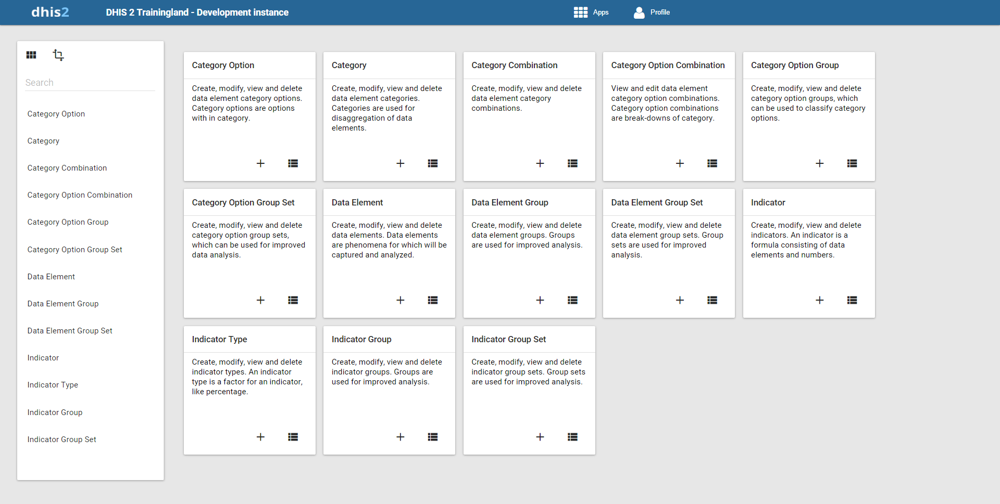

2.22
Copyright © 2006-2016
Warranty: THIS DOCUMENT IS PROVIDED BY THE AUTHORS ''AS IS'' AND ANY EXPRESS OR IMPLIED WARRANTIES, INCLUDING, BUT NOT LIMITED TO, THE IMPLIED WARRANTIES OF MERCHANTABILITY AND FITNESS FOR A PARTICULAR PURPOSE ARE DISCLAIMED. IN NO EVENT SHALL THE AUTHORS OR CONTRIBUTORS BE LIABLE FOR ANY DIRECT, INDIRECT, INCIDENTAL, SPECIAL, EXEMPLARY, OR CONSEQUENTIAL DAMAGES (INCLUDING, BUT NOT LIMITED TO, PROCUREMENT OF SUBSTITUTE GOODS OR SERVICES; LOSS OF USE, DATA, OR PROFITS; OR BUSINESS INTERRUPTION) HOWEVER CAUSED AND ON ANY THEORY OF LIABILITY, WHETHER IN CONTRACT, STRICT LIABILITY, OR TORT (INCLUDING NEGLIGENCE OR OTHERWISE) ARISING IN ANY WAY OUT OF THE USE OF THIS MANUAL AND PRODUCTS MENTIONED HEREIN, EVEN IF ADVISED OF THE POSSIBILITY OF SUCH DAMAGE.
License: Permission is granted to copy, distribute and/or modify this document under the terms of the GNU Free Documentation License, Version 1.3 or any later version published by the Free Software Foundation; with no Invariant Sections, no Front-Cover Texts, and no Back-Cover Texts. A copy of the license is included in the source of this documentation, and is available here online: http://www.gnu.org/licenses/fdl.html.
| Revision History | |
|---|---|
| Revision Revision 1925 | |
| Version 2.22 2016-04-07 09:45:18 | |
Table of Contents
- About this guide
- 1. What is DHIS 2?
- 2. Getting started with DHIS 2
- 3. Data dimensions in DHIS2
- 3.1. Data dimensions: Core building blocks in DHIS 2
- 3.2. Data elements: The What dimension
- 3.3. The organisation unit dimension
- 3.4. The period dimension in DHIS2
- 3.5. Data collection vs. data analysis
- 3.6. Extended examples of data elements and forms
- 3.7. How this works in pivot tables
- 3.8. Case study: From paper forms to multidimensional datasets - lessons learned
- 4. Organisation units
- 5. Data elements
- 5.1. Data elements
- 5.2. Data element groups
- 5.3. Data element group editor
- 5.4. Data element group sets
- 5.5. Categories
- 5.6. Category combinations
- 5.7. Using category combinations as attributes
- 5.8. Category option combination maintenance
- 5.9. Category option groups and group sets
- 5.10. Translations of data elements and other objects
- 6. Data sets and data entry forms
- 7. User management
- 8. Sharing
- 9. Dashboards
- 10. Data entry
- 11. Using Data Quality functionality
- 12. Setting up Data Quality functionality
- 13. Indicators
- 14. Using reporting functionality
- 15. Using Pivot Table
- 16. Using Data Visualizer
- 16.1. Data Visualizer overview
- 16.2. Selecting chart type
- 16.3. Selecting series, category and filter
- 16.4. Selecting indicators and data elements
- 16.5. Selecting reporting rates
- 16.6. Selecting fixed and relative periods
- 16.7. Selecting organisation units
- 16.8. Selecting organisation unit group sets and data element group sets
- 16.9. Selecting additional data dimensions
- 16.10. Selecting chart options
- 16.11. Displaying a chart
- 16.12. Downloading chart as image or PDF
- 16.13. Saving chart as favorite
- 16.14. Sharing interpretations
- 16.15. Embed charts in any web page
- 16.16. Analysis integration
- 16.17. Exiting the data visualizer module
- 17. Using GIS
- 18. Setting up GIS
- 19. Setting up report functionality
- 20. Data approval
- 21. Import and export
- 22. Data Administration
- 22.1. Data browser
- 22.2. Data integrity
- 22.2.1. Data elements without data set
- 22.2.2. Data elements without groups
- 22.2.3. Data elements violating exclusive group sets
- 22.2.4. Data elements in data set but not in form or sections
- 22.2.5. Data elements assigned to data sets with different period types
- 22.2.6. Data sets not assigned to organisation units
- 22.2.7. Sections with invalid category combinations
- 22.2.8. Indicators with identical formulas
- 22.2.9. Indicators without groups
- 22.2.10. Invalid indicator numerators
- 22.2.11. Invalid indicator denominators
- 22.2.12. Indicators violating exclusive group sets
- 22.2.13. Duplicate periods
- 22.2.14. Organisation units with cyclic references
- 22.2.15. Orphaned organisation units
- 22.2.16. Organisation units without groups
- 22.2.17. Organisation units violating compulsory group sets
- 22.2.18. Organisation units violating exclusive group sets
- 22.2.19. Organisation unit groups without group sets
- 22.2.20. Validation rules without groups
- 22.2.21. Invalid validation rule left side expressions
- 22.2.22. Invalid validation rule right side expressions
- 22.3. Maintenance
- 22.4. Resource tables
- 22.5. Locale Management
- 22.6. SQL View
- 22.7. Duplicate data elimination
- 22.8. Data statistics
- 22.9. Lock exceptions
- 22.10. Min-Max Value Generation
- 22.11. Constant
- 22.12. Option sets
- 22.13. Cache Statistics
- 22.14. Attributes
- 22.15. Scheduling
- 22.16. Data synchronization
- 23. Settings
- 24. Mobile
- 25. Using Event Capture
- 26. Using Event Reports
- 27. Using Event Visualizer
- 28. Using Tracker Capture
- 29. Tracker
- 30. Program Indicators
- 31. Program rules
- 32. User profiles
- 33. DHIS 2 Frequently Asked Questions
- A. User authorities
- DHIS2 Glossary
- Bibliography
- Index
List of Figures
List of Tables
- 3.1.
- 3.2. Example of detailed storage of data values when using data element categories "Place of Service" and "Age" (simplified for readability compared to the actual database table)
- 3.3.
- 3.4.
- 3.5.
- 6.1. Data entry events
- 18.1. Organisation unit identifiers supported for GML import
- 20.1. Example Category Option Groups
- 20.2. Example Category Option Group Set approval levels
- 20.3. Example Multiple Category Option Group Sets
- 20.4. Example Multiple Category Option Group Set approval levels
- 24.1.
- 24.2. Gateway Configuration Parameters
- 30.1. Operators
- 30.2. Functions
- 30.3. Variables
- 31.1. Functions
- A.1.
The DHIS2 documentation is a collective effort and has been developed by the development team and users. While the guide strives to be complete, there may be certain functionalities which have been omitted or which have yet to be documented. This section explains some of the conventions which are used throughout the document.
DHIS2 is a browser-based application. In many cases, screenshots have been included for enhanced clarity. Shortcuts to various functionalities are displayed such as "Maintenance->Data administration". The "->" character indicates that you should choose "Maintenance" and then click on "Data administration" in the menu which appears through the browser.
Different styles of text have been used to highlight important parts of the text or particular types of text, such as source code. Each of the conventions used in the document are explained below.
![[Note]](resources/images/admon/note.png) | Note |
|---|---|
|
A note contains additional information which should be considered or a reference to more information which may be helpful. |
![[Tip]](resources/images/admon/tip.png) | Tip |
|---|---|
|
A tip can be a useful piece of advice, such as how to perform a particular task more efficiently. |
![[Important]](resources/images/admon/important.png) | Important |
|---|---|
|
Important information should not be ignored, and usually indicates something which is required by the application. |
![[Caution]](resources/images/admon/caution.png) | Caution |
|---|---|
|
Information contained in these sections should be carefully considered, and if not heeded, could result in unexpected results in analysis, performance, or functionality. |
![[Warning]](resources/images/admon/warning.png) | Warning |
|---|---|
|
Information contained in these sections, if not heeded, could result in permanent data loss or affect the overall usability of the system. |
Program listings usually contain some type of computer code. They will be displayed with a shaded background and a different font.
Commands will be displayed in bold text, and represent a command which would need to be executed on the operating system or database.
Links to external web sites or cross references will be displayed in blue text, and underlined like this..
Bibliographic references will displayed in square brackets like this [Store2007]. A full reference can be found in the bibliography contained at the end of this document.
Table of Contents
After reading this chapter you will be able to understand:
-
What is DHIS 2 and what purpose it serves with respect to health information systems (HIS)?
-
What are the major technological considerations when it comes to deploying DHIS 2, and what are the options are for extending DHIS 2 with new modules?
-
What is the difference between patient based and aggregate data?
-
What are some of the benefits and challenges with using Free and Open Source Software (FOSS) for HIS?
DHIS 2 is a tool for collection, validation, analysis, and presentation of aggregate and patient-based statistical data, tailored (but not limited) to integrated health information management activities. It is a generic tool rather than a pre-configured database application, with an open meta-data model and a flexible user interface that allows the user to design the contents of a specific information system without the need for programming. DHIS2 is a modular web-based software package built with free and open source Java frameworks.
DHIS 2 is open source software released under the BSD license and can be obtained at no cost. It runs on any platform with a Java Runtime Environment (JRE 7 or higher) installed.
DHIS 2 is developed by the Health Information Systems Programme (HISP) as an open and globally distributed process with developers currently in India, Vietnam, Tanzania, Ireland, and Norway. The development is coordinated by the University of Oslo with support from NORAD and other donors.
The DHIS 2 software is used in more than 40 countries in Africa, Asia, and Latin America, and countries that have adopted DHIS 2 as their nation-wide HIS software include Kenya, Tanzania, Uganda, Rwanda, Ghana, Liberia, and Bangladesh. A rapidly increasing number of countries and organisations are starting up new deployments.
The documentation provided herewith, will attempt to provide a comprehensive overview of the application. Given the abstract nature of the application, this manual will not serve as a complete step-by-step guide of how to use the application in each and every circumstance, but rather will seek to provide illustrations and examples of how DHIS2 can be implemented in a variety of situations through generalized examples.
Before implementing DHIS 2 in a new setting, we highly recommend reading the DHIS 2 Implementation Guide (a separate manual from this one), also available at the main DHIS2 website.
The key features and purpose of DHIS 2 can be summarised as follows:
-
Provide a comprehensive data management solution based on data warehousing principles and a modular structure which can easily be customised to the different requirements of a management information system, supporting analysis at different levels of the organisational hierarchy.
-
Customisation and local adaptation through the user interface. No programming required to start using DHIS 2 in a new setting (country, region, district etc.).
-
Provide data entry tools which can either be in the form of standard lists or tables, or can be customised to replicate paper forms.
-
Provide different kinds of tools for data validation and improvement of data quality.
-
Provide easy to use - one-click reports with charts and tables for selected indicators or summary reports using the design of the data collection tools. Allow for integration with popular external report design tools (e.g. JasperReports) to add more custom or advanced reports.
-
Flexible and dynamic (on-the-fly) data analysis in the analytics modules (i.e. GIS, PivotTables,Data Visualizer, Event reports, etc).
-
A user-specific dashboard for quick access to the relevant monitoring and evaluation tools including indicator charts and links to favourite reports, maps and other key resources in the system.
-
Easy to use user-interfaces for metadata management e.g. for adding/editing datasets or health facilities. No programming needed to set up the system in a new setting.
-
Functionality to design and modify calculated indicator formulas.
-
User management module for passwords, security, and fine-grained access control (user roles).
-
Messages can be sent to system users for feedback and notifications. Messages can also be delivered to email and SMS.
-
Users can share and discuss their data in charts and reports using Interpretations, enabling an active information-driven user community.
-
Functionalities of export-import of data and metadata, supporting synchronisation of offline installations as well as interoperability with other applications.
-
Using the DHIS 2 Web-API , allow for integration with external software and extension of the core platform through the use of custom apps.
-
Further modules can be developed and integrated as per user needs, either as part of the DHIS 2 portal user interface or a more loosely-coupled external application interacting through the DHIS 2 Web-API.
In summary, DHIS2 provides a comprehensive HIS solution for the reporting and analysis needs of health information users at any level.
The wider context of HIS can be comprehensively described through the information cycle presented in Figure 1.1 below. The information cycle pictorially depicts the different components, stages and processes through which the data is collected, checked for quality, processed, analysed and used.

DHIS 2 supports the different facets of the information cycle including:
-
Collecting data.
-
Running quality checks.
-
Data access at multiple levels.
-
Reporting.
-
Making graphs and maps and other forms of analysis.
-
Enabling comparison across time (for example, previous months) and space (for example, across facilities and districts).
-
See trends (displaying data in time series to see their min and max levels).
As a first step, DHIS 2 serves as a data collection, recording and compilation tool, and all data (be it in numbers or text form) can be entered into it. Data entry can be done in lists of data elements or in customised user defined forms which can be developed to mimic paper based forms in order to ease the process of data entry.
As a next step, DHIS 2 can be used to increase data quality. First, at the point of data entry, a check can be made to see if data falls within acceptable range levels of minimum and maximum values for any particular data element. Such checking, for example, can help to identify typing errors at the time of data entry. Further, user can define various validation rules, and DHIS 2 can run the data through the validation rules to identify violations. These types of checks help to ensure that data entered into the system is of good quality from the start, and can be improved by the people who are most familiar with it.
When data has been entered and verified, DHIS 2 can help to make different kinds of reports. The first kind are the routine reports that can be predefined, so that all those reports that need to be routine generated can be done on a click of a button. Further, DHIS 2 can help in the generation of analytical reports through comparisons of for example indicators across facilities or over time. Graphs, maps, reports and health profiles are among the outputs that DHIS 2 can produce, and these should routinely be produced, analysed, and acted upon by health managers.
DHIS 2 can be perceived as a platform on several levels. First, the application database is designed ground-up with flexibility in mind. Data structures such as data elements, organisation units, forms and user roles can be defined completely freely through the application user interface. This makes it possible for the system to be adapted to a multitude of locale contexts and use-cases. We have seen that DHIS 2 supports most major requirements for routine data capture and analysis emerging in country implementations. It also makes it possible for DHIS 2 to serve as management system for domains such as logistics, labs and finance.
Second, due to the modular design of DHIS 2 it can be extended with additional software modules or through custom apps. These software modules/apps can live side by side with the core modules of DHIS 2 and can be integrated into the DHIS 2 portal and menu system. This is a powerful feature as it makes it possible to extend the system with extra functionality when needed, typically for country specific requirements as earlier pointed out.
The downside of the software module extensibility is that it puts several constraints on the development process. The developers creating the extra functionality are limited to the DHIS 2 technology in terms of programming language and software frameworks, in addition to the constraints put on the design of modules by the DHIS 2 portal solution. Also, these modules must be included in the DHIS 2 software when the software is built and deployed on the web server, not dynamically during run-time.
In order to overcome these limitations and achieve a looser coupling between the DHIS service layer and additional software artifacts, a REST-based API has been developed as part of DHIS 2. This Web API complies with the rules of the REST architectural style. This implies that:
-
The Web API provides a navigable and machine-readable interface to the complete DHIS 2 data model. For instance, one can access the full list of data elements, then navigate using the provided URL to a particular data element of interest, then navigate using the provided URL to the list of data sets which the data element is a member of.
-
(Meta) Data is accessed through a uniform interface (URLs) using plain HTTP requests. There are no fancy transport formats or protocols involved - just the well-tested, well-understood HTTP protocol which is the main building block of the Web today. This implies that third-party developers can develop software using the DHIS 2 data model and data without knowing the DHIS 2specific technology or complying with the DHIS 2 design constraints.
-
All data including meta-data, reports, maps and charts, known as resources in REST terminology, can be retrieved in most of the popular representation formats of the Web of today, such as XML, JSON, PDF and PNG. These formats are widely supported in applications and programming languages and gives third-party developers a wide range of implementation options.
All computers have an Operating System (OS) to manage it and the programs running it. The operating system serves as the middle layer between the software application, such as DHIS 2, and the hardware, such as the CPU and RAM. DHIS 2 runs on the Java Virtual Machine, and can therefore run on any operating system which supports Java. Platform independence implies that the software application can run on ANY OS - Windows, Linux, Macintosh etc. DHIS 2 is platform independent and thus can be used in many different contexts depending on the exact requirements of the operating system to be used.
Additionally, DHIS 2 supports three major database management systems systems (DBMS). DHIS 2 uses the Hibernate database abstraction framework and is compatible with the following database systems: PostgreSQL, MySQL and H2. PostgreSQL and MySQL are high-quality production ready databases, while H2 is a useful in-memory database for small-scale applications or development activities.
Lastly, and perhaps most importantly, since DHIS2 is a browser-based application, the only real requirement to interact with the system is with a web browser. DHIS2 supports most web browsers, although currently either Google Chrome, Mozilla Firefox or Opera are recommended.
DHIS 2 is a network enabled application and can be accessed over the Internet, a local intranet as well as a locally installed system. The deployment alternatives for DHIS 2 are in this chapter defined as i) offline deployment ii) online deployment and iii) hybrid deployment. The meaning and differences will be discussed in the following sections.
An off-line deployment implies that multiple standalone off-line instances are installed for end users, typically at the district level. The system is maintained primarily by the end users/district health officers who enters data and generate reports from the system running on their local server. The system will also typically be maintained by a national super-user team who pay regular visits to the district deployments. Data is moved upwards in the hierarchy by the end users producing data exchange files which are sent electronically by email or physically by mail or personal travel. (Note that the brief Internet connectivity required for sending emails does not qualify for being defined as on-line). This style of deployment has the obvious benefit that it works when appropriate Internet connectivity is not available. On the other side there are significant challenges with this style which are described in the following section.
-
Hardware: Running stand-alone systems requires advanced hardware in terms of servers and reliable power supply to be installed, usually at district level, all over the country. This requires appropriate funding for procurement and plan for long-term maintenance.
-
Software platform: Local installs implies a significant need for maintenance. From experience, the biggest challenge is viruses and other malware which tend to infect local installations in the long-run. The main reason is that end users utilize memory sticks for transporting data exchange files and documents between private computers, other workstations and the system running the application. Keeping anti-virus software and operating system patches up to date in an off-line environment are challenging and bad practices in terms of security are often adopted by end users. The preferred way to overcome this issue is to run a dedicated server for the application where no memory sticks are allowed and use an Linux based operating system which is not as prone for virus infections as MS Windows.
-
Software application: Being able to distribute new functionality and bug-fixes to the health information software to users are essential for maintenance and improvement of the system. Relying on the end users to perform software upgrades requires extensive training and a high level of competence on their side as upgrading software applications might a technically challenging task. Relying on a national super-user team to maintain the software implies a lot of traveling.
-
Database maintenance: A prerequisite for an efficient system is that all users enter data with a standardized meta-data set (data elements, forms etc). As with the previous point about software upgrades, distribution of changes to the meta-data set to numerous off-line installations requires end user competence if the updates are sent electronically or a well-organized super-user team. Failure to keep the meta-data set synchronized will lead to loss of ability to move data from the districts and/or an inconsistent national database since the data entered for instance at the district level will not be compatible with the data at the national level.
An on-line deployment implies that a single instance of the application is set up on a server connected to the Internet. All users (clients) connect to the on-line central server over the Internet using a web browser. This style of deployment is increasingly possible due to increased availability in (mobile) Internet coverage globally, as well as readily available and cheap cloud-computing resources. These developments make it possible to access on-line servers in even the most rural areas using mobile Internet modems (also referred to as dongles).
This on-line deployment style has huge positive implications for the implementation process and application maintenance compared to the traditional off-line standalone style:
-
Hardware: Hardware requirements on the end-user side are limited to a reasonably modern computer/laptop and Internet connectivity through a fixed line or a mobile modem. There is no need for a specialized server for each user, any Internet enabled computer will be sufficient. A server will be required for on-line deployments, but since there is only one (or several) servers which need to be procured and maintained, this is significantly simpler (and cheaper) than maintaining many separate servers is disparate locations. Given that cloud-computing resources continue to steadily decrease in price while increasing in computational power, setting up a powerful server in the cloud is far cheaper than procuring hardware.
-
Software platform: The end users only need a web browser to connect to the on-line server. All popular operating systems today are shipped with a web browser and there is no special requirement on what type or version. This means that if severe problems such as virus infections or software corruption occur one can always resort to re-formatting and installing the computer operating system or obtain a new computer/laptop. The user can continue with data entry where it was left and no data will be lost.
-
Software application: The central server deployment style means that the application can be upgraded and maintained in a centralized fashion. When new versions of the applications are released with new features and bug-fixes it can be deployed to the single on-line server. All changes will then be reflected on the client side the next time end users connect over the Internet. This obviously has a huge positive impact for the process of improving the system as new features can be distributed to users immediately, all users will be accessing the same application version, and bugs and issues can be sorted out and deployed on-the-fly.
-
Database maintenance: Similar to the previous point, changes to the meta-data can be done on the on-line server in a centralized fashion and will automatically propagate to all clients next time they connect to the server. This effectively removes the vast issues related to maintaining an upgraded and standardized meta-data set related to the traditional off-line deployment style. It is extremely convenient for instance during the initial database development phase and during the annual database revision processes as end users will be accessing a consistent and standardized database even when changes occur frequently.
This approach might be problematic in cases where Internet connectivity is volatile or missing in long periods of time. DHIS2 however has certain features which requires Internet connectivity to be available only part of the time for the system to work properly, such as offline data entry. In general however, DHIS 2 does require Internet connectivity of some sort, but this is increasingly an easy problem to solve even in remote locations.
From the discussion so far one realizes that the on-line deployment style is favourable over the off-line style but requires decent Internet connectivity where it will be used. It is important to notice that the mentioned styles can co-exist in a common deployment. It is perfectly feasible to have on-line as well as off-line deployments within a single country. The general rule would be that districts and facilities should access the system on-line over the Internet where sufficient Internet connectivity exist, and off-line systems should be deployed to districts where this is not the case.
Defining decent Internet connectivity precisely is hard but as a rule of thumb the download speed should be minimum 10 Kbyte/second for the client and at least 1 MBit/sec (dedicated) bandwidth for the server.
In this regard mobile Internet modems which can be connected to a computer or laptop and access the mobile network is an extremely capable and feasible solution. Mobile Internet coverage is increasing rapidly all over the world, often provide excellent connectivity at low prices and is a great alternative to local networks and poorly maintained fixed Internet lines. Getting in contact with national mobile network companies regarding post-paid subscriptions and potential large-order benefits can be a wort-while effort. The network coverage for each network operator in the relevant country should be investigated when deciding which deployment approach to opt for as it might differ and cover different parts of the country.
The on-line deployment approach raises the question of where and how to host the server which will run the DHIS 2 application. Typically there are several options:
-
Internal hosting within the Ministry of Health
-
Hosting within a government data centre
-
Hosting through an external hosting company
The main reason for choosing the first option is often political motivation for having “physical ownership” of the database. This is perceived as important by many in order to “own” and control the data. There is also a wish to build local capacity for server administration related to sustainability of the project. This is often a donor-driven initiatives as it is perceived as a concrete and helpful mission.
Regarding the second option, some places a government data centre is constructed with a view to promoting and improving the use and accessibility of public data. Another reason is that a proliferation of internal server environments is very resource demanding and it is more effective to establish centralized infrastructure and capacity.
Regarding external hosting there is lately a move towards outsourcing the operation and administration of computer resources to an external provider, where those resources are accessed over the network, popularly referred to as “cloud computing” or “software as a service”. Those resources are typically accessed over the Internet using a web browser.
The primary goal for an on-line server deployment is provide long-term stable and high-performance accessibility to the intended services. When deciding which option to choose for server environment there are many aspects to consider:
-
Human capacity for server administration and operation. There must be human resources with general skills in server administration and in the specific technologies used for the application providing the services. Examples of such technologies are web servers and database management platforms.
-
Reliable solutions for automated backups, including local off-server and remote backup.
-
Stable connectivity and high network bandwidth for traffic to and from the server.
-
Stable power supply including a backup solution.
-
Secure environment for the physical server regarding issues such as access, theft and fire.
-
Presence of a disaster recovery plan. This plan must contain a realistic strategy for making sure that the service will be only suffering short down-times in the events of hardware failures, network downtime and more.
-
Feasible, powerful and robust hardware.
All of these aspects must be covered in order to create an appropriate hosting environment. The hardware requirement is deliberately put last since there is a clear tendency to give it too much attention.
Looking back at the three main hosting options, experience from implementation missions in developing countries suggests that all of the hosting aspects are rarely present in option one and two at a feasible level. Reaching an acceptable level in all these aspects is challenging in terms of both human resources and money, especially when compared to the cost of option three. It has the benefit that is accommodates the mentioned political aspects and building local capacity for server administration, on the other hand can this be provided for in alternative ways.
Option three - external hosting - has the benefit that it supports all of the mentioned hosting aspects at a very affordable price. Several hosting providers - of virtual servers or software as a service - offer reliable services for running most kinds of applications. Example of such providers are Linode and Amazon Web Services. Administration of such servers happens over a network connection, which most often anyway is the case with local server administration. The physical location of the server in this case becomes irrelevant as that such providers offer services in most parts of the world. This solution is increasingly becoming the standard solution for hosting of application services. The aspect of building local capacity for server administration is compatible with this option since a local ICT team can be tasked with maintaining the externally hosted server, but with not being burdened with worrying about power supply and bandwidth constraints which usually exist outside of major data centres.
An approach for combining the benefits of external hosting with the need for local hosting and physical ownership is to use an external hosting provider for the primary transactional system, while mirroring this server to a locally hosted non-critical server which is used for read-only purposes such as data analysis and accessed over the intranet.
Patient data is data relating to a single patient, such as his/her diagnosis, name, age, earlier medical history etc. This data is typically based on a single patient-health care worker interaction. For instance, when a patient visits a health care clinic, a variety of details may be recorded, such as the patient's temperature, their weight, and various blood tests. Should this patient be diagnosed as having "Vitamin B 12 deficiency anaemia, unspecified" corresponding to ICD-10 code D51.9, this particular interaction might eventually get recorded as an instance of "Anaemia" in an aggregate based system. Patient based data is important when you want to track longitudinally the progress of a patient over time. For example, if we want to track how a patient is adhering to and responding to the process of TB treatment (typically taking place over 6-9 months), we would need patient based data.
Aggregated data is the consolidation of data relating to multiple patients, and therefore cannot be traced back to a specific patient. They are merely counts, such as incidences of Malaria, TB, or other diseases. Typically, the routine data that a health facility deals with is this kind of aggregated statistics, and is used for the generation of routine reports and indicators, and most importantly, strategic planning within the health system. Aggregate data cannot provide the type of detailed information which patient level data can, but is crucial for planning and guidance of the performance of health systems.
In between the two you have case-based data, or anonymous "patient" data. A lot of details can be collected about a specific health event without necessarily having to identify the patient it involved. Inpatient or outpatient visits, a new case of cholera, a maternal death etc. are common use-cases where one would like to collect a lot more detail that just adding to the total count of cases, or visits. This data is often collected in line-listing type of forms, or in more detailed audit forms. It is different from aggregate data in the sense that it contains many details about a specific event, whereas the aggregate data would count how many events of a certain type, e.g. how many outpatient visits with principal diagnosis "Malaria", or how many maternal deaths where the deceased did not attend ANC, or how many cholera outbreaks for children under 5 years. In DHIS 2 this data is collected through programs of the type single event without registration.
Patient data is highly confidential and therefore must be protected so that no one other than doctors can get it. When in paper, it must be properly stored in a secure place. For computers, patient data needs secure systems with passwords, restrained access and audit logs.
Security concerns for aggregated data are not as crucial as for patient data, as it is usually impossible to identify a particular person to a aggregate statistic . However, data can still be misused and misinterpreted by others, and should not be distributed without adequate data dissemination policies in place.
Software carries the instructions that tell a computer how to operate. The human authored and human readable form of those instructions is called source code. Before the computer can actually execute the instructions, the source code must be translated into a machine readable (binary) format, called the object code. All distributed software includes the object code, but FOSS makes the source code available as well.
Proprietary software owners license their copyrighted object code to a user, which allows the user to run the program. FOSS programs, on the other hand, license both the object and the source code, permitting the user to run, modify and possibly redistribute the programs. With access to the source code, the users have the freedom to run the program for any purpose, redistribute, probe, adapt, learn from, customise the software to suit their needs, and release improvements to the public for the good of the community. Hence, some FOSS is also known as free software, where “free” refers, first and foremost, to the above freedoms rather than in the monetary sense of the word.
Within the public health sector, FOSS can potentially have a range of benefits, including:
-
Lower costs as it does not involve paying for prohibitive license costs.
-
Given the information needs for the health sector are constantly changing and evolving, there is a need for the user to have the freedom to make the changes as per the user requirements. This is often limited in proprietary systems.
-
Access to source code to enable integration and interoperability. In the health sector interoperability between different software applications is becoming increasingly important, meaning enabling two or more systems to communicate metadata and data. This work is a lot easier, and sometimes dependent on the source code being available to the developers that create the integration. This availability is often not possible in the case of proprietary software. And when it is, it comes at a high cost and contractual obligations.
-
FOSS applications like DHIS 2 typically are supported by a global network of developers, and thus have access to cutting edge research and development knowledge.
Table of Contents
The DHIS 2 team maintains a demonstration server at https://play.dhis2.org/demo. This is by far the easiest way to try out DHIS2. Simply open the link in your web browser and login with username = admin and password = district.
| Note |
|---|---|
|
All changes on this server are deleted each night, so do not save any important work on this server. It is strictly for demonstration purposes on only! |
The DHIS 2 Live package is the easiest way to get started with DHIS2 on your local computer. DHIS2 Live is appropriate for a stand-alone installation and demos. Simply download the application from here. Once the file is downloaded, you can simply double-click the downloaded file, and get started using DHIS 2.
You must be sure that you have a current version of the Java Runtime installed on your machine. Depending on your operating system, there are different ways of installing Java. The reader is referred to this website for detailed information on getting Java installed.
The live package comes with a demo database just like what you see on the online demo (which is based on the national Sierra Leone HMIS), and if you want to start with a blank system/database and build up your own system then you need to do the following:
1) Stop DHIS2 live if it is already running. Right click on the tray icon and select Exit. The tray icon is the green symbol on the bottom right of your screen (on Windows) which should say' DHIS 2 Server running' when you hover your mouse pointer over the icon.
2) Open the folder where the DHIS 2 live package is installed and locate the folder called "conf".
3) In conf/ open the file called 'hibernate.properties' in a text editor (notepad or similar) and do the following modification: locate the string 'jdbc:h2:./database/dhis2' and replace the 'dhis2' part with any name that you want to give to your database (e.g. dhis2_test).
4) Save and close the hibernate.properties file.
5) Start DHIS 2 Live by double-clicking on the file dhis2-live.exe in the DHIS 2 Live installation folder or by using a desktop shortcut or menu link that you might have set up.
6) Wait for the browser window to open and the login screen to show, and then log in with username: admin and password: district
7) Now you will see a completely empty DHIS 2 system and you should start by adding your users, organisational hierarchy, data elements, and datasets etc. Please refer to the other sections of the user manual for instructions on how to do this.
The latest stable server version can be downloaded from this website. For detailed information on how to install it please refer to the installation chapter in the implementation manual.
Regardless of whether you have installed the server version of the desktop Live version, you will use a web-browser to log on to the application. DHIS2 should be compatible with most modern web-browsers, although you will need to ensure that Java Script is enabled.
To log on to the application just enter http://localhost:8080/dhis if you
are using the DHIS2 live package, or replace localhost with the name or IP
address of the server where the server version is installed.
Once you have started DHIS2, either on-line or off-line, the displayed screen will prompt you to enter your registered user-name and password. After entering the required information click on log-in button to log into the application. The default user name and password are 'admin' and 'district'. They should be changed immediately upon logging on the first time.
 |
You can select the language which you wish to display DHIS2 in from the "Change language" dialog box at the bottom of the screen. Not all languages may be available.
Should you have forgotten your password, you can click on the "Forgot password?" link. You must have informed DHIS2 of your email address and the server must be properly configured to send emails.
If you want to create your own account (and the server administrator allows this), simply click "Create an account" and follow the directions provided.
Once you have logged into DHIS2, refer to the specific sections in this manual for the different functionality which is available.
Just click on the Profile and the click "Log out" the top-right corner of the DHIS2 menu.
DHIS 2 provides a powerful set of tools for data collection, validation, reporting and analysis, but the contents of the database, e.g. what to collect, who should collect it and on what format will depend on the context of use. However, in order to do anything with DHIS 2, you must first create meta-data. Meta-data, or data about the data, describes what should be collected (data elements and categories), where it should be collected (organisation units) and how frequently it should be collected (periods). This meta-data needs to be created in the DHIS 2 database before it can be used. This can be done through the user interface and requires no programming or in-depth technical skills of the software, but does require a good understanding of the processes which you are trying to collect data form.
This section will provide a very quick and brief introduction to DHIS 2 database design and mainly explain the various steps needed to prepare a new DHIS 2 system for use. How to do each step is explained in other chapters, and best practices on design choices will be explained in the implementers manual. Here are the steps to follow:
1. Set up an organisational hierarchy
2. Define data elements
3. Define data sets and data entry forms
4. Define validation rules
5. Define indicators
6. Define report tables and design reports
7. Set up the GIS module
8. Design charts and customise the dashboard
The organisational hierarchy defines the organisation using the DHIS 2, the health facilities, administrative areas and other geographical areas used in data collection and data analysis. This dimension to the data is defined as a hierarchy with one root unit (e.g. Ministry of Health) and any number of levels and nodes below. Each node in this hierarchy is called an organisational unit in DHIS 2.
The design of this hierarchy will determine the geographical units of analysis available to the users as data is collected and aggregated in this structure. There can only be one organisational hierarchy at the same time so its structure needs careful consideration. Additional hierarchies (e.g. parallel administrative groupings such as "Facility ownership") can be modelled using organisational groups and group sets, however the organisational hierarchy is the main vehicle for data aggregation on the geographical dimension. Typically national organisational hierarchies in public health have 4-6 levels, but any number of levels is supported. The hierarchy is built up of parent-child relations, e.g. a Country or MoH unit (the root) might have e.g. 8 parent units (provinces), and each province again ( at level 2) might have 10-15 districts as their children. Normally the health facilities will be located at the lowest level, but they can also be located at higher levels, e.g. national or provincial hospitals, so skewed organisational trees are supported (e.g. a leaf node can be positioned at level 2 while most other leaf nodes are at level 5).
Typically there is a geographical hierarchy defined by the health system. e.g. where the administrative offices are located (e.g. MoH, province, district), but often there are other administrative boundaries in the country that might or might not be added, depending on how its boundaries will improve data analysis. When designing the hierarchy the number of children for any organisational unit may indicate the usefulness of the structure, e.g. having one or more 1-1 relationships between two levels is not very useful as the values will be the same for the child and the parent level. On the other extreme a very high number of children in the middle of the hierarchy (e.g. 50 districts in a province) might call for an extra level to be added in between to increase the usefulness of data analysis. The lowest level, the health facilities will often have a large number of children (10-60), but for other levels higher up in the hierarchy approx. 5-20 children is recommended. Too few or too many children might indicate that a level should be removed or added.
Note that it is quite easy to make changes to the upper levels of the hierarchy at a later stage, the only problem is changing organisational units that collect data (the leaf nodes), e.g. splitting or merging health facilities. Aggregation up the hierarchy is done based on the current hierarchy at any time and will always reflect the most recent changes to the organisational structure. Refer to the chapter on Organisation Units to learn how to create organisational units and to build up the hierarchy.
The Data Element is perhaps the most important building block of a DHIS 2 database. It represents the "WHAT" dimension, it explains what is being collected or analysed. In some contexts this is referred to an indicator, but in DHIS 2 we call this unit of collection and analysis a data element. The data element often represents a count of something, and its name describes what is being counted, e.g. "BCG doses given" or "Malaria cases". When data is collected, validated, analysed, reported or presented it is the data elements or expressions built upon data elements that describes the WHAT of the data. As such the data elements become important for all aspects of the system and they decide not only how data is collected, but more importantly how the data values are represented in the database, which again decides how data can be analysed and presented.
It is possible to add more details to this "WHAT" dimension through the disaggregation dimension called data element categories. Some common categories are Age and Gender, but any category can be added by the user and linked to specific data elements. The combination of a data element's name and its assigned category defines the smallest unit of collection and analysis available in the system, and hence describes the raw data in the database. Aggregations can be done when zooming out of this dimension, but no further drill-down is possible, so designing data elements and categories define the detail of the analysis available to the system (on the WHAT dimension). Changes to data elements and categories at a later stage in the process might be complicated as these will change the meaning of the data values already captured in the database (if any). So this step is one of the more decisive and careful steps in the database design process.
One best practice when designing data elements is to think of data elements as a unit of data analysis and not just as a field in the data collection form. Each data element lives on its own in the database, completely detached from the collection form, and reports and other outputs are based on data elements and expressions/formulas composed of data elements and not the data collection forms. So the data analysis needs should drive the process, and not the look an feel of the data collection forms. A simple rule of thumb is that the name of the data element must be able to stand on its own and describe the data value also outside the context of its collection form. E.g. a data element name like "Total referrals" makes sense when looking at it in either the "RCH" form or the "OPD" form, but on its own it does not uniquely describe the phenomena (who are being referred?), and should in stead be called "Total referrals from Maternity" or "Total referrals from OPD". Two different data elements with different meanings, although the field on the paper form might only say "Total referrals" since the user of the form will always know where these referrals come from. In a database or a repository of data elements this context is no longer valid and therefore the names of the data elements become so important in describing the data.
Common properties of data elements can be modelled through what is called data element groups. The groups are completely flexible in the sense that they are defined by the user, both their names and their memberships. Groups are useful both for browsing and presenting related data, but can also be used to aggregate data elements together. Groups are loosely coupled to data elements and not tied directly to the data values which means they can be modified and added at any point in time without interfering with the raw data.
All data entry in DHIS 2 is organised through the use of Datasets. A Dataset is a collection of data elements grouped together for data collection, and in the case of distributed installs they also define chunks of data for export and import between instances of DHIS 2 (e.g. from a district office local installation to a national server). Datasets are not linked directly to the data values, only through their data elements and frequencies, and as such a dataset can be modified, deleted or added at any point in time without affecting the raw data already captured in the system, but such changes will of course affect how new data will be collected.
A dataset has a period type which controls the data collection frequency, which can be daily, weekly, monthly, quarterly, six-monthly, or yearly. Both which data elements to include in the dataset and the period type is defined by the user, together with a name, short name, and code.
In order to use a dataset to collect data for a specific orgunit you must assign the orgunit to the dataset, and this mechanism controls which orgunits that can use which datasets, and at the same time defines the target values for data completeness (e.g. how many health facilities in a district expected to submit RCH data every month).
A data element can belong to multiple datasets, but this requires careful thinking as it may lead to overlapping and inconstant data being collected if e.g. the datasets are given different frequencies and are used by the same orgunits.
Once you have assigned a dataset to an orgunit that dataset will be made available in Data Entry (under Services) for the orgunits you have assigned it to and for the valid periods according to the dataset's period type. A default data entry form will then be shown, which is simply a list of the data elements belonging to the dataset together with a column for inputting the values. If your dataset contains data elements with categories such as age groups or gender, then additional columns will be automatically generated in the default form based on the categories. In addition to the default list-based data entry form there are two more alternatives, the section-based form and the custom form.
Section forms allow for a bit more flexibility when it comes to using tabular forms and are quick and simple to design. Often your data entry form will need multiple tables with subheadings, and sometimes you need to disable (grey out) a few fields in the table (e.g. some categories do not apply to all data elements), both of these functions are supported in section forms. After defining a dataset you can define it's sections with subsets of dataelements, a heading and possible grey fields i the section's table. The order of sections in a dataset can also be defined. In Data Entry you can now start using the Section form (should appear automatically when sections are available for the selected dataset). You can switch between default and section forms in the top right corner of the data entry screen. Most tabular data entry forms should be possible to do with sections forms, and the more you can utilise the section forms (or default forms) the easier it is for you. If these two types of forms are not meeting your requirements then the third option is the completely flexible, although more time-consuming, custom data entry forms.
When the form you want to design is too complicated for the default or section forms then your last option is to use a custom form. This takes more time, but gives you full flexibility in term of the design. In DHIS 2 there is a built in HTML editor (FcK Editor) for the form designer and you can either design the form in the UI or paste in your HTML directly using the Source window in the editor. In the custom form you can insert static text or data fields (linked to data elements + category) in any position on the form and you have complete freedom to design the layout of the form. Once a custom form has been added to a dataset it will be available in data entry and used automatically. You can switch back to default and section (if exists) forms in the top right corner of the data entry screen.
Once you have set up the data entry part of the system and started to collect data then there is time to define data quality checks that help to improve the quality of the data being collected. You can add as many validation rules as you like and these are composed of left and right side expressions that again are composed of data elements, with an operator between the two sides. Typical rules are comparing subtotals to totals of something. E.g. if you have two data elements "HIV tests taken" and "HIV test result positive" then you know that in the same form (for the same period and organisational unit) the total number of tests must always be equal or higher than the number of positive tests. These rules should be absolute rules meaning that they are mathematically correct and not just assumptions or "most of the time correct". The rules can be run in data entry, after filling each form, or as a more batch like process on multiple forms at the same time, e.g. for all facilities for the previous reporting month. The results of the tests will list all violations and the detailed values for each side of the expression where the violation occurred to make it easy to go back to data entry and correct the values.
Indicators represent perhaps the most powerful data analysis feature of the DHIS 2. While data elements represent the raw data (counts) being collected the indicators represent formulas providing coverage rates, incidence rates, ratios and other formula-based units of analysis. An indicator is made up of a factor (e.g. 1, 100, 100, 100 000), a numerator and a denominator, the two latter are both expressions based on one or more data elements. E.g. the indicator "BCG coverage <1 year" is defined a formula with a factor 100, a numerator ("BCG doses given to children under 1 year") and a denominator ("Target population under 1 year"). The indicator "DPT1 to DPT3 drop out rate" is a formula of 100 % x ("DPT1 doses given"- "DPT3 doses given") / ("DPT1 doses given").
Most report modules in DHIS 2 support both data elements and indicators and you can also combine these in custom reports, but the important difference and strength of indicators versus raw data (data element's data values) is the ability to compare data across different geographical areas (e.g. highly populated vs rural areas) as the target population can be used in the denominator.
Indicators can be added, modified and deleted at any point in time without interfering with the data values in the database.
Standard reports in DHIS 2 are a very flexible way of presenting the data that has been collected. Data can be aggregated by any organisational unit or orgunit level, by data element, by indicators, as well as over time (e.g. monthly, quarterly, yearly). The report tables are custom data sources for the standard reports and can be flexibly defined in the user interface and later accessed in external report designers such as iReport or through custom HTML reports. These report designs can then be set up as easily accessible one-click reports with parameters so that the users can run the same reports e.g. every month when new data is entered, and also be relevant to users at all levels as the organisational unit can be selected at the time of running the report.
In the integrated GIS module you can easily display your data on maps, both on polygons (areas) and as points (health facilities), and either as data elements or indicators. By providing the coordinates of your organisational units to the system you can quickly get up to speed with this module. See the GIS section for details on how to get started.
On of the easiest way to display your indicator data is through charts. An easy to use chart dialogue will guide you through the creation of various types of charts with data on indicators, organisational units and periods of your choice. These charts can easily be added to one of the four chart sections on your dashboard and there be made easily available right after log in. Make sure to set the dashboard module as the start module in user settings.
Table of Contents
- 3.1. Data dimensions: Core building blocks in DHIS 2
- 3.2. Data elements: The What dimension
- 3.3. The organisation unit dimension
- 3.4. The period dimension in DHIS2
- 3.5. Data collection vs. data analysis
- 3.6. Extended examples of data elements and forms
- 3.7. How this works in pivot tables
- 3.8. Case study: From paper forms to multidimensional datasets - lessons learned
A data value in DHIS2 is described by at least three dimensions: 1) data element, 2) organisation unit, and 3) period. These dimensions form the core building blocks of the data model.
 |
As an example, if you want to know how many children that were immunised for measles in Gerehun CHC in December 2014, the three dimensions which describe that value are the Data Element "Measles doses given", the Organisation Unit "Gerehun CHC", and the Period "Dececmber 2014". All data values have at least these three dimensions describing What, Where and When.
In addition to the organisation unit, period and data element dimensions, data values may also be associated with a custom dimension consisting of attributes. A common use of this dimension is to describe data values which are reported by multiple partners in the same location for the same data element and time period. In principle, it can be used as a "free-form" dimension, to describe multiple observations of the same phenomena at the same place and time.
Table 3.1.
| Organisation Unit | Data Element | Period | Value |
|---|---|---|---|
| Gerehun CHC | Measles doses given | Dec-09 | 22 |
| Tugbebu CHP | Measles doses given | Dec-09 | 18 |
The data element mentioned above ,"Measles doses given", can be further disaggregated into by combinations of data element categories. Each system administrator of DHIS 2 is free to define any data element category dimensions for data elements. There are however, certain best practices which should generally be followed.
Given the example of Measles vaccination, if you want to know whether these vaccines were given at the facility (fixed) or out in the community as part of the outreach services then you could add a dimension called e.g. "Place of service" with the two possible options "Fixed" and "Outreach". Then all data collected on measles immunisation would have to be disaggregated along these to options. In addition to this you might be interested in knowing how many of these children who were under 1 year or above 1 year of age. If so you can add an Age dimension to the data element with the two possible options "<1 y" and ">1 y". This implies further detail on the data collection process. You can also apply both categories "Place of service" and "Age" and combine these into a data element category combination e.g. called "EPI disaggregation". You would then be able to look at four different more detailed values in stead of only one as in the example above for the data element "Measles doses given": 1) "Fixed and <1 y, 2) Fixed and >1 y, 3) Outreach and <1 y, and 4) Outreach and >1 y. This adds complexity to how data is collected by the health facilities, but at the same time opens up for new possibilities of detailed data analysis of Measles immunisation.
Table 3.2. Example of detailed storage of data values when using data element categories "Place of Service" and "Age" (simplified for readability compared to the actual database table)
| Organisation Unit | Data Element | Place of service | Age | Period | Value |
|---|---|---|---|---|---|
| Gerehun CHC | Measles doses given | Fixed | <1 y | Dec-09 | 12 |
| Gerehun CHC | Measles doses given | Outreach | <1 y | Dec-09 | 4 |
| Gerehun CHC | Measles doses given | Fixed | >1 y | Dec-09 | 4 |
| Gerehun CHC | Measles doses given | Outreach | >1 y | Dec-09 | 2 |
| Tugbebu CHP | Measles doses given | Fixed | <1 y | Dec-09 | 10 |
| Tugbebu CHP | Measles doses given | Outreach | <1 y | Dec-09 | 4 |
| Tugbebu CHP | Measles doses given | Fixed | >1 y | Dec-09 | 3 |
| Tugbebu CHP | Measles doses given | Outreach | >1 y | Dec-09 | 1 |
While the data element categories and their options described above provide the level of detail (disaggregation) at the point of data collection and how data values get stored in the database, the data element group sets and groups can be used to add more information to data elements after data collection. As an example, if you are analyzing many data elements at the same time in a report, you would want to group these based on some criteria. Instead of looking at all the data captured in a form for immunisation and nutrition, you might want to separate or group data elements along a programme dimension (known as a data element group set in DHIS 2) where "Immunisation" (or EPI) and "Nutrition" would be the two groups.
Expanding the report to include data from other programs or larger themes of health data would mean more groups to such a group set dimension, like "Malaria", "Reproductive Health", "Stocks". For this example, you would create a data element group set called "Programme" (or whatever name you find appropriate), and to represent the different programmes in this dimension you would define data elements groups called "EPI", "Nutrition", "Malaria", "Reproductive health" and so on, and add all these groups to the "Programme" group set. To link or tag the data element "Measles doses given" to such a dimension you must (in our example) add it to the "EPI" group. Which groups you add "Measles doses given" to does not affect how health facilities collect the data, but adds more possibilities to your data analysis. So for the group set dimensions there are three levels; the group set (e.g. "Programme"), the group (e.g. "EPI"), and the data element (e.g. "Measles doses given").
Indicators can be grouped into indicator groups and further into indicator group sets (dimensions) in exactly the same way as data elements.
Table 3.3.
| Organisation Unit | Data Element | Programme | Period | Value |
|---|---|---|---|---|
| Gerehun CHC | Measles doses given | EPI | Dec-09 | 22 |
| Gerehun CHC | Vitamin A given | Nutrition | Dec-09 | 16 |
| Tugbebu CHP | Measles doses given | EPI | Dec-09 | 18 |
| Tugbebu CHP | Vitamin A given | Nutrition | Dec-09 | 12 |
| Gerehun CHC | Malaria new cases | Malaria | Dec-09 | 32 |
| Tugbebu CHP | Malaria new cases | Malaria | Dec-09 | 23 |
Organisation units in DHIS2 should typically represent a location, such as a Community Health Centre or referral hospitals, or an administrative unit like "MoHS Sierra Leone", "Bo District" or "Baoma Chiefdom". In non-health sector applications, they could be "schools" or "water points". Orgunits are represented in a default hierarchy, usually the default administrative hierarchy of a country or region, and are therefore assigned an organisational level. As an example, Sierra Leone has four organisation unit levels; National, District, Chiefdom, and PHU, and all orgunits are linked to one of these levels. An orgunit hierarchy in DHIS can have any number of levels. Normally data is collected at the lowest level, at the health facility, but can be collected at any level within the hiearchy, such as both the districts as well as the facility level.
When designing reports at higher levels with data aggregated at the district or province level, DHIS 2 will use the hierarchy structure to aggregate all the health facilities' data for any given unit at any level. The organisation unit level capturing the data always represents the lowest level of detail that is possible to use in data analysis, and the organisational levels define the available levels of aggregation along a geographical dimension.
While facility level is typically the lowest geographical level for disaggregation in DHIS 2, there are ways to flexibly group organisation units into any number of dimensions by using the organisation unit groups and group set functionality. As an example, if all facilities are given an official type like "Community health center" or "District Hospital, it is possible to create an organisation unit group set called "Type" and add groups with the names of the types mentioned above.In order for the group sets to function properly in analysis, each organisation unit should be a member of a single group (compulsory and exclusive) within a group set. Stated somewhat differently, a facility should not be both a "Community health center" as well as a "District hospital".
A more advanced use of organisation unit group sets is to create alternative hierarchies e.g. use administrative borders from other ministries. In Sierra Leone that could mean an alternative hierarchy of 1:MoHS, 2:Districts, and 3: Local councils, instead of the four-level hierarchy with chiefdoms and PHUs. For instance, if all PHUs are linked to a specific local council, it would be possible to look at data aggregated by local council instead of chiefdom. Then you would first need to create a group set called "Local council" and then create one orgunit group for every local council, and finally link all PHUs to their corresponding local council group.
Table 3.4.
| District | OrgUnit Type | Data Element | Period | Value |
|---|---|---|---|---|
| Bo | CHC | Measles doses given | Dec-09 | 121 |
| Bo | CHP | Measles doses given | Dec-09 | 98 |
| Bo | MCHP | Measles doses given | Dec-09 | 87 |
| Bombali | CHC | Measles doses given | Dec-09 | 110 |
| Bombali | CHP | Measles doses given | Dec-09 | 67 |
| Bombali | MCHP | Measles doses given | Dec-09 | 59 |
As mentioned above, all organisation units should be a member of a single group within a group set. If an organisation unit is not present in any group or is present in multiple group members in a group set, this can lead to unexpected results in the analysis modules. DHIS 2 has integrity checks to identify organisation units which are not present in any organisation unit group set member, or which is present in multiple groups.
The period dimension becomes an important factor when analysing data over time e.g. when looking at cumulative data, when creating quarterly or annual aggregated reports, or when doing analysis that combines data with different characteristics like monthly routine data, annual census/population data or six-monthly staff data.
In DHIS 2, periods are organised according to a set of fixed period types described below. The following list is for the default ISO 8601 calendar type.
-
Daily
-
Weekly: These are defined as ISO weeks, beginning on Monday and and ending on Sunday. Note that other week definitions are not currently supported.
-
Monthly: Refers to standard calendar months.
-
BiMonthly: Two-month periods beginning in January.
-
Quarterly: Standard ISO quarters, beginning in January.
-
SixMonthly: Six-month periods beginning in January
-
Yearly: This refers to a calendar year.
-
Financial April: Financial year period beginning on April 1st and ending on March 31st of the calendar next year
-
Financial July: Financial year period beginning on July 1st and ending on June 31st of the calendar next year
-
Financial Oct: Financial year period beginning on October 1st and ending on September 31st of the calendar next year
-
Six-monthly April: Six-month periods beginning on April 1st with a duration of six calendar months.
As a general rule, all organisation units should collect the same data using the same frequency or periodicity. A data entry form therefore is associated with a single period type to make sure data is always collected according to the correct and same periodicity across the country.
It is possible however to collect the same data elements using different period types by assigning the same data elements to multiple data sets with different period types, however then it becomes crucial to make sure no organisation unit is collecting data using both data sets/period types as that would create overlap and duplication of data values. If configured correctly the aggregation service in DHIS2 will aggregate the data together, e.g. the monthly data from one part of the country with quarterly data from another part of the country into a national quarterly report. For simplicity and to avoid data duplication it is advised to use the same period type for all organisation units for the same data elements when possible.
In addition to the fixed period types described in the previous section, DHIS 2 also support relative periods for use in the analysis modules.
When creating analytical resources within DHIS 2 it is possible to make use of the relative periods functionality. The simplest scenario is when you want to design a monthly report that can be reused every month without having to make changes to the report template to accommodate for the changes in period. The relative period called "Last month" allows for this, and the user can at the time of report generation through a report parameter select the month to use in the report.
A slightly more advanced use case is when you want to make a monthly summary report for immunisation and want to look at the data from the current (reporting) month together with a cumulative value for the year so far. The relative period called "This year" provides such a cumulative value relative to the reporting month selecting when running the report. Other relative periods are the last 3,6, or 12 months periods which are cumulative values calculated back from the selected reporting month. If you want to create a report with data aggregated by quarters (the ones that have passed so far in the year) you can select "Last four quarters". Other relative periods are described under the reporting table section of the manual.
Table 3.5.
| Organisation Unit | Data Element | Reporting month | So far this year | Reporting month name |
|---|---|---|---|---|
| Gerehun CHC | Measles doses given | 15 | 167 | Oct-09 |
| Tugbebu CHP | Measles doses given | 17 | 155 | Oct-09 |
While data needs to be collected on a given frequency to standardise data collection and management, this does not put limitations on the period types that can be used in data analysis and reports. Just like data gets aggregated up the organisational hierarchy, data is also aggregated according to a period hierarchy, so you can create quarterly and annual reports based on data that is being collected on a Monthly basis. The defined period type for a data entry form (data set) defines the lowest level of period detail possible in a report.
When aggregating data on the period dimension there are two options for how the calculation is done, namely sum or averge. This otion is specified on a per data element in DHIS 2 through the use of the 'aggregation operator' attribute in the Add/Edit Data Elements dialog.
Most of the data collected on a routinely basis should be aggregated by summing up the months or weeks, for instance to create a quarterly report on Measles immunisation one would sum up the three monthly values for "Measles doses given".
Other types of data that are more permanently valid over time like "Number of staff in the PHU" or an annual population estimate of "Population under 1 year" need to be aggregated differently. These values are static for all months as long as there are valid data. For example, the "Estimated population under 1", calculated from the census data ,is the same for all months of a given year, or the number of nurses working in a given facility is the same for every month in the 6 months period the number is reported for.
This difference becomes important when calculating an annual value for the indicator morbidity service burden for a facility. The monthly head-counts are summed up for the 12 months to get the annual headcount, while the number of staff for the PHU is calculated as the average of the two 6-monthly values reported through the 6-monthly staff report. So in this example the data element "OPD headcount" would have the aggregation operator "SUM" and the data element "Number of staff" would have it set to "AVERAGE".
Another important feature of average data elements is the validity period concept. Average data values are standing values for any period type within the borders of the period they are registered for. For example, an annual population estimate following the calendar year, will have the same value for any period that falls within that year no matter what the period type. If the population under 1 for a given facility is 250 for the year of 2015 that means that the value will be 250 for Jan-15, for Q3-15, for Week 12 of 2015 and for any period within 2015. This has implications for how coverage indicators are calculated, as the full annual population will be used as denominator value even when doing monthly reports. If you want to look at an estimated annual coverage value for a given month, then you will have the option of setting the indicator to "Annualised" which means that a monthly coverage value will be multiplied by a factor of 12, a quarterly value by 4, in order to generate an effective yearly total. The annualised indicator feature can therefore be used to mimic the use of monthly population estimates.
Datasets determine what raw data that is available in the system, as they describe how data is collected in terms of periodicity as well as spaital exten. Data sets define the building blocks of the data to be captured and stored in DHIS 2. For each data dimension we decide what level of detail the data should be collected at namely 1) the data element (e.g. diagnosis, vaccine, or any event taking place) and its categories (e.g. age and gender), 2) the period/frequency dimension, and 3) the organisation unit dimension. For any report or data analysis you can never retrieve more detailed data than what is defined in the data sets, so the design of the datasets and their corresponding data entry forms (the data collection tools) dictate what kind of data analysis will be possible.
It is important to understand that the data entry forms or datasets themselves are not intrinsically linked to the underlying data value and that the meaning of data is only described by the data element (and its categories). This makes it perfectly safe to modify datasets and forms without altering the data (as long as the data elements stay the same). This loose coupling between forms and data makes DHIS 2 flexible when it comes to designing and changing new forms and in providing exactly the form the users want.
Another benefit of only linking data to data elements and not to forms, is the flexibility of creating indicators and validation rules based on data elements, and also in providing any kind of output report (in pivot tables, charts, maps etc) that can combine data individually or across forms, e.g. to correlate data from different health programs. Due to this flexibility of enabling integration of data from various programs (forms) and sources (routine and semi permanent (population, staff, equipment)) a DHIS database is used as an integrated data repository for many or all parts of the aggregated data in a larger HIS. The figure below illustrates this flexibility.
 |
In this example, we see that data elements from multiple forms can be combined to create a given indicator. As a more concrete example, one might collect "Population under one year of age" in an annual data set by district, and then collect a data element like "Fully immunized children" by month at the facility level. By annualizing the population, we can generate an approximation of the effective monthly population, and combining this with the aggregate total of the number of fully immunized children by month, it would be possible to generate an inidicator "Fully immunized coverage", consisting of the aggregated total of children who are fully immunized, divided by the effective monthly population.
The table below combines data element the two group sets Diagnosis (all the diseases) and Morbidity/Mortality (New cases, Follow-ups, Referrals, Deaths) with the data element category PHU/Community. Deaths are captured in a separate form with other dimensions (e.g. the PHU/Community) than morbidity.
 |
This output table combines the two data element categories HIV_Age and Gender with the data element group set ART Group. The group enables subtotals for staging and entry points summing up the data elements in that group. Subtotals for either age groups and gender would be other possible columns to easily include here.
 |
When doing data analysis in Excel pivot tables or any other OLAP based tool the dimensions become extremely powerful in providing many different views into the data. Each data element category or group set become a pivot field, and the options or groups become values within each of these fields. In fact categories and groupsets are treated exactly the same way in pivot tables, and so are orgunits, periods, and data elements. All these become dimensions to the data value that can be used to rearrange, pivot, filter, and to drill down into the data. Here we will show some examples of how the data dimensions are used in pivot tables.
Using the example of morbidity and mortality data, a pivot table can show how the dimensions can be used to view data for different aggregation levels.
The completely aggregated number is viewed when none of the pivot fields are arranged in the table area, as column or row fields, but are listed above the table itself as page field (filter).
 |
Here we have selected to look at the Morbidity total. The various data elements on morbidity have been ordered into the main_de_groups Morbidity (we will get back to Mortality later). The fields above the table itself are all set to "All", meaning that the totals in the table will contain data from all Countries, Districts, Chiefdom, ou_type, year, months, the various categories as listed in the red fields, and all data elements in the Morbidity group.
As we have seen, this is not a very useful representation, as Morbidity is organized into new cases, follow-ups, referrals, and then again in age groups. Also, we do not see the various diagnoses. The first step is to include the diagnoses field (which is a group set), which is done by dragging the "diagnosis" field down to be a row field, as shown in the figure below, and to add the group set called "morbiditymortality" in the column field to display new cases, follow-up, and referrals.
 |
Contrast this figure above to the one below.
 |
They both show the same data (some of the rows have been cut in the screenshot due to image size), albeit in a different way.
-
The "dataelement" field, used in the bottom figure, displays each diagnosis as three elements; one follow-up, one new, and one referrals. This is the way the data elements have been defined in DHIS, as this makes sense for aggregation. You would not like to aggregate follow-ups and new, thus these have not been made as categories, the whole point of is to ease aggregation and disaggregation.
-
The "diagnosis" group set has instead been made to lump these three (follow-up, new, referrals) together, which can then be split with another group set, namely the one called "morbiditymortality". This allows us to organize the data as in the first of the two figures, where we have the single diagnosis per row, and the groups new, follow-up, referrals as rows.
The idea of using group sets is that you can combine, in any set, different data elements. Thus, if we add the mortality data (by checking it from the drop-down menu of the main_de_groups field, and moving this field out of the table) we can see also the deaths, since the mortality data elements have been included as a "death" group in the "morbiditymortality" group set. The result is shown below.
 |
The result is a much more user-friendly pivot table. Now, another figure shows the relationship between the group sets and elements (these are fake data values).
This small detail of the pivot table show how the actual data elements link to the group sets:
-
The four data elements, as defined in DHIS, are Measles death, Measles follow-up, Measles new, and Measles referrals
-
They all belong to the group set "diagnosis", where they have been lumped together in the group Measles
-
The group set "morbiditymortality" contains the groups New cases, Follow-up, Referrals, and Deaths.
-
Only the data element Measles deaths has data related to the group Deaths, thus this is where the data value (20) is shown, at the upper right corner. The same for Measles new; the value (224) is shown at the intersection of the data element Measles new and the group New cases (in the group set morbiditymortality)
-
All the intersections where the data element does not link with the groups in morbiditymortality are left blank. Thus in this case we would get a nice table if we excluded the dataelement from the table, and just had diagnosis and the group set morbiditymortality, as in the figure shown earlier
Now lets see how the data element categories can be used. In the data entry form for Morbidity the new cases and follow-ups use one age category, the referral data another,, and the mortality data a third age breakup, so these are available as three individual age group fields in the pivot tables called morbidity_age, referrals_age and mortality_age. It doesn't make sense to use these while looking at these data together (as in the examples above), but e.g. if we only want to look at the only the new cases we can put the MobidityMortalityGroups field back up as a page field and there select the New cases group as a filter. Then we can drag the Morbidity_age field down to the column area and we get the following view:
 |
The following table illustrates the benefits of reusing data element categories across datasets and categorycombinations. The VCCT, ART and PMTCT data are collected in three different datasets, the first two with both gender and age breakdown, and the PMTCT only age (gender is given). All three share the same age groups and therefore it is possible to view data elements from all these three datasets in the same table and use the age dimension. In the previous example with morbidity and mortality data this was not possible since new cases, referrals and deaths all have different age groups.
 |
In the table below PMTCT data has been removed from the table and the gender category added to the column area so that you can analyse the data for VCCT and ART by age and gender. An optional subtotal for gender has also been added, as well as a grand total for all age and gender.
 |
Typically the design of a DHIS 2 dataset is based on some requirements from a paper form that is already in use. The logic of paper forms are not the same as the data element and data set model of DHIS, e.g. often a field in a tabular paper form is described both by column headings and text on each row, and sometimes also with some introductory table heading that provides more context. In the database this is captured in one atomic data element with no reference to a position in a visual table format, so it is important to make sure the data element with the optional data element categories capture the full meaning of each individual field in the paper form.
Another important thing to have in mind while designing datasets is that the dataset and the corresponding data entry form (which is a dataset with layout) is a data collection tool and not a report or analysis tool. There are other far more sophisticated tools for data output and reporting in DHIS than the data entry forms. Paper forms are often designed with both data collection and reporting in mind and therefore you might see things such as cumulative values (in addition to the monthly values), repetition of annual data (the same population data reported every month) or even indicator values such as coverage rates in the same form as the monthly raw data. When you store the raw data in DHIS every month and have all the processing power you need within the computerised tool there is no need (in fact it would be stupid and most likely cause inconsistency) to register manually calculated values such as the ones mentioned above. You only want to capture the raw data in your datasets/forms and leave the calculations to the computer, and presentation of such values to the reporting tools in DHIS.
As we have seen in the examples above, data element categories and category options are helpful in representing tabular data, when adding dimensions to a field in a paper form. We have also seen how the data element is one of the required dimensions which describe data in DHIS 2. As we will see in the example below there are often more than one way to represent a paper form in DHIS 2 , and it can be difficult to know which dimension to represent with a data element name and which to represent as categories, or even as groups as we have seen above. Here are some general lessons learned from working with data element and category combinations:
-
Design your dimensions with data use in mind, not data collection. This means that disaggregation of data values at collection time should be easily aggregated up along the various dimensions, as in adding up to a meaningful total.
-
Reuse dimensions as much as possible as this increases the ability to compare disaggregated data (e.g. age groups, fixed/outreach, gender).
-
Disaggregation dimensions should add up to a total. In certain cases, data elements may be collected a subsets of each other. In this case, use of categories to disaggregate the data element should not be used. As an example, we might collect "Number of confirmed malaria cases" and disaggregate this by "Under 5" and "Over 5". A third data element "Number of confirmed malaria cases under 1" might also exist on the form. It would seem reasonable then to create three age groups : Under 1, Under 5 and Over 5, to describe the disaggregation. However, the Under 1 is actually a subset of the Under 5 group, and when totaled, would result in duplication. Thus, categories should be generally be composed of mutually exclusive category options, such that the sum of individual category options results in a coherent total.
-
Different levels of dimensions; 1) disaggregation and 2) grouping. Disaggregation dimensions dictate how you collect and how detailed you store your data, so plan these carefully. The group dimension is more flexible and can be changed and added to even after data collection (think of it as tagging).
-
It is best to think of how the data would be used in an integrated data repository and not how it will actually be collected on forms or by programs when designing the meta-data model. Ideally, the same type of disaggregation should be used across forms and datasets for data elements which will be analysed together, or used to build indicators. Reuse definitions so that the database can integrate even though the forms themselves might be duplicated (which in practice, is often the case).
In order to better explain the approach and the possibilities we present an example paper form and will walk through it step by step and design data elements, categories, category options and category combinations.
 |
This form has many tables and each of them potentially represent a data element category combination (from now on referred to as a catcombo). As such there is no restriction on a dataset to only have one set of dimensions or catcombo, it can have many and as we see above this is necessary as the dimensions are very different from table to table. In the following paragraphs, we will analyze how to break down this form into its compoenent pieces and suggest an implementation pathway in DHIS 2.
ANC table. This table in the top left corner is one the simpler ones in this form. It has two dimensions, the first column with the ANC activity or service (1st visit, IPT 2nd dose etc) and the second and third column which represent the place where the service was given with the two options "Fixed" and "Outreach". Since the ANC service is the key phenomena to analyse here, and often there is a need for looking at the total of "ANC 1st visits" no matter where they actually took placed, it makes a lot of sense to use this dimension as the data element dimension.
Thus, all items on the first column from "1st ANC" visit to "2nd IPT dose given by TBA" are represented as individual data elements. The "where" dimension is represented as a data element category (from now on referred to as category) with the name "fixed/outreach" with the two data element category options (from now on catoptions) "fixed" and "outreach". There is no other dimension here so we add a new catcombo with the name "Fixed/Outreach" with one category "Fixed/Outreach". Strictly speaking there is another dimension in this table, and that is the at PHU or by TBA dimension which is repeated for the two doses of IPT, but since none of the other ANC services listed have this dimension it does not seem like a good idea to separate out two data elements from this table and give them another catcombo with both fixed/outreach and at PHU/by TBA. reusing the same catcombo for all the ANC services makes more sense since it will be easier to look at these together in reports etc. and also the fact that there is not much to lose by repeating the at PHU or by TBA information as part of the data element name when it is only for four data elements in a table of eleven data elements.
DELIVERY table. This table is more tricky as it has a lot of information and you can see that not all the rows have the same columns (some columns are merged and a one field is grayed out/disabled.). If we start by looking at the first column "Deliveries assisted by" that seems to be one dimension, but only down to the "Untrained TBA" row, as the remaining three rows are not related to who assisted the delivery at all. Another dimension is the place of delivery, either In PHU or in Community as stated on the top column headings. These deliveries are further split into the outcome of the delivery, whether it is a live or still birth, which seems to be another dimension. So if we disregard the three bottom rows for a moment there seems to be 3 dimensions here, 1) assisted by, 2) place of delivery, and 3) delivery outcome. The key decision to make is what to use as the data element, the main dimension, the total that you will most often use and want easily available in reports and data analysis.
In this case, the outcome dimension as "Total live births" is a very commonly used value in many indicators (maternal mortality ratio, births attended by skilled health personnel etc.). In this case the "Assisted By" dimension could also have been used without any problem, but the added value of easily getting the total live births information was the decisive point for us. This means that from this table (or sub-table of row 1 to 6) there are only two data elements; "Live births" and "Still births".
Next, there are two more dimensions, the "PHU/Community" with its two options and a "Births attended by" with options ("MCH Aides", "SECHN", "Midwives", "CHO", "Trained TBA", "Untrained TBA"). These two categories make up the catcombo "Births" which is assigned to the two data elements "Live births" and "Still births". Considering the final three rows of the delivery table we can see that "Complicated Deliveries" does not have the assisted by dimension, but has the place and the outcome. "Low birth weight" also does not have the assisted by dimension and not the outcome either. The LLITN given after delivery does not have any additional dimension at all. Since not any of the three rows can share catcombo with any other row we decided to represent these fields as so called flat data elements, meaning data elements with no categories at all, and simply adding the additional information from the column headings to the data element name, and therefore ended up with the following data elements with the default (same as none) catcombo; "Complicated deliveries in PHU live birth", "Complicated deliveries in PHU still births", "Complicated deliveries in community live birth", "Complicated deliveries in community still births", "Low birth weight in PHU", "Low birth weight in community", and "LLITN given after delivery".
POST-NATAL CARE table This table is simple and we used the same approach as for the ANC table. 3 data elements listed in the first column and then link these to the catcombo called "fixed/outreach". Reusing the same category fixed/outreach for these data elements enables analysis on fixed/outreach together with ANC data and other data using the same category.
TT table This table is somewhat more complex than the previous examples.We decided to use "TT1", "TT2" ... "TT5" as data elements which makes it easy to get the total of each one of these. There is fixed/outreach dimension here, but there is also the "In school place" that is only applied to the Non-Pregnant, or more correctly to any of the two as the school immunisation is done whether the girls are pregnant or not. We consulted the program people behind the form and found out that it would be OK to register all school TT immunisations as non-pregnant, which simplifies the model a bit since we can reuse the "TT1" to "TT5" data elements. So we ended up with a new category called "TT place" with the three options (Fixed, Outreach, In School), and another category called "Pregnant/Non-pregnant" with two options. The new catcombo "TT" is then a combination of these two and applied to the 5 TT data elements. Since we agreed to put all In Schools immunisations under Non-pregnant in means that the combination of options (Pregnant+In School) will never be used in any data entry form, and hence become a possible optioncombo, which is OK. As long as the form is custom designed then you can choose which combinations of options to use or not, and therefore it is not a problem to have such passive or unused catoptions. Having school as one option in the TT place category simplifies the model and therefore we thought it was worth it. The alternative would be to create 5 more data elements for "TT1 in school" ... "TT5 in school", but then it would be a bit confusing to add these together with the "TT1" ..."TT5" plus TT catcombo. Having school as a place in the TT place category makes it a lot easier to get the total of TT1.. TT5 vaccines given, which are the most important numbers and most often used values for data analysis.
Complications of early and late pregnancy and labour tables We treat these two tables as one, and will explain why. These two tables are a bit confusing and not the best design. The most important data coming out of these tables are the pregnancy complications and the maternal deaths. These data elements contain further detail on the cause of the complication or death (the first column in both tables), as well as a place of death (in PHU or community), and an outcome of the complication (when its not a death) that can be either "Managed at PHU" or " Referred". We decided to create two data elements for these two tables; "Pregnancy complications", and "Maternal Deaths", and two category combinations, one for each of the data elements. For the Pregnancy Complications data element there are two additional dimensions, the cause of the complication (the combined list of the first column in the two tables) and the outcome (managed at PHU or Referred), so these are the categories and options that make up that category combination. For the "Maternal deaths" data element the same category with the different causes are used and then another category for the place of death (in PHU or In community). This way the two data elements can share one category and it will be easy to derive the total number of pregnancy complications and maternal deaths. While the list of complications on the paper form is divided into two (early and late/labour) you can see that e.g. the malaria in 2nd and 3rd trimester are listed under early, but in fact are for a later phase of the pregnancy. There is no clear divide between early and late complications in the form, and therefore we gave up trying to make this distinction in the database.
Family Planning Services table This table has 2 dimensions, the family planning method (contraceptive) and whether the client is new or continuing. We ended up with one data element only "Family planning clients" and then added two categories "FP method" with all the contraceptives as options, and another category "FP client type" with new or continuing as options. This way it will be easy to get the total number of family planning clients which is the major value to look at in data analysis, and from there you can easily get the details on method or how many new clients there are.
-
Identify the different tables (or sub datasets) in the paper form that share the same dimensions
-
For each table identify the dimensions that describe the data fields
-
Identify the key dimension, the one that makes most sense to look at in isolation (when the others are collapsed, summed up). This is your data element dimension, the starting point and core of your multidimensional model (sub dataset). The data element dimension can be a merger of two or more dimensions if that makes more sense for data analysis. The key is to identify which total that makes most sense to look at alone when the other dimensions are collapsed.
-
For all other/additional dimensions identify their options, and come up with explanatory names for dimensions and their options.
-
Each of these additional dimensions will be a data element category and their options will be category options.
-
Combine all categories for each sub dataset into one category combination and assign this to all the data elements in your table (or sub dataset if you like).
-
7. When you are done with all the tables (sub datasets), create a new dataset and add all the data elements you have identified (in the whole paper form) to that dataset.
-
8. Your dataset will then consist of a set of data elements that are linked to one or more category combinations.
Table of Contents
In this section you will learn how to:
-
Create a new organisation unit and build up the organisation unit hierarchy
-
Create organisation unit groups, group sets, and assigning organisation units to them
-
How to make changes to the organisational unit hierarchy
The organisational hierarchy defines the organisation structure of the DHIS2 instance, such as how the health facilities, administrative areas and other geographical areas are arranged with respect to each other. It is essentially the "where" dimension of DHIS2, similar to how periods represent the "when" or time dimension. DHIS2 is structured so that the organisational unit hierarchy is a geographical hierarchy, and the GIS module depends on this. Non-geographical hierarchies are discouraged, and would better to be represented through the use of organisational unit groups. This dimension to the data is defined as a hierarchy with one root unit (e.g. Ministry of Health or a country) and any number of levels and nodes below. Each node in this hierarchy is called an organisational unit in DHIS2.
The design of this hierarchy will determine the geographical units of analysis available to the users as data is collected and aggregated in this structure. There can only be one organisational hierarchy at the same time so its structure needs careful consideration.
Additional hierarchies (e.g. parallel administrative boundaries to the health care sector) can be modeled using organisational groups and group sets, but the organisational hierarchy is the main vehicle for data aggregation on the geographical dimension. Typically national organisational hierarchies in public health have 4-6 levels, but any number of levels is supported.
The hierarchy is built up of parent-child relations. For instance a country might have eight provinces, and each province again might have a number of districts as their children. Normally the health facilities (from which data is typically collected) will be located at the lowest level, but they can also be located at higher levels, e.g. national or provincial hospitals, so skewed organisational trees are supported (e.g. a leaf node can be positioned at level 2 while most other leaf nodes are at level 5).
Note that it is quite easy to make changes to the upper levels of the hierarchy at a later stage, the only problem is changing organisational units that collect data (the leaf nodes), e.g. splitting or merging health facilities. Aggregation up the hierarchy is done based on the current hierarchy at any time and will always reflect the most recent changes to the organisational structure.
| Important |
|---|---|
|
Because the most recent information which is contained in the organisational unit hierarchy is always used for aggregation, it is important to keep in mind that changes to it (such as the division of districts into two separate districts) will not be respected over time. As an example, District A may be sub-divided into District B and District C. This is a process which often happens for political reasons. Facilities which belong to District A would need to be reassigned to District B and C. However, any historical data, which was entered before the split actually occurred, would still be registered as belonging to District B and C and not the defunct District A. This temporal representation of the organisational hierarchy across time will be lost. |
This is where you can create organisation units (from now on referred to as orgunits) and build up the orgunit hierarchy. Orgunits are added one by one as either root unit or a child of a selected unit. The left side menu represents the current organisational hierarchy and if you select a unit there you will see its children listed in the main list of orgunits in the middle of the screen. When an orgunit is selected in the left side menu you can also add new child units to it. To locate an orgunit in the hierarchy you can either navigate through the tree by expanding the branches (click on the + symbol), or search for it by opening the search field (click the green symbol above the root of the hierarchy). In search you can either search for the orgunit name or its code, both will only show exact matches (case-insensitive). To add a new orgunit first select its parent and then click on the Add new button in the top right corner of the list of orgunits. To add a new root orgunit make sure no orgunit is selected in the menu and click on "Add new". The details of adding a new orgunit are explained in Section 4.2.1.1, “Editing organisation units”.
To edit the properties of an existing orgunit first select its parent (if any) in the left side menu, then locate the orgunit in the listed orgunits, and click on the name of the orgunit that you want to modify. A context menu will appear, and you should select "Edit". Refer to the screen-shot below to see how it works.
 |
The following properties can be defined in the Edit (or Create new) window:
-
Name: Define the precise name of the orgunit in this field. Each orgunit must have a unique name.
-
Short name: Typically, an abbreviation of the full name. This attribute is often used in reports to display the name of the orgunit, where there is limited space available.
-
Code: In many countries, orgunits are assigned a code. This code can be entered in this field.
-
Description: A description can be a longer piece of text which can be used to describe the organisationunit.
-
Opening date: Used to control which orgunits that where existing at a point in time, e.g. when analysing historical data. This attribute is required. The default date for opening of organisation units is 1900-01-01, but can be set to any date (even dates which occur in the future).
-
Registers data: This property is used to identify which orgunits that can register data or not. Sometimes administrative orgunits at higher levels in the hierarchy are not supposed to register any data. This can help control the data entry process as only orgunits with this property set to Yes will be available for data entry.
-
Comment: Any additional information that you would like to add can be put here.
-
Coordinates: This field is used to create the maps in the GIS module. Paste in the coordinates of the orgunit in this field, either a polygon (for orgunits that represent an administrative boundary) or a point (for health facilities). Without this information the GIS module will not work. It might be more efficient to import these coordinates later as a batch job for all orgunits using the import module. See the GIS chapter for more details.
-
URL: You can use this field to insert a URL link to an external web site that has additional information about this specific orgunit.
-
Contact information: A contact person, address, email, and phone number can be entered in these fields. This information can be vital for facilitating follow-up.
-
Datasets: Datasets can be assigned to organisational units here. See the chapter on "Data sets" for more detailed information on assigning datasets to organisational units.
-
Organisation unit groups: Assignments to organisational units group sets can be assigned through the individual drop-down boxes which appear for each group set.
In addition to all of the options listed above, if you have added any attributes to organisation units, your custom attributes may also appear there. Please refer to the section on "Attributes" for more information about how attributes can be used.
Group sets can be understood as a flexible tool to add more categorisation to orgunits. Any number of group sets can be added, but as a default start all databases will have the two group sets "Type" and "Ownership". Using these group sets will simplify how reporting is done, and facilitate analysis through the use of tools such as Excel PivotTables.
While a group set like "Type" describes a measure dimension, the actual categories are represented by the groups, and the categorisation of an orgunit through the orgunit's group memberships. This can be understood as a parallel hierarchy of orgunits with the group set as the root ("Type"), the groups at level 2 (e.g. "Clinic", "Hospital", "Dispensary"), and the actual orgunits at level 3. The group set can as such provide additional information and dimensionality to the data analysis as data is easily filtered, organised, or aggregated by groups within a group set.
For this aggregation to work without any duplication in the data some rules are necessary. A group set is always exclusive, which means that an orgunit cannot be member of more than one group in a group set. Therefore, when creating a new organisational unit, you will only be allowed to select a single organisational group membership for each group set. Furthermore it is possible to define whether a group set is compulsory or not, which will affect the completeness of the data when analysing data using group sets. Compulsory means that ALL orgunits must be member of a group in that group set.
We recommend that you approach the orgunit grouping in the following sequence (and one group set at a time):
-
Define a new group set, such as "Location".
-
Add new groups (such as "Urban", "Rural" and "Peri-urban"). Once all groups have been defined, return to the organisational unit group set and assign each of the desired groups to the group set.
-
Go back to each group, one by one, go to edit mode and assign the orgunits that should be member of the group. Should you follow this route, you can place multiple organisation units at a time in a group. However, you must be careful not to place the same organisational units in two groups which itself is a member of an organisation unit group set. This will result in a data integrity violation. If you have organisation unit groups which are not exclusive, they should not be members of a group.
-
A better way to ensure that you do not mistakenly assign an organisation unit to multiple members of a group set is you can use the edit feature of each organisational unit to assign memberships to each group set. You will only be able to assign a single organisation unit at a time however.
It is important to keep in mind when using the "Organisational unit group" set function, that unless great care is taken, organisational units can be assigned to multiple groups of a group set. This can be checked through the "Data Integrity" module, which will report which organisational units are not members of a compulsory organisational unit group set, and which organisational units have been assigned to more than one member of a group set.
Click on the name of the organisation unit group set you wish to modify, followed by "Edit" from the context menu which will appear. The following properties can be defined in the Edit (or Create new) window:
-
Name: Provide a precise name for the group set.
-
Description: Describe the phenomena the group set is measuring/capturing.
-
Compulsory: Indicate whether ALL orgunits need to be member of a group in this group set or not.
-
Available groups/Selected groups: Here you assign groups to your group set by using the arrow buttons to move highlighted groups between the two lists (/selected). If no groups appear in the list then you must go to orgunit groups and create new groups there first. Note that assigning groups that will violate the exclusive rule on group sets is not possible, e.g. adding a group that already has assigned an orgunit that again is already member of a group that has already been selected by this group set, will not be possible since one orgunit will end up with two group memberships in the same group set. To avoid such situations we recommend first adding groups to group sets, and then orgunits to groups.
This function will allow you to add new and manage existing organisation groups and their memberships. It can be accessed by choosing Maintenance->Organisation units->Organisation Unit group from the main menu. To add a new orgunit group click on the "Add new" button in the top right corner of the list of groups.
Click on name of the orgunit group that you want to modify and then select "Edit" from the context menu which will appear. The following properties can be defined in the Edit (or Create new) window:
-
Name: Provide a precise,unique and descriptive name for the orgunit group.
-
Short name: This name should be less than 25 characters, and will be used in certain places in DHIS2 when the number of characters needs to be restricted due to space constraints.
-
Symbol: Select a symbol which will be used to display the organisation unit (points only) when the layer is displayed in the GIS.
-
Organisation unit tree selection: This is where you assign orgunits to the group. The tree supports multiple selection so select all the orgunits that you want to add (the selected ones appear with orange color) and click on "Save". Click on "Cancel" to undo your changes and return to the list of orgunit groups. Use the "Select at level" button and dropdown if you want to select all orgunits at a specific level in the hierarchy (e.g. all districts).
-
Datasets: If you assign a dataset to an organisational unit group, all organisation units which are currently assigned to the dataset will be also present in this organisation unit group.
Here you specify a contextual name for each level in the hierarchy, e.g. "Country", "Province", "District", "Health Facility", and these names will be used all over the application where levels are referred to. This page will take some time to load if the orgunit hierarchy is very big.
Here you can move orgunits around in the hierarchy by changing the parent of a selected orgunit. This process is done in three steps:
1. Select the orgunit you want to move (in the hierarchy in the left side menu) and click "Confirm" under the "Select an organisation unit to move" label.
2. Select the new parent orgunit (again by using the hierarchy in the left side menu). If no parent is selected then the orgunit will be moved up to root level (top of the hierarchy). Click on the "Confirm" button under the "Select the new parent organisation unit for the one to move" label.
3. Click on the "Move" button to apply your changes to the hierarchy.
Your changes will be immediately reflected in the left side menu hierarchy. At any time in the process (before hitting the Move button) you can click on the "Reset" button to deselect orgunit to move and the new parent.
Table of Contents
- 5.1. Data elements
- 5.2. Data element groups
- 5.3. Data element group editor
- 5.4. Data element group sets
- 5.5. Categories
- 5.6. Category combinations
- 5.7. Using category combinations as attributes
- 5.8. Category option combination maintenance
- 5.9. Category option groups and group sets
- 5.10. Translations of data elements and other objects
When the ‘Data Elements/Indicators’ options is chosen from the apps menu, the following screen appears:
|  |
From the left side menu or by clicking on the sections listed in the central area you can access the various sections on data elements and indicators.
Each of the options for maintenance of data elements will be described in the following section.
-
Data element
Create, modify, view and delete data elements.
-
Data element group
Create, modify, view and delete data element groups.
-
Data element group set editor
Create, modify, view and delete data elements group sets.
-
Data element category options, categories and category combinations
Create, modify, view and delete data element categories.
Data elements form the basis of DHIS2. Data elements define what is actually recorded in system, e.g. number of immunisations or number of cases of malaria. The actual creation and definition of the data elements themselves are far beyond the scope of this manual to describe, but it is assumed that an administrator will be provided with a list of standardised data elements for inclusion into the DHIS2 system.
To access the data elements app, Apps- > Data Elements / Indicators - > Data Elements.
The 'Search by name' will allow you to filter a range of data elements if you know either the full name of the data element, or just a part of it. Type the name into the search field and any matching data elements are displayed below.
 |
To add a new data element, click the '+' button in the top right corner. There are various options available from this page that allow the user to modify data elements already present in the database. Each of the options are described below in the "Editing data elements".
Left clicking on a data element will provide you with data element details as shown in the screenshot. Right clicking will provide you with a contextual menu:

These options will be discussed in detail in the following sections.
To edit an existing data element, click the name of data element you wish to modify, and then select "Edit" from the context menu which will appear.
-
Name: Define the precise name of the data element in this field. Each data element must have a unique name.
-
Short name: Typically, an abbreviation of the full data element name. This attribute is often used in reports to display the name of the data element, where there is limited space available.
-
Code: In many countries, data elements are assigned a code. This code can be entered in this field.
-
Description: Allows a full textual description of the data element to be entered. The user should be as precise as possible, and include full information on how the data element is measured and what its meaning is.
-
Form name: This allows you to provide an alternative name that can be used in either section or automatic data entry forms. The form name will be applied automatically
-
Domain type: Defines whether a data element is an aggregate or tracker type of data element.
-
Value type: Defines the type of data this data element will be used to record.
-
Integer: Any whole number (positive and negative), including zero.
-
Positive integer: Any whole number greater than (but not including) zero.
-
Negative integer: Any whole number less than (but not including) zero.
-
Positive of zero integer: Any positive whole number, including zero.
-
Number: Any real numeric value with a single decimal point. Thousands separators and scientific notation is not supported.
-
Unit interval: Any real number greater than or equal to 0 and less than or equal to 1.
-
Percentage: Whole numbers inclusive between 0 and 100.
-
Coordinate: A point coordinate specified as longitude/latitude in decimal degrees. All coordinate should be specified in the format "-19.23 , 56.42" with a comma separating the longitude and latitude. (Since v2.21)
-
Text: Textual value. The maximum number of allowed characters per value is 50,000.
-
Long text: Textual value. Renders as text area in forms.
-
File: A file resource which can be used to store external files, such as documents and photos. (Since v2.21)
-
Date: Dates, will render as calendar widget in data entry.
-
Username: This will be populated with the username of the user which performs data entry automatically during the data entry process.
-
Yes/No: Boolean values, will render as drop-down lists in data entry.
-
Yes only: True values, will render as check-boxes in data entry.
-
-
Aggregation type: Defines the default aggregation operation that will be used on this data element. Most data elements should have the "SUM" option set. This includes all data elements which should be added together. Other data elements, such as staffing levels, should be set to use the "AVERAGE" operator, when values along the time dimension should not be added together, but rather averaged. The complete list of aggregation operators:
-
Sum: Sum of data values in the period and organisation unit dimension
-
Average (sum in orgunit hierarchy): Average of data values in the period dimension, sum in the organisation unit dimensions.
-
Average: Average the values in both the period as well as the orgunit dimensions.
-
Count: Count of data values.
-
Standard deviation: Standard deviation (population-based) of data values.
-
Variance: Variance (population-based) of data values.
-
Min: Minimum of data values.
-
Max: Maximum of data values.
-
None: No aggregation is performed in any dimension.
-
-
Store zero data values: By default, DHIS2 will not store zeros which are entered in the data entry module. If zeros need to be saved for a particular reason, this option can be set to "Yes".
-
URL: A URL having an in-depth description of the data element can be entered in the ‘URL’ field. This could be for instance, a link to a metadata repository or registry that contains detailed technical information about the definition and measurement of the data element.
-
Category combination: Defines which category combination the data element should have, also known as the "disaggregation".
-
Option set for data values: Option sets are predefined lists of options which can be used in data entry.
-
Option set for comments: Option sets for comments are predefined list of options which can be used to specify standardized comments for data values in data entry.
-
Legend set: Legend sets can be used in the GIS module to display certain data elements with certain icons. Refer to the GIS module documentation for more information on legend sets.
-
Aggregation levels: The Aggregation Levels option allows the data element to be aggregated at one or more levels. When the user clicks on the Aggregation levels option, a drop down menu appears which displays available aggregation levels. The desired aggregation level is then selected by clicking the ‘Add Selected’ button. By default, the aggregation will start at the lowest assigned organisation unit. If e.g. Chiefdom is selected below it means that Chiefdom, District, and National aggregates will use Chiefdom (the highest aggregation level available) as the data source, and PHU data will not be included. PHU data will still be available for the PHU level, but not included in aggregations to the levels above. If District and Chiefdom are both selected then the District and National level aggregates will use District data as their source, Chiefdom will use Chiefdom, and PHU will use PHU. Read more about aggregation levels in the Reporting chapter i the section on data sources for reporting.
-
Attributes: This section is only applicable if attributes have been defined in Data Adminisrtation -> Attributes. As an example "Classification," "Collection Method," "Rationale" and "Unit of measure" are all data element attributes and are discussed below.
-
Data element group sets: Data element group sets are only applicable if they have been defined. If data element group sets have been defined, each will appear in the "Data element groups" section. Select each data element group from the list of group sets provided. Groups can be selected based on if the data element is of aggregate or tracker type.
After making all the required changes, click ‘Save’. The ‘Cancel’ button aborts all changes made.
In order to delete a data element, right-click the name of the data element you wish to delete, and then select "Delete" from the context menu. Note that this operation is only possible if there is no data attached to the data element itself. The user will be prompted to ensure that the data element should be deleted.
Cloning existing data elements is easy by selecting "Clone" from the context menu. Once a data element is cloned, you can simply edit the details which need to be changed and then press "Save". This can save time when creating many similar data elements, which differ in only a few details.
This operation displays an in-line panel in the browser which displays all metadata about a given data element. You can left-click to quickly show the details of the data element. Also, you can rdataight-click the name of the data element and then select "Show details" from the context menu.
Data element groups provide a mechanism for classifying related data elements into a common theme. For instance, two data elements "Measles immunisation" and "BCG Immunisation" might be grouped together into a data element group "Childhood immunisation". To access the data element group maintenance page, click Apps -> Data elements / Indicators -> Data Element Group.
Similar to the "Data element" maintenance page, data elements groups can be searched with by entering a search string in the "Search by name" field.
To add a new data element group, click the button and the following screen will be displayed:
 |
Fill in the "Name" field and then select all data elements that should belong to the group from the left panel. Click the "->" button to add the selected data elements to the data element group. Click the "<- Remove all" button to remove all data elements from the group that have been selected in the right panel. Finally, click the "Save" button to save changes, or the "Cancel" button to discard any changes.
The data element group editor provides advanced functionality to the administrator to allow multiple data elements to be added or removed from a group. It is also possible to create new data element groups, rename existing groups, and delete groups entirely. To access the data element group editor, go to . The following screen will appear.
Data element groups area listed alphabetically in the leftmost panel. By clicking on a data element group, the current members of that group (data elements) are listed in the centre panel. Available data elements that can be added to the data element group appear are listed alphabetically in the rightmost panel. To remove an existing data element from the group, click the name of the data element in the centre panel, and then press the "Move right"  button. To add data elements to the group, select them from the leftmost panel, and click the "Move left"
button. To add data elements to the group, select them from the leftmost panel, and click the "Move left"  button. Press the button to save your changes.
button. Press the button to save your changes.
Data element group sets allow multiple data element groups to be categorised into a set. Data element group sets are used during analysis and reporting to combine similar data element groups into a common theme. To access the data element group set maintenance module, choose "Apps -> Data elements / Indicators -> Data Element Group Set". Similar to the other data element maintenance modules, new data element group sets can be added by pressing the "+". Other operations include Edit, Clone, Share, Delete and Show details, similar to data elements and data element groups as described in the previous sections.
Existing data element group set members can be edited by right-clicking the name and selecting "Edit" from the context menu of the desired data element group set as seen below.
 |
Available data element groups are displayed in the left panel. They can be moved into the selected data element group set by pressing the "->" button. Data element groups that are currently members of the data element group set are displayed in the right hand panel. They can be removed from the data element group set by clicking the desired data element group and pressing the "<-" button. Press the button to save any changes and the button to discard all changes.
Categories can be used to disaggregate data elements into individual atomic components. They can also be used to assign attributes to all data recorded in a specific dataset, such as "Implementing partner" and "Funding agency."
Data element categories are typically a concept, such as Gender, Age or Disease Status. Data elements such as "Number of cases of confirmed malaria" are often broken into smaller component parts to determine, for instance, the number of confirmed malaria cases of particular age groups. As an example, three data element categories: Under 1, 1-5 and Over 5 could be created. They could be assigned as categories to the data element, which would then create in the data entry screens, three separate fields for this data element namely:
-
Number of confirmed malaria cases (Under 1)
-
Number of confirmed malaria cases (1-5)
-
Number of confirmed malaria cases (Over 5)
Effective use of data element categories greatly simplifies the process of setting up the DHIS2 system, as the data element categories can be reused to disaggregate many different data elements. Otherwise, each of the data elements listed above, would need to be created separately. Judicious use of data element categories will greatly simplify the DHIS2 implementation, and allow for subsequent advanced analysis.
Where possible, category options should be recycled. For instance, there might be two categories which might share a particular category option (e.g. <1 year of age). When creating the categories, this category option could be reused. This is important if particular category options (or category option combinations) need to be analyzed together.
-
All possible category options should be defined.
-
Categories should be composed of multiple category options created in Step 1.
-
Category combinations should be composed of either one, or multiple categories.
-
Data elements should be created and assigned a particular category combination.
A category option consists of a name, along with an optional code, and a concept.
Categories can be added by accessing "Category Option" from the Data elements / Indicators App. The category option must consist of a name, and short name at minimum.
Once all category options have been defined for a particular category, the category can be defined with the "Data Element Category Management" dialog. Add a new data element category by clicking on the "+" icon. You can also edit existing categories by right-clicking and selecting edit from the contextual menu.
 |
Type the name of the new data element category in the "Name" field. Category options can be added by moving category options from the left-side pane (Available category options) into the right-side pane(Selected category options). Once all data element categories options have been added to the data element category, press the button to save all changes or the button to discard any changes.
A category can have two types "Disaggregation" or "Attribute". For disaggregation of data elements, you should select "Disaggregation". A dimension type of "Attribute" will allow the category to be used to assign a combination of categories to data recorded through a dataset.
If the "Use as data dimension" box is ticked, the category will be available to the analytics as another dimension, in addition to the standard dimensions of "Period" and "Organisation unit".
Category combinations allow multiple categories to be combined into a related set. As an example, a data element "Number of new HIV infections" might be disaggregated according to the following categories.
-
HIV Service: "Other", "PMTCT", TB
-
Gender: Male, Female
In this example, there would be two levels of disaggregation, consisting of two separate data element categories, each consisting of several data element category options. In most HMIS systems, different data elements are disaggregated according to a common set of categories. By combining these different categories into a category combination and assigning these combinations to data elements, the appropriate disaggregation levels can be applied efficiently and quickly to a large number of data elements.
To access the category combination maintenance module, select "Apps -> Data Elements / Indicators -> Category combination" from the main DHIS2 menu. As with the other maintenance modules, you can filter the listed category combinations by entering the name (or portion thereof) of the category combination. Other operations such as "Edit", "Delete" and "Show details" should be familiar to the reader.
To add a new category combination, click the "+" button. The following will be displayed.
 |
Type the name of the category combination in the "Name" field, and then select the desired categories from the left panel. Press the "->" button to add the selected categories to the category combination. Press "<-" to remove any categories that should not be part of the category combination.
Categories can only be added to a category combination at this step. Categories can be removed from category combinations later by editing the category combination, however, it is not allowed to add additional categories once the combination has been created. Ensure that the category combination and its respective categories is final before you create the category combination and assign it to a data element.
In some deployments of DHIS2, information on attributes such as "Implementing partner" and "Project" are important to record as an attribute of each data value. To provide an example, let us suppose that an NGO is providing ART services in a given facility. They would need to report each month on the "ART monthly summary", which would be reported monthly and contain a number of data elements. The NGO and project could potentially change over time. In order to be able to effectively attribute data to a given NGO and project at any point in time, this information would need to be recorded along with each data value at the time of data entry.
When categories and category combinations have a type of "Attribute", they can serve as a means of applying a common set of attributes (e.g. Implementing partner and project) to a related set of data values contained in a dataset. Let us suppose we create two categories called "Implementing partner" and "Projects". Each of these categories would be created with a dimension type of "Attribute." Finally, a category combination called "Implementing partners and projects" would be created with these two categories and assigned a dimension type of "Attribute". Finally, we can use this dimension to apply an attribute to the dataset "ART monthly summary", by choosing the "Implementing partners and projects" as the "Combination of categories".
The following screen shot of an example data entry screen illustrates all of these concepts.
 |
Note that when data is entered, an "Implementing partner" and "Project" can be selected. Each data value recorded in this data entry screen, would be assigned a specific combination of these categories as an attribute. These attributes (when specified as a dimension) can be used in the analysis modules similar to other dimensions, such as the period and orgunit. In summary, when category combinations are used as attribute, they effectively serve as another dimension (similar to "Period" and "Organisationion unit") which can be used for analysis.
Category option combinations can be assigned a code, which allows for easier data exchange between DHIS2 and external systems. Simply select the category option combination from the list, and provide the code. Note that all codes of category option combinations must be unique.
Category options can be groups and classified using category option groups. Category option groups can be created from "Category option group" -> "+", and contains a set of category options.
Category option groups can be included in category option group sets. Category option group sets can be created from "Category option group set" -> "+", and contains a set of category option groups.
The main purpose of the these entities is to be able to add more dimensionality to your captured data for analysis in apps such as pivot table and data visualizer. An example of where this becomes useful: In a system, data is collected by "projects", where projects is modeled as category options. The system is required to do data analysis according to which donor supports the project. In this case, a category option group set called "Donor" can be created. Each donor can be created as a category option group, where each category option / project is put in the appropriate group. In data analysis apps, the "Donor" group set will appear as a data dimension, while each donor appear as dimension items, ready for inclusion in reports.
DHIS 2 provides functionality for translations of database content like data elements, data element groups, indicators, indicator groups, validation rules and more. These elements can be translated to any number of locales. A locale represents a specific geographical, political, or cultural region.
To add a translation click the Translate icon next to the element you would like to translate. Start by selecting the desired locale from the Locale select box. In the Translate screen, select your locale and enter values for the available element properties. The reference property values are shown on the right. These values are the values which have been entered in the regular add or update user interface for the current object.
Translations can be enabled by selecting the desired locale under Database Language under User General Settings in the Settings module.
DHIS2 provides functionality to translate existing data elements into other languages. Click the name of the data element you wish to translate, and select "Translate" from the context menu which will appear.. The following dialogue will be displayed.
The reference language is displayed in the upper right portion of the dialogue. Choose a locale to translate the data element into by selecting an option from the locale drop-down menu. Specify the name, short-name, description and form name in the target language. Press "Save" to save your changes.
Table of Contents
All data entry in DHIS2 is organised through the use of data sets. You can add and edit data sets by selecting the Data Sets App. A data set is a collection of data elements grouped together for data collection and data export between instances of DHIS2 (e.g. from a district office local installation to a national server).
A data set has a data collection frequency which can be set through the period type property. The frequency can be daily, weekly, monthly, quarterly, six-monthly, or yearly. Which data elements to include in the data set and the frequency are set in the Add/Edit Data set window. In order to use a data set to collect data for a specific orgunit you must assign the orgunit to the data set, and this mechanism controls which org units that can use which data sets.
Data sets also are assigned to specific organisation units which will be allowed to enter data for all data elements in that data set. You can assign org units to a data set in the Data set management by clicking on the blue folder icon, the first icon under Operations, next to the data set you would like to modify. Alternatively you can manage orgunit assignments for all data sets together in the Data set Assignment Editor (available in the right-side menu).
A data set has several properties that must be entered when creating a new one. Name, short name, code and description should be used to identify and describe the data set. The other properties deserve an explanation:
-
Expiry days: Controls for how long it should be possible to enter data in data entry for this data set. Expiry days refer to the number of days after the end date of the selected data entry period where the data entry form should be open for entry. After the number of days has expired, the data set will be locked for further entry. You can set manual exceptions to this using the lock exception functionality in data administration module.
Note If the number of expiry days is set to zero, this will allow data entry into all possible historical time periods.
-
Open future periods for data entry: Defines whether it should be possible to enter data for future periods and sets the number of future periods which are available for data entry. For example, for a monthly data set a value of 2 would allow data for 2 months in advance to be entered, which is useful e.g. for population, target and planning data.
-
Days after period to qualify for timely submission: Sets the number of days in which data can be entered to be considered "timely." The amount of timely reports submitted can be checked within the Reports->Reporting Rate Summary option.
-
Frequency: Defines the frequency of reporting for the particular dataset.
-
Combination of categories: Allows relevant Category Combination's to be assigned to the dataset. Category option groups and group sets which define these category combination's are discussed in more detail in the data element chapter.
-
Complete notification recipients: Sets which users should receive a message with a notification about this data set being marked as complete in data entry. In this list you can select a user group, and all members in this group will receive a notification. The message will be delivered through the DHIS messaging system.
-
Send notification to completing user: Sets whether a notification that the dataset is marked as complete in data entry is sent to the user who has entered the data. This message is also delivered through the DHIS messaging system.
-
Approve data: Define whether data for this data set should be Approved. (See the Data approval chapter.)
-
Skip data mart aggregation: Define whether data for this data set should be skipped during data mart generation. You should leave this on no, which is the default behavior, in most situations. Can be useful if you have limited server resources and are setting up new experimental data sets.
-
Enable for Java mobile client: Sets whether or not the dataset can be used within the Java mobile DHIS2 application.
-
All fields for data elements required: Defines whether it is mandatory to fill all values for a data element in data entry if one or more values have been filled. This means that if the user enters one data value for a data element in an entry field (i.e. for a category option combination), then she must enter data for all fields belonging to that data element (i.e. all category option combinations).
-
Complete allowed only if validation passes: Controls whether it should be possible to mark a data entry form as complete only if the validation of that form is successful. Default behavior is yes. If set to no, then a user cannot mark the form complete if validation fails.
-
Missing values requires comment on complete: Sets whether or not any missing values require comment to justify their absence.
-
Skip Offline: Controls whether this data entry form should be downloaded and saved in the user's web browser. Normally you should leave this on no, which is the default behavior. If you have forms which are rarely used and are very big you can consider setting it to yes to speed up initial loading of the data entry module.
-
Render sections as tabs: For section based data forms, this option will allow you to render each section as a tab horizontally above the data set. This is useful for long datasets as it allows appropriate sections to be selected quickly without going through the entire form.
Your data set will then be ready to be used within the Data Entry App for the org units that you have assigned and for periods according to your selected frequency (period type).
The data set management function allows you to create new data sets and manage existing ones. The dialog can be reached by choosing The Data Set App from the App menu along with the Data set option. A sample dialog is displayed below.
 |
Click on the name of the dataset you would like to alter, and a context menu will be displayed. You can sort the datasets in ascending/descending alphabetical order using the arrow under the "Add new" button. Each of the available functions are described below.
-
Add new: Adds a new data set. When pressing this button, you can create a new data set. You need to provide a name, short name and frequency. The "Code" attribute is optional. Data elements can be added to the "Selected data element" list by selecting them individually. and pressing the
button. Indicators can also
be added to data sets and will be available to be placed in custom data entry forms when
they need to be shown along with data elements on the same data entry form. Press
"Save" to add the new data set. -
Assign organisation units to data sets: This function will allow you to assign individual organisational units to a data set. Only organisational units which have been assigned to a data set will be allowed to enter data into the data set.
-
View sections: Allows you to add or remove sections to the dataset as required. These sections do not apply to custom forms.
-
Sharing settings: Assign different rights to the dataset based on user groups and user roles.
-
Edit data set: This will allow you to edit existing data sets, for instance when you need to add or remove data elements and indicators to a given data set.
-
Translate: Allows the dataset name to be translated to another language as required.
-
Translate: Allows you to translate the name of a data set to a different language.
-
Design data entry form. Refer to the section on custom data entry forms for detailed information of how to use this function.
-
Get PDF for Data Entry: Download a PDF file which can be used for offline data entry.
-
Edit compulsory data elements: This dialog will allow you to add or remove data elements which will be marked as compulsory during data entry.
-
Remove: Completely removes a data set from the system.
Warning Any data set which is deleted from the system is irrevocably lost. All data entry forms, and section forms which may have been developed will also be removed. Ensure that you have made a backup of your database before deleting any data set in case you need to restore it at some point in time.
-
Show details: Display some informative information about the data set, including the number of data elements, the frequency, and which data entry form has been assigned to the data set.
Before reading this section it is recommended to familiarize oneself with the sections on categories in the data element chapter. Whereas data element categories can be used for capturing disaggregations of data elements, data set categories are used to capture information which is common to an entire form.
To set up categories for data set, start by creating category options, categories and category combinations like described in the data element chapter. Make sure that you set the type of categories and category combinations to "Attribute". To assign a category combination to a data set, you can select it while creating or updating the data set from the "Combination of categories" drop-down box.
When a data set is linked to a category combination, those categories will be displayed as drop-down boxes in the data entry module. Data captured in the form will then be linked to the selected category options from those drop-down boxes.
An scenario for when data set categories are useful is when you need to capture a data entry form for a implementing partner organisation and a project. In that case, start by creating category options and categories for all partner organisations and projects, before linking these in a new category combination. Then, link the category combination to the data set (form) for which you need to capture this information. When opening this data set in data entry module, the partner organisation and project categories will automatically be rendered as drop-down boxes, allowing you to select a specific implementing partner organisation and project before continuing to do data entry.
 |
Once you have assigned a data set to an orgunit that data set will be made available in Data Entry for the orgunits you have assigned it to. A default data entry form will then be shown, which is simply a list of the data elements belonging to the data set together with a column for inputting the values. If your data set contains data elements with a non-default categorycombination, such as age groups or gender then additional columns will be automatically generated in the default form based on the different options/dimensions.
If you use more than one dataelement category combination you will get multiple columns in the data entry form with different column headings for the options. In addition to the default list-based data entry form there are two more alternatives, the section-based form and the custom form.
Section forms allow for a bit more flexibility when it comes to using tabular forms and are quick and simple to design. Often your data entry form will need multiple tables with subheadings, and sometimes you need to disable (grey out) a few fields in the table, both of these functions are supported in section forms. This function can be accessed by choosing selecting the dataset and choosing the "View sections" option from the context menu.
Section forms are separated automatically by data element category combinations, which produce a spreadsheet like data entry form for each section.
When designing a section form the procedure is as follows:
-
Set up your data set as described in Section 6.1, “Data sets”
-
Open the Data Set Section window by selecting your data set followed by the "View sections" option from the context menu. To add a new section to a section form choose the specific category combo and press "Add new". You can now add data elements from the "Available data element" list on the left to the "Selected data elements" list on the right. Data elements can be sorted within the section with the use of the "Move up"
 and
"Move down"
and
"Move down"  buttons. Be sure to press
"Save" once you have finished.
buttons. Be sure to press
"Save" once you have finished.Note You can only use one data element category combination per section.
-
You may need to control how the data element sections are displayed on the final form. In the Data set Section management, leave [All] in the "Select Category Combo" drop-down. Click on "Sort section" to sort the order of appearance of your sections in the data entry form.
-
In Data Entry you can now start using the Section form (which will appear automatically when sections are available for the selected data set). Data sets which have section forms will automatically display the section form.
-
Certain data elements may need to be disabled for data entry. Within Data set section management, choose the section which contains these data elements and select Section grey field management from the context window. Pressing the "Disable" button will prevent data from being entered into this specific data element/category option during data entry. Be sure to press "Done" to save your changes.

A sample section form is displayed in the next figure. Notice how each data element category has been separated into a separate section, and a data entry table has been automatically generated by the system. Use of section forms in combination with data element categories can drastically reduce the amount of time which is required to create data entry forms for data sets.
 |
When the form you want to design is to complicated for the default or section forms then your last option is to use a custom form. This takes more time, but gives you full flexibility in term of the design. DHIS2 uses a built-in HTML editor (FcK Editor) for the form designer and you can either design the form in the UI or paste in your HTML directly (using the Source window in the editor). A complete reference for use of the editor can be found here.
One of the big advantages of custom forms, is that they can be created to mimic existing paper aggregation forms. This makes data entry much easier for users, and should reduce the number of data elements which are incorrectly entered, as they are more easily identifiable when entering data from a paper form.
Once a custom form has been added to a data set it will be available in data entry and used automatically.
| Note |
|---|---|
|
Custom forms are preferentially displayed over section forms. If a data set has both a section form and a custom form, the custom form will be displayed during data entry. Users will not be able to select which method they wish to input data, so be sure that your custom form contains all data elements which may be required. However, if using a mobile interface, sections forms will display preferentially over custom forms; therefore both can be used to support data collection depending on the method of data entry. |
To add a custom form design to a data set then first locate your data set in the Data set Management window and click on the Design data entry form from the context menu.
First provide a Name for the form. There are a few important buttons in the Editor that you must pay special attention to. The icon with four outward arrows is the full screen mode on/off button, which can be very useful. The there is a Source button that shows the HTML code for your form.
If you already have the HTML for your form then you should start by pasting it in here. Click on Source again to go back to preview/non-HTML mode. A blue icon under the editor window, "Insert data elements," allows you to add data elements to the form.
All the input fields need to have a link to a data element or indicator. To add new data elements to the form, double-click them from the data element/indicator box as shown below. You can also select a data element/indicator and press the "+Insert" button. You can switch between either data elements, totals for or indicators by pressing the respective buttons.
 |
You can save by clicking on the Save button, and this will not close the window. It is recommended to save often to ensure you do not loose your work.
When you are done or want to test your form in data entry click on <Save and close>.
In custom data entry form you can use javascript to create dynamic behavior and customziations. The DHIS 2 data entry module provides a range of events which you can register for and use to perform actions at certain times. The events are registered on the document element. The jQuery event object and the data set identifier are always the first two arguments provided to the callback functions. The table below provides an overview of the events and when they are triggered.
Table 6.1. Data entry events
| Key | Description | Arguments |
|---|---|---|
| dhis2.de.event.formLoaded | Triggered after the data entry form is rendered, but before data values are set in entry fields. | Event | Data set ID |
| dhis2.de.event.dataValuesLoaded | Triggered after data values are set in entry fields. | Event | Data set ID |
| dhis2.de.event.formReady | Triggered when the data entry form is completely rendered and loaded with all elements. | Event | Data set ID |
| dhis2.de.event.dataValueSaved | Triggered when a data value is saved successfully. | Event | Data set ID | Data value object |
| dhis2.de.event.completed | Triggered when a data set is successfully marked as complete. | Event | Data set ID | Complete registration object |
| dhis2.de.event.uncompleted | Triggered when a data set is successfully marked as incomplete. | Event | Data set ID |
| dhis2.de.event.validationSuccess | Triggered when validation is done and there were no violations. | Event | Data set ID |
| dhis2.de.event.validationError | Triggered when validation is done and there were one or more violations. | Event | Data set ID |
| dhis2.ou.event.orgUnitSelected | Triggered when one or more organisation units are selected in the org unit web tree. | Event | Org unit IDs | Org unit names | Sub org unit IDs |
To register for such an event:
<script type="text/javascript">
dhis2.util.on( 'dhis2.de.event.formReady', function( event, ds ) {
console.log( 'The form with id: ' + ds + ' is loaded!' );
} );
dhis2.util.on( 'dhis2.de.event.dataValueSaved', function( event, ds, dv ) {
console.log( 'Data value: ' + dv.value + ' was saved with data element: ' + dv.de );
} );
dhis2.util.on( 'dhis2.de.event.completed', function( event, ds, cr ) {
console.log( 'Form was completed for org unit: ' + cr.ou );
} );
</script>
Be careful to only use "namespaced" events like the ones in the example above and not general ones like "click" as the dhis2.util.on method will unregister the event first.
If your function only applies to certain data sets you can use the supplied data set identifier and shortcut your function for unwanted data sets like this:
dhis2.de.on( 'dhis2.de.event.validationSuccess', function( event, ds ) {
if ( $.inArray( ds, ['utXOiGbEj14', 'Re7qzHEThSC'] ) == -1 ) {
return false;
}
console.log( 'Form with id: ' + ds + ' validated successfully!' );
} );
The identifiers of the input fields in the data entry form is on the format described below. This format can be used to select the input fields in your script and perform actions on them:
<dataelementid>-<optioncomboid>-val
Since the data set identifier is provided for all events a feasible alternative is to utilize the "files" Web API resource and keep your callback functions in a single file, where you let the javascript code take action based on which data set is currently loaded.
The data set assignment editor is a tool for adding and removing many data sets to organisation units in batch style. Start by selecting an organisation unit from the selection tree. In the area below the tree a grid will be displayed showing all data sets as columns and the child organisation units as rows.
From the grid you can now assign or unassign data sets simply by clicking on of the corresponding icons in the grid. If you want to assign or unassign an organisation unit to all data sets you can check or uncheck the checkbox next to the organisation unit. Your changes will automatically be saved.
Table of Contents
DHIS2 allows for multiple users to access the system simultaneously, each with a defined set of permissions. These permissions can be finely tuned so that certain users can only enter data, while others may generate reports. Multiple user roles can be created, each with their own set of permissions, and then assigned to users which grant them certain privileges within the system. This chapter describes how to manage users and user roles.
This section will describe how to add new users and manage existing users to the DHIS2 application. You can create as many user names as you need. Each user can be assigned certain privileges, and can be assigned to certain organisation units for which they will be enabled to enter data on behalf of. To access the user module, choose Users from the "Apps" menu and then click "User" from the menu items on the left-hand pane.
 |
User acconts already registered will appear as a list as seen below.
 |
You can search for specific user names in the user list by entering the name in the Filter by name field as shown above. Some non-standard functions are available by clicking on each user in the list:
-
Replicate: This will create an exact copy of the user. You will be asked to enter a new username and password for the replicated account.
-
Disable: This will disable the user, meaning that the account is not deleted, but the user will not be able to log in or use it.
As part of creating a user name you are required to define the user role. Do so by clicking on User Role on the left side of the displayed screen. This will lead you to the User role management page where you can click on to create a new role.
 |
The following screen will open and here in the first text box you need to give a Name of the Role such as Super User, Admin User, etc. The second text box called Description gives more information about the type of User Role that is being created for e.g. State Admin User, District Data Entry.
 |
Next you will specify the particular data set(s) that are to be made available to the particular role. You will also need to specify the type of Authority to be given to the particular user. For each of the three options namely Datasets, Reports and Authorities user can select multiple options from the scroll down menu provided against each field. A user can choose multiple options either by moving them one-by-one.
In order for particular users to be able to enter data, you must add them to both a dataset as well as an organisational unit level. You can also select multiple datasets individually by pressing the Ctrl key on the keyboard and clicking on individual datasets.
Finally when you have entered the required fields click on which is located on the lower part of the displayed screen. The desired user role and related authorisation will be saved to the database, and can then be assigned to a particular user.
Under particular user role there can be more than one user. To manage users, click on User on the left side of the screen. This will lead you to the User management page.
To add a new user, follow these steps:
-
Click on the button.
-
Choose whether you want to fill in all the personal user information now, or invite the user by email to complete the rest of the user information:
-
Create account with user details - Choose this if you would like to enter all the details of the new user such as name, password, etc.
If you choose this action, then enter the following information: user name, password, surname, first name, E-mail, OpenID account (if any) and mobile phone number (if any).
After you finish adding the user, the account will be ready for them to use with the user name and password that you supply.

-
Email invitation to create account - Choose this if you would like to send by email an invitation for the user to return to the system and finish setting up their user account. The user will then return to the system and fill in most of their personal information. The account that the user finishes setting up will be limited according to how you configure it below.
Note that you may not select this option to create an account with "critical" system authorities such as All, Scheduling Administration, Perform maintenance tasks, Merge organisation units, Eliminate duplicate data elements, Sql View Management, Change system settings, and List, Add or Delete user roles.
If you choose this action, then enter the email address to which the invitation should be sent. If you want to, you may also enter the user name that the account will have. If you leave the username empty, then the user may choose their own username when they respond to the invitation (as long as it is not taken already for another user.)
After you finish adding the new user, two emails will be sent to the address you provided. One contains a unique web link by which the user can return to the system and activate their account by entering the rest of their user information. The other email contains a unique code that they must enter into the system in order to complete the registration, after following the link in the first email. The user must finish setting up the account within three months, or the invitation becomes invalid.

-
-
Select the Interface language for the user. You may choose a language into which fixed elements of the DHIS2 user interface have been translated.
-
Select the Database language for the user. You may choose a language into which implementation-supplied items have been translated in the database, for example data element names, organisation unit level names, etc.
-
Users must be assigned to at least one data capture and maintenance organisation unit. Users will have access to all children of the organisation units which have been assigned to them. For instance, if a user has been assigned to a district which has several facilities contained in the district, the user would have access to the district's data, as well as all of the facilities contained within the district. The data approval organisation units control for which organisation units the user can do data entry.
-
Users can be assigned to any number of data view organisation units. This controls which organisation units the user can view aggregated data for in analysis modules. Giving access to an organisation unit implicitly gives access to all organisation unit below it in the organisation unit hierarchy. Note that data view organisation units are optional. If you do not specify any, the user will have access to the full organisation unit hierarchy for viewing aggregated data.
In several places in the analysis modules one can select "user organisation unit" for the organisation unit dimension. This mechanism will first attempt to use the data view organisation units linked to the current user. If not found, it will use the data capture organisation units.

-
(Click on Show more options.) You may optionally assign users to user groups on this page.
-
(Click on Show more options.) You may optionally restrict the values this user sees in data analytics by selecting dimensions that will restrict the users view. For example, let's say you have defined Implementing Partner as a category option group set, and you have shared with this user only one or more specific implementing partners (category option groups.) If you want to insure that the user does not see totals in analytics that include values from other groups, assign Implementing Partner to this user. This insures that any data visible to the user through DHIS2 analytics will be filtered to select only the Implementing Partner category option group(s) which are visible to the user.

-
Click on the button to complete adding the new user.
The recently created new user can be seen in main User management screen
You can edit (like password, surname, etc.) and delete the details of new/old users by selecting corresponding User’s and menu options.
The User by organisation unit function allows you see which users have been assigned to a particular organisation unit. Simply select the organisation unit from the tree on the left, and a list of users which have been assigned to this particular organisation unit will be displayed
DHIS 2 supports a concept for user management referred to as managed users which which allows to explicitly define which users should be allowed to manage or modify which users. To "manage a user" implies that you can see and modify that user. The basic concept for user management is that you can see and modify users which you have been granted all of the authorities; in other words you can modify users which have a subset of your own authorities. The managed users concept gives you greater control over this.
The managed users concept allows you to define which users should be able to manage which users. This is configured through user groups and memberships within such groups. A user group can be configured to be allowed to manage other user groups from the standard add and update user interface. The effect is that a specific user can manage all users which are members of user groups which can be managed by a user group that the user is member of. In other words, users can be managed by all members of user groups which are managing user groups they are member of.
To enable this concept you should grant users the authority to "Add/update users within managed groups", and not grant access to the standard "Add/update users" authority. An implication of the managed users concept is that when creating a user with the "Add/update users within managed groups" only, the user must be made a member of at least one user group that the current user can manage. If not, the current user would lose access to the user being created immediately. This is validated by the system.
When granted the "Add/update users within managed groups" authority, the system lets a user add members to user groups for which she has read-only access to. The purpose of this is to allow for desentralized user management. You may define a range of user groups where other users may add or remove members, but not remove or change the name of the group.
DHIS 2 supports the OpenID standard, which allows third party login using a OpenID provider, please see http://openid.net for more information. To create a custom OpenID URL for a username you can visit this URL and log in with your OpenID provider: http://openid-provider.appspot.com.
To enable support for this in DHIS 2, two steps must be done:
-
Set your OpenID provider: This can be done inside system settings, under "Access". Here you can set both the OpenID provider, and also the label to display on the login page to login with this provider (defaults to Login with OpenID).
-
Set the OpenID identifier on the user: For every user that should be able to login with his openid identifier, you will need to set this on the user itself. This can be done in user management, under the email field, there is noe a field called OpenID which can be used to fill in the OpenID identifier.
This chapter discusses the sharing of entities feature in DHIS 2.
Many objects in DHIS 2, like reports, charts, maps and indicators, can be shared. Sharing means making an object, like a report, available for reading or modification to a group of users or to everyone. For instance for reports, the sharing dialog can be opened by clicking on the "Sharing settings" button next to each report in the list. Implementers can use this feature to allow access to certain objects to only certain user groups. Users can use the feature to decide who they would like to share objects (such as pivot tables, charts, dashboards, etc) with.
If sharing is supported for a particular class of objects, a dialog will be available called "Sharing settings", usually available by clicking on the name of the object or in the analytics tools, through an icon (Share with other people). Once you have accessed the sharing settings for the object you wish to share, a dialog similar to the one below will be shown.
 |
You can share your report with everyone or with a number of user groups. "External access" can be enabled to allow this resource to be shared with everyone, including users which cannot logon to DHIS2. This is useful for sharing public resources with external systems. Note, that if objects are shared externally, then they are visible to anyone who has access to the URL which provides the resource without any login credentials.
Next to "Public access" you can choose your public access option: "None", "Can view" or "Can edit and view". Public access refers to users which are logged into the system. Edit also implies deleting the report.
To share with a group, simply start typing the name of the group and the "Search for user groups" input field and select your desired group. Click on the "+" icon next to the input field to share with that group. For each group you can set an access option, similar to public access.
Sharing with a user group implies that all users in that group will get access to the shared object. To create a user group you can go to the dashboard module and click on "Groups". This will lead you to the list of groups where you can click "Add new" in the top right corner. Creating user groups is open for everyone from the dashboard module.
The objects which support sharing are indicator, indicator group, indicator group set, data dictionary, data set, program, standard report, resource, report table, chart, map and user group. Out of those objects, report table, chart, map and user group are open for everyone to create privately. Private means that the objects are available only to yourself or potentially to a number of user groups if you choose to share the object. These objects are referred to as "open" objects and can be created by all users. The remaining objects require that your user account has the authority to create them. These objects are referred to as "non-open" objects.
A user can be granted the authority to create publicly accessible objects or privately accessible objects. In order to create a publicly accessible object (available for viewing or editing by anyone) your user account must have the authority to do so. As an example, to create a publicly accessible chart, your user must have the "Create public chart" authority granted. The authority to create private objects applies only to non-open objects. For example, to allow a user to create indicators which will only be accessible to that user and not to everyone, the user can be issued with the "Create private indicator" authority.
Sharing a non-open object with another person and let her edit the object requires that the person's user account has the authority for updating that type of objects granted. For instance, if you want to let another person edit your indicator, that person's user account must have the "Update indicator" authority granted. This does not apply for open objects.
When you create a new object it will automatically become viewable for everyone if your user account has the authority to create public objects. As an example, if you create a standard report and you have the "Create public standard report" authority granted, the report will become viewable for everyone. If you do not have that authority granted the report will be viewable only to yourself. After you have created an object, you may navigate to the "Sharing settings" dialog and set your desired access control level.
If you need a user account which is able to view absolutely all objects you can create a user role with the "ALL" authority and assign a user to that role. If you need to switch between a "complete" view of objects and a "personal" view of objects it is recommended to create two user accounts, one assigned with the "ALL" authority and one without.
The sharing functionality is useful in several scenarios. One use-case is setting up a DHIS instance for a global organisation with operations in multiple countries. Typically the organisation has a set of global data sets, indicators and reports which should apply to all countries, while all countries will have the need for country-specific data sets, indicators and reports. In this scenario the following approach could work:
-
Set up one user group for global personnel.
-
Set up a user group for personnel in each country.
-
Create global data sets and reports, make them viewable for everyone and editable for the global user group only.
-
Create country-specific data sets and reports, make them viewable and editable for the country user group and the global user group only.
This way, the global indicators and reports could be viewed and analysed by everyone, but maintained by the global user group only. The country-specific data sets, indicators and reports could be viewed and maintained by the country and global personnel, without being visible or impacting the system for other countries in the organisation.
A similar approach could work for a scenario with a donor, multiple funding agencies and implementing partners in a country, where user groups could be set up for each of those entities. That way each implementing partner could create and share their reports within their organisation without affecting or allowing access to others. Reports could also be shared with supervisors and funding agencies at the end of reporting periods.
Another use-case is a country department of health with multiple health programs. Typically there is a need for having general reports and charts for the department while allowing the health programs to develop specific reports and charts for internal use. This can be achieved by creating user groups for each health program. Later, when developing reports and charts, these can be made viewable and editable to the program user group only. This way the reports will not be visible to other programs and users. This is beneficial because the reports are kept internal to the program and because the visible list of reports of other users are kept shorter and more relevant.
Table of Contents
Dashboards are intended to provide quick access to different analytical objects (maps, charts, reports, tables, etc) to an individual user. Dashboards can also be shared with user groups. For instance, a user or administrator could create a dashboard called "Malaria" which might contain all relevant information on malaria. This dashboard could then be shared with the user group called "Malaria control", which might consist of all users of the malaria control programme. All users within this group would then be able to view the same dashboard.
The dashboard can contain any number of objects (charts, maps, reports, tables, resources, etc). These can be freely arranged on the dashboard as you wish. Dashboard items can be located and added by searching for favourites, resources, users or messages in the available search box and clicking on the "Add" button.
 |
In this screen shot, the dashboard has already been populated with a number of objects, such as charts, map views, tables and messages. There are several hyperlink options available on each item:
-
Remove
Allows you to remove the item from the dashboard when you have the appropriate user rights.
-
Get as Image
Opens up a pop-up window and allows you to download the image to your computer.
-
Share interpretation
Allows you to share an interpretation of the dashboard item. Your interpretation will be shared publicly with other users of the DHIS2 system, in the "Interpretation" section of the dashboard.
-
Explore
Loads the favorite in its corresponding app (ie. a map will open full-sized in the GIS app).
-
Resize
Resizes the dashboard item. There are 3 sizes in which to choose from.
Maps, charts and tables can be viewed as full size as images (in the case of charts and map views) or as HTML resources (in the case of reports, tables and messages).
To reorder how the dashboard appears, simply drag-and-drop any of the objects to a new position. In order to change between the various dashboards which are available, simply select the listed items that are available to review. The list can be scrolled though by using the <, > symbols to the left of the dashboard names.
In addition to adding items or modifying the layout of a dashboard, further options allow you to add additional dashboards, modify their names, delete an entire dashboard an share the dashboard with other users. These additional items can be managed using the "Add," "Manage," and "Share" links on the top left of the dashboard next to the dashboard names.
-
Add
Allows additional dashboards to be added.
-
Manage
Can change the name of the dashboard, add messages to or delete the dashboard. This applies to the currently selected dashboard item.
-
Share
Allows the sharing of dashboard items with user groups. User permissions can also be assigned to each user group.
In order to share a dashboard with user groups, first select "Share" from the dashboard page. This will bring up the dashboard sharing settings options. To share the dashboard with specific user groups, type in their name in the sharing settings dialogue box and click on the "+" sign to add them to the dashboard sharing settings

All dashboards have two sharing groups set by default.
-
External access (without login)
This option, when selected, provides access to the dashboard as an external resource. This is useful for when you are creating an external web portal but would like to call information from a dashboard you have made internally within DHIS2. By default, this option is not selected.
-
Public access (with login)
This option allows the selected dashboard to be pushed to all users within your DHIS2 instance. This can also be hidden from public view by selecting the "None" option, which is the default option for new dashboards.
User groups which have been added manually can be assigned two types of permissions within the dashboard
-
Can view
Provides the user group with view only rights to the dashboard.
-
Can edit and view
Allows the user groups to edit the dashboard in addition to viewing it. Editing allows for altering the layout, resizing and removing items, renaming/deleting the dashboard etc.
DHIS2 has certain functions to facilitate communication between different users and user groups. This type of communication is important to facilitate feedback regarding data quality, timeliness of submissions, or to simply answer a question which a particular user may have.
Feedback messages are sent to a particular group of users and can be sent by all users who have access to the dashboard module. In order to enable the receipt of feedback messages sent from the dashboard, you must set the system setting "Feedback recipients" which is available from the Maintenance->System settings dialog. Be sure to define a user group (e.g. "Feedback recipients") with all of the users who should receive feedback messages. Refer to the section in this manual on "User groups" for more information of how to do this. Once the "Feedback recipients" user group has been defined, each time a feedback message is sent, it will appear as a message in each of the "Feedback recipients" message queue within DHIS2. Note that messages will not be sent to users email addresses, but will only appear within the DHIS2 application.
To send a new feedback message, simply select "Write feedback" from the dashboard. Provide a subject and text in the respective text boxes. The message will appear in all of the specified users message queue.
Messages can be sent to either a specific user, user group or groups of users who have been assigned to particular organisation units. To write a new message, simply click "Messages" from the dashboard screen and then press the "Write message" button.. Select an organisation unit (or group of organisation units) from the "Recipients" organisational unit tree. In the "To user" box you can select specific users or user groups. Provide a Subject and Text. To send the message, press the "Send" button. You can discard the message by pressing the "Discard" button as seen in the screenshot below.
 |
To read messages which have been sent to you, select "Messages" from the "Dashboard" . You messages will be displayed as a list. Click the desired message to read all of the messages in this particular conversation.
 |
Table of Contents
To open the data entry window hover over the Apps button. A drop down menu will appear listing the apps provided by DHIS 2. Click on the option.
The data entry module is where aggregated data is manually registered in the DHIS 2 database. Data is registered for an organisation unit, a period, and a set of data elements (data set) at a time. A data set often corresponds to a paper-based data collection tool.
To start entering data the first step is to open the correct form by following these steps:
-
Locate the orgunit you want to register data for in the tree menu to the left. Expand and close branches by clicking on the +/- symbols. A quick way to find an orgunit is to use the search box just above the tree (the green symbol), but you need to write in the full name to get a match.
-
Select a data set from the dropdown list of data sets available to your selected orgunit.
-
Select a period to register data for. The available periods are controlled by the period type of the data set (reporting frequency). You can jump a year back or forward by using the arrows above the period.
By now you should see the data entry form. From a form design perspective, there are three types for forms: default forms, section forms and custom forms. If a custom form exists, it will be displayed, followed in order of precedence by a section form, and finally a default form.
 |
Start entering data by clicking inside the first field and type in the value. Move to the next field using the Tab button. Shift+Tab will take you back one step. You can also use the "up" and "down" arrow keys, as well as the Enter key, to navigate between the form cells. The values are saved immediately and do not require to be saved at a later stage. A green field indicates that the value has been saved in the system (on the server).
Input validation: If you type in an invalid value, e.g. a character in a field that only accepts numeric values you will get a pop-up that explains the problem and the field will be coloured yellow (not saved) until you have corrected the value. If you have defined a min/max range for the field (data element+organisation unit combination) a pop-up message will notify you when the value is out of range, and the value will remain unsaved until you have changed the value (or updated the range and then re-entered the value).
Disabled fields: If a field is disabled (grey) it means that the field can and should not be filled. The cursor will automatically jump to the next open field.
Data history: By double-clicking on any input field in the form a data history window opens showing the last 12 values registered for the current field (organisation unit+data element+categoryoptioncombo) in a bar chart. This window also shows the min and max range and allows for adjusting the range for the specific organisation unit and data element combination.
 |
Follow Up: In the data history window there is also a feature to tag or star a value. E.g. a suspicious value that needs further investigation can be kept in the system, but marked for Follow-Up. In the Data Quality module you can run a Follow-Up analysis and view all values marked for Follow-Up, and then later edit the values if proved incorrect.
Audit trail: The audit trail allows you to view other data values which have been entered prior to the current value. As an example, the following data element was changed from its original value to 120. The audit trail shows when the data value was altered along with which user made the changes.
 |
If you wish to enter data which has already been entered, simply replace the data entry value with the update values.
If you want to delete a data value completely, you should select the value of interest, and press "Delete" on your keyboard. If you enter a zero and the data element has been configured to not store zeros, the previous data value (i.e. the one you wish to modify) will not be overwritten with the new value. Therefore, it is better practice to delete the data value completely (waiting for the cell to turn green) and then to enter the new value.
When all the available values for the form has been filled in you can run a validation check on the data in the form. Click on the "Run Validation" button in the top right (at the beginning of the data entry page) or lower left (at the end of your data entry page) corner. All validation rules which involves data elements in the current form (dataset) will be run against the new data. Upon completion you will be presented with a list of violations or a simply a message that says "The data entry screen successfully passed validation". See the Data Quality chapter for information on how to define such validation rules.
When you have corrected any erroneous values and are done with the form the recommended practice is to click on the Complete button below the form to register the form as complete. This information is used when generating completeness reports for district, county, province or the national level.
 |
The data entry module will function even if during data entry the Internet connectivity is not stable. In order to utilize this functionality, you must login to the server while Internet connectivity is present, but if during data entry, the Internet link between your computer and the server becomes unstable, data can still be entered into the data entry form, saved to your local computer, and then pushed to the server once the Internet connectivity has been restored. Data can be entered and stored locally while being offline and uploaded to the central server when on-line. This means that the on-line deployment strategy will be more viable in areas with unstable Internet connectivity. The total bandwidth usage is greatly reduced since forms no longer are retrieved from the server for each rendering.
When the server is able to be reached through the Internet connection, a message is displayed at the top of the data entry screen below.
 |
If the Internet connection should disconnect for some reason during the data entry process, this will be detected by the application, and you will be informed that your data will be stored locally.
 |
Data entry can proceed as normal. Once you have entered all of the necessary data, and the application detects that the server is back on-line, you will be informed that you have data which needs to be synchronized with the server.
 |
Once the data has successfully synchronized with the server, you will receive a confirmation message that the data has been successfully uploaded to the server.
 |
In some scenarios it is beneficial to enter data for multiple organisation units in the same data entry form, for instance if there are few data elements in the form and a huge number of organisation units in the hierarchy. In that case you can enable multi-organisation unit data entry by going to "System settings" and tick the "Enable multi organisation unit forms" setting. Then, in data entry, select the organisation unit immediately above the organisation unit you want to enter for in the hierarchy. Note that this only work for the "section" based forms. You should now see the data elements appearing as columns and the organisation units appearing as rows in the form. Note that the data entry forms should still be assigned to the facilities that you actually enter data for, i.e. the organisation units now appearing in the form.
Table of Contents
The data quality module provides means to improve the accuracy and reliability of the data in the system. This can be done through validation rules and various statistical checks. All the functionality described below can be accessed from the left side menu in the Services->Data Quality module.
Ensuring data quality is a key concern in building an effective HMIS. Data quality has different dimensions including:
-
Correctness: Data should be within the normal range for data collected at that facility. There should be no gross discrepancies when compared with data from related data elements.
-
Completeness: Data for all data elements for all health facilities should have been submitted.
-
Consistency: Data should be consistent with data entered during earlier months and years while allowing for changes with reorganization, increased work load, etc. and consistent with other similar facilities.
-
Timeliness: All data from all reporting orgunits should be submitted at the appointed time.
Data quality checking can be done through various means, including:
-
At point of data entry, the software can check the data entered to see if it falls within the min-max ranges of that data element (based on all previous data registered).
-
Defining various validation rules, which can be run once the user has finished data entry. The user can also check the entered data for a particular period and Organization Unit(s) against the validation rules, and display the violations for these validation rules.
-
Analysis of data sets, i.e. examining gaps in data.
-
Data triangulation which is comparing the same data or indicator from different sources.
You can access Validation Rule Analysis from the Apps->Data Quality menu.
A validation rule is based on an expression which defines a relationship between a number of data elements. The expression has a left side and a right side and an operator which defines whether the former must be less than, equal to or greater than the latter. The expression forms a condition which should assert that certain logical criteria are met. For instance, a validation rule could assert that the total number of vaccines given to infants is less than or equal to the total number of infants.
The validation rule analysis function will test validation rules against the data registered in the system. Validation violations will be reported in cases where the condition defined through the validation rule expression is not met, i.e. the condition is false.
Selecting what data to validate:
First, enter a start date and an end date for which data should be included in the analysis. The date picker widget may be used to select dates.
Second, choose between including all validation rules or all validation rules from a single group.
Third, choose between including the selected organisation unit only or the selected organisation unit with all children in the analysis. Fourth, select the organisation unit. Finally, click validate.
 |
Validation results:
The analysis process will run for a while depending on the amount of data that is being analysed. If there were no violations of the validation rules a message saying validation passed successfully is displayed.
If validation violations were found, they will be presented in a list. The organisation unit, period, left side description and value, operator, and right side value and description for each validation violation are displayed.
The show details icon can be clicked in order to get more information about a validation violation. This will open a popup screen that provides information about the data elements included in the validation rules and their corresponding data values. This information can be used in order to fix incorrect data.
The validation violations can be exported to a PDF document by clicking on the Download as PDF button, and to a Microsoft Excel workbook by clicking on the Download as Excel button.
 |
You can access Outlier analysis from the Apps->Data Quality menu.
The standard deviation based outlier analysis provides a mechanism for revealing values that are numerically distant from the rest of the data. Outliers can occur by chance, but they often indicate a measurement error or a heavy-tailed distribution (leading to very high numbers). In the former case one wishes to discard them while in the latter case one should be cautious in using tools or interpretations that assume a normal distribution. The analysis is based on the standard normal distribution.
Select what data to analyse:
First, select the from and to date for the data to include in the analysis.
Second, select the data set from which to pick data elements from.
Third, select all or some of the data elements in the data set by double-clicking or marking them and clicking the add/remove buttons.
Fourth, select the parent organisation unit to use. All children of the organisation unit will be included.
Fifth, select the number of standard deviations. This refers to the number of standard deviations the data is allowed to deviate from the mean before it is classified as an outlier.
 |
Analysis result:
The potential outlier values discovered will be presented in a list after the analysis process is finished. The data element, organisation unit, period, minimum value, actual value, and maximum value will be displayed for each outlier. The minimum and maximum values refer to the border values derived from the number of standard deviations selected for the analysis.
Each outlier value can be modified directly in the analysis result page. The value can be modified by clicking inside the corresponding field in the value column, entering a value and then navigate away from that field either by clicking tab or anywhere outside the field. The system will provide an alert if the value is still outside the defined minimum and maximum values, but the value will saved in any case. The field will have a red background color if the value is outside the range, and a green if inside.
Each outlier value can be marked for further follow-up by clicking the star icon.
The min-max value based outlier analysis provides a mechanism for revealing values that are outside the pre-defined minimum and maximum values. Minimum and maximum values can be custom defined or automatically defined by the system in the data administration module. See the section about Std dev outlier analysis for further details on usage.
The follow-up analysis function will list all data values which are marked for follow-up. A data value can be marked for follow-up in the data entry module and in the other validation analysis variants in this module.As can be seen in the screen shot below, simply select an organisation unit from the tree. All data values with a follow-up status will be displayed here for the descendants of the selected organisation unit.
 |
Table of Contents
The data quality module provides means to improve the quality of the data in the system. This can be done through validation rules and various statistical checks.
Ensuring data quality is a key concern in building an effective HMIS. Data quality has different dimensions including:
-
Correctness: Data should be within the normal range for data collected at that facility. There should be no gross discrepancies when compared with data from related data elements.
-
Completeness: Data for all data elements for all health facilities/blocks/Taluka/districts should have been submitted.
-
Consistency: Data should be consistent with data entered during earlier months and years while allowing for changes with reorganization, increased work load, etc. and consistent with other similar facilities.
-
Timeliness: All data from all health facilities/blocks/Taluka/districts should be submitted at the appointed time.
Data quality checking can be done through various means, including:
-
At point of data entry, the software can check the data entered to see if it falls within the min-max ranges of that data element over the last six months or as defined by the user.
-
Defining various validation rules, which can be run once the user has finished data entry. The user can also check the entered data for a particular period and Organization Unit(s) against the validation rules, and display the violations for these validation rules.
-
Analysis of data sets, i.e. examining gaps in data.
-
Data triangulation which is comparing the same data or indicator from different sources.
Data quality can be checked at the point of data entry through setting the minimum and maximum value range for each element manually or generating the min-max values using the DHIS 2 if there is historical data available for that data element.
If you are using the default entry screen click on the element for which you want to set the min-max value. A pop-up window will appear in which you can enter the values. On subsequent data entry if the value entered does not fall within the set min-max range the text box will change colour to red. The user will also get a pop-up as shown below. This change in colour is a prompt to check the data entered and make necessary correction. On the data entry screen the users also have the option to add a comment on how the discrepant figure might be explained (if required). This you can do by using the drop down menu of the ‘comment’ box. In case you are using the custom data entry screen which is displayed when you deselect the ‘default data entry form’ option on the top right corner of the screen. In this case the minimum and maximum values can be added by double-clicking on the data entry box instead of the data element.
It is possible to generate the min-max value, element-wise, using the DHIS2. In such case you merely need to click on the ‘Generate min-max’ button near the upper right corner. In case of default data entry screen the min and max values, when generated, will appear on the left and right side of the data entry box. In case you deselect the default data entry form the generated values will appear on the top right end of the screen.
This module provides management of validation rules. A validation rule is based on an expression which defines a relationship between a number of data elements. The expression has a left side and a right side and an operator which defines whether the former must be less than, equal to or greater than the latter. The expression forms a condition which should assert that certain logical criteria are met. For instance, a validation rule could assert that the total number of vaccines given to infants is less than or equal to the total number of infants.
To add a validation rule, just follow these steps:
-
Click on the Add new button
-
Provide a descriptive Name for the validation rule. The name must be unique among the validation rules.
-
Provide a Description for the validation rule.
-
Select the Importance you wish to assign to the validation rule: high, medium or low.
-
Select the Rule type. For validating correct data, choose Validation. For monitoring data according to a rule, choose Surveillance and follow the extra instructions below.
-
Select the Period type for the data being validated.
-
Select an Operator. The operator options are equal (==), not equal (!=), greater than (>), greater than or equal (>=), less than (<), less than or equal to (>=) and compulsory pair.
The compulsory pair operator allows you to require that data values must be entered for a form for both left and right sides of the expression, or for neither side. In other words, you can require that if one field in a form is filled, then one or more other fields must also be filled.
-
Define the left side and right side of the validation rule expression. First, provide a description for the expression. Second, build the expression with the expression builder. The expression is mathematical and contain data elements as well as integers and mathematical operators. Data elements can be included by double-clicking one in the available data elements list to the right. Alternatively one can select a data element and click the insert button. Mathematical operators can be included by clicking the corresponding button under the expression builder area.
There are three states which can be set to alter how the validation rule will be evaluated if there is any missing data.
-
Skip if any value is missing: The rule will be skipped if any of the values which compose the expression are missing. This is the default option.
-
Skip if all values are missing: The rule will be skipped only if all of the operands which compose it are missing.
-
Never skip: The rule will never be skipped in case of missing data, and all missing operands will be treated effectively as a zero.
-
Save each expression by clicking Save, then save the validation rule by clicking Save.
To edit a validation rule, click the name the relevant validation rule in the list and select "Edit" from the context menu. Then follow the same procedures as above when creating a new rule.
To delete a validation rule, click the name of the validation rule to be deleted, and select "Remove" from the context menu.
Validation rule names can be translated to other languages by selecting the name of the validation rule and selecting "Translate" from the context menu.
To view validation rule details, click the name of the validation rule, and then select "Show details" from the context menu.
As well as checking for correct data, you can use a validation rules to find unexpected data values when compared with data from previous time periods. These kinds of validation rules are called surveillance rules. In surveillance rules, the right and left side expressions can include statistical functions (such as AVG or STDDEV) of samples derived from data elements in past periods for a particular organization level.
Statistical functions in surveillance rules operate over samples generated by evaluating expressions in past periods. The particular periods are based on an annual sample count (how many past years to include in the sample) and a sequential sample count (how many periods, before and after each annual sample point, to include in the samples). For example, suppose a monthly surveillance rule had an annual sample count of 3 (years) and a sequential sample count of 2 (months). There would be up to 17 samples based on a window of 5 monthly samples (around the current month) in each of 3 preceding years, together with the two periods preceding the current month in the current year. Note that if surveillance rules operate over a large number of samples, their execution may take substantial time and system resources.
To add a surveillance rule, follow the steps above for validation rules, choosing a rule type of Surveillance. This adds the following validation rule options:
-
Choose an Organisation unit level for this surveillance rule. If the data you wish to monitor is not entered at this level, it will be aggregated from lower level organisation units in the organisation unit hierarchy.
-
Enter the Sequential sample count.
-
Enter the Annual sample count.
The sequential sample count or annual sample count must be at least 1.
A surveillance rule may contain data elements for periods that are longer than the period given for the rule. This is useful, for example, if you want to divide a data element value by the population count, and the population count is entered annually. The data for the longer period type (e.g. population count) must be entered for a period that overlaps with the start of the period being evaluated. For example, if the period being evaluated is the week starting January 6, 2014, the yearly population count must be entered for the year containing January 6 2014. If the data element is from a longer period type than the rule period type, it must have an aggregation operator of average, not sum. In other words, only data elements that don't sum through time (like population count) can be used from longer periods than the rule period.
The statistical functions available to surveillance rules are:
-
AVG returns the arithmetic mean (average) of the sample values.
-
COUNT returns the number of sample values.
-
STDDEV returns the standard deviation of the sample values against the average.
-
MEDIAN returns the median of the samples
-
MAX returns the maximum value among the samples
-
MIN returns the minimum value among the samples
-
VSUM returns the sum of all the sample values
For surveillance rules, the skip for missing option has additional meaning. For past periods, absent data values for a period will lead to a missing sample point, rather than skipping the entire rule. The statistical functions will then operate over the available samples. Also, when values are being aggregated from lower levels of the organisation unit hierarchy, skip for missing skips the rule (or the sample point) when values are unavailable for any of the organisational subunits.
A validation rule group provides a mechanism for classifying related validation rules. Another advantage of using validation rule groups is that it can later be run separately, instead of running all validation rules.
You can also use a validation rule group to configure how users are notified of alerts from scheduled validation runs. To do this, you should identify a set of validation rules you want to evaluate regularly, and a group of users who should be notified of any exceptions to these rules. Then:
-
Be sure that one or more user groups are defined containing all the users you wish to notify.
-
Define a validation rule group for a set of validation rules. In the section User groups to alert, select one or more user groups to be notified.
By repeating these two steps, you can build any set of relations between validation rules and users to fit your needs.
When you create or edit a validation rule group, there is an option called Only organisation unit related users are alerted. If this is set to Yes, then each user in the group(s) will be alerted only for validation exceptions for an organisation unit to which the user has been assigned through user management -- or for any lower-level organisation unit under that organisation unit. If this is set to No, then each user in the assigned user group(s) will be alerted for all validation exceptions in the group, regardless of organisation unit.
To enable routine scheduling of data validation runs, choose Data Administration from the Maintenance menu. Then click on Scheduling. If scheduling is active, click on the Stop button, then select the Data monitoring strategy of All daily. Finally enable scheduling by clicking on the Start button.
Table of Contents
Indicators can be maintained by choosing "Maintenance->Data elements and indicators" from the main menu. The following screen will appear.
 |
From the left side menu or by scrolling down the central area you can access the various sections on Indicators;
Indicator, Indicator Type, Indicator Group, Indicator Group Editor, and Indicator Group Set.
Indicator maintenance functions essentially the same as each of the respective sections in the previous section on data elements. The basic operations will be described in this section, but the reader should refer to the corresponding sections above for detailed instructions.
Indicators are composed of multiple data elements, and typically consist of a numerator and denominator. Calculated totals do not have a denominator. Indicators are never entered directly in DHIS2 through data entry, but are derived from combinations of data elements and factors. Indicators are used to calculate coverage rates, incidence and other values are a result of data element values that have been entered into the system.
To access the Indicator maintains page, press Maintenance -> Data Element and Indicators and then pressing "Indicator" from the left pane or the main dialog. Similar to data elements, you can add, delete, modify and view extra information about the indicators in the system.
 |
Indicators can be filtered by entering the name or a part of the indicator name in the "Filter by name" field. Similar to data elements, indicators can be added by pressing the "Add new" button. Other operations available from the context menu (available by clicking on the indicator name) are as follows.
-
Sharing settings: Assign sharing privileges to user groups.
-
Edit: Edit an existing indicator
-
Translate: Translate an existing indicator to a different language.
-
Remove: Delete an existing indicator.
-
Show details: Get detailed information about this indicator.
To add a new indicator, click the "Add new" button. The following screen is displayed.
 |
Each of the fields marked with an asterisk are compulsory. A description of each field is provided below.
-
Name: The full name of the indicator, such as "Incidence of confirmed malaria cases per 1000 population"
-
Short name: An abbreviated name of the indicator such as "Inc conf. malaria per 1000 pop". The short name must be less than or equal to 25 characters, including spaces.
-
Code: In many countries, indicators are often assigned a particular code. This code can be entered here.
-
Description: A brief, informative description of the indicator and how it is calculated can be entered here.
-
Annualized: Determines whether or not an annualization factor is applied during the calculation of the indicator. Typically, annualized indicator's numerator are multiplied by a factor of 12, and the denominator is for instance a yearly population figure. This allows for monthly coverage values to be calculated with yearly population figures.
-
Indicator type: This field will determine a factor that will automatically be applied during the calculation of the indicator. Possible choices are determined by the Indicator Types (described below). For instance, a "Percent" indicator will automatically be multiplied by a factor of 100 when exported to the data mart, so that it will display as a percentage.
-
Legend set: Define a legend set for this indicator. Refer to the section on "GIS" for more information about legend sets.
-
URL: Can be used as a link to an indicator registry, where a full metadata description of the indicator can be made available.
To define the numerator and denominator, simply press the respective button, and the following dialogue will be displayed.
 |
Essentially, an indicator is a formula that can be composed of multiple data elements, constants, organisation unit group counts and mathematical operators. In order to define a new indicator proceed with the following steps.
-
A description of the numerator/denominator must be provided in the "Description field". This should provide a clear description of the numerator/denominator. This field is required.
-
Define the formula of the indicator by selecting the data elements that should compose the numerator from the "Data elements" field. Simply select the data element, and double click it. It will now appears as part of the formula. You formula must be mathematically valid, including the proper use of parentheses when necessary. You can double click on each of the mathematical operator buttons below the indicator formula definition to add them to your formula.
-
Click the Save button to save all changes to the numerator. Click cancel to discard any changes that you have made.
-
Follow the same procedure in order to define the denominator.
The components of an indicator formula are listed below.
-
Data elements: Will be substituted by the data value captured for the data element.
-
Constants: Constants are numerical values which will remain the same for all indicator calculations. This is useful in order to have a single place to change values that might change over time.
-
Days: A special operator "D" is available in formulas. This operator will always provide the number of days for a given indicator calculation. As an example, if you wish to calculate the "Percentage of time vaccine refrigerator was non-functional", you could define the numerator as ("D-"Number of days vaccine refrigerator was available"")/"D". For example, if the fridge was available 25 days in June, the indicator would be calculated as (30-25/25)*100=17%. If you were however to calculate the total for Quarter 1, the number of days ("D") would be equal to 31+28+31=90. Thus, the "D" parameter will always be the number of days in the period of interest.
-
Org unit group counts: Org unit groups can be utilized in formulas and will be substituted by the number of organisation units in the group. During aggregation, the org units in the group will be intersected with the part of the org unit hierarchy being requested. As an example, this lets you use the number of public facilities in a specific district in indicators. This is useful e.g. when creating facility infrastructure surveys and reports.
-
Constants: Indicators may make use of constants. Constants are static values which will be applied uniformly to the indicator formula. Constants are applied AFTER data element values have been aggregated.
Indicator types simply define a factor that will be applied during aggregation. Indicator values that are calculate during a data mart export or report table generation process will appear properly formatted, and will therefore not require an additional multiplier (e.g. 100 in the case of percents) for the values to appear correctly formatted.
The indicator type maintenance panel has all of the same functions (Add new, Edit, Translate, Delete, and Information) as the Indicator maintenance section.
There are only two fields that need to be filled-in to create an indicator type, Name and Factor, as seen below. Name refers to the Indicator type (e.g. Per cent, Per thousand, Per ten thousand, etc). The factor is the numeric factor that will be multiplied to the indicator formula during the calculation of the indicator.
 |
| Note |
|---|---|
|
As of version 2.4 of DHIS2, the "Calculated data element" object has been deprecated. Instead, a calculated data element can be created by creating an indicator type with a factor of "1" and by setting the "Number" option to "Yes". The effect of setting the "Number" option to "Yes" will be that the indicator will effectively not have a denominator. You will therefore only be able to define a numerator, which will serve as the formula of the calculated data element. |
Indicator groups function essentially the same as data element groups. Multiple indicators can be assigned to a group for easy filtering and analysis. To assign indicators to groups, simple press Maintenance->Data elements and indicators->Indicator groups. See the section on Data element groups for detailed instructions of how to use this module.
Similar to data element group sets, indicator group sets serve to create combined groups of similar indicators. For instance, you might have a group of indicators called "Malaria" and "Leishmaniasis". Both of these groups could be combined into a group set called "Vector-borne diseases". Indicator groups sets are used during analysis of data to combine similar themes of indicators. To access this module choose Maintenance->Data elements and indicators->Indicator group sets from the main menu and then press "Add new". The following dialogue will appear.
 |
Supply a name for the indicator group set, and then move the desired members from the "Available Indicator Groups" to the "Group members". Click "Add" to save your changes and "Cancel" to discard any changes.
| Note |
|---|---|
|
Similar to data element and indicator group sets, typically, indicator groups should be exclusive, meaning that one indicator group should not belong to multiple indicator group sets. |
The indicator group editor module functions essentially the same as the data element group editor module, except on indicators. You can easily rearrange the groups that indicators belong to with this module. To access it, choose To assign indicators to groups, simple press Maintenance->Data elements and indicators->Indicator group editor from the main menu. See the section on Data element group editor for further instructions.
Table of Contents
The reporting module in DHIS 2 provides a range of reporting alternatives, and this section will explain how to use them to view and analyse data. Another section explains how to configure and set up the various reporting tools.
Standard reports: Standard reports are built on pivot tables, but are more advanced in its design allowing for more cosmetics and styles. These reports can also combine multiple tables and charts in the same report and be made available as one-click reports that are very easy to use. These reports can be downloaded as PDF files which makes them ideal for printing as well as sharing offline.
Dataset reports: Dataset reports are simply a printer friendly way to look at the data entry forms with either raw or aggregated data (over time or place). The design used in data entry will be used also in the data set reports. This will work only for data sets that has a custom data entry form set up.
Dashboard: The fastest way to view your data. The dashboard can display up to four updated charts as well as shortcuts to your favourite reports, report tables, and map views. Each user can configure a personal dashboard.
Data Visualizer: Do flexible visualizations of your data as charts and data tables. Any number of indicators and data elements can be included. Several chart types are available, such as column, stacked column, line, area and pie charts. The charts can be saved in order to be easily retrieved later and can also be put on your personal dashboard. Charts can be downloaded as image and PDF files to your local computer.
Orgunit distribution reports: These reports are generated off the orgunit group set information and can show what types (and how many of each type) of health facilities that are located in a given area (any level in the hierarchy). These reports are automatically generated and display the information in both tables and charts, and downloads in PDF, excel, and CSV are available.
Reporting rate summary: These reports provide a nice overview of how many facilities that have submitted their data for a given dataset and period. Here you can get both the counts and the percentages showing the reporting rate for all or single data sets.
Web-based pivot tables: The built in pivot table tool is a web-based tool to display indicator data by orgunit and period in a typical pivot table view and allows for pivoting manipulations of the tables. It allows for large amounts of data to be downloaded offline for analysis as well.
GIS: Present and analyse your data using thematic maps. You can view both data elements and indicators and given that you have coordinates for all your orgunits you can drill down the hierarchy and view maps for all levels from country polygons to facility points. See the separate chapter on GIS for more details. All the map information is built into DHIS 2 and all you need to do is to register coordinates for your organisation units and the maps will be available.
You access the available reports by navigating to Apps->Reports. In the report menu in the left bar, click Standard Report. A list of all pre-defined reports will appear in the main window.
 |
You run/view a report by clicking on the name of the report and then selecting "Create" from the contextual menu. If there are any pre-defined paramaters, you will see a report parameter window where you must fill in the values needed for orgunit and/or reporting month, depending on what has been defined in the underlying report table(s). Click on "Get Report" when you are ready. The report will either appear directly in your browser or be available as a PDF file for download, depending on your browser settings for handling PDF files. You can save the file and keep it locally on your computer for later use.
Dataset reports are printer friendly views of the data entry screen filled with either raw or aggregated data. These are only available for data sets that have custom data entry forms and not for default or section forms.
You can access data set reports from Apps->Reports.
A Criteria window will appear where you fill in the details for your report:
Dataset: The data set you want to display.
Reporting period: The actual period you want data for. This can be aggregated as well as raw periods. This means that you can ask for a quarterly or annual report even though the data set is collected monthly. A data set's period type (collection frequency) is defined in data set maintenance. First select the period type (Monthly, Quarterly, Yearly etc.) in the drop down next to Prev and Next buttons, and then select one of the available periods from the dropdown list below. Use Prev and Next to jump one year back or forward.
Use data for selected unit only: Use this option if you want a report for an orgunit that has children, but only want the data collected directly for this unit and not the data collected by its children. If you want a typical aggregated report for an orgunit you do not want to tick this option.
Reporting Organisation unit: Here you select the orgunit you want the report for. This can be at any level in the hierarchy as the data will be aggregated up to this level automatically (if you do not tick the option above).
When you are done filling in the report criteria you click on "Generate". The report will appear as HTML in a printer-friendly format. Use the print and save as functions in the browser to print or save (as HTML) the report.You can also export the data set report in Excel and PDF formats.
The resource tool allows you to upload both files from your local computer to the DHIS server and to add links to other resources on the Internet through URLs. If you want to share a direct link to the DHIS2 resources you can right click on the "view resource" button and copy the link address.
To create a resource click on the "Add new" button. Enter a name for the resource, then choose between uploading a file or external URL. If you chose file upload click "Choose file" and select your file your local computer. If you chose URL enter the link to the resource on the Internet. Then click "Save".
Access the reporting rate summary from the Apps->Reports menu. Reporting rate summaries will show how many datasets (forms) that have been submitted by organisation unit and period. There are two methods available to calculate reporting rates (completeness):
-
Based on complete data set registrations. A complete data set registration refers to a user marking a data entry form as complete, typically by clicking the complete button in the data entry screen, hereby indicating to the system that she considers the form to be complete. This is i.e. a subjective approach to calculating completeness.
-
Based on compulsory data element: You can define any number of data elements in a data set to be compulsory. This implies that data values must be captured for all data elements which have been marked as compulsory in order for the data set to be considered complete. This is i.e. an objective approach to calculating completeness.
The reporting rate summary will for each row show a range of measures:
-
Actual reports: Indicates the number of data entry complete registrations for the relevant data set.
-
Expected reports: Indicates how many data entry complete registrations are expected. This number is based on the number of organisation units the relevant data set has been assigned to (enabled for data entry).
-
Percent: The percentage of reports registered as complete based on the number expected.
-
Reports on time: Same as actual reports, only reports registered as complete within the maximum number of days after the end of the reporting period. This number of days after reporting period can be defined per data set in the data set management.
-
Percent on time: Same as percentage, only reports registered as complete on time used as numerator.
To run the report you can follow these steps:
-
Select an orgunit from the tree.
-
Select one of the completeness methods to use to calculate the reporting rates.
Select all or one data set. All will give you a report with all data sets for the selected organisation unit. A single data set will give you a report with completeness for all children of the selected organisation unit.
-
Select a period type and a period from the list of available periods for that period type. Move back/forward one year by using the prev/next buttons.
-
The report will then be rendered. Change any of the parameters above and the report will be updated automatically.
 |
You can access the Orgunit Distribution reports from the left side menu in the Apps->Reports.
Orgunit distribution reports are reports that show how the orgunits are distributed on various properties like type and ownership, and by geographical areas.
The result can be presented in a table-based report or in a chart.
Running a report:
To run a report first select an orgunit in the upper left side orgunit tree. The report will be based on orgunits located under the selected orgunit. The select the orgunit group set that you want to use, typically these are Type, Ownership, Rural/Urban, but can be any user-defined orgunit group set. The you can click on either Get Report to get the table-based presentation or Get chart to get the same result in a chart. You can also download other format such as PDF, Excel and CSV.
 |
Table of Contents
The pivot table app enables users to create pivot tables, using all available data dimensions in DHIS 2. A pivot table is a dynamic tool for data analysis which lets you quickly summarize and arrange data according to its dimensions. Examples of data dimensions in DHIS 2 are data dimension itself (e.g data elements, indicators and events ), periods (representing the time period for which the data represents) and the organisational hierarchy (representing the geographical location of the data). From these dimensions you can freely select dimension items to include in the pivot table. Additional dimensions can be created in DHIS2, using the group set functionality, to allow for different aggregation pathways, such as aggregation by "Partner" or facility type.
A pivot table can arrange data dimensions on columns, rows, and as filters. When you place a data dimension on columns, the pivot table will display one column per dimension item. If you place multiple data dimensions on columns, the pivot table will display one column for all combinations of the items in the selected dimensions. When you place a data dimension on rows, the pivot table will display one row per dimension item in a similar fashion. The dimensions you select as filters will not be included in the pivot table, but will aggregate and filter the table data based on the selected filter items.
The work-flow for creating a simple pivot table is:
-
Select dimension items in the left menu, for instance a few data elements or indicators.
-
Click "Layout" on the top menu and arrange the data dimensions as columns, rows, and filters. You can leave the selection as it is if desired.
-
Click "Update".
Based on the demo database, a pivot table approximately as below will be displayed. Notice how indicators are listed on columns and periods as rows.
 |
The left menu will list sections for all available data dimensions. From each section you can select any number of dimension items. As an example, you can open the section for data elements and select any number of data elements from the available list. You can select an item by marking it and clicking on the arrow in the section header or simply double-clicking on the item. Before you can use a data dimension in your pivot table you must at least select one dimension item. If you arrange a dimension as columns or rows but do not select any dimension items, the dimension will be ignored.
At least one member of the data dimension is required for all pivot tables. Available types include the following:
-
Indicators
-
Data elements
-
Reporting rates
-
Event data items
-
Program indicators
These dimensions can be combined together, so that you can display for instance aggregate data with reporting rates, or event data items together with program indicators, all in the same pivot tables. For the "data element" data dimension, you are also able to select "Totals" and "Details", which will allow you to view different category combination options together on the same pivot table.
For the period dimension you can choose between using fixed periods or relative periods. An example of a fixed period is "January 2012". To select fixed periods start by selecting a period type from the period type list. You can then select periods from the list of available periods.
Relative periods are periods relative to the current date. Examples of relative periods are "Last month", "Last 12 months", "Last 5 years". Relative periods can be selected by ticking the check-boxes next to each period. The main advantage of using relative periods is that when you save a pivot table favorite, it will stay updated with the latest data as time goes by without the need for constantly updating it.
For the organisation unit dimension you can select any number of organisation units from the hierarchy. To select all organisation units below a specific parent organisation unit, right click and click "Select all children". To manually select multiple organisation units, click and hold the Ctrl button while clicking on organisation units. You can tick "User org unit", "User sub-units" or "User sub-x2-units" in order to dynamically insert the organisation unit or units associated with your user account. This is useful when you save a pivot table favorite and want to share it with other users, as the organisation units linked with the other user's account will be used when viewing the favorite.
 |
Dynamic dimensions can consist of organisation unit group sets, data element group sets, or category option group sets which have been configured with the type of of "Disaggregation". Once the group sets have been configured, they will be come available in the pivot tables, and can be used as additional analysis dimensions, for instance to analyze aggregate data by Type of organisational unit or Implementing partner. Dynamic dimensions work the same as fixed dimensions.
| Tip |
|---|---|
|
Some dynamic dimensions may contain many members. This can cause issues with certain browsers due to the length of the URL when many dimension members are selected. A special "All" checkbox is available for dynamic dimensions, which allows you to include all available dimensions implicitly in your pivot table, without specifying each and every dimension member. |
After selecting data dimensions it is time to arrange your pivot table. Click "Layout" in the top menu to open the layout screen. In this screen you can position your data dimensions as table columns, rows or filters by clicking and dragging the dimensions from the dimensions list to the respective column, row and filter lists. You can set any number of dimensions in any of the lists. For instance, you can click on "Organisation units" and drag it to the row list in order to position the organisation unit dimension as table rows. Note that indicators, data elements and data set reporting rates are part of the common "Data" dimension and will be displayed together in the pivot table. For instance, after selecting indicators and data elements in the left menu, you can drag "Organisation Unit" from the available dimensions list to the row dimension list in order to arrange them as rows in the pivot table.
 |
After you have set up your pivot table you can click "Update" to render your pivot table, or click "Hide" to hide the layout screen without any changes taking effect. Since we in our example have selected both the period and organisation unit dimension as rows, the pivot table will generate all combinations of the items in these dimensions and produce a table like this:
 |
Several table options are available when working with a pivot table. Open the options screen by clicking on "Options" in the top menu. The following options are available:
-
Show column/row totals: Display total values in the table for each row and column, as well as a grand total for all values in the table.
-
Show column/row sub-totals: Display subtotals in the table for each dimension. In the screenshot above, notice how subtotals are generated for each of the periods in the period dimension. Note that subtotals will be hidden for columns or rows if there is only one selected dimension, as the values in that case are equal to the subtotals.
-
Show dimension labels: Show the dimension names as part of the pivot tables.
-
Hide empty rows: Hides empty rows from the table, which is useful when looking at large tables where a big part of the dimension items do not have data in order to keep the table more readable.
-
Skip Rounding: Skips the rounding of data values, offering the full precision of data values. Can be useful for finance data where the full dollar amount is required.
-
Aggregation type: The default aggregation operator can be over-ridden here, by selecting a different aggregation operator, e.g. "Count", "Min" or "Max".
-
Show hierarchy: Shows the name of all ancestors for organisation units, e.g. "Sierra Leone / Bombali / Tamabaka / Sanya CHP" for Sanya CHP. The organisation units are then sorted alphabetically which will order the organisation units perfectly according to the hierarchy.
-
Include only completed events: Only include completed events in the aggregation process. This is useful e.g. to exclude partial events in indicator calculations
-
Display density: Controls the size of the cells in the table. Can be set to "comfortable", "normal" and "compact". The "compact" option is handy in order to fit large tables into the browser screen.
-
Font size: Controls the size of the table text font. Can be set to "large", "normal" and "small".
-
Digit group separator: Controls which character to separate groups of digits or "thousands". Can be set to "comma", "space" and "none".
-
Legend set: Shows a color indicator next to the values. Currently the GIS legend sets are being used.
Once you have set all options as are required, just press "Update" to generate the new pivot table.
When you have set up a pivot table it is convenient to save it as a favorite. To do so, click "Favorites" on the top menu, click "Add new", give the favorite a descriptive name and click "Create". You can search for favorites through the search input field at the top. To load an existing favorite, simply click the name of the favorite in the list.
To rename a favorite, click the grey "Rename" icon next to the favorite in the list, change the name and click "Update". To overwrite an existing favorite with the current pivot table, click the green "Overwrite" icon. To share a favorite with everyone or a user group, click the blue "Share" icon. To delete a favorite, click the red "Delete" icon.
 |
After you have created a pivot table and saved it as a favorite, it is possible to share the pivot in different ways. Click "Share" to reach the menu presented in the screen shot below.
 |
-
Write interpretation: Allows you to create an interpretation of the pivot table and share it with all users of the system.
For certain analysis-related resources in DHIS, like pivot tables, charts and maps, one can share a data interpretation. An interpretation is simply a link to the relevant resource together with a text expressing some insight about the data. If you want to share a pivot table interpretation you need to first save the table you want to share as a favorite. Then, without making any changes to the table, click the "Share" button the toolbar. A window will open up and this is where you write your interpretation. When you are done, click share button in the bottom right corner of the window. The window will close automatically and if the interpretation was shared successfully you will find a notification on the bottom toolbar.
-
Embed in web page: This option will generate a HTML fragment which can be used to display the pivot table in an external web page.
Certain analysis-related resources in DHIS, like pivot tables, charts and maps, can be embedded in any web page by using a plugin. If you have created a table in the Pivot Table app you will get the plug-in configuration for this table by clicking the "Share" button the tool bar and then "Embed as webpage". You will find more information about the plugins in the web api chapter.
-
Favorite link: Provides a URL for the favorite. This can then be easily shared with other users or colleagues via email or chat.
-
API Link:Provides a URL of the API resource. By default this is a HTML resource, but by modifying the suffix of ".html" to ".json" or ".csv", other data types are available. This option is most useful when you need an API link to the pivot table resource. Consult the DHIS2 developers guide for details about the different types which are available.
The analysis apps in DHIS 2 are completely integrated, so you can easily switch between pivot table, chart and map visualization of your data. When you have made a pivot table you can click e.g. "Chart" in the top right corner and then select "Open this table as chart".
 |
If you just want to visualize a small part of your pivot table as a chart, you can click directly on a value in the table instead. A menu will appear. If you mouse hover the "Open selection as chart" option you can see that some of the dimension headers in the table are highlighted, indicating what data will be visualized as a chart.
 |
You can download the data in the current pivot table by clicking on "Download" in the top menu. The data can be downloaded in various formats including Microsoft Excel, CSV, HTML. The data table will have one column per dimension and contain names of the dimension items. You can easily create a pivot table in Microsoft Excel from the downloaded Excel file by clicking on "pivot table" in the top panel, then clicking on "create pivot table", then marking the data range in the spreadsheet before clicking "OK".u can
Data can also be downloaded in JSON, XML, Excel, and CSV as plain data formats with different identification schemes (ID, Code, and Name). The data document will use identifiers of the dimension items and will be opened in a new browser window in order to reveal the URL of the request to the Web API in the address bar. This will be useful for developers of apps and other client modules based on the DHIS 2 Web API or for those who require a plan data source, for instance for import into statistical packages.
For advanced users, two additional options are available under "Advanced". JXRML will produce a template of a Jasper Report which can be further customized based on your exact needs and used as the basis for a standard report in DHIS2. The "Raw data SQL" will provide the actual SQL statement used to generate the pivot table. This could then be used as a data source in a Jasper report, or as the basis for an SQL view.
Lastly, the pivot table app allows you to download data in CSV format directly without first rendering the data in the Web Browser. This will help overcome any constraint in the system settings that has been set in regards to the maximum number of analytic records. This allows for much larger batches of data to be downloaded and used for later offline analysis. This can be done by clicking on the arrow beside the update button.

When selecting and arranging dimensions there are a few constraints that apply. All of these constraints are validated and the pivot table module will provide feedback if any constraint is violated.
-
At least one dimension must be selected on columns or rows.
-
At least one period must be included in the pivot table.
-
Data element group sets and reporting rates cannot appear in the same pivot table.
-
A table cannot contain more than the maximum number of analytics records which have been specified through the system settings. The maximum number of records could also be constrained by the maximum RAM which is available to your browser. Considering making more smaller tables, instead of one table which displays all of your data elements and indicators together.
| Tip |
|---|---|
|
Pivot tables in DHIS2 are limited to a system set paramater, which controls the number of data values which can be returned. The reason for this is two fold. First, it would be easy to overwhelm the server with a very complicated request for a large pivot table. Second, the amount of data which is able to be rendered in a browser is fairly limited. If you are having problems with very large or complex tables, consider to try and reduce the number of items. It is usually more useful to have smaller, concise tables which are easier to understand and which address a particular analysis. |
Table of Contents
- 16.1. Data Visualizer overview
- 16.2. Selecting chart type
- 16.3. Selecting series, category and filter
- 16.4. Selecting indicators and data elements
- 16.5. Selecting reporting rates
- 16.6. Selecting fixed and relative periods
- 16.7. Selecting organisation units
- 16.8. Selecting organisation unit group sets and data element group sets
- 16.9. Selecting additional data dimensions
- 16.10. Selecting chart options
- 16.11. Displaying a chart
- 16.12. Downloading chart as image or PDF
- 16.13. Saving chart as favorite
- 16.14. Sharing interpretations
- 16.15. Embed charts in any web page
- 16.16. Analysis integration
- 16.17. Exiting the data visualizer module
The data visualizer module enables users to easily create dynamic data analysis and visualizations through charts and data tables. You can freely select content (like indicators, periods and organisation units) for your analysis. This module can be accessed by selecting Data Visualizer from the app menu. The image below shows the viewport of the module. For a quick start:
-
Look under the "Data" heading and select an indicator group from the list of groups.
-
Look under "Available indicators" and select a few indicators from the list by double-clicking on them.
-
Click "Update" in the top bar and see the chart unfold.
The data visualizer is designed firstly to be easy-to-use - you can simply select the indicators, data elements, periods and organisation units you want to include and click "Update" to get your visualization. Secondly it is designed to be fast and work well over poor Internet connections - charts are generated in the web browser and very little data is transferred over the Internet.
 |
The visualizer module provides nine different chart types, each with different characteristics. You can select the type of your chart by clicking on one of the icons in top left bar titled "Chart type".
-
Column chart: Chart which displays information as vertical rectangular columns with lengths proportional to the values they represent. Useful e.g. for comparing performance of different districts.
-
Stacked column chart: Chart with vertical rectangular columns where bars representing multiple categories are stacked on top of each other. Useful e.g. for displaying trends or sums of related data elements.
-
Bar chart: Same as column chart, only with horizontal bars.
-
Stacked bar chart: Same as stacked column chart, only with horizontal bars.
-
Line chart: Graph which displays information as a series of points connected by straight lines. Also referred to as time series. Useful e.g. to visualize trends in indicator data over multiple time periods.
-
Area chart: Chart which is based on line chart, with the space between the axis and the line filled with colors and the lines stacked on top of each other. Useful for comparing the trends of related indicators.
-
Pie chart: Circular chart divided into sectors (or slices). Useful e.g. to visualize the proportion of data for individual data elements compared to the total sum of all data elements in the chart.
-
Radar chart: Displaying multivariate data on axes starting from the same point. Also known as spider chart.
-
Speedometer Chart: Semi-circle chart which displays values out of 100%. Sometimes referred to as a gauge chart.
The series, category and filter can be defined by selecting the "Layout" option in the data visualizer app.
 |
This section lets you define which dimension of the data you want to appear as series, category and filter by dragging and dropping these options to the appropriate space. Only one dimension can be in each section.
This asks for a closer explanation. Dimension in this regard refers to the elements which describe the data values in the system. We have three main dimensions in the system:
-
Data: Includes data elements, indicators and datasets (reporting rates), describing the phenomena or event of the data.
-
Periods: Describes when the event took place.
-
Organisation units: Describes where the event took place.
The visualization module lets you use these dimensions completely flexible in terms of appearing as series, categories and filter. Understanding these concepts is most easily done by looking at the screenshot from the opening page below:
 |
More formally this can be described as following:
-
Series: A series is a set of continuous, related elements (e.g. periods or data elements) which you want to visualize in order to emphasize trends or relations in its data.
-
Categories: A category is a set of elements (e.g. indicators or organisation units) for which you want to compare its data.
-
Filter: Since most charts are two-dimensional, a filter must be used on the third dimension in order to use only a single element for the chart to become meaningful.
The visualizer module can display any number of indicators and data elements in a chart and data table. Both indicators and data elements can be selected and appear together in the same chart, with their order of appearance the same as the order in which they are selected. You can select indicators by choosing Indicators from the "Data" header and selecting an indicator group from the list of groups below it. This will make the indicators in the selected group appear in the list under "Available indicators" to the left. From that list you can double click on any indicator in order to select it, this will move it to the list under "Selected indicators". Alternatively you can mark one or more indicators and click the single-arrow button. To select all indicators you simply click on the double-arrow button. To deselect indicators you can do correspondingly in the "Selected indicators" list.
To select data elements choose Data Elements from the "Data" header. The same principle for selecting and deselecting indicators applies for data elements.
The visualizer can display reporting rates in a chart, by itself or together with indicators and data elements. Reporting rates can be selected by choosing Reporting Rates from the "Data" header. Reporting rates are defined by data sets. It can be selected by double-clicking in the list of available data sets to the left.
Click on the "Periods" header. For fixed periods, select a period type from the combo box. You can select any number of fixed periods from any period type. Below the fixed period you will find the relative period checkboxes and you may select as many as you like. The names should be fairly self-descriptive and they are relative to the current date, meaning that if the current month is March and you select "Last month", the month of February will be included in the chart. You are also free to combine fixed periods and relative periods in the same chart. Overlapping periods will be filtered so that they only appear once.
You can select which organisation units to include in the chart by clicking the "Organisation units" header. This section features three ways of selecting organisation units, which can be selected by clicking on the gear icon directly below the organisation units header. The default mode is called "Organisation units" and lets you select the organisation units you want to appear in the chart from the tree. This mode also features three checkboxes. Checking "User org unit" will disable the organisation unit tree and give you the organisation unit that is related to the current/logged in user instead. This is also useful for administrators as they can create a meaningful "system" favorite with this option checked and all users will find their respective organisation unit when they open it. The the same concept goes for "User sub-units" and "User sub-x2-units". The second mode is called "Select levels". Here you can select all organisation units at one or more levels. However, at the same time you also have the option to select parent organisation units in the tree, which makes it easy to select e.g. all facilities inside one or more districts. The same thing goes for the third mode called "Select groups". Here you can select all organisation units inside one or more groups and parent organisation units at the same time.
Dimension tabs listed below "Organisation units" are organisation unit group sets and data element group sets. You are free to add groups from any of these group sets to your chart. Remember to add the group set in either the series, category or filters combobox.
Following the organisation unit group sets and data element group sets additional data dimensions which have been configured to be used in analysis are found. Here you can add dimensions such as age, sex, etc. without having to add them in as detailed data element selections. This is useful when you want to separate these categories in your analysis.
You can set various chart options by clicking on the "Options" button the chart toolbar.
 |
-
Show values: Shows the values above the series in the chart.
-
Hide empty category items: Hides category items with no data from the chart.
-
Show trend lines: The trend line will visualize how your data evolves over time - e.g. is performance improving or deteriorating. Makes sense when periods are selected as category.
-
Target line value/title: Displays a horizontal line at the given domain value. Useful e.g. when you want to compare your performance to the current target.
-
Base line value/title: Displays a horizontal line at the given domain value. Useful e.g. when you want to visualize how your performance has evolved since the beginning of a process.
-
Sort order: Allows you to sort the values on your chart from either low to high or high to low.
-
Aggregation Type: Defines how the data elements or indicators will be aggregated within the chart.
-
Include only completed events: All analysis apps provides an option for only including completed events in the aggregation process. This is useful e.g. to exclude partial events in indicator calculations
-
Range axis max/min: Defines the maximum and minium value which will be visible on the range axis.
-
Range axis tick steps: Defines the number of ticks which will be visible on the range axis.
-
Range axis decimals: Defines the number of decimals which will be used for range axis values.
-
Range axis title: Displays a label next to the range axis (also referred to as the Y axis). Can give context information to the chart, e.g. the unit of measure being used.
-
Domain axis title: Displays a label below the domain axis (also referred to as the X axis). Can give context information to the chart, e.g. the type of periods being listed.
-
Hide chart legend: Hides the legend and leaves more room for the chart itself.
-
Hide chart title: Hides the title of your chart.
-
Chart title: Type any title you like and it will appear above the chart.
You can display a chart based on your selections simply by clicking the "Update" button on the top centre menu. This requires that you have selected one or more elements from all of the three dimensions - data (indicators, data elements, reporting rates), periods (relative, fixed) and organisation units (units or groups). Note that "Last 12 Months" from the period dimension and the root organisation unit are selected by default.
Notice that you can hide and show individual data series in the chart by clicking directly on the series label in the chart - they appear either at the top or to the right of the chart.
If you want to give the chart more space on your screen you can click on the triple left-arrow button on the top centre menu. This will collapse the left side menu. You can get this menu back by clicking on the same button again.
After you have rendered a chart you can download it to your local computer as and image or pdf by clicking on "Download" on the top centre menu. The file will be automatically downloaded to your computer - for instance can you now embed the image file into a text document as part of a report. You can also download the data source behind the chart in json, xml, csv or Microsoft Excel format.
For advanced users, two additional options are available under "Advanced". JXRML will produce a template of a Jasper Report which can be further customized based on your exact needs and used as the basis for a standard report in DHIS2. The "Raw data SQL" will provide the actual SQL statement used to generate the data visualization. This could then be used as a data source in a Jasper report, or as the basis for an SQL view
Once you have rendered a chart you can save it as a favorite to able to access it easily at a later point. Click on the "Favorites" button on the top menu to open up the favorites window. Click "Add new" and in the name field enter the desired name for your chart. The chart will be visible only to yourself. For every favorite in the list you have four options to the right. You can rename the chart (grey button), overwrite the chart (green button), modify the sharing settings of the chart (blue button) or delete the chart (red button).
These favorite charts can later be included on your personal dashboard. After saving you can navigate to the dashboard module, click on the "Insert" link over the chart areas and select your preferred chart.
 |
For certain analysis-related resources in DHIS, like pivot tables, charts and maps, one can share a data interpretation. An interpretation is simply a link to the relevant resource together with a text expressing some insight about the data. If you want to share a chart interpretation you need to first save the chart you want to share as a favorite. Then, without making any changes to the chart, click the "Share" button the toolbar. A window will open up and this is where you write your interpretation. When you are done, click share button in the bottom right corner of the window. The window will close automatically and if the interpretation was shared successfully you will find a notification on the bottom toolbar.
Certain analysis-related resources in DHIS, like pivot tables, charts and maps, can be embeded in any web page by using a plugin. If you have created a chart in the Data Visualizer you will get the plugin configuration for this chart by clicking the "Share" button the toolbar and then "Embed as plugin". You will find more information about the plugins in the web api chapter.
The analysis apps in DHIS 2 are completely integrated, so you can easily switch between pivot table, chart and map visualization of your data. When you have made a chart you can click e.g. "Map" in the top right corner and then select "Open this table as map".

Table of Contents
You can access the GIS module from the Apps -> GIS link in the top menu. The picture below shows the GIS viewport.
 |
In the top right corner there is a panel called "Layer overview". If you are online you will see Google Streets and Google Hybrid which can be used as background maps/layers. Switch between the two of them by checking the checkbox. By unchecking the box you can hide the background completely. If you want to see the background, but with reduced opacity, you can set the visibility to something lower than 100% in the numberbox to the right. The final four layers are the vector layers which the user has at his disposal for thematic mapping (explained in the next section). The panels below hold the map legends when you create a thematic map. A legend explains the link between values and colors on your map.
Lets take a look at the map toolbar. The four icons from the left represent the mentioned vector layers and this is the starting point of the GIS application. Further to the right we have "Favorites": Save your maps to easily restore them later. Saving a map as a favorite also gives you the opportunity of sharing it with other users as an interpretation or put it on the dashboard. "Legend": Create you own legend sets to ensure meaningful maps. "Download": Export the maps as a PNG image. "Share": Share your favorites as map interpretations with other users.
In the top right corner of the map viewport you find four buttons: "Zoom in", "zoom out", "zoom to visible extent" (automatically adjusts the zoom level and map center position to put the data on your map in focus) and "measure distances".
The current longitude/latitude position of the mouse cursor is displayed in the bottom right corner of the map viewport.
This section describes the four vector layers which the user has at his disposal for thematic mapping: "Event Layer", "Facility layer", "Boundary layer" and "Thematic layer" 1-4.
 |
The purpose of the event layer is to display the geographical location of events registered in the DHIS 2 tracker. This layer enables you to drill down from the aggregated data displayed in the thematic layers to the underlying individual events or cases.
To work with this layer, click the event layer icon on the map toolbar and select "Edit layer". Select a program and then select a program stage. If there is only one stage available for the selected program, the stage will be automatically selected. A list of data elements and attributes will appear in the "Available data elements" panel. You are free to select and use any data element or attribute from this list as part of your query. To select you can either double-click a data element or (multi) select and use the single-arrow downward button. The double-arrow button will select all data elements in the list. All selected data elements will get their own row in the "Selected data elements". You can also use an element multiple times in your query by clicking the + button. For data elements of type text you will get two choices: "Contains" implies that the query will match all values which contains your search value, and "Is exact" implies that only values which is completely identical to your search query will be returned. For data elements of type option set, you can select any of the options from the drop down box by using the down-wards arrow or by start typing directly in the box to filter for options.
The event layer also requires you to select the time span for when the events took place using the "start date" and "end date" date pickers under the "Periods" section, as well as the organisation units to include in the query under the "Organisation units" section.
To get information for an event you can simply click on it. This will open a dialog which displays all available information for that event.
The layer menu also offers to put labels on the map and to close the layer, which completely resets the layer content.
 |
This layer displays icons that represent facilities based on the facility type. Polygons will not show up on the map, so make sure to select an organisation unit level that has facilities. Click an icon on the map to open the context menu with two options. "Show information sheet" provides you with data for several data elements for this organisation unit. The data element group and period type are "system settings" called "Infrastructural data elements" and "Infrastructural period type". The second option in the context menu is "Relocate" and lets you graphically move the organisation unit to a different location. The new coordinate will be stored permanently. Browser cache must be deleted to see the change if you reload the page.
In the "Edit layer" window will find "surrounding areas" in addition to group set, level and parent. This lets you draw a circle around each facility with a desired radius in kilometers.
 |
The purpose of the boundary layer is to display the boundaries/coordinates in the system. No data will be shown. This layer is useful if you are offline and thus have no background map. Click the boundary/globe icon on the toolbar and select "Edit layer". You can select the organisation units you want to show on the map by selecting a level and a parent. That means "show all organisations units at this level that are children of this parent". When there are visible organisation units on the map, you can easily navigate up and down in the hierarchy without using the level/parent user interface. By clicking one of the organisation units a context menu will open, then select "drill down" or "float up". The drill down option will be disabled if you are already on the lowest level or if there are no coordinates available on the level below. Vice versa goes for floating up.
The layer menu also offers to put on labels and to locate an organisation unit in the map.
The final option in the layer menu is "Close". This completely resets the layer content, the edit layer form and the legend panel.
 |
The four thematic layer panels let you use your data for thematic mapping. All you need to do is selecting your desired combination of indicator/dataelement, period and map combination. Then the organisation unit level and parent to define the boundaries. If your database has coordinates and aggregated data values for these organisation units they will appear on the map. Note that the DHIS2 data mart must be run in order to have aggregated values available.
You may choose between legend types: and . Automatic means that the application will create a legend set for you based on your what method, number of classes, low color and high color you select. Method alludes to the size of the legend classes. Set to they will be “highest map value – lowest map value / number of classes”. Set to the legend creator will try to distribute the organisation units evenly. The legend will appear as an even gradation from the start color to the end color. Predefined legend sets are described in Section 17.3.2, “Create predefined legend sets” .
Low radius and high radius only have effect on points (facilities) and decides the circle radius for points with the lowest and highest value.
Thematic layer 1-4 menu have a "Filter" option in addition to the boundary layer menu options. It lets you apply value filters to the organisation units on the map. The filter is removed when you close the filter window.
This section describes the available GIS tools.
 |
Click the "Favorites" button on the toolbar to open the "Manage favorites" window. To add a new favorite, click the "Add new" button. A new window opens. Enter a name and click the "Create" button. You will find your new favorite in the list.
All favorites have four action buttons on the right hand side. Grey: Edit favorite name. Green: Save current map to this favorite (overwrite). Yellow: Add this favorite to dashboard. Red: Delete this favorite.
You can search for favorites in the textfield above the favorites. The list will be filtered on every character that is entered. Click the "next" and "prev" buttons in the bottom right corner to navigate between pages.
Click the "Legend" button on the map toolbar. To create a new set click the "Add new" button. Example usage (vaccination coverage): Firstly, give the legend set a name. Then create the legends you want in your legend set. The first one could be "Low bad" (name), 0 (start value), 50 (end value), red (color). Click "Add legend" and appears in the list below. Then create "Medium" / 50 / 80 / yellow, "High good" / 80 / 100 / green and finally "Too high" / 100 / 10000 / grey. Now, click the "Create" button in the bottom right corner. If your legend set has overlapping legends (e.g. 0-50 and 40-80) you will not be allowed to proceed. If your legend set has a gap between the legends (e.g. 0-50 and 60-80) you will get a warning, but are allowed to proceed.
NOTE! Continuous legends are supposed to end and start on the same value, e.g. 0-50 and 50-80. This will automatically be taken care of by the application. Do not try to do this yourself by setting legends to e.g. 0-50 and 51-80. This will cause a usually unwanted gap in your legend set.
You can assign a legend set to an indicator or a data element in the Indicator/Data element module. This legend set will then be automatically selected when such an indicator/data element is selected in the GIS.
Click the "Download" button on the map toolbar. Enter a name in the textfield and click "Download". The browser will download a PNG image. If the toolbar "Download" button is disabled you need to create a map first.
Open a favorite or save a new map as a favorite. Then click the "Share" button on the map toolbar. Type in your interpretation and click "Share".
Certain analysis-related resources in DHIS, like pivot tables, charts and maps, can be embeded in any web page by using a plugin. If you have created a map in the GIS app you will get the plugin configuration for this map by clicking the "Share" button the toolbar and then "Embed as plugin". You will find more information about the plugins in the web api chapter.

Table of Contents
Setting up the GIS simply means storing coordinates for the organisation units you want to show on the map in the database. Coordinates are often distributed in proprietary formats and will need to be converted to a format which DHIS2 understands. ESRI shapefiles are the most common geospatial vector data format for desktop applications. You might find shapefiles for your country here or in many other geospatial data repositories on the web. Some amount of work needs to be done in order to use these coordinates in DHIS 2 GIS, namely transforming the data into a suitable format and ensuring the name which are contained in the geospatial data match exactly with the names of the organization units which they should be matched to.
If you go to the organisation unit module and edit one of the units, you can see a text field called Coordinates. Here you may fill in its coordinates directly (geojson format) which is useful if you just want to update a couple of units.
An example point/facility coordinate:
[29.341,-11.154]An example polygon/area coordinates string:
[[[[29.343,-11.154],[28.329,-11.342],[28.481,-10.239],[29.833,-10.412]]]]However, if you are going to e.g. add coordinates for all units at a certain level you don't want to do that manually. This is where the automatic GML import comes into play and the following section explains the preferred way of using it.
| Important |
|---|---|
|
The only co-ordinate reference system supported by DHIS2 is EPSG:4326, also known as geographic longitude/latitude. Coordinates must be stored with the longitude (east/west position) proceeding the latitude (north/south position). If your vector data is in a different CRS than EPSG 4326, you will need to re-project the data first before importing into DHIS2. |
Step 1 - Simplify/generalize your geographical data
The boundaries in geographical data files are usually very accurate, too much so for the needs of a web-based GIS. This usually does not affect the performance when using GIS files on a local system, but it is usually necessary to optimize the geographical data for the web-based GIS system of DHIS2. All geographical data needs to be downloaded from the server and rendered in a browser, so if the data is overly complex, the performance of the DHIS2 GIS will be negatively impacted. This optimization process can be described as follows:
| Coordinates: The number of significant decimal digits (e.g. 23.02937874993774) should be shortened to fewer digits (e.g. 23.03). Although this will result in some inaccuracies on the map, given the usual scale at which maps in DHIS2 are produced (> 1:50,000), the loss of precision should not be noticeable. Normally, no more than four significant digits after the decimal point should be necessary. |
| Polygons: In addition to shortening the number of significant digits, the actual number of points should also be reduced to an optimal level. Finding this optimal level may take a bit of experimentation. Decreasing the precision of the points as well as the number of points through generalization, will lead to degradation of the polygon. However, after a bit of experimentation, an optimal level of generalization can be found, where the accuracy of the polygon is visually acceptable, and the performance of the GIS is optimal. |
For polygons, we need to make the boundary lines less detailed by removing some of the line points. Make a backup of your shapefiles before you start. One possible method is the use of MapShaper which is an online tool which can be used to generalize geographical data. To use MapShaper, simply upload your shapefile to the site. Then, at the center bottom you see a slider that starts at 0%. It is usually acceptable to drag it up to about 80%. In the left menu you can check "show original lines" to compare the result and you may want to give a different simplification method a try. When you are happy with the result, click "export" in the top right corner. Then check the first of the four options called "Shapefile - polygons", click "create" and wait for the download buttons to appear. Now, download the two files to your local computer and overwrite the existing ones. Move on to the next step with your new simplified shapefile.
Step 2 - Convert the shapefile to GML
The recommended tool for geographical format conversions is called "ogr2ogr". This should be available for most Linux distributions sudo apt-get install gdal-bin. For Windows, go to http://fwtools.maptools.org/ and download "FWTools", install it and open up the FWTools command shell. During the format conversion we also want to ensure that the output has the correct coordinate projection (called EPSG:4326 with geographic longitude and latitude). For a more detailed reference of geographic coordinates, please refer to this site. If you have already reprojected the geographic data to the geographic latitude/longitude (EPSG:4326) system, there is no need to explicitly define the output coordinate system, assuming that ogr2ogr can determine the input spatial reference system. Note that most shapefiles are using the EPSG:4326 system. You can determine the spatial reference system by executing the following command.
ogrinfo -al -so filename.shpAssuming that the projection is reported to be EPSG:27700 by ogrinfo, we can transform it to EPSG:4326 by executing the following command.
ogr2ogr -s_srs EPSG:27700 -t_srs EPSG:4326 -f GML filename.gml filename.shp If the geographic data is already in EPSG:4326, you can simply transform the shapefile to GML by executing the following command.
ogr2ogr -f GML filename.gml filename.shpYou will find the created GML file in the same folder as the shapefile.
Step 3 - Prepare the GML file
Unfortunately, the GML file is not ready for importation yet. Open it in a robust text editor like Geany (Linux) or Notepad++ (Windows). GML is an XML based format which means that you will recognize the regular XML tag hierarchy. In the GML file an organisation unit is represented as a <gml:featureMember>. Inside the feature members we usually find a lot of attributes, but we are just going to import their coordinates.
In order to import geospatial data from the feature members of the GML input, DHIS 2 must match each of them with an organisation unit in its database. The feature member element must, in other words, contain a reference to its corresponding organisation unit. The reference itself must be one of three possible DHIS 2 identifiers: uid, code or name. The identifier of choice must be provided as a property for each feature member element. The importer will look for a property with the local name of either Uid, Code or Name, e.g. "ogr:Name" or "anyPrefix:Code".
If your feature members already contain a property of the identifier you wish to use (such as the name of an area) you can use search and replace in a text editor to rename these elements to a name DHIS 2 will recognize (see the below table). This is typically a workflow which is applicable when using the name as the identifier (the source shapefile or even GML will usually contain the name for each area it defines).
Table 18.1. Organisation unit identifiers supported for GML import
| Matching priority | Identifier | Valid spellings | Guaranteed unique |
|---|---|---|---|
| 1 | Uid | uid, Uid, UID | Yes |
| 2 | Code | code, Code, CODE | No |
| 3 | Name | name, Name, NAME | No |
In the case of renaming properties one would usually find a tag named something like "ogr:DISTRICT_NAME", "ogr:NAME_1" and rename it to "ogr:Name". If using the code or uid identifiers on the other hand, looking up the correct values in the DHIS 2 database and going through the GML file, adding the properties for each corresponding feature member might be necessary. In any of the cases it is important to realize that the identifier used must uniquely identify an organisation unit (e.g. if there are two organisation units in the database of the same name or code, these cannot be matched properly on either). As uid is the only guaranteed-to-be-unque identifier it is the most robust choice. However, as matching on name is usually easier (given that the name is already part of your data), a viable approach to solving uniqueness conflicts can be to match any non-uniquely named organisation units on a different identifier (uid, preferrably) and the rest on their names.
As can be seen in the above table there is a matching priority, meaning is any two or more identifiers are provided for the same feature member, matching will be performed on the highest priority identifier. Note also the valid properties which can be used in you GML. The namespace prefix is not important as only the local name is used.
A common pitfall of performing preparation of the GML files is syntax- or element naming errors. Therefore please make sure that all properties of the GML file are started and terminated with correctly corresponding tags. Also make sure the properties follow either of the given valid spellings of the property name. The identifying properties are supposed to look like e.g. <ogr:Name>Moyamba District</ogr:Name>, <somePrefix:uid>x7uuia898nJ</somePrefix:uid> or <CODE>OU_12345</CODE>. Another common error is not making sure the identifier matches exactly, especially when using the name property. All matches are performed on exact values, meaning that "Moyamba" in a source GML file would not be matched against "Moyamba District" in the database.
Have a brief look at the identifiers and compare them to the corresponding values in the database. If they seem to match fairly good, it is about time to do a preview in the import-export module.
Go to Services -> Import-Export, select "Preview", select the GML file and click "Import". Look for new/updated organisation units. Our intention is to add coordinates to already existing organisation units in the database, so we want as many updates as possible and 0 new. Those listed as new will be created as root units and mess up the organisation unit trees in DHIS 2. If any listed as new, click the number and the organisation units in question will appear in the list below. If there are any slight misspellings compared to the organisation unit names in the database - fix them and do the preview again. Otherwise, click the "discard all" button below the list and then the "Import all" button above the list.
If the import process completes successfully, you should now be able to utilize the geographical data in the DHIS2 GIS. If not, check the log for hints and look for common errors such as:
- Name duplicates in the GML file. The name column in the database is unique and does not accept two organisation units with the same name.
- The "shortname" column in the organisationunit table in your database has a too small varchar definition. Increase it to 100.
- Special name characters in the GML file. Be sure to convert these to appropriate XML equivalents or escape sequences.
- Wrongly formatted input GML, non-matching tags
Table of Contents
In the bigger picture of HIS terminology all data in DHIS are usually called aggregated as they are aggregates (e.g. monthly summaries) of medical records or some kind of service registers reported from the health facilities. Aggregation inside DHIS however, which is the topic here, is concerned with how the raw data captured in DHIS (through data entry or import)are further aggregated over time (e.g. from monthly to quarterly values) or up the organisational hierarchy (e.g. from facility to district values).
-
Raw data refers to data that is registered into the DHIS 2 either through data entry or data import, and has not been manipulated by the DHIS aggregation process. All these data are stored in the table (or Java object if you prefer) called DataValue.
-
Aggregated data refers to data that has been aggregated by the DHIS 2, meaning it is no longer raw data, but some kind of aggregate of the raw data.
-
Indicator values can also be understood as aggregated data, but these are special in the way that they are calculated based on user defined formulas (factor * numerator/denominator). Indicator values are therefore processed data and not raw data, and are located in the aggregatedindicatorvalue table/object. Indicators are calculated at any level of the organisational hierarchy and these calculations are then based on the aggregated data values available at each level. A level attribute in the aggregateddatavalue table refers to the organisational level of the orgunit the value has been calculated for.
-
Period and Period type are used to specify the time dimension of the raw or aggregated values, and data can be aggregated from one period type to another, e.g. from monthly to quarterly, or daily to monthly. Each data value has one period and that period has one period type. E.g. data values for the periods Jan, Feb, and Mar 2009, all of the monthly period type can be aggregated together to an aggregated data value with the period Q1 2009 and period type Quarterly.
Data (raw) can be registered at any organisational level, e.g. at national hospital at level 2, a health facility at level 5, or at a bigger PHC at level 4. This varies form country to country, but DHIS is flexible in allowing data entry or data import to take place at any level. This means that orgunits that themselves have children can register data, sometimes the same data elements as their children units. The basic rule of aggregation in DHIS 2 is that all raw data is aggregated together, meaning data registered at a facility on level 5 is added to the data registered for a PHC at level 4.
It is up to the user/system administrator/designer to make sure that no duplication of data entry is taking place and that e.g. data entered at level 4 are not about the same services/visits that are reported by orgunit children at level 5. NOTE that in some cases you want to have duplication of data in the system, but in a controlled manner. E.g. when you have two different sources of data for population estimates, both level 5 catchment population data and another population data source for level 4 based on census data (because sum of level 5 catchments is not always the same as level 4 census data). Then you can specify using advanced aggregation settings (see further down) that the system should e.g. not add level 5 population data to the level 4 population data, and that level 3,2,1 population data aggregates are only based on level 4 data and does not include level 5 data.
How data is aggregated depends on the dimension of aggregation (see further down).
Along the orgunit level dimension data is always summed up, simply added together. Note that raw data is never percentages, and therefore can be summed together. Indicator values that can be percentages are treated differently (re-calculated at each level, never summed up).
Along the time dimension there are several possibilities, the two most common ways to aggregate are sum and average. The user can specify for each data element which method to use by setting the aggregation operator (see further down). Monthly service data are normally summed together over time, e.g. the number of vaccines given in a year is the sum of the vaccines given for each month of that year. For population, equipment, staff and other kind of what is often called semi-permanent data the average method is often the one to use, as, e.g. 'number of nurses' working at a facility in a year would not be the sum of the two numbers reported in the six-monthly staffing report, but rather the average of the two numbers. More details further down under 'aggregation operators'.
Organisational units are used to represent the 'where' dimension associated with data values. In DHIS 2, organisational units are arranged in a hierarchy, which typically corresponds to the hierarchical nature of the organisation or country. Organisational unit levels correspond to the distinct levels within the hierarchy. For instance, a country may be organized into provinces, then districts, then facilities, and then sub-centers. This organisational hierarchy would have five levels. Within each level, a number of organisational units would exist. During the aggregation process, data is aggregated from the lower organisational unit levels to higher levels. Depending on the aggregation operator, data may be 'summed' or 'averaged' within a given organisational unit level, to derive the aggregate total for all the organisational units that are contained within a higher level organisational unit level. For instance, if there are ten districts contained in a province and the aggregation operator for a given data element has been defined as 'SUM', the aggregate total for the province would be calculated as the sum of the values of the individual ten districts contained in that province.
Periods are used to represent the 'when' dimension associated with data values. Data can easily be aggregated from weeks to months, from months to quarters, and from quarters to years. DHIS 2 uses known rules of how these different intervals are contained within other intervals (for instance Quarter 1 2010 is known to contain January 2010, February 2010 an March 2010) in order to aggregate data from smaller time intervals, e.g. weeks, into longer time intervals, e.g. months.
The data element dimension specifies 'what' is being recorded by a particular data value. Data element categories are actually degenerated dimensions of the data element dimension, and are used to disaggregate the data element dimension into finer categories. Data element categories, such as 'Age' and 'Gender', are used to record a particular data element, typically for different population groups. These categories can then be used to calculate the overall total for the category and the total of all categories.
The 'sum' operator simply calculates the sum of all data values that are contained within a particular aggregation matrix. For instance, if data is recorded on a monthly basis at the district level and is aggregated to provincial quarterly totals, all data contained in all districts for a given province and all weeks for the given quarter will be added together to obtain the aggregate total.
When the average aggregation operator is selected, the unweighted average of all data values within a given aggregation matrix are calculated.
It is important to understand how DHIS 2 treats null values in the context of the average operator. It is fairly common for some organisational units not to submit data for certain data elements. In the context of the average operator, the average results from the number of data elements that are actually present (therefore NOT NULL) within a given aggregation matrix. If there are 12 districts within a given province, but only 10 of these have submitted data, the average aggregate will result from these ten values that are actually present in the database, and will not take into account the missing values.
The normal rule of the system is to aggregate all raw data together when moving up the organisational hierarchy, and the system assumes that data entry is not being duplicated by entering the same services provided to the same clients at both facility level and also entering an 'aggregated' (sum of all facilities) number at a higher level. This is to more easily facilitate aggregation when the same services are provided but to different clients/catchment populations at facilities on level 5 and a PHC (the parent of the same facilities) at level 4. In this way a facility at level 5 and a PHC at level 4 can share the same data elements and simply add together their numbers to provide the total of services provided in the geographical area.
Sometimes such an aggregation is not desired, simply because it would mean duplicating data about the same population. This is the case when you have two different sources of data for two different orgunit levels. E.g. catchment population for facilities can come from a different source than district populations and therefore the sum of the facility catchment populations do not match the district population provided by e.g. census data. If this is the case we would actually want duplicated data in the system so that each level can have as accurate numbers as possible, but then we do NOT want to aggregate these data sources together.
In the Data Element section you can edit data elements and for each of them specify how aggregation is done for each level. In the case described above we need to tell the system NOT to include facility data on population in any of the aggregations above that level, as the level above, in this case the districts have registered their population directly as raw data. The district population data should then be used at all levels above and including the district level, while facility level should use its own data.
This is controlled through something called aggregation levels and at the end of the edit data element screen there is a tick-box called Aggregation Levels. If you tick that one you will see a list of aggregation levels, available and selected. Default is to have no aggregation levels defined, then all raw data in the hierarchy will be added together. To specify the rule described above, and given a hierarchy of Country, Province, District, Facility: select Facility and District as your aggregation levels. Basically you select where you have data. Selecting Facility means that Facilities will use data from facilities (given since this is the lowest level). Selecting District means that the District level raw data will be used when aggregating data for District level (hence no aggregation will take place at that level), and the facility data will not be part of the aggregated District values. When aggregating data at Province level the District level raw data will be used since this is the highest available aggregation level selected. Also for Country level aggregates the District raw data will be used. Just to repeat, if we had not specified that District level was an aggregation level, then the facility data and district data would have been added together and caused duplicate (double) population data for districts and all levels above.
Resource tables provide additional information about the dimensions of the data in a format that is well suited for external tools to combine with the data value table. By joining the data value table with these resource tables one can easily aggregate along the data element category dimension or data element/indicator/organisation unit groups dimensions. E.g. by tagging all the data values with the category option male or female and provide this in a separate column 'gender' one can get subtotals of male and female based on data values that are collected for category option combinations like (male, <5) and (male,>5). See the Pivot Tables section for more examples of how these can be used. orgunitstructure is another important table in the database that helps to provide the hierarchy of orgunits together with the data. By joining the orgunitstructure table with the data values table you can get rows of data values with the full hierarchy, e.g. on the form: OU1, OU2, OU3, OU4, DataElement, Period, Value (Sierra Leone, Bo, Badija, Ngelehun CHC, BCG <1, Jan-10, 32) This format makes it much easier for e.g. pivot tables or other OLAP tools to aggregate data up the hierarchy.
Report tables are defined, cross-tabulated reports which can be used as the basis of further reports, such as Excel Pivot Tables or simply downloaded as an Excel sheet. Report tables are intended to provide a specific view of data which is required, such as "Monthly National ANC Indicators". This report table might provide all ANC indicators for a country, aggregated by month for the entire country. This data could of course be retrieved from the main datamart, but report tables generally perform faster and present well defined views of data to users.
To create a new report table, go to the Report tables section of the Reports module (Reports -> Report Table). Above the list of standard reports, use the "Add report table" or "Add Dataelement Dimension Table" buttons. A regular report table can be used to hold data on data elements, indicators or dataset completeness, while Dataelement dimension tables are used to include data element categories in report tables. Creating the tables are done in the same way, however, the only exception being when choosing data.
To create a report table, you start by making some general choices for the table, the most important of which is the crosstab dimension. Then, you choose which data elements, indicators, datasets or data element dimensions you want to include. Finally you select which organisation units and time periods to use in the report table. Each of these steps are described in detail below.
 |
Cross tab dimensions
You can cross-tab one or more of the following dimensions: data element/indicator, orgunit, and period, which means that columns will be created based on the values of the dimensions chosen, e.g. if indicators is selected you will get column names in the table reflecting the names of the selected indicators.
For example, if you cross-tab on indicators and periods, the column headers will say "<indicator title> <period>". The organisation units will be listed as rows. See screenshot for clarification:
 |
If you cross-tab on indicators and organisation units, the column headers of the table will say "<indicator title> <organisation unit>". Now the periods will be listed as rows. See screenshot for clarification:
 |
Note that the options made here regarding crosstab dimensions may have consequences for what options are available when using the report table as a data source later, for example for standard reports.
Sort order
Affects the rightmost column in the table, allows you to choose to sort it low to high or high to low.
Top limit
Top limit allow you to set a maximum number of rows you want to include in the report table.
Include regression
This adds additional columns with regression values that can be included in the report design, e.g. in line charts.
 |
Indicators/Data elements
Here you select the data elements/indicators that you want to include in the report. Use the group filter to more easily find what you are looking for and double click on the items you want to include, or use the buttons to add/remove elements. You can have both data elements and indicators in the same report.
Data sets
Here you select the data sets that you want to include in the report. Including a data set will give you data on the data completeness of the given set, not data on its data elements. Double click on the items you want to include, or use the buttons.
 |
There are two ways to select both what organisation units to include in a report, and what time periods should be included: relative, or fixed. Fixed organisation units and/or periods means that you select the units/periods to include in the report table when you create the report table. Using relative periods, you can select the time and/or units as parameters when the report table is populated, for example when running a standard report or creating a chart. A combination is also possible, for example to add some organisation units in the report permanently while letting the users choose additional. Report parameters is discussed below. In general, using fixed organisation units and/or time periods are an unnecessary restriction.
Fixed Organisation Units
To add fixed organisation units, click "Toggle fixed organisation units". A panel will appear where you can choose orgunits to always include in the report. If you leave it blank, the users select orgunits when running the report through the use of report parameters. Use the drop down menu to filter organisation units by level, double click or use the buttons to add/remove.
Fixed Periods
To add fixed periods, click "Toggle fixed organisation units". A panel will appear where you can choose periods to always include in the report. If you leave it blank, the users select periods when running the report through the use of report parameters. Use the drop down menu to choose period type (week, month, etc), the Prev and Next button to choose year, and double click or use the buttons to add/remove.
Relative periods
Instead of using fixed/static periods like 'Jan-2010' or 'Q1-2010', more generic periods can be used to create reusable report tables, e.g. for monthly reports the period 'Reporting month' will simply pick the current reporting month selected by the user when running the report. Note that all relative periods are relative to a "reporting month". The reporting month is either selected by the users, otherwise the current month is used. Here is a description of the possible relative periods:
-
Reporting month:
Use this for monthly reports. The month selected in the reporting month parameter will be used in the report.
-
Months/Quarters this year:
This will provide one value per month or quarter in the year. This is well suited for standard monthly or quarterly reports where all month/quarters need to be listed. Periods that still have no data will be empty, but will always keep the same column name.
-
This year:
This is the cumulative so far in the year, aggregating the periods from the beginning of the year up to and including the selected reporting month.
-
Months/Quarters last year:
This will provide one value per month or quarter last year, relative to the reporting month. This is well suited for standard monthly or quarterly reports where all month/quarters need to be listed. Periods that still have no data will be empty, but will always keep the same column name.
-
Last year:
This is the cumulative last year, relative to the reporting month, aggregating all the periods from last year.
Example - relative periods
Let's say we have chosen three indicators: A, B and C, and we have also chosen to use the relative periods 'Reporting month' and 'This year' when we created the report table. If the reporting month (selected automatically or by the user) is for example May 2010, the report table will calculate the values for the three selected indicators for May 2010 (= the 'Reporting month') and the accumulated values for the three selected indicators so far in 2010 (= so far 'This year').
Thus, we will end up with six values for each of the organisation units: "Indicator A May 2010", "Indicator B May 2010" "Indicator C May 2010", "Indicator A so far in 2010", "Indicator B so far in 2010" and "Indicator C so far in 2010".
Report parameters
Report parameters make the reports more generic and reusable over time and for different organisation units. These parameters will pop up when generating the report table or running a report based on the report table. The users will select what they want to see in the report. There are four possible report parameters, and you can select none, all, or any combination.
-
Reporting month:
This decides which month will be used when the system is choosing the relative periods. If the box it not checked, the user will not be asked for the reporting month when the report is generated - the current month will then be used.
-
Grand parent organisation unit:
Select the grand parent of all the orgunit children and grand children you want listed in the report. E.g. a selected region will trigger the use of the region itself, all its district, and all their sub-districts.
-
Parent organisation unit:
Select the parent of all the orgunit children you want listed in the report. E.g. a selected district will trigger the use of the district itself and all its children/sub-districts.
-
Organisation unit:
This triggers the use of this orgunit in the report. No children are listed.
Example - report parameters
Continuing with the example on relative periods just above, let's say that in addition to 'Reporting month', we have chosen 'Parent organisation unit' as a report parameter when we created the report table. When we're running the report table, we will be asked to select an organisation unit. Now, let's say we choose "Region R" as the organisation unit. "Region R" has the children "District X" and "District Y".
When the report is run, the system will aggregate data for both "District X" and "District Y". The data will be aggregated from the lowest level where they have been collected. The values for the districts will be aggregated further to give an aggregated value for "Region R".
Thus, the report table will generate the six values presented in the previous example, for "District X", "District Y" and "Region R".
These tables enable the use of data element categories in report tables. There are two differences from regular report tables. The first is that it is not possible to select crosstab dimensions, as the columns will always be the disaggregations from the category combinations. The other is the actual choice of data. Only one category combination can be added per report, and only data elements from the same category combo can be selected.
Subtotals and the total will also be included in the table, e.g. a gender (male, female) + EPI age(<1, >1) category combo would give the following columns: male+<1, male+>1, Female+<1, female+>1, male, female,<1, >1, total.
Selecting data
 |
Use the drop down menu to choose category combinations. The data elements using this category combination will be listed. Double click to add to the report, or use the buttons.
To make the report tables reusable over time and across orgunits they can have parameters. Four types of parameters are allowed; orgunit, parent orgunit (for listing of orgunits in one area), grand parent orgunit and reporting month. As a side note it can be mentioned that we are looking into expanding this to include reporting quarter and year, or to make that period parameter more generic with regard to period type somehow. The ability to use period as a parameter makes the report table reusable over time and as such fits nicely with report needs such as monthly, quarterly or annual reports. When a report is run by the user in DHIS 2, the user must specify the values for the report tables that are linked to the report. First the report table is re-generated (deleted and re-created with updated data), and then the report is run (in the background, in Jasper report engine).
Report tables can consist of values related to data elements, indicators or data completeness, which is related to completeness of reporting across orgunits for a given month. Completeness reports will be covered in a separate section.
There are three dimensions in a report table that identify the data; indicators or data elements, orgunits and periods. For each of these dimensions the user can select which metadata values to include in the report. The user must select one or more data elements or indicators to appear in the report. The orgunit selection can be substituted with a parameter, either one specific orgunit or an orgunit parent (making itself and all its children appear in the report). If one or more orgunits are selected and no orgunit parameter is used, then the report is static with regard to which orgunits to include, which in most cases is an unnecessary restriction to a report.
Using relative periods
The period selection is more advanced as it can in addition to specific periods like Jan-09, Q1-08, 2007 also contain what is called relative periods. As report usually is run routinely over time a specific period like Jan-09 is not very useful in a report. Instead, if you want to design a monthly report, you should use the relative period called Reporting Month. Then you must also include Reporting Month as one of your report parameters to let the system know what exactly is the Reporting Month on the time of report generation. There are many other relative periods available, and they all relate to the report parameter Reporting Month. E.g. the relative period called So far this year refers to the accumulative value for the year incl. the Reporting Month. If you want a trend report with multiple periods in stead of one aggregated period, you can select e.g. 'Months this year', which would give you values for each month so far in the year. You can do a similar report with quarters. The idea is to support as many generic report types as possible using relative periods, so if you have other report needs, please suggest new relative periods on the mailing list, and they might be added to the report table options.
Cross-tabbing dimensions
Cross tabbing is a very powerful functionality in report design, as the typical DHIS 2 data table with references to period, data element/indicator and orgunit makes more advanced report design very difficult, as you cannot put e.g. specific indicators, periods or orgunits on specific columns. E.g. by cross-tabbing on the indicator dimension in an indicator report table you will get the indicator names on the column headers in your report, in addition to a column referencing orgunit, and another column referencing period. With such a table design you could drag and drop indicator names to specific columns or chart positions in the iReport software. Similarly you can cross tab on orgunits or periods to make their names specifically available to report design. E.g. by cross-tabbing on periods and selecting the two relative periods 'Reporting month' and 'This year', you can design reports with both the last month and the accumulative annual value for given month as they will be available as column headers in your report table. It is also possible to combine two dimensions in cross-tabbing, e.g. period and indicator, which makes it possible to e.g. look at three selected indicators for two specific relative periods. This would e.g. make it possible to make a table or chart based report with BCG, DPT3 and Measles coverage, both for the last month and the accumulative coverage so far in the year.
All in all, by combining the functionality of cross tabbing, relative periods and report table parameters you should have a tool to support most report scenarios. If not, we would be very happy to receive suggestions to further improvements to report tables. As already mentioned, we have started to look at more fine-grained parameters for the period dimension as the 'Reporting month' does not cover enough, or at least is not intuitive enough, when it comes to e.g. quarterly reports.
When the report table is run, the system will calculate values for specified indicators/data elements/data sets, orgunits and periods. The data will be presented in DHIS 2 in a table layout. The column headers will correspond to the cross-tab dimension you have selected. An example report table showing ANC coverage for a district in The Gambia, is shown below. Here the indicator and the periods are cross-tabbed, as can be seen from the column headers.
|
Above the table there are six buttons; five download buttons and one Back button. Clicking the Back button will simply take you back to the previous screen. The function of the five download buttons, are presented below the screenshot:
 |
The five download buttons
-
Download as Excel:
Downloads a generated Excel file you can open in Excel.
-
Download as CSV:
Downloads a generated .csv file. CSV stands for Comma Separated Values. It's a text file with the file ending .csv. Each line in the file corresponds to a row in the table, while the columns are separated with semi colons (;). The file can be opened in a text editor as well as in a spread sheet program (such as Excel).
-
Download as PDF:
Downloads a generated PDF file. The data will be presented in a similar layout as the generated table you are already viewing in DHIS 2.
-
Download as Report:
Downloads a "styled" PDF file. In addition to present the data in a table layout, this file also presents a chart, showing the aggregated data from all the chosen periods and the parent organisation unit chosen for the report table. The report is generated using the Jasper report engine.
-
Download as JRXML:
Downloads the design file for the generated Report described in the previous bullet. The design file (with the file ending .jrxml) can be opened in the Jasper iReport Designer software. If you plan to design standard reports, this is the starting point.
A standard report is a manually designed report that presents data in a manually specified layout. Standard reports can be based either on report tables or SQL queries. Both approaches are described in the following sections. The main advantage of using report tables is that of simplicity - no special development skills are required. In cases where you have special requirements or need to utilize additional parts of the DHIS database you might want to use a SQL based standard report. In any case you will be able to utilize report parameters in order to create dynamic reports. The following guide will use the report table approach, while the SQL approach is covered towards the end.
Jasper iReport Designer is a tool for creating reports that can be used as Standard Reports in DHIS 2. The tool allows for the creation of standard report templates that can easily be exported from DHIS 2 with up to date data. The process of creating reports involves four major steps:
-
A report table must be created in DHIS 2 with the indicators/data elements/datasets to be used in the report.
-
You have to run the report table and download the design file (Click the "Download as JRXML" button).
-
Open the downloaded .jrxml file using the free software Jasper iReport Designer to edit the layout of the report.
-
The edited report can then be uploaded to DHIS 2 to be used as a standard report.
If you want to preview your report during the design in iReport, you actually have to upload your file to DHIS 2 to see how it looks.
These four steps will be describe in detail in the coming sections. In general, when you are making standard reports you should have a clear idea of how it should look before you even make the report table, as how the report table is designed has implications for how the report can be formatted in iReport. For example, what crosstab dimensions are selected in the report table has consequences for what crosstabs are available for the standard report, and it has consequences for what types of charts you can make.
Note: If you have not created a report table yet, you have to do so. See section "How to create report tables" to do so.
Locate your desired report table and run it by clicking the green circle with a white arrow inside. When the report is shown, click the "Download as JRXML" button to download the design file. Then open that file in the Jasper iReport Designer software.
You are now ready to edit the layout of the report. The main iReport window consists of a "Report Inspector" to the left, the report document in the middle, a "Palette" area on the upper right hand side and a "Properties" area on the lower right hand side. The "Report Inspector" are used for selecting and examining the various properties of the report, and when selecting an item in the inspector, the "Properties" panel changes to display properties relating to the selection. The "Palette" is used for adding various elements, e.g. text boxes, images and charts to the document.
 |
Note: If you cannot see the Palette or Properties sidebar, you can enable them from the menu item called "Window" on the menu bar.
The iReport document is divided into seven main bands, divided by layout separators (the blue lines). These lines are used to decide how big each of the areas should be on the report.
The areas all have different purposes:
-
Title - area for the title of the report
-
Page header - area for the page header
-
Column header - area for column headers (for the table)
-
Detail 1 - area where the actual report data will be placed
-
Column footer - area to make footer of the table
-
Page footer - area for the page footer
-
Summary - elements in this area will be placed at the end of the report
By default you will see that only the Title, Column Header and the Detail 1 bands have data. For most reports this is OK. The Title band is suitable for a title and e.g. a chart. Data fields entered into the Detail 1 area will be iterated over to create a table. For example, if a field called "dataelementname" is placed in the Detail 1 band, all data elements in the report table will be listed here. We'll come back to data fields management just a little below.
The unused bands in the report are shrinked to add more space for your report data. You can however increase/decrease the band height as you like. There are two ways to do that. The first way is simply to drag the blue band-line as shown below.
 |
The other way to adjust the band height is to select a band in the "Report Inspector", and then adjust the "Band height" value in the "Detail 1 - properties" area in the lower right corner.
 |
As the fields are already present on the report, you probably don't want to do anything than just fix the layout and drag fields around. You can also resize the fields by dragging the side, top or bottom lines. If you want to change the text in the column headers, you simply double click the field and change the text.
To add the a field to the table, we simply drag it to the Detail 1 band from the "Report Inspector". The column header will be added automatically.
By double clicking the box, the text can be edited. The format of the text, such as size, font and alignment, can be adjusted with the tools above the document.
 |
NOTE: Fields starting with "$F" present values that are retrieved from the database every time the report is run. The values here will vary, so do not change these fields unless you want a static value here!
There are two types of text in iReport: «Text labels» and «Text fields» (data fields). They work in different ways, and should be used for different purposes. The main point is that text fields are just placeholders that will be filled with the correct text from the report table when the report is run, while text labels will stay the way they are when the report is run.
Static text are text plain text labels that can be edited normally. There are two ways to edit text labels:
-
By double clicking in the text box
-
By using the Static text properties in the Properties panel
 |
Text fields are formulas that will be filled from the report table when the report is run. Unlike static text, these can not be edited in a normal way. However, they can be manipulated in various ways to ensure that the desired output will be produced. There are three ways to edit the text fields:
-
By right clicking on the text box and selecting Edit expression
-
By double clicking the text field (not recommended, as this will not bring up the expression editor)
-
By using the Text field properties in the Properties panel
 |
 |
Text fields can represent either numbers or text, so that they can be used both for showing for example names of district or for numeric values. It is therefore important the Expression class, seen in the Text field properties matches the Text field expression. For the default text fields in the .jrxml file downloaded from DHIS 2 this is not a problem, but it is important when making new text fields. The two most important Expression classes are java.lang.Double for numbers and java.lang.String for text.
For example, let us say you have a quarterly report where you would like to add a new column with the yearly total. You therefore add a new Static text field to the column header band, and a Text field to the details band in. By default, new Text fields are set to java.lang.String (text). However, the yearly total column will be filled with numbers. We therefore have to change the Expression class for the new text field to java.lang.Double:
 |
 |
When we edit the text field expression, we see the Expression editor window with all the available columns from the report table. We can see here that each of these are marked with what type they are - text or number. What we need to make sure of is therefore that the expression class we choose for the text field matches the actual expression.
 |
In the default table exported from DHIS 2, there are some rows that it might be better to leave out of the table, and some that it would be preferable to have at the end. For example, when making a table based on a report table with the «parent organisation unit» parameter, the default table might have a row with the national level somewhere in between all the regions. In iReport, this can be changed so that the «parent organisation unit» appears at the bottom of the table. This involves two steps that will be explained below. Note that this will not work where there is only one organisation units, and it is therefore most useful when using the «parent organisation unit» or «grand parent organisation unit» parameters in the report table.
We exclude the "parameter organisation unit" from the table by using a property in the Details band called "Print when expression". To set a Print when expression, start by selecting the Detail band in the Report inspector, then edit the Print when expression in the properties panel.
 |
 |
The Expression editor window should now appear. What we must do is to create an expression that checks if the row being generated is the row with the organisation unit given as a parameter. The report table contains a column that we can use for this called organisation_unit_is_parent. To exclude the row with the parameter organisation unit, double click on organisation_unit_is_parent in the list to copy it to the expression area, then add .equals("No") at the end so that the code is:
$F{organisation_unit_is_parent}.equals("No")
This tells the report engine to only print table rows where the organisation unit is not the parent organisation unit.
 |
Instead of removing the "param organisation unit" from the table entirely, it is also possible to put it at the bottom (or top) of the table. This is done by using the sort functionality explained in the next section, and choosing to sort first by "organisation_unit_is_parent". Other sorting options can be added in addition to this, for example to make a list where the param organisation unit is at the bottom of the table, with the other organisation units listed alphabetically above it.
Using the expression editor it is also possible to exclude other rows from the table, in addition to the parent organisation unit as was explained above. In Ghana, for example, all regions have a «fake district» which is the name of the region in square brackets. This can also be excluded from the table using the Print when expression that was introduced above. To to this, follow the instructions above to bring up the Expression editor window. Then, we use Java expressions to test whether or not the row should be hidden.
Example - removing rows with organisation units starting with [
($F{organisationunitname}.charAt( 0 ) != '[')
This makes the report skip any rows where the first character of the organisation unit name is [.
It is also possible to combine several of these expressions. To do this we put the expressions in a parenthesis with the two characters && in between. For example, to make a table that leaves both organisation units whose name starts with [ and the parent organisation unit, we can use the following expression:
($F{organisationunitname}.charAt( 0 ) != '[')&&$F{organisation_unit_is_parent}.equals("No")
 |
Often you will be making reports where the first column is organisation unit names. However, it can be a problem that the list of organisation units are not sorted alphabetically. This can be fixed in iReport through a few simple steps.
In the report inspector, right click on the name of the report (by default this is dpt) and select Edit query.
 |
A Report query window will appear. Click on the Sort options button.
 |
A Sorting window as show below will appear. Here, we can add our sorting options. Click the Add field button. Another small window will show up, with a drop down menu where you can choose Sort by organisationunitname to have the table sorted alphabetically by name.
 |
 |
Click OK - Close - OK to close the three windows. The table should now be sorted.
By default, the reports from DHIS 2 uses the short names for indicators and data elements in reports and charts. In some cases these are not always very meaningful for third parties, but with some work they can be given custom names through iReport. This is useful for example if you are making a report with indicators as rows and periods as column, or for charts with indicators.
 |
To change the names of an indicator or data element, we have to edit its «expression» or formula, for example by right clicking the text box and choosing Edit expression to bring up the Expression editor.
 |
Next, we have to insert some Java code. In the following example, we will be replacing the shortname of three indicators with their proper names. The code searches for the shortname, and then replaces it with a proper name.
 |
($F{indicatorname}.equals("Bed Util All")) ? "Bed Utilisation - All Wards"
:
($F{indicatorname}.equals("Bed Util Mat")) ? "Bed Utilisation - Maternity"
:
($F{indicatorname}.equals("Bed Util Ped")) ? "Bed Utilisation - Paediatric"
:
$F{indicatorname}
From this, we can see a pattern that is reusable for more general cases.
-
For each indicator or data element we want to change the name for, we need one line
-
Each line is separated by a colon :
-
We finish the expression with a «regular» line
Each line has the same format, where the red text is the shortname, the blue text is what we want to insert instead.
 |
The same expressions can be used for example when having indicator names along the category axis of a chart.
By using the expression editor, it is possible to add a column to the table with totals for each row. In the following example, we will make a table with three months as columns as well as a column with the totals for the three months.
We start by dragging a text label into the table header and changing its text to "Total", and dragging a text field into the details row.
As was discussed in the section on "Text field", we have to change the properties of the new text field so that it can display numbers. To do this, change the "Expressions Class" in the properties panel to "java.lang.Double".
Right click the text field and choose "Edit Expression". This will bring up the "Expressions editor". As the expression, we want to sum up all the columns. In this case we have three value expressions we want to sum up: "September", "October 2010", "November 2010". The name of these fields will vary depending on the crosstab dimension you have chosen in the report table. In our case, the expression we make is "$f{September}+$f{October 2010}+$f{November 2010}":
Each row of the table have a totals column to the right.
There are cases when it can be useful to have several tables in one report. This can be done using Report groups. Using this functionality, one can for example create a report one table for each indicator, or one table of each organisation unit. In the following, we will go through the steps needed to make a report with three indicators, each represented in one table. It is important that the report table does not crosstab on indicators when we want to make groups of tables based on indicators.
In our example, the .jrxml file downloaded from DHIS 2 will by default have one column for organisation unit and on for indicators (assuming we have chosen periods as the only crosstab dimension). We start by removing the indicator column, since this in not needed in our case, and realign the other fields to fit the report.
 |
Next, we create out Report group. Go to the report inspector, right click on the report name (dpt is the default) and choose Add Report Group.
 |
A window will appear, with a report group wizard. Select a name for the group, in this case we choose «Indicator». In the drop down menu, we can select what columns in the report table we want the groups to be based on. So, if we wanted one table for each organisation unit, we would choose organisation unit name as the report object to group according to. However, since we are grouping by indicators in this example, we choose indicatorname. Then click next.
 |
The next step is to select whether or not we want a separate Group header and Group footer band for each report group. In this case, we choose to include both. Click Finish, and the group bands should appear in the report.
 |
If you upload and run the report, it will now create one table for each indicator. However, it will not look very good as there will be no header row over each table - only one header at the top of each page. Also, there is no indication as to which table is showing which indicator. In the following, we will fix this.
Instead of having the title row in the column header, we can instead move it to the Group header. This will make the heading show up above each individual table. Furthermore, we can add a heading to each table with the name of the indicator.
Move the column headers from the Column header band to the Indicator group header band.
 |
Next, add a text field to the Indicator group heading band, and edit it’s expression to display the indicator name.
 |
 |
The report should now have three tables, one for each indicator. Each table will have a heading with the name of the indicator, and also a table header row.
 |
When using grouping, some precautions must be taken with regards to sorting. Notably, when adding sorting parameters, whatever parameter is used as basis for the grouping must come first. Thus if you are grouping the report by indicator, and want sort the organisation units alphabetically, you have to choose to sort first by indicator, then by organisation unit name as shown below. For instructions on how to add sorting, see the sorting section above.
 |
By default, a 3D bar chart is included in the .jrxml file that is downloaded from DHIS 2. This is set up so that only data from the «parameter organisation unit» (often the parent or grand parent) is used. Usually, this is a good solution. Since it is the default, we will start by looking at bar charts, before looking at line charts.
 |
Bar charts are the default chart type in DHIS 2. In this section, we will look at how to make a bar charts like the one above, comparing the value of one indicator in several districts. To edit the default chart in iReport, right click on it and choose Chart data.
 |
A window will appear. By default, the Filter expression is filled in so that only data for the parent organisation unit will be displayed. If for some reason you do not want this, simply delete the text in the text box. In this case we do NOT want the filter, as we are making a chart showing a comparison across districts. To continue, click the details tab.
 |
Under details, you see the list of series for the chart. By default, one series is created per crosstab column. In this case, we are looking at data for one indicator for the whole of 2010, for a number of districts. The indicator is along the crosstab dimension.
 |
To make changes to a series, select it and click modify. Another window will appear where there are four areas that can be edit. The three first are required, but it is sufficient to add an empty quote («») in one of the first two.
 |
The first box is a text field where the name of the series can be inserted or edited. This is the field that will be used to fill the text in the legend box (shown below).
 |
However, if you want to have the name of each bar along the x-axis of the chart instead of using the legend, this can be done by adding whatever text you want to present in the Category expression field, or by inserting an expression to have it filled automatically when the report is run. In this case, we want to have one bar for each organisation unit. We therefore edit the category expression by clicking on the button to the right.
 |
As the expression, we chose organisationunitname, as shown below.
 |
When we are finished, the series editor should look like below. Click OK, then Close to close the Chart Details window.
 |
If you add a good description in the Category expression area, you can leave out the legend box. This is done in the Report properties panel of iReport, where you can also edit many other details of the chart.
 |
We can also add a title to the chart, for example the name of the indicator. This is also done in the Chart properties panel, under Title expression.
 |
The Expression editor window will appear, where you can enter the title. Note that the title must be in quotes, as shown below.
 |
The chart is now ready.
Line charts can be useful in many circumstances. However, to make line charts the report data (report table) must be suited for it. Thus if you want to make a line chart, it is important that the report table does not have periods in the crosstab dimension. Examples where this is useful is if you are making a report for a single organisation unit with one or more indicators, or if you are making a report with one indicator and one or more organisation units.
Below, we will go though the steps needed to make a report with a line chart showing the development of three indicators over one year, for one organisation unit. We start by making a report table with the choices shown below:
 |
 |
When we open the resulting .jrxml-file in iReport, the default line chart is included. Since we want to make a line chart, we delete this chart and drag a new chart element into the report from the Palette panel.
 |
 |
As soon as we drag the Chart element into the report, a window will appear. We choose the Line chart, as shown below.
 |
A chart wizard will appear. Click next in the first step, then Finish in the next - we will add the data later.
 |
 |
Next, adjust the size and position of the chart in your report. Then, we will add one data series for each of our three indicators. Right-click on the chart and choose Chart data. If you are making a chart with one indicator and several organisation units, you probably want to make a filter expression so that only data from the parameter/parent organisation unit is used in the chart. To do this, add this line to the Filter expression area:
$F{organisation_unit_is_parent}.equals("Yes")
In our example, we only have on organisation unit, so this is not necessary. Next, click the details tab to see a list of the series in the chart. For now, this list is empty, but we will add one series for each of our three indicators. To add a series, click the Add button.
 |
 |
In the window that appears, enter the name of the first of the indicators in the Series expression window. Remember to put the name in quotes. In the category expression (along the x-axis) we want the months, so we use the button next to the field to open the Expression editor and add periodname.
 |
 |
In the value expression, we add the actual data values for our first indicator. Use the Expression editor again to do this. When we are finished, the window should look like the one below, only with different names according to the indicator.
 |
You can then Click OK to close the window. Follow the same steps to add a series for the other indicators.
 |
Close the window, and the data for the line chart should be ready. However, some additional adjustments might be needed - most of these can be found in the Line chart properties panel. For example, when making a month by month chart as we have in example, there is often not enough space for the month names along the category axis. This can be fixed by rotating the labels by for example -40 degrees, by using the property Category Axis Tick Label Rotation.
 |
Many other options are available to give the chart the desired look.
 |
We can now switch to DHIS 2 and import our report. Go to the Report Module in DHIS 2, and select "Standard Report". In the "Standard Report" screen, click "Add new", or edit an existing one.
In the following screen, there are several actions we need to take. First, enter a name for the new "Standard Report". Second, for design, click "Choose File" and find the .jrxml-file you have edited in iReport. Then we select the report table that we used as a basis for the report in iReport. Click add, and it should move to the "Selected report tables" area. Finally, click save.
 |
The report is now available as a "Standard Report" in DHIS 2:
 |
-
Use the same version of iReport and DHIS 2's version of Jasper reports. See the About page in DHIS 2 for the Jasper version in use.
-
Use report tables with cross tab dimensions as your data source for your report designs. This will make it a lot easier to design reports where you need to put specific indicators, periods, or orgunits on columns.
-
Learn from others, there are many DHIS 2 report designs for Jasper on launchpad, see http://bazaar.launchpad.net/~DHIS 2-devs-core/DHIS 2/trunk/files/head:/resources/
A standard report might be based on SQL queries. This is useful when you need to access multiple tables in the DHIS database and do custom selects and joins.
- This step is optional, but handy when you need to debug your reports and when you have direct access to the database you want to use. Click on the "report datasources" button, "New", "Database JDBC connection" and click "next". In this window you can give you connection a name and select the JDBC driver. PostgreSQL and MySQL should come included in your iReport. Then enter the JDBC connection URL, username and password. The last three refers to your database and can be retrieved from your DHIS configuration file (hibernate.properties). Click "save". You have now connected iReport to your database.
- Go to standard reports and click "add new", then "get report template". Open this template in iReport. This template contains a series of report parameters which can be used to create dynamic SQL statements. These parameters will be substituted based on the report parameters which we will later select and include in the standard report. The parameters are:
-
periods - string of comma-separated identifiers of the relative periods
-
period_name - name of the reporting period
-
organisationunits - identifier of the selected organisation units
-
organisationunit_name - name of the reporting organisation unit
-
organisationunit_level - level of the reporting organisation unit
-
organisationunit_level_column - name of the corresponding column in the _orgunitstructure resource table
These parameters can be included in SQL statements using the $P!{periods} syntax, where "periods" represents the parameter.
- To create a SQL query in iReport, click on the "report query" button. Write or paste your query into the textarea. An example SQL query using parameters which will create a report displaying raw data values at the fourth level in the org unit hierarchy is:
select district.name as district, chiefdom.name as chiefdom, ou.name as facility,
bcg.value as bcg, yellowfever.value as yellowfever, measles.value as measles
from organisationunit ou
left outer join _orgunitstructure ous
on (ou.organisationunitid=ous.organisationunitid)
left outer join organisationunit district
on (ous.idlevel2=district.organisationunitid)
left outer join organisationunit chiefdom
on (ous.idlevel3=chiefdom.organisationunitid)
left outer join (
select sourceid, sum(cast(value as double precision)) as value
from datavalue
where dataelementid=359706
and periodid=$P!{periods}
group by sourceid) as bcg on bcg.sourceid=ou.organisationunitid
left outer join (
select sourceid, sum(cast(value as double precision)) as value
from datavalue
where dataelementid=35
and periodid=$P!{periods}
group by sourceid) as yellowfever on yellowfever.sourceid=ou.organisationunitid
where ous.level=4
and ous.$P!{organisationunit_level_column}=$P!{organisationunits}
order by district.name, chiefdom.name, ou.name;
Notice how all parameters are used in the query, along with SQL joins of resource tables in the DHIS database.
- Finally, back in the add new report screen, we click on "Use JDBC data source". This enables you to select any relative period and report parameters for your report. Relative periods are relative to today's date. Report parameters will cause a prompt during report creation and makes it possible to dynamically select organisation units and periods to use for your report during runtime. For the example above, we must select "reporting month" under relative periods and both "reporting month" and "organisation unit" under report parameters. Click save. This will redirect you to the list of reports, where you can click the green "create" icon next to your report to render it.
A standard report can be designed using purely HTML and JavaScript. This requires a little bit of development experience in the mentioned subjects. The benefit of HTML based standard reports is that it allows for maximum flexibility. Using HTML you can design exactly the report you want, positioning tables, logos and values on the page according to your design needs. You can write and save your standard report design in a regular text file. To upload your HTML based standard report to DHIS 2 do the following:
-
Navigate to standard reports and click "Add new".
-
Give the report a name.
-
Select "HTML report" as type.
-
If you want to you can download a report template by clicking on "Get HTML report template".
-
Select desired relative periods - these will be available in JavaScript in your report.
-
Select report parameters - these will be available in JavaScript in your report.
The report template, which you can download after selecting report type, is a useful starting point for developing HTML based standard reports. It gives you the basic structure and suggests how you can use JavaScript and CSS in the report. JavaScript and CSS can easily be included using standard script and style tags.
If you selected relative periods when creating the standard report you can access these in JavaScript like this:
var periods = dhis2.report.periods; // An array with period identifiers var period = periods[0];
If you selected the organisation unit report parameter when creating the standard report you can access the selected organisation unit in JavaScript like this:
var orgUnit = dhis2.report.organisationUnit; // An object var id = orgUnit.id; var name = orgUnit.name; var code = orgUnit.code;
When designing these reports you can utilize the analytics Web API resource in order to retrieve aggregated data in JavaScript. Have a look in the Web API chapter in this guide for a closer description. As a complete, minimal example you can retrieve analytics data after the report has been loaded and use that data to set the inner text of an HTML element like this:
<script type="text/javascript">
$( document ).ready( function() {
$.get( "../api/analytics?dimension=dx:FnYCr2EAzWS;eTDtyyaSA7f&dimension=pe:THIS_YEAR&filter=ou:ImspTQPwCqd", function( json ) {
$( "#bcg" ).html( json.rows[0][2] );
$( "#fic" ).html( json.rows[1][2] );
} );
} );
</script>
<div>BGG coverage: <span id="bcg"></span></div>
<div>FIC coverage: <span id="fic"></span></div>
A few other tips: To include graphics you can convert an image to SVG and embed that SVG content directly in the report - DHIS 2 is based on HTML 5 where SVG tags are valid markup. To include charts and maps in your report you can use the charts and maps resources in the Web API. You can use the full capability of the Web API from JavaScript in your report - it may be useful to read through the Web API chapter to get an overview of all available resources.
Table of Contents
DHIS 2 has an optional feature that allows authorized users to approve data that has been entered. It allows data to be reviewed and approved at selected levels in the organisation unit hierarchy, so the approval follows the structure of the hierarchy from lower levels to higher levels.
Data is approved for a combination of (a) period, (b) organisation unit and (c) workflow. Data may be approved for the organisation unit for which it is entered, as well as for higher-level organisation units to which the data is aggregated. As part of system settings, you can choose the organisation unit level(s) at which data is approved. It can be approved at higher levels only after it has been approved for all that organisation unit's descendants at lower levels for the same workflow and period. When you approve a workflow, it approves data for any data sets that have been assigned to that workflow.
After a period, organisation unit and workflow combination has been approved, data sets associated with that workflow will be locked for that period and organisation unit, and any further data entry or modification will be prohibited unless it is first un-approved.
For example, the following diagram illustrates that data has already been approved for organisation units C and D, for a given period and workflow. It may now be approved for organisation unit B for the same period and workflow. But it is not ready to be approved for organization unit A. Before it can be approved for organisation unit A, it must be approved for B, and for any other children of organisation unit A, for that period and workflow.

DHIS2 supports two different types of approval processes: either a one-step process where the data is approved at each level, or a two-step process where data is first approved and then accepted at each level. This is illustrated in the following diagram:

In the one-step process, data is approved at one level, and then approved at the next higher level. Until it is approved at the next higher level, it may be unapproved at the first level. (For example, if the data was approved my mistake, this allows the approver to undo their mistake.) Once the data is approved at the next higher level, it may not be unapproved at the lower level unless it is first unapproved at the higher level.
In the two-step process, data is approved at one level, and then the approval is accepted at the same level. This acceptance is done by a user who is authorized to approve data at the next higher level. Once the data is accepted, it may not be changed or unapproved unless it is first unaccepted.
The two-step process is not required by DHIS2. It is an optional step for a user reviewing data at the next higher level. It has the benefit of locking the acceptance from the level below, so reviewer does not have to worry that the data could be changing from below while it is being reviewed. It can also be used by the higher-level user to keep track of which lower-level data has already been reviewed.
To approve data, you must be assigned a role containing one of these authorities:
-
Approve data - You may approve data for the organisation unit(s) to which you are assigned. Note that this authority does not allow you to approve data for lower-levels below the organisation unit(s) to which you are assigned. This is useful to separate the users authorized to approve at one level from the users authorized to approve at levels below.
-
Approve data at lower levels - Allows you to approve data for all lower levels below the organisation units assigned to you. This is useful if, for example, you are a district-level user whose role includes approving the data for all the facilities within that district, but not for the district itself. If you are assigned this as well as the Approve data authority, you may approve data at the level of the organisation unit(s) to which you have been assigned, and for any level below.
-
Accept data at lower levels - Allows you to accept data for the level just below the organisation unit(s) assigned to you. This authority can be given to the same users as approve data. Or it may be given to different users, if you want to have some users who accept data from the level below, and a different set of users who approve data to go up to the next level above.
In the Settings section under System Approval Settings you can specify the levels at which you want to approve data in the system. Click the Add new button on this page and select the organisation unit level at which you want approvals. It will be added to the list of approval settings. You may configure the system for approving data at every organisation unit level, or only at selected organisation unit levels.
Note that when you add a new approval level, you may optionally choose a Category option group set. This feature is discussed later in this chapter.
Also under System Approval Settings, you can define the workflows that will be used for approving data. Each workflow can be associated with one or more approval levels. Any two workflows may operate at all the same approval levels as each other, some of the same and some different levels, or completely different levels.
If you want data for a data set to be approved according to a workflow, then assign the workflow to the data set when you add or edit the data set. If you do not want data for a data set to be subject to approval, then do not assign any workflow to that data set. For data sets that you want to approve at the same time as each other, assign them to the same workflow. For data sets that you want to approve independently, assign each data set to its own workflow.
On the System Approval Settings page, you may select the option Hide unapproved data in analytics to hide unapproved data in reports, pivot table, data visualizer and GIS. If this option is checked, unapproved data will be hidden from users assigned to higher-level organisation units compared to where approval is required. Users who are assigned to organisation units where data is ready for approval can still view the data, as can users assigned to higher-level organisation units if they have the Approve data at lower levels authority. If this option is not checked, then all data is shown whether approved or not.
If the option Hide unapproved data in analytics is enabled, data will be hidden from viewing by users associated with higher levels. When determining whether a data record should be hidden for a specific user, the system associates a user with a specific approval level and compares it to the level to which the data record has been approved up to. A user is associated with the approval level which matches the level of the organisation unit(s) she is linked to, or if no approvel level exists at that level, the next approval level linked to an organisation unit level below herself. A user will be allowed to see data which has been approved up to the level immediately below her associated approval level. The rationale behind this is that a user must be ablet to view the data that has been approved below so that she can eventually view and approve it herself.
Note that if the user has been granted the View unapproved data or the ALL authority she will be able to view data irrespective of the approval status.
Lets consider the following example: There are four organisation unit levels, with approval levels associated with level 2 and 4. User A at country level (1) gets associated with approval level 1 since the approval level exists at the same level as the organisation unit level. User B gets associated with approval level 2 since there is no approval level directly linked to her organisation unit level and approval level 2 is the immediate level below. User C gets associated with approval level 2. User D is below all approval levels which implies that she can see all data entered at or below her organisation unit level.

Using this example, lets consider some scenarios:
-
Data is entered at facility level: Only User D can see the data, as the data has not yet been approved at all.
-
Data is approved by User D at facility level: Data becomes visible to User C and User B, as the data is now approved at their level.
-
Data is approved by User C at district level: Data becomes visible to User A, as data is now approved at the level immediately below herself.
To approve data, go to Reports and choose Data Approval. When this report shows data that is configured for approval, it shows the approval status of the data in the report. The approval status will be one of the following:
-
Waiting for lower level org units to approve - This data is not yet ready to be approved, because it first needs to be approved for all the child organisation units to this organisation unit, for the same workflow and period.
-
Ready for approval - This data may now be approved by an authorized user.
-
Approved - This data has already been approved.
-
Approved and accepted - This data has already been approved, and also accepted.
If the data you are viewing is in an approval state that can be acted upon, and if you have sufficient authority, one or more of the following actions will be available to you on the Data Approval form:
-
Approve - Approve data that has not yet been approved, or that was formerly approved and has been unapproved.
-
Unapprove - Return to an unapproved state data that has been approved or accepted.
-
Accept - Accept data that has been approved.
-
Unaccept - Return to an unaccepted (but still approved) state data that has been accepted.
In order to unapprove data for a given organisation unit, you must have the authority to approve data for that organisation unit or to approve data for a higher-level organisation unit to which that data is aggregated. The reason for this is as follows: If you are reviewing data for approval at a higher organisation unit level, you should consider whether the data at lower organisation units are reasonable. If all lower-level data looks good, you can approve the data at the higher level. If some lower-level data looks suspect, you can unapprove the data at the lower level. This allows the data to be reviewed again at the lower level, corrected if necessary, and re-approved up through the organisation unit levels according to the hierarchy.
When defining an approval level, you specify the organisation unit level at which data will be approved. You may also optionally specify a category option group set. This is useful if you are using category option groups to define additional dimensions of your data, and you want approvals to be based on these dimensions. The following examples illustrate how this can be done within a single category option group set, and by using multiple category option group sets.
For example, suppose you define a category option group set to represent NGOs who serve as healthcare partners at one or more organisation units. Each category option group within this set represents a different partner. The category option group for Partner 1 may group together category options (such as funding account codes) that are used by that partner as a dimension of the data. So data entered by Partner 1 is attributed to a category option in Partner 1's category option group. Whereas data entered by partner 2 is attributed to a category option in Partner 2's category option group:
Table 20.1. Example Category Option Groups
| Category option group set | Category option group | Category options |
|---|---|---|
| Partner | Partner 1 | Account 1A, Account 1B |
| Partner | Partner 2 | Account 2A, Account 2B |
Each partner could enter data for their accounts independently of the other, for the same or different workflows, at the same or different facilities. So for example, data can be entered and/or aggregated at the following levels for each partner, independently of each other:

| Tip |
|---|---|
|
You can use the sharing feature on category options and category option groups to insure that a user can enter data (and/or see data) only for certain category options and groups. If you don't want users to see data that is aggregated beyond of their assigned category options and/or category option groups, you can assign Selected dimension restrictions for data analysis, when adding or updating a user. |
You can optionally define approval levels for partner data within any or all of these organisation unit levels. For example, you could define any or all of the following approval levels:
Table 20.2. Example Category Option Group Set approval levels
| Approval level | Organisation unit level | Category option group set |
|---|---|---|
| 1 | Country | Partner |
| 2 | District | Partner |
| 3 | Facility | Partner |
You can also define approval levels for different category option group sets. To continue the example, suppose that you have various agencies that manage the funding to the different partners. For example, Agency A funds accounts 1A and 2A, while Agency B funds accounts 1B and 2B. You could set up category option groups for Agency A, and Agency B, and make them both part of a category option group set called Agency. So you would have:
Table 20.3. Example Multiple Category Option Group Sets
| Category option group set | Category option group | Category options |
|---|---|---|
| Partner | Partner 1 | Account 1A, Account 1B |
| Partner | Partner 2 | Account 2A, Account 2B |
| Agency | Agency A | Account 1A, Account 2A |
| Agency | Agency B | Account 1B, Account 2B |
Now suppose that at the country level, you want each partner to approve the data entered by that partner. Once this approval is done, you want each agency to then approve the data from accounts that are managed by that agency. Finally, you want to approve data at the country level across all agencies. You could do this by defining the following approval levels:
Table 20.4. Example Multiple Category Option Group Set approval levels
| Approval level | Organisation unit level | Category option group set |
|---|---|---|
| 1 | Country | |
| 2 | Country | Agency |
| 3 | Country | Partner |
Note that multiple approval levels can be defined for the same organisation unit level. In our example, Partner 1 would approve country-wide data at approval level 3 from category options Account 1A and Account 1B. Next, Agency A would approve country-wide data at approval level 2 from category options Account 1A (after approval by Partner 1) and Account 2A (after approval by Partner 2.) Finally, after approval from all agencies, country-wide data can be approved at approval level 1 across all category options. Note that approval level 1 does not specify a category option group set, meaning that it is for approving data across all category options.
This example is meant to be illustrative only. You may define as many category option groups as you need, and as many approval levels as you need at the same organisation unit level for different category option group sets.
If you have multiple approval levels for different category option group sets at the same organisation unit level, you may change the approval ordering in the Settings section, under System Approval Settings. Just click on the approval level you wish to move, and select Move up or Move down. If you have an approval level with no category option groups set, it must be the highest approval level for that organisation unit level.
In a primary health system, the HMIS typically involves a distributed application, where the same application is running in different geographical locations (PHCs,CHCs, hospitals, districts, and state). Most of these physical locations do not have Internet connectivity, and hence they work off-line. At some point (normally at the district level), the data needs to be synchronised in order to have a consolidated database for the a particular geographical region. For this, it is important to be able to export data from one location (which is working offline, say at the health facility level) to another one say at the district level where the data would need to be imported. This feature of exporting and importing is thus a crucial function of a HMIS. This feature also helps us overcome the dependency on Internet to some degree, as data updates can be transferred via USB key where there is no connectivity, or through email where there is limited Internet connectivity. DHIS 2 provides robust export-import functionality to fulfill these needs.
To access the main Import-Export module, choose A number of services are available, all of which will be described in detail in respective sections below.
 |
Meta-data objects can be easily imported by accessing Import-Export->Meta-Data import. Select the file to import by pressing "Select" and choose the file from your local file system. When importing XML and JSON files, the system will automatically detect which type of objects which should be imported. When importing CSV metadata, you will need to specify the object type. Consult the corresponding section in this manual on "CSV Metadata import" for more specific information on how the CSV file should be created.
 |
There are two separate options for importing data.
-
Dry run: This is similar to the old preview option, this will do a dry run import, and give you information about any errors.
-
Strategy: There are three options here, "New and Updates", "New only", and "Update only". New and updates tells the importer to expect both new meta-data, and updates to existing ones. New only will only accept fresh meta-data, usually you would use this on a empty database. Updates only will only allow the meta-data to match meta-data that is already there (same identifiers, new name etc).
| Note |
|---|---|
|
It is highly recommend always using the Dry run option when importing data to make sure you keep control over any changes to your meta-data and databases being out of synch on data elements or organisation unit names |
Before doing the import into your database, it is highly recommended that you run the import with the dry run option set to true first. This will enabled you to have a look at how many new, updates, and ignored meta-data there will be. After you have selected your file, set dry run to true, you can now click the import button. After doing this, you will be greeted by this window.
 |
Here you can see a short summary of what was contained in your import file. To see further details, please click on the "Display import summary" link.
 |
Here you can see that the import dry run was successful and the import contained 1 new organisation unit, 1332 updated, and 4 organisation unit levels.
Below you can see another example.
 |
Here you can see that the organisation unit "Nduvuibu MCHP" had a unknown reference to an object with ID "aaaU6Kr7Gtpidn", which means that an object with this ID was not present in your imported file, and it could not be found in the existing database. Its important to note that even if a reference could not be found, the object will still be imported, but you might have to fix this directly in DHIS2 later, if the reference should have pointed to something else.
The DXF2 format currently support matching for two identifiers, the internal DHIS2 identifier (known as a UID), and also using an external identifier called called a "code". When the importer is trying to search for references (like the one above), it will first go to the UID field, and then to the code field. This allows you to import from legacy systems without having a UID for every meta-data object. I.e. if you are importing facility data from a legacy system, you can leave out the ID field completely (DHIS 2 will fill this in for you) and the put the legacy systems own identifiers in the code field, this identifier is required to be unique. This not only works for organisation units, but for all kinds of meta-data, allowing for easy import from other systems.
To import CV meta-data go to import-export module and select CSV Meta-Data Import form the left side menu. You must select the object type which your CSV file contains. You can only upload one type of objects at the time. Upload your file and click update. For the CSV format, please visit the Web API chapter > CSV meta-data import in the developer guide.
The GML import function can be used to import data prepared in the Geography Markup Language (GML). GML can be used to update the coordinates (both polygons and points). Once you have prepared your GML file as detailed in the chapter on "Importing coordinates", you can load the file with this function.
Importing the organisation unit hierarchy from GML is not supported. Therefore you should create the organisation unit hierarchy separately, and then use GML to update the coordinates once the hierarchy has been created.
The import option allows different instance of DHIS 2 to receive standardised sets of data in the absence of a networked system. The functionality can also be used to import data produced by another system (perhaps on a regular basis) or to import legacy data which has been transformed into a format which DHIS2 can understand. Typically, a data set is exported from one DHIS2 instance (e.g. a district level system) to another system (e.g. a provincial level system). DHIS 2 is also capable of importing data directly from a DHIS 1.4 Access database. Each of these options will be discussed in the following sections.
To import data in XML format, simply select Services->Import-export->XML data import. Similar options to the XML meta-data import facility are available. Please refer to the Developer guide > Web API > Data values chapter on XML data import for details on the XML format which is used by DHIS2 for aggregate data import.
DHIS2 supports import of data in the CSV (Comma Separated Values) format. This can be used to import exchange file produced by DHIS2 itself. It also comes in handy when you want to import data from a third-party system as CSV is widely supported in applications and is easy to produce manually.
To import a CSV data exchange file navigate to the CSV Data Import item in the left-side menu. Upload the exchange file and click Import. CSV files can be imported both as plain text file or as compressed ZIP file archive.
Please refer to the Developer guide > Web API > Data values chapter on CSV data import for a description of the CSV format to use.
Event data can also be easily imported with the "Event data import" function. Refer to the section in the WebAPI for more information on the format used for importing events. Otherwise, the functionality is the same as the XML data import used for aggregate data.
DHIS2 supports import of data in the PDF format. This can be used to import data produced by off-line PDF data entry forms. Please refer to the section "Data set management" for details on how to produce a PDF form which can be used for off-line data entry.
To import a PDF data file, navigate to the PDF Data Import item in the left-side menu. Upload the completed PDF file and click Import.
After the import process is finished, you can follow the link to the import summary, which will inform you about the outcome of the import process in terms of number of records imported, updated and ignored and potential conflicts.
There are two ways to import data from a DHIS 1.4 database; 1) through the 1.4 XML-based export files, or 2) directly from the DHIS 1.4 data file (.mdb). Both are accessible from the DHIS 1.4 Import menu under Import in the Import-Export module.
It is critical that all data integrity violations which are present in the DHIS 1.4 database be fully resolved before attempting an import into DHIS2. You can check the data integrity of DHIS 1.4 through the CORE Module->Advanced->Data integrity checks. A report will be generated of all data integrity violations which should be resolved prior to importing into DHIS2.
| Warning |
|---|---|
|
When data is imported from DHIS 1.4, both the meta-data as well as data are imported. You should therefore be exceedingly careful that the meta-data present in DHIS 1.4 is compatible with your DHIS2 data, otherwise during a DHIS 1.4 data import, the meta-data in the DHIS2 system will be potentially overwritten by the i |
This method is recommend when doing large imports from 1.4, and especially when importing into a new DHIS2 database.
DHIS 1.4 File Configuration
Before you can start the 1.4 file import you need to provide a few details about the 1.4 database:
Datafile(#): Here you put the full path to the DHIS 1.4 data file you want to import from, e.g. C:\DHIS14\DHIS_#LR_LIBERIA.mdb.
Username: Leave blank (unless you have set up extra security measures on the file)
Password: Leave blank (unless you have set up extra security measures on the file)
Levels: Provide the number of levels in the orgunit hierarchy in your 1.4 database, e.g. 5.
Click "Save" and you will return to the DHIS 1.4 File Import window.
Import Type:
As with other imports you have the options to Import (directly), Preview, or Analyse the import. We recommend using the Analyse option first to check that the 1.4 database is OK and ready to be imported.
When importing a large database into a new blank DHIS 2 database we recommend using the Import option to save time.
For smaller incremental imports the Preview is OK.
Last Updated:
If you want the full import, all the data in the 1.4 database you leave this field blank.
If you only want to do an incremental import into an already existing DHIS 2 database you can use this field to filter which data values to import. Only values added or edited after the date you specify will be imported. This filter makes use of the LastUpdated column in the RoutineData table in the DHIS 1.4 data file.
Import process:
When you are done selecting Method, and LastUpdated you can begin the import by clicking on the Import button. This process might take a long time, depending on how many data values you are importing. On a reasonable spec. computer the import takes about 2 million records per 30 minutes.
Import though XML data from DHIS 1.4 is also possible using the standard DHIS 1.4 export format. Just be sure that the DHIS 1.4 export format has been set to "DHIS 2" as illustrated in the screen shot below. After the data has been exported by DHIS 1.4, you can import the data by choosing "Services->Import-Export->DHIS 1.4 Import->DHIS 1.4 XML Import" and proceeding via the procedure outline in the previous section.
 |
Although it is possible to import and export data between instances of DHIS 1.4 and DHIS 2, there are significant limitations. Currently, the import of some metadata is not supported from DHIS 1.4 to DHIS 2. This includes:
-
Organisational unit alternate names
-
Compulsory data element pairings
-
Custom data entry forms
-
Dataset data entry levels
It is also important that the aggregation operator defined in DHIS 1.4 be set to the correct value. Some data, such as population, should have their aggregation operator set to "Average" in DHIS2, as this controls how the aggregation of data is handled over time (but not within the organisational unit hierarchy).
DHIS2 makes it possible to export various types of data in multiple data formats. You can export your data, also referred to as measures or facts; and your meta-data, which refers to the information describing your data. Data can be exported both in raw, non-aggregated format and in aggregated format. It is also possible to export a combination of data and meta-data in case you have special requirements. This chapter covers mainly how to export data and meta-data through the user interface of the import-export DHIS 2 module. Data can also be exported programmatically through the DHIS 2 Web API, and it is useful to be aware of the various options available:
-
Export raw, non-aggregated data through the user interface: Covered in this chapter.
-
Export aggregated data programmatically through the Web API: Please refer to the Web API chapter, section on Analytics.
-
Export a combination of data and meta-data: Please refer to the SQL view sections in the Data administration chapter and Web API chapter.
-
Export meta-data through the user interface: Covered in this chapter.
-
Export meta-data programmatically through the Web API: Please refer to the Web API chapter, section on meta data.
Data can be exported on various formats, including DXF 2 (the DHIS 2 meta-data and data exchange format based on XML), CSV, PDF, MS Excel and the DHIS 1.4 XML format.
Another aspect of data export is the type of DHIS 2 deployment. In the case of online deployment, all data is saved into a single database only. In an offline deployment, each instance will store data in a separate database in their local system. In an offline deployment, after the data entry is finished, data will have to be manually sent to the next level in the organizational hierarchy. In an on-line application this is not required, as all data is captured over an Internet connection and stored in a central location.
Meta-data is "data about data". In the context of DHIS 2, meta-data consists of definitions of data elements, indicators, the structure and names contained in the organizational hierarchy, and other options. Click on the "Meta-data export" link from the main "Data export" screen in order to access this. Just select the features, format, and the compression that you want and click "Export". This metadata file can then be transmitted just like a data file, except it will contain information on the definitions of the various features, as opposed to the values of the data themselves.
 |
Simply choose the objects which you would like to export, and click .
In certain implementations, it may be useful to create groups of metadata objects which should always be exported together. To access this feature, click " Meta-data detailed export" from the left side menu of the "Import-export" dialog.
 |
A list of available metadata export filters will be shown. Click on the name of the filter you would like to edit and then select "Edit" from the context menu. An example of the dialog is shown below.
 |
In this example, we have created a metadata export filter, to export all "Constants" from the system. If any meta-data objects have been selected to be part of the filter, they will be highlighted in green. Click on the name of the objects you would like to export, and add them to the right side to be selected to be part of the export. Once you have composed the filter as needed, click "Save" (when editing) or "Add" (when adding a new metadata filter).
To export the filter, click on the name from the main "Meta-data detailed export" menu, and choose "Export" from the context menu. The following dialog will appear.
 |
You can choose to export the data as XML or JSON format. You can also specify whether or not the result should be zipped or unzipped. Lastly, if you click check "Export with dependencies", all dependent meta-data objects which the ones you have selected depend upon, will also be exported.
To export raw data from DHIS2, choose "Import-export->Data export". Select the organisation unit(s), the start and end date, and dataset or data sets for which data export should be selected. You can also select which types of identifiers which will be exported by pressing "More options" and then selecting either UID, Code, or Name for data elements, organisation units and category options. Once you have specified all options as required, press "Export as..." along with the format which you would like to export the data as (XML, JSON or CSV).
 |
A pop-up save option will appear on the displayed screen (see picture below) prompting the saving of the exported data. You may save the export folder on your desktop or any other folder by selecting the ‘Save to Disk’ option from the pop-up prompt.
Event (or tracker) data can be exported by accessing the "Event data export" function by choosing "Services->Import-export->Event data export" from the main menu. Choose the organisation unit of interest, along with the Programs and Program stages and start and end dates. The "Inclusion" option has three options.
-
Selected organisation unit: Export event data only for the selected organisation unit
-
Include children of organisation unit: Export event data for the children of the organisation unit as well as the selected organisation unit itself.
-
Include descendants of organisation unit: Export event data for the descendants of the organisation unit as well as the selected organisation unit itself.
Event data can be exported either as XML or JSON, and either compressed or uncompressed in a ZIP file. Once you have set all options, press . The export file will now by downloaded to your local computer.
The DHIS 1.4 Meta-data export functionality provides the same functionality as the standard DHIS2 meta-data export, except that the resulting file can be used to transmit meta-data information to DHIS 1.4 systems.
 |
The DHIS 1.4 Metadata export functionality provides the same functionality as the detailed DHIS 2 metadata export, except that the resulting file can be used to transmit meta-data information to DHIS 1.4 systems. Simply select the data elements and indicators that you want and click "Export" to begin the export process.
 |
This service allows you to export data to a format which can easily be imported into a compatible DHIS 1.4 database.
 |
Table of Contents
- 22.1. Data browser
- 22.2. Data integrity
- 22.2.1. Data elements without data set
- 22.2.2. Data elements without groups
- 22.2.3. Data elements violating exclusive group sets
- 22.2.4. Data elements in data set but not in form or sections
- 22.2.5. Data elements assigned to data sets with different period types
- 22.2.6. Data sets not assigned to organisation units
- 22.2.7. Sections with invalid category combinations
- 22.2.8. Indicators with identical formulas
- 22.2.9. Indicators without groups
- 22.2.10. Invalid indicator numerators
- 22.2.11. Invalid indicator denominators
- 22.2.12. Indicators violating exclusive group sets
- 22.2.13. Duplicate periods
- 22.2.14. Organisation units with cyclic references
- 22.2.15. Orphaned organisation units
- 22.2.16. Organisation units without groups
- 22.2.17. Organisation units violating compulsory group sets
- 22.2.18. Organisation units violating exclusive group sets
- 22.2.19. Organisation unit groups without group sets
- 22.2.20. Validation rules without groups
- 22.2.21. Invalid validation rule left side expressions
- 22.2.22. Invalid validation rule right side expressions
- 22.3. Maintenance
- 22.4. Resource tables
- 22.5. Locale Management
- 22.6. SQL View
- 22.7. Duplicate data elimination
- 22.8. Data statistics
- 22.9. Lock exceptions
- 22.10. Min-Max Value Generation
- 22.11. Constant
- 22.12. Option sets
- 22.13. Cache Statistics
- 22.14. Attributes
- 22.15. Scheduling
- 22.16. Data synchronization
The data administration module provides a range of functions to ensure that the data stored in the DHIS2 database is integral and that the database performance is optimised. These functions should be executed on a regular basis by a data administrator to ensure that the quality of the data stored is optimal.
The data browser maintenance and analysis module which allows the user to produce a summary of the data contained in the DHIS2 database. The summary view provides a count of data elements which have been entered at the selected organisation unit as well as its descendants. Raw data for all data elements for a range of time periods and a given organisational unit can be browsed and exported to Excel, CSV, or PDF formats. There are four modes of the data browser, which determine how the data is summarized
-
Data sets
-
Data element groups
-
Organisational unit groups
-
Organisational units
Each of these options can be accessed by selecting the desired option from "Browse by" drop-down menu.
In order to produce a summary of submitted data for a given period and grouped by data sets, the user should follow this procedure. Begin by selecting a given periodicity type (e.g. Weekly, monthly, yearly, etc) and then a "From date" and "To date". (e.g. January 2009 to March 2009). Select the type of summary to be produced (e.g. Dataset) from the "Browse by" drop-down menu. Click the "Browse" button to view the summary.
 |
A summary of the number of data element values that have been submitted over the user selected time period is shown below.
 |
By clicking on the name of the individual dataset, a more detailed summary of each data element can be obtained as shown below. A cross-tab table summarising each time period will be shown.
 |
The functionality of the grouping by Datasets, Data element groups, and Organisational groups is essentially the same.
The functionality of grouping by organisation units will be discussed below. Begin by selecting "Organisation units" from the "Browse by" drop-down menu. The organisational hierarchy present in the database will now be displayed. Organisational units can be expanded by clicking on the plus symbol in the organisational tree view.
 |
By clicking on an organisational unit, and the clicking the "Browse" button, a summary of submitted data elements present in the database is returned for all immediate children of the selected organisational as shown below:
 |
By clicking on one of the organisational units, two drill down modes are presented to the user.
-
Summary drill down- Drill down to the selected organisational units children to see the count of data elements.
-
View raw data at this level: View the actual raw data at the selected organisational unit. A typical view of the raw data export can be seen below.

Data can be exported into Excel, CSV and as a PDF report by clicking the appropriate button. Note that only data for the current page is downloaded.
DHIS2 can perform a wide range of data integrity checks on the data contained in the database. Identifying and correcting data integrity issues is extremely important for ensuring that the data used for analysis purposes is valid. Each of the data integrity checks that are performed by the system will be described, along with general procedures that can be performed to resolve these issues.
Each data element must be assigned to a data set. Values for data elements will not be able to be entered into the system if a data element is not assigned to a data set. Choose Maintenance->Datasets->Edit from the main menu and then add the "orphaned" data element to the appropriate data set.
Some Data Elements have been allocated to several Data Element Groups. This is currently not allowed, because it will result in duplication of linked data records in the analytics record sets that provide aggregated data. Go to Maintenance -> Data Element Groups to review each Data Element identified and remove the incorrect Group allocations.
Some data elements have been allocated to several data element groups that are members of the same data element group set. All group sets in DHIS2 are defined as exclusive, which means that a data element can only be allocated to one data element group within that group set. Go to Maintenance -> Data elements and indicators ->Data element groups to review each data element identified in the integrity check. Either remove the data element from all groups except the one that it should be allocated to, or see if one of the groups should be placed in a different group set.
Data elements have been assigned to a data set, but have not been assigned to any sections of the data set forms. All data sets which use section forms, should generally have all data elements in the data set assigned to exactly one section of the dataset.
Data elements should not be assigned to two separate data sets whose period types differ. The recommended approach would be to create two separate data elements (for instance a monthly and yearly data element) and assign these to respective datasets.
All data sets should be assigned to at least one organisation unit.
Data sets which use section forms should only have a single category combination within each section. This violation could result from assigning a data element to a section, but then changing the category combination of this data element at a later point in time.
Although this rule will not affect data quality, it generally does not make sense to have two indicators with the exact same definition. Review the identified indicators and their formulas and delete or modify any indicator that appears to be the duplicate.
All data elements and indicators must be assigned to at least one group, so these Indicators need to be allocated to their correct Data Element and Indicator Group. From the main menu, go to Data elements/Indicators -> Indicator Groups, and allocate each of the `Orphaned` indicators to its correct group.
Violations of this rule may be caused by an incorrect reference to a deleted or modified data element. Review the indicator and make corrections to the numerator definition.
Violations of this rule may be caused by an incorrect reference to a deleted or modified data element. Review the indicator and make corrections to the denominator definition.
Some indicators have been allocated to several indicator groups that are members of the same indicator group set. All group sets in DHIS2 are defined as exclusive, which means that an indicator can only be allocated to one indicator group within that group set. Go to Maintenance -> Data elements and indicators ->Indicator groups to review each indicator identified in the integrity check. Either remove the indicator from all groups except the one that it should be allocated to, or see if one of the groups should be placed in a different group set.
If periods have been imported from external applications, it may be possible that some periods will be duplicated. If you have any periods which appear to be duplicated here, you will need to resolve these directly in the DHIS2 database. All data which has been assigned to the duplicated period, should be moved to the correct period, and the duplicate period should be removed.
Organisation units cannot be both parent and children of each other, directly nor indirectly. If this situation occurs, you will need to resolve the cyclic reference directly in the DHIS2 datrabase in the "organisationunit" table, by reassigning the "parentid" field of the organisation units.
All organisation units must exist within the organisation unit hierarchy. Go to Organisation- units >Hierarchy Operations and move the offending organisation unit into the proper position in the hierarchy.
All organisation units must be allocated to at least one group. The problem might either be that you have not defined any compulsory OrgUnit Group Set at all, or that there are violations of the compulsory rule for some OrgUnits . NOTE: If you have defined no compulsory OrgUnit Group Sets, then you must first define them by going to Organisation units->Organisation unit group sets and define at least one compulsory Group Set (the group set 'Type' are nearly universally relevant). If you have the relevant group sets, go to Maintenance -> OrgUnit Groups to review each OrgUnit identified and add the relevant Group allocation.
These organisation units have not been assigned to the any organisation unit group within one of the compulsory organisation unit group sets. When a group set is defined as compulsory, it means that an organisation unit must be allocated to at least one organisation unit group within that group set. For instance, all organisation units must belong to one of the groups in the 'Type' group set. It might belong to the `Hospital` or the `Clinic` or any other 'type' group - but it must belong to exactly one of them. Go to Organisation units->Organisation unit groups to review each organisation unit identified in the integrity check. Allocate all organisation units to exactly one compulsory group.
Some organisation units have been allocated to several organisation unit groups that are members of the same organisation unit group set. All group sets in DHIS are defined as exclusive, which means that an organisation unit can only be allocated to one organisation unit group within that Group Set. For instance, one organisation unit cannot normally belong to the both the 'Hospital' and 'Clinic' groups , but rather to only to one of them. Go to Organisation unit->Organisation unit groups to review each organisation unit identified in the integrity check. Remove the organisation units from all groups except the one that it should be allocated to.
The organisation unit groups listed here have not been allocated to a group set. Go to Maintenance->Organisation unit->Organisation unit group sets and allocate the Organisation unit group to the appropriate group set.
All validation rules must be assigned to a group. Go to Data quality->Validation rule group and assign the offending validation rule to a group.
An error exists in the left-side validation rule definition. Go to Data quality->Validation rule and click the "Edit" icon on the offending rule. Press "Edit left side" and make the corrections that are required.
The data maintenance module has five options, each described below.
-
Clear analytics tables
Completely empties the analytics tables. These tables are used to generate aggregate data for the pivot tables, GIS and reports.
-
Clear data mart (aggregated indicator and data value values)
The data mart is where DHIS 2 stores aggregated data produced during the export to data mart process. This function empties the database table which contains aggregated indicator and data element values.
-
Rebuild data mart index
Rebuilds the database indexes on the aggregated data generated during a data mart process.
-
Clear zero values
This function removes zero data values from the database. Values registered for data elements with aggregation operator average is not removed, as such values will be significant when aggregating the data, contrary to values registered for data elements with aggregation operator sum. Reducing the number of data values will improve system performance.
-
Clear dataset completeness
This function empties the aggregated dataset completeness value table. This data is produced and used by report tables.
-
Prune periods
This function removes all periods which have no registered data values. Reducing the number of periods will improve system performance.
-
Remove expired invitations
Will delete users which represent user account invitations that now have gone past their expiry date.
-
Create SQL views
-
Will recreate all SQL views in the database.
-
Update category option combinations
Rebuilds the category option combinations. This may be required after altering the category options which belong to a given category.
Resource tables are supporting tables that are used during analysis of data. One would typically join the contents of these tables with the data value table when doing queries from third-party applications like Microsoft Excel. They are also used extensively by the analysis modules of DHIS2. Regeneration of the resource tables should only be done once all data integrity issues are resolved. The resource tables are also generated automatically, every time the analytics process is run by the system.
-
Organisation unit structure (_orgunitstructure)
This table should be regenerated any time there have been any changes made to the organisational unit hierarchy. This table provides information about the organisation unit hierarchy. It has one row for each organisation unit, one column for each organisation unit level and the organisation unit identifiers for all parents in the lineage as values.
-
Data element group set structure (_dataelementgroupsetstructure)
This table provides information about which data elements are members of which data element group sets. The table has one row for each data element, one column for each data element group set and the names of the data element group as values.
-
Indicator group set structure (_indicatorgroupsetstructure)
This table provides information about which indicators are members of which indicator group sets. The table has one row for each indicator, one column for each indicator group set and the names of the indicator group as values.
-
Organisation unit group set structure (_organisationunitgroupsetstructure)
This table provides information about which organisation units are members of which organisation unit group sets. The table has one row for each organisation unit, one column for each organisation unit group set and the names of the organisation unit groups as values.
-
Category structure (_categorystructure)
This table provides information about which data elements are members of which categories. The table has one row for each data element, one column for each category and the names of the category options as values.
-
Data element category option combo name (_categoryoptioncomboname)
This table should be regenerated any time there have been changes made to the category combination names. It contains readable names for the various combinations of categories.
-
Data element structure (_dataelementstructure)
This table provides information about all data elements and which period type (frequency) they capture data at. The period type is determined through the data set membership and hence relies on data elements to be member of data sets with similar period types to have a defined behavior.
-
Period structure (_dataperiodstructure)
This table provides information about all periods and which period type they are associated with. For each period type with lower frequency than itself, it contains information about which period it will fall within.
-
Data element category option combinations (_dataelementcategoryoptioncombo)
This table provides a mapping between data elements and all possible category option combinations.
It is possible to create custom locales in DHIS2. In addition to the locales available through the system, you might want to add a custom locale such as "English" and "Zambia" to the system. This would allow you to translate metadata objects to local languages, or to account for slight variants between countries which use a common metadata definition.
 |
The locale is composed of a language along with a country. Select the desired values and press "Add". This custom locale will now be available as one of the translation locales in the system.
The SQL View functionality of DHIS2 will store the SQL view definition internally, and then materialize the view when requested.
Database administrators must be careful about creating database views directly in the DHIS 2 database. For instance, when the resource tables are generated, all of them will first be dropped and then re-created. If any SQL views depend on these tables, an integrity violation exception will be thrown and the process will be aborted.
The SQL views are dropped in reverse alphabetical order based on their names in DHIS 2, and created in regular alphabetical order. This allows you to have dependencies between SQL views, given that views only depend on other views which come earlier in the alphabetical order. For instance, "ViewB" can safely depend on "ViewA". Otherwise, having views depending on other view result in an integrity violation error.
To create a new SQL view, choose Maintenance->SQL view and click the "Add new" button.
 |
The "Name" attribute of the SQL view will be used to determine the name of the table that DHIS2 will create when the view is materialized by the user. The "Description" attribute allows one to provide some descriptive text about what the SQL view actually does. Finally, the "SQL statement" should contain the SQL view definition. Only SQL "SELECT" statements are allowed and certain sensitive tables (i.e. user information) are not accessible Press "Save" to store the SQL view definition.
In order to utilize the SQL views, simply press the "Execute query" button  from the "SQL View management page. Once the process is completed, you will be informed that a table has been created. The name of the table will be provided, and is composed from the "Description" attribute provided in the SQL view definition. Once the view has been materialized, click on the "View" button
from the "SQL View management page. Once the process is completed, you will be informed that a table has been created. The name of the table will be provided, and is composed from the "Description" attribute provided in the SQL view definition. Once the view has been materialized, click on the "View" button  .
.
This function is useful when data has been entered mistakenly for two data elements which represents the same phenomena.
Start by selecting the data element to eliminate from the list and click confirm. Then select the data element to keep and click confirm again. Finally, verify the selection and click merge.
In the situation where data exists for the data element to eliminate and not for the one to keep, the data will be moved to the one to keep. When data exists for both data elements, the data which was updated last will be used. When data exists only for the one to keep, no action will be taken. The data element to eliminate will eventually be deleted, except when it is a multidimensional data element and has other data registered.
The data statistics module provides an overview of the number of objects stored in the DHIS2 database.
 |
The total number of each type of object is presented in a series of tables with summary statistics of each object.
Lock exceptions provide fine-grained control over exemption from a locked data set. After the expiry of the data set, data entry will be denied by default, unless an exception has been granted through the Lock exception interface. To enable a lock exception, select the desired organization units, data sets, and time period and press "Add". By granting a lock exception, data entry will be enabled even after the expiry period of the data set has passed.
 |
In the example above, a data lock exception would be created for "ab Abundant Life Organization" and "ab Seventh Day Hospital" for the "Care and Support" dataset for "February 2012".
This administrative function can be used to generate min-max values, which are used as part of the data quality and validation process for specific organization units and data sets. Simply select the dataset from the left hand frame, and then select the required orgunits to generate the min-max values for from the organisational units selector on the right. Press the "Generate" button to generate or regenerate all min-max values. Press "Remove" to remove all min-max values which are currently stored in the database.
 |
Constants are static values which can be made available to users for use in data elements and indicators. Some indicators, such as "Couple year protection rate" depend on constants which usually do not change over time. Simply press "Add" and provide a name in the "Name" field and define it's value in the "Value" field. Press "Add" . The constant will now be available to users for use in their expressions.
 |
Option sets provide a pre-defined dropdown (enumerated) list for use in DHIS2. You can define any kind of options, for instance an option set called "Delivery type" where "Normal", "Breach", "Caesarian" and "Assisted" would be the options. To define a new option set, simply click "Add new". Once you have defined the option set itself, you will need to define the options in the set, by clicking the name of the option set and selecting "Option management" from the context menu.
 |
Press "Add new" to enter a new option and its code. You can sort the options within the option set by using the "Sort options" dialog button.
| Important |
|---|---|
|
Option sets must have a code as well as a name. Codes of options cannot be changed, while the names can. Both names as well as codes of all options must be unique, even across different option sets. |
This option is for system administrators only to use. The cache statistics shows the status of the application level cache. The application level cache refers to the objects and query results that the application is caching in order to speed up performance. If the database has been modified directly the application cache needs to be cleared for it to take effect.
Dynamic attributes can be used to add additional information to meta-data objects. In addition to the standard attributes for each of these objects it may be useful to store information for additional attributes, such as a collection method for a data element. To add a new dynamic attribute to an object, go to "Maintenance->Data administration" from the main menu, then "Attribute" from the left side panel, and click the "Add new" button.
 |
To create a new attribute, assign it a name. Each attribute should have a unique name. Check the box "Mandatory" if an object should always have the dynamic attribute. Check the box "Unique" if the system should enfore that values are unique for a specific object type. Next, select which object (or objects) the attribute should be assigned to. Lastly, select the value type. You can choose from "Text", "Yes/No", "Date", "Number", "Integer", "Positive integer" and "Negative integer". If the value supplied for the attribute does not match the value type you will get a warning. Finally, click "Save" to save the attribute.
The dynamic attribute will now be available for the objects which you assigned it to in the respective "Edit" screen of each object.
The analytics, resource tables and data mart can be automatically scheduled to run on regular intervals. Simply select the aggregation period types, organisation unit group set aggregation level, and strategy to configure how the scheduled job should run. If you are using surveillance rules, you can choose to run them "All daily" by selecting this option.
Pressing "Start" will enable the scheduled job to run at a pre-determined time (always at midnight based on the server time).
 |
DHIS 2 provides a feature for synchronizing data being captured on the local instance with a another, remote instance of DHIS 2. This can be useful e.g. when you have deployed multiple stand-alone instances of DHIS 2 which are required to submit data values to a central DHIS 2 instance.
These are the steps to enable data synchronziation:
-
Go to Settings > Synchronization, enter the remote server URL, username and password and click Save. You can test your settings by clicking on the "Test settings" link.
-
Go to Data administration > Scheduling. Under Data synchronization set strategy to Enabled, and click Start.
Some aspects of the data synchronization feature to be aware of:
-
The local DHIS 2 instance will store the password of the user account on the remote instance encrypted in the local database. The remote account is used for authencation when transferring data. For security purposes make sure you set the "enryption.password" configuration parameter in hibernate.properties to a strong password.
-
Deploying the remote server on SSL/HTTPS is strongly recommended as the username and password are sent in clear text using basic authentication and could be intercepted by an attacker.
-
The data synchronization uses the UID property of data elements, category option combos and organisation units to match the meta-data. Hence the synchronization is dependent on these three meta-data objects being harmonized on the local and remote instance in order to work appropriately.
-
The very first time DHIS 2 attempts to synchronize data the system will include data entered during the last three days. For the subsequent attempts the system will store the time of the last successful data synchronization and only include data saved or edited since that time. A synchronization job is considered successful only if data was submitted, authenticated and saved successfully on the remote server,.
-
The system will attempt a synchronization every minute. If the local server does not have a working Internet connection at the time, the synchronization will be silenly aborted and re-attempted after a minute.
-
You can see the time of last successful synchronization with remote server in the scheduling screen next to the "Last success" label.
Table of Contents
The settings module provides a set of application configuration options. There are two main groups of settings: the system settings apply to the whole system and all its users while the user settings apply to the environment of the currently logged in user. The system settings can be accessed from the maintenance menu, settings module. The user settings can be accessed under the profile menu, settings page.
The system settings section provides general configuration options and options specifically for appearance and email.
-
Maximum number of analytics records: This number can be increased to provide more records from the analytics. The default is 50,000 and can be increased. Note that setting the maximum number of analytics records to "unlimited" should be used with caution as it might result in very high load on your server.
-
Infrastructural indicators: This setting defines an indicator group where the member indicators should describe data about the infrastructure of organisation units. This infrastructural data can currently be viewed in the GIS module in the facility information sheet.
-
Infrastructural data elements: This setting defines a data element group where the member data elements should describe data about the infrastructure of organisation units. Examples of such infrastructural data elements could be population, doctors, beds, Internet connectivity and climate. This infrastructural data can currently be viewed in the GIS module in the facility information sheet.
-
Infrastructural period type: Sets the frequency for which the data elements in the infrastructural data elements group are captured. This will typically be yearly. When viewing the infrastructural data you will be able to select the time period of the data source.
-
Default relative period for analysis: Defines the relative period to use by default in analytics apps such as pivot table, charts and GIS. This relative period will be automatically selected when the apps are opened, and should likely be the most commonly used relative period among your users.
-
Feedback recipients: This setting defines a user group where the members will receive all messages being sent through the function for writing feedback in the dashboard module. This will typically be members of the super user team who are able to support and answer questions coming from end-users.
-
Maximum offline organisation unit levels: This setting defines how many levels in the organisation unit hierarchy will be available offline in the organisation unit tree widget. Under normal circumstances you can leaves this on the lowest level, which is default behavior. Setting it to a higher level might be useful in order to reduce initial load time in cases where you have a large number of organisation units, typically more than 30 000.
-
Data analysis std dev factor: Sets the number of standard deviations for use in the outlier analysis performed on the captured data in the data entry module. The default value is 2; a high value will catch less outlier values than a low value.
-
Phone number area code: The area code for the area in which your deployment is located. Used for sending and receiving SMS.Typically, this would be a country code, for instance , +260 , which is the country code for Zambia.
-
Enable multi-organisation unit forms: Enable support for entering data forms for multiple organisation units at the same time, in data entry, click on the parent organisation unit for the children that you want to enter data for, and the dataset list will include datasets that are assigned to the children of that parent.
-
Put analytics in maintenance mode: Puts the analytics engine / Web API resource in maintenance mode, implying that 503 Service Unavailable will be returned for all requests. This is useful when you need to perform maintenance on the server like rebuilding indexes while the server is running in production, in order to reduce load and more efficiently carry out the maintenance.
-
Days after period end to qualify for timely data submission: Sets the number of days after the end of a period in which a data entry form must be marked as complete in order to be considered timely. This affects the "reporting rate" tool in the reporting module which lists forms marked as complete as well as marked as complete in time. The default value is 15.
-
Omit indicator values with zero numerator value in data mart: Defines whether aggregated indicator values with zero as the numerator value should be written to the indicator data mart table. Having such values written is required for instance when connecting Excel pivot tables to the data mart as Excel will need the numerator data to correctly aggregate up in the organisation unit hierarchy. If third-party tools like Excel are not used with the application this will reduce the total number of values written to the data mart (which again will improve performance) and could safely be set to omit.
-
Cache strategy: Decides for how long reports and responses related to analysis should be cached. If you are using the scheduled, nightly data mart tasks it makes sense to put this on "Cache until 6 AM tomorrow". This is because we know that data in reports change at that time, and you can safely cache data up to the moment when the data mart is updated. If you are loading data continuously into the datamart you should set it to "No cache". If you load data very infrequently into data mart you should consider setting it to "Cache for two weeks".
-
Number of database server CPUs: The number of CPU cores of your database server can be configured as a system setting. This allows the system to perform optimally when the database is hosted on a different server than the application server, as the analytics engine scales linearly on the number of available cores.
-
System notifications email address: An email address can be specified to receive system notifications. Notifications about failures in processes such as analytics table generation will be sent here. This is useful for application monitoring.
-
Server base URL: The full, externally accessible base URL for this server. Example: https://apps.dhis2.org/demo is the server base URL for the DHIS 2 demo server. The URL is used to provide links to this server from external locations such as in emails sent from the system. Note that if this URL is not present, emails sent from the messaging system will not contain a reply link.
-
Google Analytics (Universal Analytics) Key: Set your Google UA key here to provide analytics for your DHIS 2 instance. Most places are covered, but it will not be provided for custom apps. You can read more about Google Analytics at http://google.com/analytics.
-
Application title: Sets the application title on the top menu.
-
Application introduction: Sets an introduction of the system which will be visible on the top-left part of the login page.
-
Application notification: Sets a notification which should be displayed to users. Will be visible on the front page under the login area.
-
Application left-side footer: Sets a text in the left-side footer area of the login page.
-
Application right-side footer: Sets a text in the right-side footer area of the login page.
-
Style: Sets the style / look-and-feel of the system. The corresponding user style setting overrides this.
-
Start page: Sets page / module which the user will be redirected to after logging in. The dashboard module is the recommended start module.
-
Help page link: A URL can be provided for an alternative help source. This defines the URL which users will see when selecting Profile->Help.
-
Flag: Sets the flag which is displayed in the left menu of the dashboard module.
-
Require authority to add to view object lists: Will hide menu and index page items / links to lists of objects if the current user does not have the authority to create the type of objects (privately or publicly).
-
Host name: Refers to the host name of the SMTP server. For instance when using Google SMTP services this should be smtp.gmail.com.
-
Port: The port to connect to the SMTP server.
-
User name: The user name of the user account with the SMTP server. For instance mail@dhis2.org.
-
Password: The password of the user account with the SMTP server.
-
TLS: Refers to whether the SMPT server requires TLS for connections.
-
Email sender: The email address to use as sender when sending out emails.
-
Self registration account user role: Defines which user role should be given to self-registered user accounts. To enable self-registration of users, select any user role from the list. To disable it, select "Do not allow self registration". When enabled, a link to the self-registration form will be displayed on the login page.
-
Do not require recaptcha for self registration: Whether or not to use reCAPTCHA for user registration.
-
Self registration account organisation unit: Defines which organisation unit should be associated with self-registered users. Any organisation unit must be selected in order to enable self registration.
-
Enable user account recovery: Defines whether users are allowed to restore the password of their account if they forgotten it. When enabled, a link to the account recovery form will be displayed on the front page. User account recovery requires that you have configured email settings (SMTP).
-
Allow users to grant own user roles: Defines whether users should be allowed to grant the user roles they are granted themselves to others.
-
Allow assigning object to related objects during add or update: Defines whether to allow users to assign an object to a related object in the add or updated object screens. As an example, you can allow users to assign an organisation unit to data sets and org unit group sets when creating or updating the org unit.
-
Require user account password change: Require that users change their password every 3,6,12 months. Please note that for 2.14 release, they will have to login through the desktop to change passwords.
-
OpenID provider: Defines the OpenId provider.
-
OpenID provider label: Defines the label to display for the specified OpenID provider.
-
Hide unapproved data in analytics: Defines whether unapproved data should be visible or hidden in analytics.
-
Acceptance required before approval: Defines whether to include an acceptance step before the approval step in the approval workflow.
-
Calendar: Defines which calendar system should be used throughout the system.
There are currently eight calendar systems which are supported, namely Coptic, Ethiopic, Gregorian, Julian, Islamic, ISO, Nepal and Thai. Note that this is a system wide setting. It is not possible to have multiple calendars within a single DHIS2 instance.
-
Date format: Defines which date format should be used throughout the system.
These settings apply to the data import process, and provide optional constraints on what should be considered a conflict during import. The constraints are applied to each individual data value in the import.
-
Require periods to match period type of data set: Require period of data value to be of the same period type as the data sets for which the data element of data value is assigned to.
-
Require category option combos to match category combo of data element: Require category option combo of data value to be part of the category combo of the data element of the data value.
-
Require organisation units to match assignment of data set: Require organisation unit of data value to be assigned to one or more of the data sets which the data element of data value is assigned to.
-
Require attribute option combos to match category combo of data set: Require attribute option combo of data value to be part of the category combo of the data set which the data element of data value is assigned to.
-
Require category option combo to be specified: Require category option combo of data value to be specifed. By default it will fall back to default category option combo if not specified.
-
Require attribute option combo to be specified: Require attribute option combo of data value to be specifed. By default it will fall back to default attribute option combo if not specified.
-
Remote server URL: The URL of the remote server running DHIS 2 to upload data values to. Use of SSL/HTTPS is recommended since username and password is sent with the request (using basic authentication). The system will attempt to synchronize data once every minute. Note that you must enable data synch from Data administration > Scheduling.
-
Remote server username: The username of the DHIS 2 user account on the remote server to use for data synchronization.
-
Remote server password: The password of the DHIS 2 user account on the remote server. The password will be stored encrypted.
Table of Contents
This chapter covers various mobile technologies including Web, J2ME, SMS Service and SMS Command.
DHIS 2 provides a range of options to allow data entry from mobile devices, including a dedicated GPRS/3G J2ME client and two versions of DHIS 2 which have been optimized specifically for mobile browsers. Each of these solutions will be described in detail in the following sections. DHIS 2 offers several Android clients, which are described in detail in other sections of this guid.
Collection of data in the field can be technically challenging and expensive. Mobile phone solutions have the potential to significantly reduce the complexity of deploying a distributed data collection system. Using a simple Java client installed on a mobile phone or a web browser which works on the mobile phone, field workers can report directly to the DHIS 2 database through their mobile device.
While mobile phone solutions have a great potential, there are complexities with such deployments. Phones lack processing power and have a small display, they need to be charged, and often such deployments make the most sense in areas with poor or intermittent network coverage.
Each of the mobile solutions are introduced briefly below, and the discussed in separate sections in detail:
-
DHIS 2 Light: A mobile browser optimized data entry module for all devices
This module allows for data entry directly with the browser of the mobile device. A wide range of devices and mobile browsers are supported including: Opera mini 3 & 4 (basic and advanced) - Opera mini 4, Nokia S40 mobiles ,Windows Phone 7, Window Mobile 6, Palm Pre, Blackberry (v5 and v6), Firefox mobile, iOS devices (iPhone) and Android devices. This client does not have offline-support, and an active GPRS/3G connection is required. It does not require a new application installation on the phone to support new features, but does require a stable data connection for use. This solution is described in Section 24.2, “Mobile browser based data entry”
-
DHIS 2 Smartphone client: A mobile browser optimized data entry module for Smartphone devices
This module allows for data entry directly with the browser of a Smartphone. Offline data entry is supported and it does not require any installation of a special client on the phone itself.
-
J2ME GPRS/3G client
DHIS-mobile includes two separate J2ME clients supporting GPRS/EDGE/3G as a transport mechanism. One clients supports facility aggregate reporting and the second client supports name-based program tracking. These clients are split into separate applications to make deployment easier. Some health workers may have both applications installed on their phone. Both of these clients support offline-storage of data and work on J2ME enabled devices (feature phones). This solution is described in Section 24.3, “J2ME GPRS/3G Client”.
An active GPRS/3G connection is required in order to send data to the DHIS 2 database, but data can be entered offline and transmitted when a connection is present. This client is intended primarily for low-end devices which support J2ME applications, although the offline-supports adds some memory requirements which limits the handset selection. While the solution is primarily tested on Nokia phones, it also works on several other J2ME capable handsets.
The facility reporting J2ME client is described in Section 24.3.2, “J2ME GPRS 3G facility reporting client”
The name-based program tracking J2ME client is described in ???
This approach is for data-entry on a smart phone with a mobile browser by navigating to the URL of the DHIS2 instance, for example: the full URL link for demo on dhis2.org http://apps.dhis2.org/dev/mobile/index.action . And your mobile browser will automatically detect the DHIS2 application where the server URL is given (e.g.: http://apps.dhis2.org/dev). Here is the login form to access the application with user-name and password. Click on "Login" to continue or "Reset" to reset:
 |
After logging in, there are the list of functions:
 |
- Aggregate Reporting: Entries for aggregate data with defined/assigned dataset by organisation-units
- Tracking:
-
Find Person: find person based on Name, Phone Number or ID, and Organization unit.
-
Activity Plan: Entries data for the persons by organisation-units, persons and programs/program-stages
-
Person Registration: Registry a new person
-
Anonymous: Entries for anonymous person based on programs
- Messages: Manage the messages and discussions from the server. Message reply is available. User can send feedback message in Messages.
- Reports: The output reports from the server.
- Settings: User-information (e.g.: First-name, Surname, Phone number, E-mail) and the Interface language.
- Logout: to log out the application.
- Desktop version: navigate to the desktop version of DHIS2 for administration. This require a lot of resources from the client mobile, for example: the sufficient memory to load the pages. Not recommended for the normal GPRS/3G/... phones.
The list above will be explained in details:
-
Aggregate Reporting: Entries for aggregate data with defined/assigned dataset by organisation-units.

Click on the "Aggregate Reporting", then choose an Organisation Unit from the list and the list of the datasets will be appeared for entering aggregate data. See the below example:
Step 1: Select an Organisation Unit from the list

Step 2: Select a Dataset (entry form) from the list

Step 3: Select a period (based on the period type of the chosen dataset) from the list

Step 4: Entering the data

Step 5: Save the data entered after completing the data, choose the option for data completeness if having.

-
Tracking: Find/Add Person, Visit Schedule, Person Registration, Anonymous

2.1 Find/Add Person : find person based on Name, Phone Number or ID, and Organization unit.
-
Step 1: insert Name, Phone Number or ID and select the Organization Unit, then click Search.

-
Step 2: select a person

Then all the information of that person will be displayed
-
Step 3: choose the next program stage for entering the data

To view all the program stages, click on the name of that program (Child Heath Program as the screen shot)

2.2: Visit Schedule: Choose An Organization Unit


-
Current Activity Plan: the list of the beneficiaries registered, enrolled, not yet finish/complete a/many program and there is at least a program-stage open for data-entry.
+ Step 1: Choose a Person for entry

+ Step 2: Choose a current and active program-stage for entering the data

You can also see the person's information (ID, gender, Date of Birth, and Blood Group) by clicking on the Details (on top of the list appeared)

The details information of the chosen person:

-
All Activity Plan: the list of all beneficiaries registered, enrolled, not yet finish/complete a/many program.
-
Single Event:

2.3: Person Registration: Registry a new Person
- Step 1: Entry personal information

- Step 2: Enroll program for the person just been registered, then click "Enroll".

- Step 3: Entry required information for the chosen program, then click "Enroll"

Here is the result:

2.4: Anonymous: Entries for anonymous person based on specific programs

-
-
Messages: Manage the messages and discussions from the server. Message reply is available.

The number showed is the unread messages. Click on that to view the list of the messages (the unread messages are in bold and dark blue color):

Then you can pick up the message/topic for the discussions by leaving the reply message, see this example:

User can create and send a feedback to server in messages section. After sending out the new feedback, the message (feedback) will be listed under "Messages" for further following up.
-
Reports: The output reports from the server

(will be updated)
-
Settings: User-information (e.g.: First-name, Surname, Phone number, E-mail) and the Interface language.

Here is the form for setting the user account/access and the interface language. Click on "SAVE" for completing the settings, see the example below:

-
Logout: to log out the application

-
Desktop version: navigate to the desktop version of DHIS2 for administration.

Here is the GUI of the desktop version (which require much memory for loading), not recommended for normal mobile. The example with DHIS2 Demo (from dhis2.org)

-

After clicking on the "Namebased Data Entry", the next will guiding to the selections in the following steps:
Step 1: Choose an Organisation Unit
Step 2: Choose the Activity Type

(the screen-shot with an example with "Current Activity Plan" option)
There will be normally these two type of Activity:
+ "Current Activity Plan": the list of the beneficiaries registered, enrolled, not yet finish/complete a/many program and there is at least a program-stage open for data-entry.
+ "All Activity Plan": the list of all beneficiaries registered, enrolled, not yet finish/complete a/many program.
Step 3: Choose a Beneficiary for entry
(the screen-shot with an example with "Hybia Welde" option)
Step 4: Choose a current and active program-stage for entering the data
(the screen-shot with an example with "16-24 months after birth" option)
You can also see the beneficiary's information (ID, gender, Date of Birth, and Blood Group) by clicking on the Details (on top of the list appeared)
The details information of the chosen beneficiary:
-
Beneficiary Registration: Registry a new beneficiary

Step 1: Choose an OrganisationUnit

Step 2: Fill in the Beneficiary Registration form

There necessary information: Full Name, Gender, Date of Birth (and Blood Group).
Click on "SAVE" to register a new beneficiary.
A message "Successfully Saved" will appear when the beneficiary is created/registered successfully.

-
Beneficiary Enrollment: Enroll a beneficiary to one or many programs

Before enrolling a beneficiary to a program, the search function for a beneficiary is provided:

If the beneficiary is found, the result will be listed. The simply click on the beneficiary name for navigating to the programs in which the beneficiary enrolled:

The below screen-shot example describes the beneficiary named "Nguyen Van A":
- Has not enrolled any programs before
- There is one program: "Child Health Program" available for enrollment

The list of the available programs for enrollment will be listed. Just click on the program for enrollment by specifying the date of enrollment and the date of incident. See the example:

After clicking on the "ENROLL" button, if successful, the program enrolled will be listed under "Enrolled Programs for" + <Name of the beneficiary>, see the example:

-
Messages: Manage the messages and discussions from the server. Message reply is available.

The number showed is the unread messages. Click on that to view the list of the messages (the unread messages are in bold and dark blue color):

Then you can pick up the message/topic for the discussions by leaving the reply message, see this example:
-
Reports: The output reports from the server
(will be updated)
-
Settings: User-information (e.g.: First-name, Surname, Phone number, E-mail) and the Interface language.
Here is the form for setting the user account/access and the interface language. Click on "SAVE" for completing the settings, see the example below:
-
Feedback: the extra function for creating a new message to send to the server. The new created feedback from this will be listed under "Messages"

After clicking on the "Feedback", there will be a form for editing/sending out a new message/discussion. See the example below:

After sending out the new feedback, the message (feedback) will be listed under "Messages" for further following up.

-
Logout: to log out the application
-
Desktop version: navigate to the desktop version of DHIS2 for administration.
Here is the GUI of the desktop version (which require much memory for loading), not recommended for normal mobile. The example with DHIS2 Demo (from dhis2.org)
The DHIS2 GPRS/3G mobile module provides a mechanism for remote clients using mobile phones to enter data directly into the DHIS2 system. There are two functions of the client, namely:
The solution relies on the mobile phone having a data connection available (i.e. GPRS, Edge, 3G), over which it communicates with a DHIS2 instance which must be publicly available on the internet, as any other web server. The client application on the phone downloads the data entry forms to the phone from the server, and the forms can therefore be updated without installing a new application. This is also a crucial feature for community reporting, which relies on regularly downloading activity plans from the server.
-
Facility reporting, for data entry and reporting of regular DHIS2 aggregate data,
-
Activity reporting, for supporting individual activity reporting with the Community module.
Data connection availability can be a problem in many of the contexts where DHIS2 mobile reporting would otherwise be a good solution for getting data directly into DHIS2. If that is the case for you, you might want to consider trying the SMS based solution described in a separate document. Keep in mind that even though a data connection is currently required for communication between the server and the mobile phone, it is only required when initializing or updating the mobile application and when sending reports to the server. The phone stores all entered data locally, so it can work fine with only temporary access to a data connection on a regular basis.
The server side component of the web based solution is included in the general build of DHIS2.
In order to configure the DHIS2 web-based mobile reporting, you should follow the following steps.
-
Set the "Available for Mobile Reporting" flag for the data sets you want reported: Under Maintenance->DataSet->Edit mark the “Available for Mobile Reporting” check box and save.
-
Create a user role for the mobile user. Select Maintenance->Users->User Role->Add new. Add a user role name and description. Add the desired data sets for the role. The mobile user role will need to have at least privileges for DHIS Web API. Save the user role by clicking "Save".
-
Create a user which will be used by the client to login from Maintenance->Users->User ->Add new. Fill in all of the required details, keeping in mind that the password must be at least 8 digits long, contain one capital letter,and one digit. Assign the desired user role to the user which was created in the previous step.
Important Assign the user to exactly one organisation unit. Each mobile reporting client will need their own user name and password.
Though the previous steps is all that should be needed for testing the solution more detail configuration of the datasets may be required and are described in the following sections.
By default, a data set is mapped to a single form on the phone. If the data set is divided into sections, each section is displayed as a separate page on the phone. If a data element has more than one category option combo it will be displayed as a heading with the category combination options following.
Table 24.1.
| Form design element | DHIS2 Metadata | Metadata element |
| Form title | Data set | Short Name if it exists, otherwise Name |
| Page tile | Section | Section name (or form name if no sections) |
| Question | Data element | Alternative name if it exists, otherwise Name |
| Question name if combos | Category option combo | name |
By default, data elements will be sorted according to the global sorting assigned in DHIS2. If sections are used, their section specific sorting order will be used. In some cases, when sections are not used, a data element might be used in multiple data sets, and conflict in the way it should be sorted in individual data sets. A work around for this situation is to wrap the whole dataset in one section (note that this will only work if the data elements have the same category option combo)
To make it possible to compare and update the data sets on the mobile phone with the version on the server, data sets are automatically versioned when you edit the data set structure. Some changes which occur on the DHIS2 server, will cause the mobile client to update its forms with a new version.
Changes that currently trigger a new data set version
-
Create DataSet
-
Edit DataSet
-
Create/edit/delete Section in DataSet
-
Sort Section Order
-
Update DataElement (affect many related DataSets)
-
Delete DataElement (affect many related DataSets)
-
Edit DataElement Category
-
Edit DataElement Category Combo
Download the jar packages from the DHIS 2 homepage: www.dhis2.org/downloads
Initialization should be performed before the phones are delivered end-users. Given the large variation in possible phone configurations, it is impossible to describe the exact steps which are required in order to enable the client on the phone. However, for most phones, simply copying the DHIS Web Mobile client "JAR" file to the phone with a USB cable or via Bluetooth is sufficient. Of course, GPRS/3G connectivity must be enabled. Contact your mobile service provider for exact details on the configuration of the phones and networks.
 |
Once the client has been installed on the phone, an initialization process must occur by providing a user name, password and server URL.
-
Logging into the server for the first time.
The first time the client logins to the server, or if the client is reinitialized, the username, password and server URL must be entered.
If the client is unable to login, there could be several possible error messages which you see.
-
Connection Not Found: The specified server URL is not correct. Check the server address, ensure that the server is actually reachable, and try again.
-
Invalid User Name Or Password: the username or password is incorrect
-
Application not authorized to access restricted APIs : The server can be contacted, but the user does not have the necessary permissions to access the mobile reporting module
-
-
Setting the PIN number: After the initial login process, a PIN number can be entered by the user. This will make the login process much easier, as the user only has to remember the four digit pin number, as opposed to typing in the user name and password each time. The PIN number can be preset if the phone is initialized prior to delivery, or it can be set by the users themselves if they have been provided with usernames and passwords.

After entering the PIN, press (Menu)->Next.
-
Download all forms: After the PIN has been specified, all forms will be downloaded from the server and stored locally on the phone..
If the user has been configured to report on aggregate datasets, a list of appropriate datasets will be displayed. If the user is responsible for community based reporting, the list of assigned activities is displayed.
Notes: If the Health Worker is responsible for both Facility Reporting and Community Reporting, DHIS server will send all forms of both Facility Reporting and Community Reporting to mobile and on mobile, there will be a screen to choose whether displaying Facility Reporting or Community Reporting.
Errors:
After starting the application, the PIN form is displayed.
-
PIN: Enter the four digit number PIN.
-
Reinitialize Command: this function will clear all data on mobile and we start from the login screen with username and password.
-
Errors: Invalid PIN: If the user has entered an invalid PIN, they will need to enter the correct PIN, or reinitialize the application with the correct username and password.
After selecting an aggregate dataset from the "Select report form" window, the user will need to select an appropriate time period. A list of available time periods is automatically generated.
-
After the user has entered their PIN, they can select from a list of available datasets. Select the appropriate dataset and press "Next".

-
Choosing periods: A list of available periods will be automatically displayed to the user. They can select the appropriate period from the list.

-
Fill in values: After choosing the period, the form can be displayed in two modes, depending on the
-
Form with sections
Each form section is displayed in a single screen with the name of the section in the title window.
To navigate from screen to screen, push "Next".
-
Forms without section (Datasets without sections)
All fields are displayed on one screen with the title that is the name of DataSet
The user simply fills in each data element with the appropriate value.

-
-
Save and Complete:
After finishing data entry, the user can choose to save the data locally on the phone or to upload the data directly to the DHIS2 server.

If the user saves the data form, they can edit the form at a later point in time if they need to. When selecting a period once again, the period will be marked as "Saved' as seen in the next screen shot.

If the user selects "Complete", and the data entry form is not complete, the user will be asked if they are certain they wish to submit the form as incomplete. Once the form has been submitted, a message should be displayed informing the user that the transmission was successful.

-
Period list:
Periods marked with an asterisk (*) is the period that is completed or saved, depending on the status of the data entry.

All periods that are not in period list are considered old and will be deleted automatically.
-
Storing values duration
The number of saved forms on mobile are limited only by the effective amount of storage of the mobile device.
Forms are saved for limited period only, depending on the frequency of collection of the particular dataset.
-
Daily Forms: 2 months (current and previous month)
-
Weekly Forms: 4 weeks (current and 3 previous week)
-
Monthly Forms: 2 months (current and previous month)
-
Quarterly Forms: 2 quarters (current and previous quarter)
-
Yearly Forms: 2 years (current and previous year)
-
-
Completed forms - Uneditable forms
If the form has been completed, the user can view the form on their phone, but they cannot make any subsequent edits to the form. Each field is greyed out and inactive for editing.
-
Re-Edit completed forms
If the user wishes to edit data which has already been submitted to the server, they can do so by pressing the "Edit" button. They are allowed to do this assuming that the dataset has not been locked for the period in question. If they attempt to upload the data, the user will be informed that the dataset has been locked, and it is not possible to upload the data.

-
Update Forms:
This function is used to synchronize the forms on mobile and on server. The process is automatically triggered after entering PIN number.
Note: Checking and downloading updated forms process run in background. After finished, prompt is displayed to ask user whether refresh form list or stay where they are.
-
Multi-Language Support:
This function help user to choose language of mobile's GUI (graphical user interface) and content's language (Forms).
The forms must be translated on server, otherwise, default language is used.
Default language of first login is English. Change language in Setting menu will affect both interface and content.


Multi-Language Interface: In Setting menu, there are list of supported language (downloaded from server). Language of GUI is only changed after restart application.
Multi-Language Content (forms): Form's language is change after click "Save". In case there are many forms, it take several minutes to save setting.
-
Data has been entered on the phone but does not appear on the server
This usually occurs when users enter data on the phone, but cannot send it to the server. This may be because of the configuration of the phone, lack of credit on the phone, or lack of coverage. Usually an error message is displayed as shown below.

Users should be informed that if they see this error, then it means that their data has not been transmitted.
SMS command feature helps DHIS system receiving SMS from users, patients, or even anonymous. A SMS command is an object containing the configurations for each SMS form: reporting data from phones or j2me apps, alerting users, registering patient or user, etc.
This is where you can create a new SMS command
 |
 |
Usually each SMS command has it own property, then the setting up process may be different from each other. Currently, we have 4 types of SMS command:
 |
With KEY_VALUE_PARSER and J2ME_PARSER, the SMS command will have dataset because those are used for reporting data
 |
With ALERT_PARSER and UNREGISTERED_PARSER, the SMS command will have user group because those are used for sending message such as SMS, DHIS conversation, email.
 |
The SMS command is basically defined by its parser type. In other word, each SMS command has one unique parser to parse the plain text SMS, then the result will be used for the purpose of that SMS command.
In order to report data for example data set (aggregation), we use SMS commands which have KEY_VALUE_PARSER (for phone's plain text), or J2ME_PARSER (for j2me apps)
 |
If the command has name "report", and a list of data element with code like above. The format should be: [command's name] [code][value] [code][value] [code][value]....,the [value] of course might be changed depends on real data, so you have to preapre a SMS text like this example: report vo2 vn5 a2 b6 z3 x1
In case the command has a separator for instance ".", the SMS text should be:
report vo.2.vn.5.a.2.b.6.z.3.x.1
or report vo.2|vn.5|a.2|b.6|z.3|x.1
With the J2ME_PARSER, you don't need to prepare those SMS text, because the J2ME will do this job

User can set the custom response message for "Wrong format message", "No User Message", "User belong to more than one OrgUnit message" and "Success message". If no custom message is being set, system will use the default message.
In order to alert users or register patients, users, we use SMS commands which have ALERT_PARSER (for phone's plain text), or UNREGISTERED_PARSER (for j2me apps)
 |
The format of those command will be: [command's name] [text], for example:
alert one emergency case in A town
Commands which has ALERT_PARSER will be received from users only
SMS Service is a generic service used for sending/receiving SMS. Any other Dhis2 module can include this service and utilize it to send and receive SMS from users or workers in the field.
There are few pre-requisites in order to make this service functional. There are two ways to complete these steps. One way is to configure gateway from the GUI in Mobile Configuration Module. The other way is to use SMS Web Api.
-
Configure SMS Gateway
-
Start SMS Service
There are five different types of Gateways supported by SMS Service. SMS can be sent if any one of the gateway is configured. If more than one gateways are present, then they will be used in round-robin fashion for load balancing. There are different parameters for different type of gateway. The Gateway can be configured in GUI in Mobile Configuration Module as shown in the figure. More information about parameters needed to configure gateway can be found in Gateway Configuraitons
 |

Below table shows the parameters required for configuring gateway.
Table 24.2. Gateway Configuration Parameters
| Parameter | BulkSMS Gateway | Clickatell Gateway | Generic HTTP Gateway | Modem Gateway | SMPP Gateway | Description |
|---|---|---|---|---|---|---|
| Gateway Name | Optional | Optional | Optional | Optional | Optional | Used as gateway identity. Default name will be stored in case this parameter is not configured. Its use is recommended |
| User Name | Required | Required | Required | N/A | Required | Used for API authentication |
| API ID | N/A | Required | N/A | N/A | N/A | Used to identify specific sms account on Clickatell Server |
| Address | N/A | N/A | N/A | N/A | Required | Systemid required for SMPP communication |
| Port | N/A | N/A | N/A | Required | Required | Serial Port in case of Modem, for example COM1 or /dev/ttyS0. Application Port in case of SMPP, for example 2775 |
| Region | Required | N/A | N/A | N/A | N/A | The BULKSMS region servers you wish to use. Should be one of the following: UNITEDKINGDOM, SOUTHAFRICA, SPAIN, USA, GERMANY. Leave the setting empty to use the INTERNATIONAL setting. |
| URL Template | N/A | N/A | Required | N/A | N/A | API URL for sending sms |
| Baud Rate | N/A | N/A | N/A | Required | N/A | The baudrate, for example 19200. |
Table of Contents
The event capture app allows users to register events that occurred at a particular time and place. An event can happen at any given point in time. This stands in contrast to routine data, which can be captured for predefined, regular intervals. Events in DHIS 2 are linked to a program. Hence, the event capture app lets you select the organisation unit and program and specifiy a date when a event (also known as case or record) happened, before entering information for the event.
To capture an event, the first step is to select an organisation unit from the left-side organisation unit tree. After selecting an org unit, the list of programs will display the programs which have been associated with the selected organisation unit and which have been given access to the current user through user roles. Events are displayed in a tabular fashion as shown in the figure below. As seen in the screenshot, each row corresponds to an event. The columns display information about the events, more specifically they display data for data elements which are part of the program.
 |
All event related operations are accessible from the screen shown above. The operations currently available are:
-
Capturing data: this available by clicking the "Register event" button.
-
Showing/hiding colums: this is to allow users decide which columns to show/hide in the table of events. This feature is especially important when we have a long list of data elements assigned to a program stage.
-
Editing: the rows in the table are clickable, clicking them shows three menus - Edit, Edit in grid and Remove. The edit function takes you to a new page where information for the selected event can be updated. The edit in grid function allows you to edit the selected event within the table but only those columns (data elements) visible in the grid. If more columns are required it is possible to add using the "Show/Hide columns" button to speficy which columns should be displayed in the list.
-
Sorting: this can be done by clicking the sorting icon of each column header. A red sorting icon implies the current sorting column. However, the sorting functionality works only within the page displayed. Currently, it is not possible to do sorting from serverside.
-
Filtering: this is done by clicking the small search icon shown to the right of each column header. Clicking them provides an input field to type a filtering criteria. The system starts applying the filter the moment a user starts to type. During filtering it is possible to define start and end dates for date type data elements and lower and upper limits for number types. Server side filtering is not-support at the moment.
-
Paging: The list of events can be paged by using the paging section at the bootom of the list. Paging allows you to quickly move between pages of events and to change the page size, i.e. the number of events per page.
-
Printing: The "Print list" button allows to print the list of events. This button also changes its label accordingly - for example "Print details" and "Print form" - and does the printing functionality.
The event capture app works offline, in the sense that if Internet connectivity drops during your working session, you can continue to capture events which will be stored locally in your web browser (client). When connectivity has returned the system will ask to upload locally stored data, and sends it to the server where it is stored. Note that if the Web browser is closed while in offline-mode, it is not possible to reopen a new browser window and continue the working session; however the data will still be saved locally and can be uploaded to the server the next time the machine is online and the user has logged into the server.
If the selected program's program stage is configured to capture GPS coordinate, the app provides two ways of capturing coordinates. The first is two simple text boxes so that a user can fillin proper latitude and longitude values. The second option is using google map, where it is possible to point and click for coordinates. The google map option also displays polygons and points that are defined for organisation units.
Another feature availble in the Event capture app is skip-logic and validation functionality. Using program rules engine it is possible to put some rules for a program and take some actions when the rules are met. Currently supported actions are skipping/hiding a dataelement or an entire section, display warning for some soft-validations or display error for hard-validations. For example if a rule defined says "DataElementA > 100" and has action as "show warning" and message "Datalelement A can not have value more than 100". What will happen during data entry is - the moment a value greater than 100 is entered for data element A, the warning message will be dsiplayed. Because, it is just a warning it is still possible to keep the value more than 100. However, if the action is "Show error", the error message will be displayed and the system will also ignore the value - i.e. it is not possible to store a value that viloates the rule.
Together with the rules engine expression evaluation, on-the-fly indicator expression evaluation is also supported. If a program has indicators defined for it and the moment all values related to the indicator expression are filled, the system will calcualte indicator and display the result. A figure below demonstrates this.
 |
Table of Contents
The event reports app enables analysis of events in two fashions.
-
Pivot table-style analysis with aggregated values of events
-
Lists of events based on queries / filters
By selecting "Aggregated values" from the top-left menu you can use the event reports app to create pivot tables with aggregated numbers of events. An event report is always based on a program. You can do analysis based on a range of dimensions. Each dimension can have a corresponding filter. Dimensions can be selected from the left-side menu and includes the following:
-
Data elements: Start by selecting the program and program stage for the event report. The data elements associated with the selected program will be listed under available items. Each data element acts as a dimension, and can be selected by double-clicking on it. After selecting a data element, it will be visible under "selected data items". Here you can specify a filter for each data element, with operators such as "greater than", "in" or "equal" together with a filter value.
-
Periods: For the period dimension you have three options: relative periods, fixed periods and start/end dates. Relative periods can e.g. be "last 12 months", and has the advantage that it keeps the data in the report up to date as time goes. Fixed periods can e.g. be "January 2014". You can swith to start/end dates by selecting from the drop-down menu under the periods tab, which lets you specify flexible dates for the time span in the report.
-
Organisation units: The organisation unit dimension lets you select any org unit from the hierarchy. You can use the org unit mode selector to select org units explicitly, by org unit hierarchy levels and by org unit groups.
 |
By clicking Layout from the top menu you can control which dimensions should appear as columns, rows and filters in the pivot table. Note that each data element appears as individual dimensions and can be placed on any of the axes.
Note that data elements of continuous value types (real numbers/decimal numbers) can only be used as filters, and will automatically be positioned as filters in the layout dialog. The reason for this is that continuous number cannot be grouped into sensible ranges and used on columns and rows.
Event reports can be saved as favorites by clicking on "Favorites" in the top menu. Favorites can later be restored by clicking on them in the list of favorites.
Event reports can be downloaded in various popular formats by clicking on the "Download" button on the top menu.
By selecting "Individual cases" from the top-left menu you can use the event reports app to make searches or queries for events based on a flexible set of criteria. The report will be displayed as a table with one row per event. Each dimension can be used as a column in the table or as a filter. Each dimension can have a criteria (filter). Data elements of type option set allows for "in" criteria, where multiple options can be selected. Numeric values can be compared to filter values using greater than, equal or less than operators.
An event report can be customized using a range of options, which can be accessed by clicking on "Options" in the top menu. The following options apply to aggregated values-type reports only:
-
Show totals: Show totals at the end of each column and row in the pivot table.
-
Show sub-totals: Show sub-totals for each column and row in the pivot table.
-
Hide empty rows: Hide empty rows in the pivot table.
-
Limit: Set a limit on the max number of rows to display in the table, combined with a setting for showing top or bottom values.
-
Show hierarchy: Include the names of all parents of each organisation unit in labels.
These style-related options apply to both types of reports:
-
Display density: Control padding around values inside cells.
-
Font size: Control font size of values.
-
Digit group separator: Control character to use for splitting digit groups.
Table of Contents
The event visualizer app enables chart analysis of events.
An event report is always based on a program. You can do analysis based on a range of dimensions. Each dimension can have a corresponding filter. Dimensions can be selected from the left-side menu and includes the following:
-
Data elements: Start by selecting the program and program stage for the event report. The data elements associated with the selected program will be listed under available items. Each data element acts as a dimension, and can be selected by double-clicking on it. After selecting a data element, it will be visible under "selected data items". Here you can specify a filter for each data element, with operators such as "greater than", "in" or "equal" together with a filter value.
-
Periods: For the period dimension you have three options: relative periods, fixed periods and start/end dates. Relative periods can e.g. be "last 12 months", and has the advantage that it keeps the data in the report up to date as time goes. Fixed periods can e.g. be "January 2014". You can swith to start/end dates by selecting from the drop-down menu under the periods tab, which lets you specify flexible dates for the time span in the report.
-
Organisation units: The organisation unit dimension lets you select any org unit from the hierarchy. You can use the org unit mode selector to select org units explicitly, by org unit hierarchy levels and by org unit groups.

By clicking Layout from the top menu you can control which dimensions should appear as columns, rows and filters in the pivot table. Each data element appears as individual dimensions and can be placed on any of the axes. Note that the series and category panels can only have one dimension at the time.
Note that data elements of continuous value types (real numbers/decimal numbers) can only be used as filters, and will automatically be positioned as filters in the layout dialog. The reason for this is that continuous number cannot be grouped into sensible ranges and used on columns and rows.
Event charts can be saved as favorites by clicking on "Favorites" in the top menu. Favorites can later be restored by clicking on them in the list of favorites.
Event charts can be downloaded in various popular formats by clicking on the "Download" button on the top menu.
An event report can be customized using a range of options, which can be accessed by clicking on "Options" in the top menu. The following options apply to aggregated values-type reports only:
-
Show values: Show values as numbers on top of each series.
-
Hide empty category items: Hides category items with no data from the chart.
-
Show trend lines: The trend line will visualize how your data evolves over time - e.g. is performance improving or deteriorating. Makes sense when periods are selected as category.
-
Target line value/title: Displays a horizontal line at the given domain value. Useful e.g. when you want to compare your performance to the current target.
-
Base line value/title: Displays a horizontal line at the given domain value. Useful e.g. when you want to visualize how your performance has evolved since the beginning of a process.
-
Range axis max/min: Defines the maximum and minium value which will be visible on the range axis.
-
Range axis tick steps: Defines the number of ticks which will be visible on the range axis.
-
Range axis decimals: Defines the number of decimals which will be used for range axis values.
-
Range axis title: Displays a label next to the range axis (also referred to as the Y axis). Can give context information to the chart, e.g. the unit of measure being used.
-
Domain axis title: Displays a label below the domain axis (also referred to as the X axis). Can give context information to the chart, e.g. the type of periods being listed.
-
Hide chart legend: Hides the legend and leaves more room for the chart itself.
-
Hide chart title: Hides the title of your chart.
-
Chart title: Type any title you like and it will appear above the chart.
Table of Contents
Tracker capture is an advanced version of the event capture app. While the event capture deals with single event without registration, tracker capture deals with multiple events (including single event) with registration. The implication of this is that, any event capturing has to be for a registered tracked entity instance (TEI). This makes registration/searching of TEI a key component of the tracker capture app.
To proceed with the tracker capture one needs to have a TEI. As shown in the screenshot below, the first page of the app provides two features for this - searching an existing one or registering a new one.
 |
All searching and registration operations are accessible from the screen shown above.
-
Searching: there are two modes of searching - simple and advanced. The simple one works by typing a free text on the provided area. What is typed in the input box is applied across all attributes for partial match. The advanced one, which is accessible when the small drop-down button is clicked - works when various search criteria are provided in the drop down window. Here, the match is exact match. Both search modes return matching list of TEI displayed in a table.
If a program is selected, the app provides further filtering on the table based on enrollment status which are All, Active, Completed, Cancelled. as shown below.

The advanced search also provides one more additional feature. Under normal circumstances, advanced search is conducted for the selected orgunit (from left-hand side tree) and scope (which could be Selected, Immediate children or All children). The left-hand side tree is generated based on the logged in user's assigned orgunits. However, there could be cases to search for a TEI from another orgunit (which is not neccessarily part of the assigned orgunits. To support such use case, advanced search provides another orgunit tree. The tree displayed here depends on the role that the logged in user has. If the user has role "Search Tracked Entity Instance in All Org Units" or "ALL", a tree with all available orgunits is provided other wise the tree displayed in advanced search is the same as the one on the left-hand side. Whichever tree (or hierarchy of orgunits) is provided, if an orgunit is selected in advanced search, the searching is conducted against this selected orgunit and scope.
While in the TEI table, clicking on any row takes to the selected TEI's dashboard.
-
Registration: this is accessible through the "Register" button. During registration, it is possible to stay on the same page and keep doing more registration or go straight to the dashboard of the registered TEI. Selecting a program and doing registration also performs enrollment at the background. If a TEI is registered without a program, then enrollment is possible from the TEI dashboard. Both skip-logic and validation error/warning messages are supported during registration.
Both search and registration are dictated by a selected program. It is program attributes which are being used as search criteria, registration attributes and also as columns names for tracked entity list. If no program is selected, the system picks default attributes. If no search criteria is assigned for an attribute, then the attribute has no effect on searching. However to control the appearance or not of an attribute as a column list, one has to go through a menu available under the small gear icon.
Once a TEI is obtained - either through searching or registration - the app presents the selected TEI's dashboard.
All operations on a tracked entity are available from this dashboard. Anticipating multiple usecases or operations on registered TEI, we have structured the dashboard as a collection of widgets - more widgets can be added. This helps to scale and handle complexity while staying simple and clean.
 |
As shown in the figure above, the dashboard starts with four sets of menus at the top:
-
back button - this helps to go back to the search and registration page
-
previous and next buttons - these are buttons to acces the previous/next TEI details
-
program selection menu - this is to dictate what kind of data to record and track for the selected TEI. This also affects the contents of the widgets.
-
a small pin icon at the right corner - this allows to pin (or stick) the right side of the widgets. This is useful especially during data entry. If for example there are a many data elements or big form to fill, sticking the right side helps to remain visible while scrolling data entry part.
-
a small gear icon at the right corner - currently three functionalities are available from this icon.

-
Show/hide widgets - this helps to control which widgets to display. From the figure above, there are eight widgets on display. The widgets are collapsible, responsive and draggable - this helps to acquire optimal view area as per user needs. Widget (re)arrangments are saved automatically per user per program.
-
Save dashboard layout as default - widgets arrangement is saved automatically everytime a widget's position or state (expand/collapse) is changed. However, for the entrie layout to be considered a default layout for the selected program it is required to explicitly save as "Default layout".
-
Set tei to active/inactive - this has nothing to do with widgets or the dashboard but it helps to set the status of dashborad owner (the TEI) to either active or inactive. If a TEI is set to inactive, only read operations are allowed - no data entry, no profile editing, no enrollment.
-
The widgets:-
-
Enrollment - this helps to enroll the TEI for the selected program. If an active enrollment already exists, the widget automatically displays it with some details about it. The widget also helps to do some operations on the selected enrollment - for example terminate/complete or a possibility to mark the enrollment for followup. The later one helps for example to deal with high-risk cases during pregnancy followup. A link to history is also provided if the TEI has historical enrollment.
-
Indicators - any indicator defined for the selected program will have its value cacluated and displayed under this widget.
-
Dataentry - this is for doing data entry using either default or custom forms. Depending on program definition, in particular program stages, events will be displayed in a timely fashion. Clicking on any of them displays the corresponding data entry. If a stage needs new event, a plus icon is displayed for new event creation. To proceed with data entry, it is mandatory to have event date. Once an event date is specified it is not possible to change due date. The assumption is that by specifying event date, the event has already taken place. If the event hasn't occurred yet, it is possible to change due date - this is effectively doing nothing but rescheduling. The buttons at the bottom help to change the status of a selected event. Another key feature from this widget is addition of multiple notes for an event. Normally data recording is through datalements, however there are cases where it is necessary to record additional information or comments. This is where the notes section comes handy. However, a interesting feature here is - it is not possible to delete a note. The idea is notes are more like log books. Both skip-logic and validation error/warning messages are supported during data entry.
-
Notes - this is the same as event notes. The difference between the two is that, here notes are attached not to events but to enrollments. This helps to record some notes based on enrollment - for example why is an enrollment terminated or what is the overall observation of the TEI throughout the enrollment.
-
Report - this is to provide a "journal" of the TEI per program. A report row is provided for each program the TEI is/was associated.
-
Profile - this is to edit TEI's profile or attributes. Here, if the TEI has an attribute of value type "Tracker Associate", a small icon next to the input filed is displayed. Clcking the icon opens a popup where users are allowed to either search or register new associate.
-
Active programs - this is an extension of the enrollment widget. While the enrollment widget displays both active and historical enrollment for the selected program, active programs widget displayes all other programs that the selected TEI has active enrollments.
-
Relationship - this helps to relate the selected TEI (the one whose dashboard is shown) to another TEI. Adding a relative is possible by either searching from existing or registering a new one. If a program is selected while registering a new one, the new one will be automatically enrolled to the selected program. Another interesting feature in the relationship widget is attribute inheritance. For example take Mother-Child relationship and assume there are two programs Antenatal care for the mother and Immunization for the child. If among others first name, last name and address attributes are required for both programs, it is possible to configure last name and address attributes as inheritable. Then during child registration, there is no need to refill these inheritable attributes - they can be automatically populated based on the mother's value. If for some reason a different value is required for the child, it is possible to override.
Tracker capture app also provides some basic reports. These reports are accessible by clicking on the "Reports" link on the left-hand side. Below is a description for some of the reports.
Running any of these repots is very easy, one just has to select a program, orgnisation unit scope and whenever possible start and end dates. Below is a sample program summary report. It displays a list of TEI's and their records for "MNCH/PNC (Adult Woman)" program. The records are organized in the form of tabs where each tab is a program stage. The columns in the table are data elements which are configured to be displayed in reports under program stage definition.
 |
Table of Contents
Conventionally, public health systems have been recording and reporting aggregate data of the services provided across various health programmes. This is crucial in monitoring "reach" and "availability" of public health services, but it lacks the ability of tracing the persons being provided with these services and quality of these ones.
For example, the aggregate report will show 300 pregnant women registered for ANC and 120 women given IFA tablets or 90 women given TT injection. In an aggregate system, it is not possible to ascertain that if a particular pregnant woman registered for ANC, has also been given IFA and TT, as data only shows aggregate numbers. To understand the quality of services given to each pregnant woman registered for ANC, immunization cycle of each child or treatment of each leprosy person, etc. it is important that treatment information of each person is maintained as an individual case.
The DHIS tracker module ( also known as DHIS Community Module ) is an integrated module in DHIS2, built to support community health systems and facilitate a smooth integration between the community health data and aggregated data management.
The module supports definition of types of entities which can be tracked through the system, which can be anything from persons to commodities, e.g medicine, person,.. For the types of entities defined, users can manage community health programs, such as child immunization, maternal health and e.g. allows tracking of individuals enrolled in various programs and activity planning for community health workers
The following are the major things:
-
Administrating meta data - The module supports flexibly to create meta data which need for entities defined, includes attributes, attribute groups, relationship types, registration form, health programs, program stages corresponding to the program, validations and formulas for aggregating data value from individual cases.
-
Administrating entity registration - Registering a new entity, setting relationships, enrolling this entity into a program and management of entity location.
-
Data entry for inputting individual data for treatment of each entity.
-
Reports for individual cases.
-
Linking data between tracker system and aggregate management system.
-
Provide a list of upcoming visits to better plan for daily/weekly/monthly activities at a facility or in an area.
-
Support the work practices around tracking entities within a health programmes.
Advantages of tracker module
-
Facilitate the health service provider in person's treatment follow-up by recording all treatment related information in one place and in effective monitoring of different health services and drill down to individual person information.
-
Facilitate the health service provider at a facility or in an area a list of upcoming visits to better plan for daily/weekly activities.
-
Help the person in recording treatment history in one place, which could be used later in case of referral.
-
Facilitate in recording entire treatment information of each entity.
-
Help strengthen the quality and fidelity of data.
The data in primary registers at sub-center level is recorded and maintained by individual data or treatment cases, and sent up-wards as aggregate reports.
The module supports health providers for registering treatment cases and tracks these cases over time through different forms that are filled for the treatment of each person.
The process starts with the entity registration. When an entity who is registered in the system, the application will guide the health provider the services required for this entity through activity plan and the services from time to time can be updated into the entity's profile.
Below is an example about the working process of Mother and child health programme described in steps depicted in picture below -
The process of creating a new entity in the system is through the registration process. The entity is first registered in the system (or checked if the entity already exists in system). Searching a entity can be done through attributes defined (name, address, e.g.). If the entity already exists in the system, the program enrollment process can continue. If the entity is not available, new registration takes place.
For identification a entity, the health worker is first identified through any of the unique attributes or/and some attributes ( such as name, address, phone number, e.g. ) in the system. After identification, treatment cases can be updated for the visits that they have received.
After enrolled into a health programme, the entity is provided with various services through the treatment which are being recorded. Based on the services of the program by the time, the system creates an activity plan for the entity.
Each interaction with the entity related to the case is considered to be an treatment case and these cases are recorded into the individual case. Individual case is updated with the identification of both the health worker and the entity that is receiving the service.
Finally, the individual cases and information of entities can used for health reports.
| Note |
|---|---|
|
In some cases, health staff just need to save health treatment cases for reaching / aggregating data without private information of entities. The registration progress will be skipped. The progress of these case will be start from step 3. For instance of a programs without registration (e.g. In-Patient Morbidity and Mortality program, Death Certificate), users only need to input treatment case and then export reports. |
There are two additions for tracker module.
-
Programs / Attributes - Definition meta data, include attributes, attribute groups, relationships, custom registration form, program and program-stages, validation for program and formula to generate aggregate data value.
-
Individual records - Support main functions for entity registration, tracking information and individual reports.
The content in this part is for the expert users or administrative users who are capable and responsible for development and change.
Each of the options for the maintenance will be described in the following section. The options for the maintenance will be described in the following section -
-
Attribute
Create, modify and view entity attributes. An attribute can be used to register extra information for a entity and shared to one/many health programmes.
-
Attribute Group
Create, modify and view entity attribute groups. Groups makes it more convenient to display attributes into default registration form by groups.
-
Relationship Type
Create, modify and view relationship types. A relationship is typically wife and husband or mother and child.
-
Tracked entity
Create, modify types of entities which can be tracked through the system, which can be anything from persons to commodities, e.g medicine, person, …
A program must have one tracked entity. And entity registered must be specified an tracked entity. To enrol a tracked entity instance into a program, the tracked entity of an entity and tracked entity of a program must be the same.
-
Tracked Entity Form
Create custom tracked entity data capture forms with tracked entity attributes.
-
Program
Create, modify and view programs. A program has program stages and defines which actions should be taken at each stage.
-
Aggregation Query Builder
Set up aggregation rules for the process of aggregating tracked entity data to statistical data.
-
Automated Message Reminder
Set reminders to be automatically sent to enrolled tracked entity instances before scheduled appointments and after missed visits.
-
Automated Aggregation
Schedule an automated tracked entity aggregation process, e.g. to run all pre-defined aggregation queries every midnight.
Create, modify and view entity attributes. An attribute can be used to register extra private information for a entity or information when that entity enrolled into a certain program.
After, click on Add new button into Tracked entity attribute management window to go to Create new tracked entity attribute window.
From App menu, go to Programs / Attributes option and click on it. Select Attribute option to create a new attribute for entities.
-
Name - Name of attribute.
-
Short name - Short name of attribute.
-
Code - Code of attribute.
-
Description - Description of attribute.
-
Unique - Specify the values of this attribute is unique. There are four options for unique property:
- “Whole system” : The values of this attribute can duplicate with values which belong to other attributes. But the values in this attribute must not duplicate.
- “Organisation unit” : The values of this attribute must not duplicate in the same orgunit.
- “Program” : The values of this attribute must not duplicate in the same program.
- “Program within Organisation unit” : The values of this attribute must not duplicate in the same program in the same orgunit.
-
Inherit - When to registry a new entity for relationship with an available entity, all inherit entity attribute values of the entity will be pre-filled in the registration form.
-
Value Type - There are value types as follows :
- “Date”
- “String”
- “Number”
- “Letter” - Just accept values with alphabet only ( a-z )
- “Yes/No” - There are three options, include null, false, true.
- “Yes Only” - There are only one true value.
- “Option Set” - Link to a optionset. The options of the optionset will be displayed on registration form. User can select only one option in option-set list as attribute value.
- “Phone number” - To make it more flexible to define new recipients to reminders and other messages in Tracker we will add a new Attribute Type called "Phone Number". Here the user can put any recipient name (attribute name) and collect the phone number (the value). All attributes of this type "phone number" will be available in the recipient lists for reminder templates or manual reminders/messages in Tracker.
- “Tracker associate”- A checkbox will be displayed on data entry form. When user checks this chekcbox, a form will be shown, user can seach an TEI existed or add new TEI. The id of TEI searched/added will be saved as value of this attribute.
- ”Users” : In theTEI registration form,this attribute is rendered as a dropdown box with option as user-list who belongs to the selected orgunit. The id of user selected will be saved into database as value of this attribue.
An attribute can be set to display values of its in entity list search result by configuring in Manage attributes with no program function.
The Manage attributes for visit schedule supports configuration for entity attributes that are added to the visit schedule.This is very useful when the list is printed and used for tracking in the community.
Select patient attributes on the left section and move them to the right section and click Save button.
To access the entity attribute group maintenance module, from App menu, go to Programs / Attributes icon and click on it and select Attribute Group option.
To create a new attribute group, click the Add button into Tracked entity attribute group management window to go to Create new tracked entity attribute group window , click the Add new button. Fill in the Name and Description fields and then select attributes that should belong to the group from the left panel.
Click the Move selected items button to add the selected attributes to the attribute group. Click the Remove selected items button to remove attributes from the group that have been selected in the right panel.
Finally, click the Add button to save changes, or the Cancel button to discard any changes. The created attribute members will be displayed by the attribute groups into entity registration form.
To sort order of attribute groups for displaying in entity registration form, click Move up and Move down button next to Selected attributes section.
Relationship type section provides a mechanism for defining relationship types and link entities through these relationship types by creating specific relationships.
To access the relationship type maintenance module, from Apps menu, go to Programs / Attributes option and click on it and select Relationship Type option.
To define a new relationship type, click Add new button into Relationship Type Management window to go to Create new relationship type window.
This function supports to define types of entities which can be tracked through the system, which can be anything from persons to commodities, e.g medicine, person, …
A program must have one tracked entity. And the entity registered must be specified an tracked entity. To enrol an entity into a program, the tracked entity of an entity and tracked entity of program must be the same.
To access the tracked entity maintenance module, from Apps menu, go to Programs / Attributes option and click on it and select Tracked Entity menu.
The tracked entity form section provides a mechanism for defining custom registration form for each available program in system or for normal registration form which is used to register any entity without having program information and this entity can enroll into a certain program after that.
To access the entity registration form maintenance module, from Apps menu, go to Programs / Attributes option and click on it and select Tracked Entity Form option.
To define a custom registration form, please select a program in list and click on the row corresponding the program you want to design. Then select Design registration form link on context menu.
| Note |
|---|---|
|
Check on Auto save registration form checkbox in Design tracked entity form to save the custom registration form to being designed automatically. |
The section provides a mechanism for defining health programmes and action for each stage of the programme.
A program must be specified with only one tracked entity. And just entities what/who have the tracked entity as same as the tracked entity of program can enroll into that program.
There are three type of program, include -
-
Multi events with registration program (MEWR) - Used for health program with many stages, e.g Mother Health Program with stages such as ANC Visit (2-4+), Delivery, PNC Visit….
-
Single event with registration program (SEWR) : used for birth cerficate and death certificate. This type of programs have only one stage. An TEI just can enroll into the program one time.
-
Single event without registration program ( anonymous program or SEWoR) : used for saving health cases without registering any information into the system. This type of programs have only one stage.
To access the program maintenance module, from Apps menu, go to Programs / Attributes option and click on it. Select Program menu.
To define a new program, click the Add new button on the main page. Fill all fields with read asterisk, and then click the Add button.
Program details section -
-
Name - The name of the program
-
Description - Descriptions, meanings, explanation, etc. of/about the program.
-
Type - There are three types of program: multi events with registration, single event with registration and single event without registration.
-
Data entry method - Used for displaying option-set data elements in case entry form as drop down list or radio buttons. If this option is selected as radio buttons, just option-set data elements which the number of option values is less then 8 are displayed as radio buttons. Others are displayed as drop down lists
-
Tracked Entity - Specify an tracked entity for the program.
Enrollment details section -
-
Allow future enrollment dates
-
Allow future incidence dates
-
Only enroll once (per tracked entity instance lifetime) - Check on it if a entity only can enroll the program one time. For example, Child Vaccination Program, Post-mortem examination, PSI's IPC process. This will avoid a entity enrolling more than one into a program when it doesn't make sense.
-
Show incident date - Set show/hide incident date field when a entity enroll in this program.
-
Description of incident date - The date when the entity got the disease or he/she has just been committed to an equivalent program for being followed-up. E.g. In the Immunization program for child under 1yr old, the incident date is the birthday; in the maternal program, the incident date is the date of last menstrual period (LMP).
-
Description of enrollment date - The date in which a entity is registered to the system. For example: the date in which a entity enrolls to the system.
-
Allow enrollment at all orgunits - Check on it if user want to use the program on all organisation units no mater what the program is assigned to the organisation unit or not. Unchecnk if the program is only used on organisation units assigned.
Dashboard shortcut to add relative section - Define a program and a relationship type which has related to the program. It's used for registering a new entity, enroll into an other program and create relationship between entity who user is working on and the new entity. E.g after delivery, a baby is born, then in the Delivery event of the mother, user can register this baby and enroll him/her into the Child program. After that, create a relationship as Mother/Child for this mother and her baby.
-
Shortcut link label (e.g. Add Child) - The label for this shortcut link which is displayed in Relation tab of entity dashboard.
-
Relationship - Select a relationship type defined, e.g Mother/Child, ...
-
Who is the new relative to the existing entity?
-
Program for new relative to be enrolled in - Specify a program that new relatives of the entity who was enrolled in the program will be enrolled into this program when this relative registers the information.
Scheduling of events section -
-
Skip generation of events that are overdue (before enrollment date) - When a entity enrolls into the program, the events corresponding to the program-stages are created. If this field is checked, the system will ignore to generate overdue events.
Attributes section - Specify the dynamic attributes need for the program. There is a column in Select attribute section called Display in list. This is the required field. So please make sure that at least one attribute is set this property. For the attributes set Display in list, the values of these attributes are displayed in entity list in functionalities of Individual records module ( such as Find/Add Instance, Visit Schedule, Lost to follow up, … ).
To assign a program for organisation units, click on the program which you would like and select Assign program to organisation units menu. Then select organisation units where provide the program.
To assign a program for user roles, click on the program which you would like and select Assign program to userroles menu. Then select user roles which you want in Available section and click Move selected items button or double click on the user role to move to Selected section. Finally, click OK to finish.
Besides, you can search user groups by typing a key in text field to set authorities. The result will loaded and you can select the group you want. Then click (+) button and the selected one will be displayed in below.
To translate the name of a program, click Translation icon, the seventh icon under Operations, corresponding to the program you would like.
To create validation rules for programs, click on the program which you would like and select Program validation rule management menu. Then click Add button and enter values for the fields in form to create a new one. A validation rule is based on an expression which defines a relationship between data element values. The expression has a left side and a right side and an operator which defines whether the former must be less than, equal to or greater than the latter. The expression forms a condition which should assert that certain logical criteria are met. For instance, a validation rule could assert that an admitted date given is before the discharged date.
To define a program indicator, click on the program which you would like and select Program Indicator management menu.
Basic information-
-
Name - Name of program indicator
-
Short name - Short name of program indicator
-
Code - Code of program indicator
-
Description - Description of program indicator
-
Value Type - The value type of indicator. It specifies the value of the indicator as a Number or Date.
-
Program Stage - Select an program stage to load the data elements which belong to the program selected. These data elements are used to define an indicator formula.
-
Data element tab - The data elements which belongs to the selected program. They are used to define an formula. By double clicking on the data element you want in the box, the formula of the selected data element will be displayed into Expression field.
-
Program tab - Includes three parameters for the program:
1) Incident date - The incident date of an entity ( the entity registered this date when this entity enrols into the program ).
2) Date of enrollment - The enrollment date of an entity ( the entity registered this date when this entity enrols into the program ).
3) Current date - The system date when this indicator is run.
This module also supports to define template message reminders which are sent to users/entities for multi events registration and single event with registration programs. To access to this function, click on the program which you would like to define template message reminder and select View template reminder message link.
-
Name - Name of description
-
Send base on - There are three options, include :
1) Days scheduled - The message is sent in day.
2) Complete program - The message is sent when the program of TEI is completed.
3) Program enrollment - The message is sent when TEI enrols into the program.
-
Date to compare - This is the date used for calculating the date to send the message. There are 2 options, include -
1) Enrollment Date
2) Incident Date
-
Send message X days before/after scheduled date - The number of days needs to calculate the date for sending the message by scheduled. Just enter a number for this field in the case Send base on with value as Days schedule.
-
Recipients - Specify the kind of persons who will receive the message. There are 5 options, include -
1) Tracked entity instance (SMS only)
2) Attribute users
3) Organisation unit phone number (SMS only)
4) All users in organisation unit
5) User group
-
User group - Select one user group if Recipients field is selected as User group.
-
Message type - This is the types of message. There are 3 options, include -
1) Direct SMS - This kind of SMS message is linked to the program of an entity after sending to recipients.
2) Message
3) Both
-
Parameters - Provide parameters which are used for generating a message for each entity. The parameters include entity name, program name, incident date, days since incident date, enrollment date, days since enrollment date, organisation unit name. Double-click on an option to insert it into template message field below.
-
Message - Content of template message. E.g. Dear {patient-name}, please come to your appointment at {due-date}.
To set authority for sharing the program, click on the program which you would like and select Sharing Settings menu. You can see two parameters for authority, include External access (without login) and Public Access in the form with three authorities. There are three options for the public access as follows -
-
None - The program is private one. Just the user who created it can see and use it.
-
Read Only - The user who are not owner of this program only can see it, not edit and delete it.
-
Read and Write - All users can edit and delete it.
Validation criteria section provides a mechanism for defining criteria which validate if an entity can enrol into the program.
To access the validation criteria maintenance module, click on the program which you would like and select View validation criteria link on context menu to open Validation criteria management form.
To create a new validation criterion, click the Add new button. Fill all fields with read asterisk, and click Add button.
To translate the name of a validate criteria, click on the program stage which you would like and select Translation link.
To define a program stage, click the row corresponding to the program you would like, then View program stages link in context menu. In Program stage management form, click Add new button.
To sort program stages by scheduled days, click Sort by scheduled days button.
Program stage details section -
-
Name - Name of the program stage
-
Description - The description of the program stage
-
Scheduled days from start - The minimum number of days to wait for starting the program stage.
Repeatable program stage details section -
-
Repeatable - specify the program stage as repeatable or not.
-
Display generate event box after completed - Uncheck on it if you don't want to display Create new event box to create new event for a repeatable stage after clicking Complete button for an event of the stage in data entry form. This field is checked as default.
-
Standard interval days - Specify the number of days to repeat the repeatable program stage.
Form details section -
-
Auto-generate event - Uncheck this to prevent for creating an event of this program stage automatically when a entity enroll into the program.
-
Open data entry form after enrollment - Automatically open the event of this stage as soon as the entity has enrolled into the program.
-
Report Date to use - The date is used for report date of the event opened automatically. There are two options , include Incident date or Enrollment date.
If the Report date to use is selected as one of those two('incident date'/'enrollment date'), in Dashboard, the 'Report date' of the event will be set as one of those two.
-
Block entry form after completed - Check on it for blocking entry form after completed the event of this stage. The data values in the entry form cannot be changed until the status of the event is reset as incomplete.
-
Ask user to complete program when stage is completed - If this property is set, a popup will come up to ask if user wants to create the event of next stage.
-
Ask user to create new event when stage is complete - If this property is set, a popup will come up to ask if user wants to create a new event of this stage when an event of this stage completed. This property is active only when Repeatable field is set.
-
Generate events by enrollment date - Check on it for auto-generating due dates of events from program-stages of this program based on the enrollment date. If it is not checked, the due dates are generated based on incident date.
-
Capture coordinates - Many types of events may be recorded at a facility or be owned-by a health worker at a facility, but actually take place somewhere in the community. This field is checked to get coordinates of the place.
-
Complete allowed only if validation passes - The event created by this program stage is completed only when all validation rules are passed.
-
Description of report date - The description for report date which is displayed in case entry form.
Data elements section - Select entity data elements which belong to the program stage. There are four properties for each data element selected-
-
Compulsory - The value of this data element must be filled into data entry form before completing the event.
-
Allow provided elsewhere - Specify if the value of this data element comes from other facility, not in the facility where this data is entered.
-
Display in reports - Display the value of this data element into the SEWoR data entry function.
-
Date in future - Allow to select a date in future for date data elements.
A program stage has three types of data entry form -
-
Custom data entry form - Define a data entry form as HTML page. click on the program stage which you would like and select to define custom data entry form. The system supports to define a custom entry form with multi stages. So this form can be re-used in other stages of the same program.
-
Section data entry form - Group some data elements which belong to the program stage as sections and display data elements by each section. Click on the program stage which you would like and select Section management link to define section data entry form.
-
Default data entry form - List all data elements which belong to the program stage.
This module also supports to define template message reminders which are sent to users/entities. To access to this function, click on the program stage which you would like to define template message reminder and select View template reminder message link.
-
Name - Name of description
-
Send base on - There are two options, include :
1) Days scheduled - The message is sent in day.
2) Complete event - The message is sent when the event of an entity is completed.
-
Date to compare - This is the date used for calculating the date to send the message. There are 2 options, include:
1) Enrollment Date
2) Incident Date
-
Send message X days before/after scheduled date - The number of days needs to calculate the date for sending the message by scheduled. Just enter a number for this field in the case Send base on with value as Days schedule.
-
Recipients - Specify the kind of persons who will receive the message. There are 5 options, include -
1) Tracked entity instance (SMS only)
2) Attribute users
3) Organisation unit phone number (SMS only)
4) All users in organisation unit
5) User group
-
User group - Select one user group if Recipients field is selected as User group.
-
Message type - This is the types of message. There are 3 options, include -
1) Direct SMS - This kind of SMS message is linked to the program of an entity after sending to recipients.
2) Message
3) Both
-
Parameters - Provide parameters which are used for generating a message for each entity. The parameters include entity name, program name, incident date, days since incident date, enrollment date, days since enrollment date, organisation unit name. Double-click on an option to insert it into template message field below.
-
Message - Content of template message. E.g. Dear {patient-name}, please come to your appointment at {due-date}.
| Note |
|---|---|
|
A custom data entry form can have data elements which belong to other stages of the program. This form can be reused for the stages of program. When the form is opened to enter data, the data values which belong to other events will be displayed if any, but user can not modify them. Just only data values with data elements which belong to the stage selected are editable. |
This is the core functionality for linking data between tracker module and aggregate management module by defining the linking/aggregating rules. The purpose is to produce aggregated data / statistics based on the low-level case based data. It is based around flexible aggregation query definitions which maps the data elements used for case based data management to data elements used for aggregate data.
This provides two functions -
-
Apps > Programs / Attributes > Aggregation query builder is a tool for defining formulas, expressions, rules for aggregation data from tracker to aggregation module.
-
Apps > Individual Records > Manual Aggregation is used for generating routine data values from individual data by period and organization unit.
To access Aggregation Query Builder module, from the Apps menu, go to the Programs / Attributes option. Select Aggregation Query Builder option on left menu to proceed.
To define a formula, click the Add new button.
 |
Basic information -
-
Name - Provide name of query, this name is usually same with the name of aggregate data element. For example Number of mothers got VAT, Number of children got BCG vaccine,...
-
Dataset - Select dataset contains data elements which will be used to link with individual data.
-
Data element - Select aggregate data element which will be used to link with individual data.
-
Operator - There are six operators
1) Select Number of tracked entity instances if aggregate based on entities;
2) Select Number of visits if aggregate data based on times that entitys received services.
3) Select Sum of data element values to get sum of data values of data element in Data element for sum/average field with the criteria in the condition field.
4) Select Average of data element values to get average of data values of data element in Data element for sum/average field with the criteria in the condition field.
5) Select Minimum of data element values to get min of data values of data element in Data element for sum/average field with the criteria in the condition field.
6) Select Maximum of data element values to get max of data values of data element in Data element for sum/average field with the criteria in the condition field.
-
Program - Select program needed for aggregation.
-
Program Stage - Select program stage from the selected program above.
-
Data element for sum/average/min/max - Select an data element for operator as Sum / Average / Min / Max.
Next section included 3 tabs: Data elements, entity attributes and Program. Depend on the requirement of data aggregation, data element, entity attributes, and number of programs are selected.
Data elements tab: List all available data elements from selected program stage. To create a formula related to each data element, double click on the data element. The formula of the data element is filled on the condition field, like [DE:1.2.3], in with:
-
1 - id of the selected program.
-
2 - id of the selected program stage.
-
3 - id of the selected data element.
| Note |
|---|---|
|
The formula can be created without any program stage, like [DE:1.*.3] |
Attribute tab - List all available fixed attributes, such as gender, DOB type, Age (days), .. and user-defined attributes. Besides, provide a formula for calculating number of entities who registered in system. However, if a program without registration is selected, entity attributes aren't displayed.
Program tab - Provide formulas for calculating data value related to the selected program and program stage -
-
The number of entities who enrolled the selected program.
-
The number of entities / times that ( Date of enrollment - Date of incident ) is greater then a certain number.
-
The number of entities who visited the selected program stage OR the number of visits what are registered in the system.
-
The number of entities by age at the report-time.
Condition section - This section contains comparing operations (<, <=, >, >=, =, != ), calculation operation (+), priority operation ( ( ) ), boolean values (Yes, No), status operations (=NULL, != NULL, DateDiff(xxx, Incident date), DateDiff(xxx, Enrollment date), DateDiff(xxx, Report date) ), relation operations (AND, OR, COMBINE). These operations are used for supporting in setting condition for query.
| Note |
|---|---|
|
COMBINE operator is used for calculate number of children organidation units completed all program-stage-instances. E.g For the formula like this [PSIC:1149293] COMBINE [PSIC:1150010]. The system will calculated the number of children orgunits of the selected orgunit which have all program-stage-instances with stage-id as 1149293 and 1150010 completed. You can find this special formula [PSIC:xxx] by clicking on Completed option in Program tab. |
Description section - Show description for the condition above.
E.g. To get number of girls who got Vitamin A dose 6 enrolled Child Health program on January 2012. Then query is created as in the figure below. Note that January 2012 is period parameter which user will select when generate report. It is not set in the query.
E.g. Find the number of the children vaccinated BCG by defining a linking rule between the data elements of aggregate dataset named Number of children - BCG and the data element of a program stage named BCG dose given.
-
From Apps menu, go to Data Element and Indicators option and click on it. Select Data Element option to define two new data elements -
1) Define a new data element named Number of children - BCG with Aggregate option for Domain Type.
2) Define a new data element named BCG dose give date with Patient option for Domain Type.
-
From Apps menu, go to Datasets option and click on it. Select Dataset option to create a new dataset named BCG Report and add Number of children - BCG data element into the dataset.
-
From Apps menu, go to Programs / Attributes option and click on it. Select Program option to create a program named Child Health Program with a stage named Birth Details and add the BCG dose given data element into this stage.
-
Create a new aggregation query builder named Number of children - BCG Builder to linking between the data elements.
-
From Services menu, go to Individual Records option and click on it. Select entity option below Registration header in the left menu to register three entities named Micheal, Alice and Tom in Ngelehun CHC and enroll them into Child Health Program.
1) For Micheal, open the Birth Details stage into Child Health Program. Enter value for BCG dose give date data element as "2012-01-18".
2) For Alice, open the Birth Details stage into Child Health Program. Enter value for BCG dose give date data element as "2012-01-18".
3) For Tom, no enter any data value for Birth Details stage.
Warning Before entering data value for the stage, choose Report Date as "2012-01-18".
-
From Services menu, go to Individual Records option and click on it. Select Manual entity aggregation option to run Number of children - BCG Builder to get data value and save it into database.


Note You can click Aggregate and Save button to save data values aggregated into the database directly.
This function is used for scheduling message reminders to be automatically sent to enrolled entities XX days before scheduled appointments and/or XX days after a missed visit. When the schedule is started, messages for each entity are generated based on templates defined in each stage at midnight (Ref. Add program stage section for defining a template message). On the time, the scheduled messages are sent.
Click Start button will enable the scheduled job to run the task. Messages are generated based on templates defined in each stages at mid-night and sent at a pre-determined time or can be run immediately by pressing Execute button.
Click Execute button to generate and send each message for each entity at the time the button clicked.
The aggregation query builder jobs can be automatically scheduled to run on regular intervals. At midnight, this job runs and get all datasets which have data elements defined into Aggregate Query Builder formulas. Based on the period types of datasets, the system runs formulas at the end of end-date of current period. E.g. if today is on 1A.M. in 2013-02-01, the system gets a monthly dataset and other period-type datasets with aggregate formulas, then system will only run aggregate formulas of the monthly dataset with period as Jan 2013.
Select an option in Task strategy to set way to get period list for aggregating. There four options -
1) Last month - Get period list by period-types of data sets from last month to current date. E.g. for daily datasets, if current date is 2013-03-09, period list is get from 2013-02-09 to 2013-03-09. For month datasets, periods list is Feb 2013 and Mar 2013.
2) Last 3 month - Get periods by from last 3 month to current date.
3) Last 6 month - Get periods by from last 6 month to current date
4) Last 12 month - Get periods by from last 12 month to current date
Click Start button to enable the scheduled job to run at mid-night or can be run immediately by pressing Execute button.
Each of the options for the services will be described in the following section -
-
Find/Add Instance
Register, edit and search private information of entities. Support entity dashboard for managing relationships, program enrollment, entering case entry form, ....
-
Visit Schedule
Visit Schedule provides for the user at a facility or in an area a list of upcoming visits to better plan for daily/weekly activities.
-
Lost To Follow-Up
Support the work practices around tracking entities within a health program that have not shown up for a scheduled visit (stage), e.g. that are lost to follow-up.
-
Single Event With Registration
The data to register is defined by a single event with registration program.
-
Program summary
View the summary report to get an overview of the services provided for a program.
-
Program Statistics
Program statistics on program performance, e.g. drop-out rates, how many completed every month/year - counts/percentages etc.
-
Program stage completeness
Monitor the completeness of events and produce completeness reports for each program
-
Manual Aggregation
Generate routine data values from patient data by month (or other intervals if desired) and organisation unit.
The first step in the tracking is the registration of entity/case in the application. In the registration process, the details - which are related to the entityal information, identification, contract and location details & health provider details, are entered in the application. In the registration itself, entity is provided with the unique identification number. This number will be unique and will not match with the identification number of any entity in the state jurisdiction. The issue of identification number will be the responsibility of facility where entity is registered first time.
| Warning |
|---|---|
|
No matter what program entities need to enroll, they must register into the system first. Then health providers will enroll the entities into relevant programs. E.g. every pregnant women and the child need to be registered first as a entity, then they will be enrolled in Mother Care program or Child Health program. |
To access Tracked entity instance management function, from the Apps menu, click Individual Records and click on it. Select Find/Add Instance option on the left menu to proceed. Then, after to select organisation unit.
Click the List All instances button to list all entities in the selected organisation unit. If a program in list on the right side is selected, the system will load entities who enrolled into the program.
The registration process is below -
-
To register a entity, go to the Apps menu, select Individual Records.
-
Click the Find/Add Instance menu below Tracked entity instance header to go to Tracked entity instance management window.
-
Select a facility from the facilities hierarchy displayed on the left side of the screen. Then click the Add new button on the right side.
Note To register new entity and enroll him/her into a certain program, please select a program in list on main page and click Add new button. The entity attributes and entity identifier types which belong to the selected program will be displayed on the registration form.
-
Fill data into the registration form. Then click the Add button to complete to process of registration.
To continue to register other new entity, click the Add && Register new button.

For tracked association attribute which is used to register representative for the registering entity, in registration form, check on the checkbox of this attribute, the sub-function has two tab -
-
Search existing entity tab is used for searching available entities and users can select one entity in the result list to set relationship. The criteria to search is based on attribute of entities.
-
Add new entity tab is used for registering a new entity for relationship. When adding a entity in this form, you need to select one user-defined relationship type in the list. Finally, click Add button.

-
The function provides quick access to individual data of an entity. Dashboards consist of several sections, some of which provide links to activity programs or relationships of the entity . Other sections of the dashboard allow users to enter data values into case entry form, reschedule and set status for each events of activity plan and show messages and report of the program.
The dashboard of an entity is opened after register successfully or click the first icon under Operations, corresponding to the entity who you would like.
 |
Click on the View access log link in the top-right of the dashboard to open history of access log to this entity.
The Tracked entity instance profile section provides links for editing profile and changing other location of the entity. Click on Edit profile link to update individual information of entity. Click on Change location link to change other location for the entity.
Click on a program link in Active programs section to open the data entry form for the next visit of the selected program. A form is opened below with five tab -
-
Data entry screen tab - Where data is manually registered for each entity. Click on a event box in tab. Then fill a report date to open data entry form of the selected event.
After entering data values into the data entry form, user should click on Run validation button before clicking on Complete button to check reality of data. The event is only completed successfully if all validation is valid.
-
Attribute tab - Load identifier-types and entity-attributes which belong to the selected program for users to enter values for this program.
-
Reschedule and set status tab - Provides function for re-scheduling, setting status and sending messages/comments or deleting for each events.
Click Update button to update enrollment date and incident date and re-schedule visit plan by the new incident date.
Click Complete button to complete the active program.
Click Quit button to quite the active program. At that time, the status of over-due events are set as skipped. And events scheduled in the future are removed.
Click Re-enroll button to re-enroll a completed program.
If the program enrollment which no stage has data values, you can see button Remove next to Re-enroll button. Click on it to delete this program enrollment.
After entering a comment in the Comment field, click Save button to save a comment for the event. For sending a reminder message, click on Send message icon, the first icon under Operations column.
Note Only allow to edit due dates of events with status as overdue or scheduled in future.
-
Messages tab - Displays a comment/message list of the program.
-
Program report tab - Summary report for the program.
| Note |
|---|---|
|
Belong to the authorities of the user logged, some tabs can be hidden. |
The Active programs section in Dashboard consists of active programs of the entity. Click on a program to show detail information below. Besides, there are two link in this tab -
-
The Active programs section provides links for activity program and the next visit of entity for this program.
-
The Completed programs section provides a completed program list with links to load events flow of the program.
-
To enroll the entity into a program, click Enroll link.
The Relationship section consists of relationships of the entity. Click on an entity in list to open his/her dashboard. Besides, there are two link in this tab -
-
To open Relationship management section, click Add relative link.
-
If the selected program in Program section has a related program defined, the link name of this related program is displayed next to Add relative link. Click on this link to register a entity who/which has relationship of the entity we are working on and enrol the new entity into the related program.
Besides, the system audits user's information who accessed on the dashboard. Click on the View access log link on the top right of Dashboard.
After the registration, the entity needs to be enrolled in any available program. To enroll -
-
Click on Enroll link from Dashboard of the entity to open the Enrollment form.
-
Select a program from the list.

-
After the selection of program, you need to provide two dates:
1) Date of enrollment ( the first field ) - The date when entity enrolls into the selected program.
2) Date of incident ( the second field ) - The date when the entity got the disease or he/she has just been committed to an equivalent program for being followed-up.
Warning If the selected program has any attributes, they are displayed below. Users can enter values for them at this time.
The date of incident are important to generate the activity plan for each entity. Health provider needs to ensure recording and reporting date of incidence with each case of multi events with registration. However, when to define a program, if it can be set Generated by enrollment date property as true, the activity plan is generated based on the enrollment date, not incident date.
However, the date of incident is ignored with single event programs.
-
Click the Enroll button to complete the enrollment process.
The system will automatically calculate due-date for each event of program and will show it in the Re-schedule and set status tab. In health programme, an entity registered and enrolled, needs to be checked from time to time by health providers. The case update is designed in the same manner so that services which are received by the entities can be updated from time to time when they visit the facility or whenever the health providers need to track.
The system will automatically calculate due-date for each the program stage and will show same the below enrollment. In health program, an entity registered and enrolled, needs to be checked from time to time by health providers. The case update is designed in the same manner so that services which are received by the entities can be updated from time to time when they visit the facility or whenever the health providers need to track.
After registering an entity to a certain program, you can edit profile for that entity.
-
Click the second icon under Operations, corresponding to the entity you would like to edit. Or click the Edit profile link in Dashboard of entity.
-
Fill data into the fields.
-
Click Update button to update data and go to the entity's dashboard.
| Note |
|---|---|
|
If a program in list is selected, the registration form with attributes belongs to the selected program will be displayed. If no program is selected, a common form will be displayed with attributes which are configured in Attribute management will be display. |
To open relationship management for an entity, click on the Relationship management icon under Operations or click on the Management link on Relationships section in Dashboard. The management page appears...
 |
To add relationship for an entity, you have to click on Search available entity link to navigate to search page.
To register a new entity and create relationship with the selected entity, click Register new entity link.
To set a relative entity as representative, click on the Set as representative icon, the first icon under Operations according to the entity you would like.
You can change entity location by clicking the Change entity location icon under Operations or click on Change location link on Demographics section in Dashboard.
In addition, you can view all entity details and history by click on entity details and history icon under Operations.
Furthermore, you can download all entity details and history in the format of XLS or PDF by clicking Download as Excel or Download as PDF button.
 |
The Advanced search function is used for searching available entities based on full-name, identifiers and entity attribute values.
To access Advanced search function, from the Services menu, go the Individual Records option and click on it. Select Find/Add entity option on the left menu to proceed. Then, after selecting organisation unit, click on the Search button on the right side.
A search form is appeared after clicking. User has to select criteria and input values into the function.
 |
After selecting a type for searching, entering keyword and clicking on Search button, the search result will display on the screen, and then user can interact with these entities.
 |
This will be used to provide the user at a facility or in an area with a list of upcoming visits to better plan for daily/weekly activities. This can also be used as quick navigation to the data entry screen when using the system as a live/real-time data entry system.
To access Visit Schedule module, from the Apps menu, go to the Individual Records. Select Visit Schedule option on left menu. Visit schedule management form is opened.
To get visit schedule for a program, please do as follows -
-
Select a program - Specify program for getting events.
-
Select start-date and end-date - The system gets active events based on the these dates
-
Use data from level(s) - Specify the level which you need to get events. If the option is Children only, individual data will be get from the children of the selected organisation unit. If the option is Selected, individual data will be get from the selected organisation unit. If the option is All, individual data will be get from both selected organisation unit and its children.
-
Click Show Event List button to generate visit schedule. The result is displayed below.
Click Events icon, first icon under Operations, corresponding to the entity which you would like to open event list according to the search criteria. Then click on a date in event list to open the data entry screen.
Click Dashboard icon, the secord icon under Operations, corresponding to the entity which you would like to open dashboard of the entity.
Click Tracked entity instance details and history icon, the third icon under Operations, corresponding to the entity which you would like to open the entity history.
This function supports the work practices around tracking entities within a health program that have not shown up for a scheduled visit, e.g. that are lost to follow-up.
To access Lost to follow up module, from the Apps menu, go to the Individual Records option and select Lost to follow up option on left menu.
To get tracking for a program, please do as follows -
-
Select organisation unit on the left panel.
-
Select a program in list on the main panel.
-
Select a status event you want to get.
-
Check on Show only Risk cases if you only want to show risk cases in result.
-
Click Show Event List button.
Click Events icon, first icon under Operations, corresponding to the entity which you would like to open event list according to the search criteria. Then click on a date in event list to open the data entry screen.
Click on Dashboard icon, the second icon under Operations to open his/her dashboard.
Click on Edit icon, the third icon under Operations to edit program tracking information.
Click Tracked entity instance details and history icon, the forth icon under Operations, corresponding to the event which you would like to open the entity history.
To search events by due date, click on Advanced Search button. A advanced search criteria is shown. After selecting the organisation unit type and filling the due date range which you would like, click on Search button on this form to display result.
The data to register is defined by a single event with registration program. The functionality supports health providers to register entity information and input data values for a program into one form.
In order to register an event, from the Apps option, go to the Individual Records and click it. Then select Single event with registration option on left menu to proceed.
To list all entities in the selected facility, click List All entities button.
To register new entity, enroll this entity into the program and fill data values for the event of the entity and the selected program, select a program in the combo box. And then click Add new button.
 |
To update event of a registered entity:
-
Click Advanced search button. Then enter criterion for searching available entities. The search result is displayed below. User can read the user guide for Advanced search function in entity registration section.
-
Click on Data entry icon - the first icon under Operations, corresponding to the entity you would like to edit, to update data values for the event.
The sub module provides two functions for individual reports -
-
Program Summary - View the summary report to get an overview of the services provided for a program.
-
Statistical Program - Statistical reports on program performance, e.g. drop-out rates, how many completed every month/year - counts/percentages etc.
-
Program stage completeness - Monitor the completeness of events and produce completeness reports for each program.
The function provides a tool for generating summary list of individual information with color shown on program stages to identify status of receiving services in each stage.
To access the program summary report, choose Apps > Individual Records > Program summary.
Select a organisation unit which provides services on the left menu. Then on the main page, select Program, Start date, End date to get period. After, select Use data from level(s). There are three levels Selected, Children Only and All. Finally, click Generate button.
The result is get based on the date of enrollment of each entity who registered the selected organisation unit and enrolled in the selected program in the interval from start-date and end-date what health provider entered.
 |
Click on an event box to display records for this event.
Click on the entity box to display the details and history of the selected entity.
The color highlight the status of the stages -
-
PURPLE - Data entered and uncompleted stages.
-
RED - Stages open but no data entered while the date estimated for closing/completing is over.
-
YELLOW - Coming stages.
-
GREEN- Compete stages.
-
GREY - Skipped stages.
The tool provides a tool for generating a statistics report by program.
To access Program Statistics module, from the Apps menu, go to the Individual Records. Select Program Statistics option on left menu. Program statistics form is opened.
To get statistics report for a program, please do as follows -
-
Program - Specify program for generating report.
-
Select start-date and end-date - The system will aggregate report based on start-date and end-date.
-
Use data from level(s) - Specify the level which you need to get events. If the option is Children only, individual data will be aggregated from the children of the selected organisation unit. If the option is Selected, individual data will be aggregated from the selected organisation unit. If the option is All, individual data will be aggregated from both selected organisation unit and its children.
-
Click Generate button to generate report. The result is displayed below. And click Export XLS button to export the result to excel file.
 |
In result -
-
Total new enrollments in this period - The number of entities who enrolled the selected program from start-date to end-date.
-
Total programs completed in this period - The number of programs completed.
-
Total programs discontinued (un-enrollments) - The number of programs un-enrolled.
-
Average number of stages for complete programs - The average number of stages per completed programs.
From Summary by stage section -
-
Visits scheduled (All) column is the number of events of all stages, includes overdue, skipped, incomplete and complete events.
-
Visits done (#) column is the number of events incomplete and complete.
-
Visits done (%) column is percent of visits done (#) events / the number of all visits scheduled.
-
Forms completed column are the number of events completed.
-
Forms completed (%) column is percent of completed events / the number of all visits scheduled.
-
Visits overdue (#) column is the number of overdue visits
-
Visits overdue (%) column is percent of visits overdue (#) / the number of all visits scheduled.
To generate the completeness of events, select an organisation unit on the left panel. Then select a program which you would like. After to select two dates for Start date and End date field. Finally, click Generate button. The result is children organisation units where finished all events of the selected program by the date range you selected.
The Manual Aggregation module is used for aggregating individual data and import into aggregated data element.
To access Manual aggregation module, from the Apps menu, go to the Individual Records. Select Manual Aggregation option on left menu. Manual aggregation form is opened as below -
|
In the Manual aggregation form above -
-
Select dataset from Dataset List to get aggregate values. Note that only datasets which were assigned to at least one organisation unit will be shown in this list.
-
Select a date range from From and To fields.
-
Select organisation unit level where entity data will be select to aggregate. There are 3 options -
- All: Individual data will be aggregated from both selected organisation unit and its children.
- Children only: Individual data will be aggregated from the children of the selected organisation unit .
- Selected: Individual data will be aggregated from the selected organisation unit.
-
Click on the Aggregate and Save button to execute aggregate function and save data values into database directly. Besides, click Preview button to preview data values and you can check/select any data values you want to input them into database. The entity aggregation result page is shown after running successfully.
|
In Manual entity aggregation result preview page -
-
Click Save all values button to save all aggregated data values .
-
Click Orange arrow icon next to period name for showing list of aggregated data values at this period. Select only necessary data values and click Save selected values to save them
-
Click Show details icon to view detail information which aggregated.
Table of Contents
This chapter covers how to configure and use program indicators. Program indicators are expressions based on data elements and attributes of tracked entities, which can be used to calculate values based on a formula.
The purpose of program indicators is to provide a way to produce calculated values based on data elements and attributes. Program indicators have an aggregation type, an expression and a filter, which in combination determines how the indicator will be evaluated.
Program indicators can be managed from the "Programs and Attributes" app. Once in the app, navigate to Programs. A program indicator belongs to exactly one program, so click on the program for which you want to create an indicator and from the context menu navigate to "View program indicators". This will open the list of existing indicators, if any, for this program.
To add an indicator, click the "Add new" button in the top right corner. This will open the new indicator screen. Provide a name, short name, code, description, value type, expression and filter for the indicator.
To edit an indicator, click on the relevant indicator in the list to open the context menu and click "Edit". This will open the edit indicator screen, where you can modify the relevant values.
To remove an indicator, click on the relevant indicator in the list to open the context menu and click "Remove". Click "OK" in the confirmation dialog to remove the indicator.
 |
Program indicators are evaluated based on the assigned aggregation type, expression and filter. The order of evaluation is as follows:
-
The filter will filter the events which become part of the evaluation / aggregation routine.
-
The expression will be evaluated per event.
-
All evaluated expression values will be aggregated according to the aggregation type of the program indicator.
The aggregation type determines how the program indicator will be aggregated. The following aggregation types are available:
-
Average
-
Sum
-
Count
-
Standard Deviation
-
Variance
-
Min
-
Max
-
Custom
The "custom" aggregation type is special, as it allows you to specify the aggregation type in-line in the expression. All other aggregation types are applied to the entire expression.
Using the "custom" aggregation type might lead to an exception of the order of evaluation described above where individual parts of the expression can be evaluated and aggregated, as opposed to the entire expressio being evaluated prior to aggregation.
The following aggregation type operators can be used within expressions: sum, count, stddev, variance, min, max.
The expression defines how the indicator is being calculated. The expression can contain references to various entities which will be substituted with a related values when the indicator is calculated:
-
Data elements: Will be substituted with the value of the data element for the time period and organisation unit for which the calculation is done. Refers to both program stage and data element.
-
Attributes: Will be substituted with the value of the attribute for the person / tracked entity for which the calculation is done.
-
Variables: Will be substituted with special values linked to the program, including incident date and date of enrollment for the person, current date and count of values in the expression for the time period and organisation unit for which the calculation is done.
-
Constants: Will be substituted with the value of the constant.
The expression is a mathematical expression that can contain operators which include multiply, divide, plus and minus. The expression will be evaluated per event, then aggregated according to its aggregation type.
 |
An example expression that includes both attributes, data elements and constants looks like this:
(A{GPkGfbmArby} + #{mCXR7u4kNBW.NFkjsNiQ9PH}) * C{bCqvfPR02Im}
An example expression which uses the custom aggregation type and hence can use inline aggregation types looks like this:
(sum(#{mCXR7u4kNBW.K0A4BauXJDl} * #{mCXR7u4kNBW.NFkjsNiQ9PH}) / sum(#{mCXR7u4kNBW.NFkjsNiQ9PH})) * 100
Notice how the "sum" aggregation operator is used inside the expression itself.
The filter is applied to events and filters the data source used for the calculation of the indicator. I.e. the filter is applied to the set of events before the indicator expression is being evaluated. The filter must evaluate to either true or false. It filter is applied to each individual event. If the filter evaluates to true then the event is included later in the expression evaluation, if not it is ignored. The filter can, in a similar way as expressions, contain references to data elements, attributes and constants.
The indicator filter can in addition use logical operators including the following:
Table 30.1. Operators
| Operator | Description |
|---|---|
| and | Logical AND |
| or | Logical OR |
| == | Equal to |
| != | Not equal to |
| < | Less than |
| <= | Less than or equal to |
| > | Greater than |
| >= | Greater than or equal to |
These operators can be used to form logical expressions which ultimately evaluate to either true or false. For example. one can assert that multiple data elements must be a specific value, or that specific attributes must have numerical values less or greater than a constant.
 |
You can switch between data elements, attributes, variables and constants by using the tabs. You can include such items into expressions and filters by double-clicking in the list. The buttons below the expression area can be used to insert operators.
An example filter that uses both attributes and data elements looks like this:
A{cejWyOfXge6} == 'Female' and #{A03MvHHogjR.a3kGcGDCuk6} <= 2
| Tip |
|---|---|
|
DHIS 2 is using the JEXL library for evaluating expressions which supports additional syntax beyond what is covered in this documentation. See the reference at the project home page to learn how you can create more sophisticated expressions |
The indicator expression and filter support a range of functions. The functions can be applied to data elements and attributes:
Table 30.2. Functions
| Function | Arguments | Description |
|---|---|---|
| d2:daysBetween | (date, date) | Produces the number of days between two data elements/attributes of type date. The static date format is 'yyyy-MM-dd'. |
| d2:condition | (boolean-expr, true-val, false-val) | Evaluates the conditional expression and if true returns the true value, if false returns the false value. The conditional expression must be quoted. |
| d2:zing | (number) | Evaluates the data element/attribute of type number to zero if the value is negative, otherwise to the value itself. |
| d2:oizp | (number) | Evaluates the data element/attribute of type number to one if the value is zero or positive, otherwise to zero. |
| d2:zpvc | (object, [,object, object,...]) | Returns the number of numeric zero and positive values among the given object arguments. Can be provided any number of arguments. |
An example expression that uses the "zing" and "oizp" functions looks like this:
d2:zing(A{GPkGfbmArby}) + d2:oizp(#{mCXR7u4kNBW.NFkjsNiQ9PH}))
An example expression that uses the "daysBetween" function looks like this:
d2:daysBetween(#{mCXR7u4kNBW.k8ja2Aif1Ae},'2015-06-01')
An example expression that uses the "condition" function looks like this:
d2:condition('#{mCXR7u4kNBW.NFkjsNiQ9PH} > 100',150,50)
An example expression that uses the "zpvc" function looks like this:
d2:zpvc(A{GPkGfbmArby}),#{mCXR7u4kNBW.NFkjsNiQ9PH}),4,-1)
The indicator expression and filter support a range of variables:
Table 30.3. Variables
| Variable | Description |
|---|---|
| event_date | The date of when the event took place. |
| due_date | The date of when an event is due. |
| incident_date | The date of the incidence of the event. |
| enrollment_date | The date of when the tracked entity instance was enrolled in the program. |
| current_date | The current date. |
| value_count | The number of non-null values in the expression part of the event. |
| zero_pos_value_count | The number of numeric positive values in the expression part of the event. |
| event_count | The count of events (useful in combination with filters). |
| enrollment_count | The count of enrollments (useful in combination with filters). |
| tei_count | The count of tracked entity instances (useful in combination with filters). |
An example expression that uses the "value count" variable looks like this:
(#{A03MvHHogjR.a3kGcGDCuk6} + #{A03MvHHogjR.wQLfBvPrXqq}) / V{value_count}
An example expression that uses the "event_date" and "incident_date" variables looks like this:
d2:daysBetween(V{incident_date},V{event_date})
Table of Contents
This chapter covers how to configure and use program rules. Program rules provide a means to control dynamic behavior of the user interface in tracker and event capture. Program rules are based on expressions composed of data elements and attributes of tracked entities.
The purpose of program rules is to provide a way to produce complex dynamic behaviors in tracker and event capture. The program rules enables the programs to respond to data values entered in a program. The behaviors that can be configured as of now is skip logic and validation rules. Program rules is consisting of one expression, and one or more actions that is triggered in the user interface when the expression is true.
Program rules can be managed from the "Programs and Attributes" app. Once in the app, navigate to Programs. A program rule belongs to exactly one program, so click on the program for which you want to manage rules and from the context menu navigate to "View program rules". This will open the list of existing rules, if any, for this program.
To add a rule, click the "Add new" button in the top right corner. This will open the new rule screen. Provide a name, short name, code, description, value type, expression and list of actions for the rule.
To edit a rule, click on the relevant rule in the list to open the context menu and click "Edit". This will open the edit rule screen, where you can modify the relevant values.
To remove a rule, click on the relevant rule in the list to open the context menu and click "Remove". Click "OK" in the confirmation dialog to remove the rule.
 |
During data entry, program rules expressions are evaluated each time the user interface is displayed, and each time a data element is changed. Most types of actions will take effect immediately as the user enters values in tracker or event capture.
Each program rule is given a name and description (see section "Program rule details"). These fields are not shown to the end user, and are only meant for the program administrator. The active part of a program rule consists of an expression (consult Section 31.5, “ Defining expressions ” for details) more actions(see section Section 31.6, “ Defining actions ” for details) that will be performed if the expression is true.
The expression is built from operators, user-defined static values and and source fields (see Section 31.4, “ Adding source fields ” for details). The source fields represent attribute and data element values which will be evaluated as part of the expression.
 |
Source fields represent a uniform way to include data values and attribute values in expressions. The source fields is defined as needed when creating expressions . When creating your first expression, you will typically have to define one or more source fields first, as expressions usually contain at least one data element or attribute value to be meaningful. The source fields is shared between all rules in your program, and by creating several rules, these will share the same library of source fields.
To add a source field, click the "+ Add source field" button under the source fields list. This will open the following dialog:
 |
-
Source type: The source types is determining how the source field is populated with a value:
-
Data element newest event program: Populates a source field with the newest data value collected for one data element within the enrollment. The newest data value is determined with event date.
-
Data element newest event program stage: Populates a source field with the newest data value collected for one data element within a specified program stage. In case of several events within the program stage, the newest data value will be selected by event date.
-
Tracked entity attribute: Populates the source field with a specified tracked entity attribute for the current enrollment. Note: When selecting this option, fields for selecting program stage and data element is hidden, and a field for selecting tracked entity attribute is displayed instead.
-
-
Source program stage: In case of retrieving data value from a specific program stage, this field is used to define what program stage to retrieve data from.
-
Source data element: Used to select which data element to retrieve data value for.
-
Variable name: Specifying the name that is used for the source field when writing expressions. It is encouraged to use a name that makes the expressions readable.
Each program rule has a single expression that determines whether rules action should be triggered, if the expression evaluates to true. If the expression is true the program rule is in effect and the actions will be executed. If the expression is false, the program rule is no longer in effect and the actions will no longer be applied.
As a simple example, an expression is defined below using a single user-define static value, source fields(see previous chapter) and/or operators. Expressions can be typed into the edit expression text box, but buttons are available for inserting operators and source fields at the cursors position. To insert source fields, click the source field name within the list at the left.
 |
The folliwng list provides a comprehensive list of operators which can be used to define an expression.
-
+ Add numbers together
-
- Subtract numbers from each other
-
* Multiply two numbers
-
/ Divide two numbers
-
% The modulus of two numbers
-
&& Logical AND. True only when the expression on the left and right side is true. The left and right side can be yes/no, yes only or a subexpression in parenthesis.
-
|| Logical OR. True when either the expression on the left or the expression on the right side is true. The left and right side can be yes/no, yes only or a subexpression in parenthesis.
-
> Left number greater than right number
-
>= Left number greater than or equal to right number
-
< Left number less than right number
-
<= Left number less than or equal to right number
-
== Left side equal to right side. Supports numbers, text, yes/no and yes only.
-
!= Left side not equal to right side. Supports numbers, text, yes/no and yes only.
-
! Negates the following value. Can be used for yes/no, yes only or a subexpression in parenthesis.
-
() Parenthesis is used to group subexpressions.
In addition to the standard mathematical operators, a number of custom functions are also available.
Table 31.1. Functions
| Function | Arguments | Description |
|---|---|---|
| d2:ceil | (number) | Rounds the input argument up to the nearest whole number. Example: d2:ceil(#{hemoglobinValue})
|
| d2:floor | (number) | Rounds the input argument down to the nearest whole number. An example producing the number of weeks the woman is pregnant. Notice that the subexpression #{gestationalAgeDays}/7 is evaluated before the floor function is executed: d2:floor(#{gestationalAgeDays}/7)
|
| d2:round | (number) | Rounds the input argument to the nearest whole number. |
| d2:modulus | (number,number) | Produces the modulus when dividing the first with the second argument. An example producing the number of days the woman is into her current pregnancy week: d2:modulus(#{gestationalAgeDays},7)
|
| d2:zing | (number) | Evaluates the argument of type number to zero if the value is negative, otherwise to the value itself. |
| d2:oizp | (number) | Evaluates the argument of type number to one if the value is zero or positive, otherwise to zero. |
| d2:concatenate | (object, [,object, object,...]) | Produces a string concatenated string from the input parameters. Supports any number of parameters. Will mainly be in use in future action types, for example to display gestational age with d2:concatenate('weeks','+','gestationalageDays'). |
| d2:daysBetween | (date, date) | Produces the number of days between the first and second argument. If the second argument date is before the first argument the return value will be the negative number of days between the two dates. The static date format is 'yyyy-MM-dd'. Example, calculating the gestational age(in days) of a woman, based on the last menstrual period and the current event date: d2:daysBetween(#{lastMenstrualDate},V{event_date})
|
| d2:weeksBetween | (date, date) | Produces the number of full weeks between the first and second argument. If the second argument date is before the first argument the return value will be the negative number of weeks between the two dates. The static date format is 'yyyy-MM-dd'. |
| d2:monthsBetween | (date, date) | Produces the number of full months between the first and second argument. If the second argument date is before the first argument the return value will be the negative number of months between the two dates. The static date format is 'yyyy-MM-dd'. |
| d2:yearsBetween | (date, date) | Produces the number of years between the first and second argument. If the second argument date is before the first argument the return value will be the negative number of years between the two dates. The static date format is 'yyyy-MM-dd'. |
| d2:addDays | (date, number) | Produces a date based on the first argument date, adding the second argument number of days. An example calculating the pregnancy due date based on the last menstrual period: d2:addDays(#{lastMenstrualDate},283)
|
| d2:count | (sourcefield) | Counts the number of values that is entered for the source field in the argument. The source field parameter is the name of one of the defined source fields in the program - see example Example usage where #{previousPregnancyOutcome} is one of the source fields in a repeatable program stage "previous pregnancy": d2:count('previousPregnancyOutcome')
|
| d2:countIfValue | (sourcefield,text) | Counts the number of matching values that is entered for the source field in the first argument. Only occurrences that matches the second argument is counted. The source field parameter is the name of one of the defined source fields in the program - see example. Example usage where #{previousPregnancyOutcome} is one of the source fields in a repeatable program stage "previous pregnancy". The following function will produce the number of previous pregnancies that ended with abortion: d2:countIfValue('previousPregnancyOutcome','Abortion')
|
| d2:countIfZeroPos | (sourcefield) | Counts the number of values that is zero or positive entered for the source field in the argument. The source field parameter is the name of one of the defined source fields in the program - see example. Example usage where #{fundalHeightDiscrepancy} is one of the source fields in program, and it can be either positive or negative. The following function will produce the number of positive occurrences: d2:countIfZeroPos('fundalHeightDiscrepancy')
|
| d2:hasValue | (sourcefield) | Evaluates to true of the argument source field contains a value, false if no value is entered. Example usage, to find if the source field #{currentPregnancyOutcome} is yet filled in: d2:hasValue('currentPregnancyOutcome')
|
| d2:zpvc | (object, [,object, object,...]) | Returns the number of numeric zero and positive values among the given object arguments. Can be provided with any number of arguments. |
| d2:condition | (boolean-expr, true-val, false-val) | Evaluates the conditional expression and if true returns the true value, if false returns the false value. The conditional expression must be quoted. |
| Tip |
|---|---|
|
unctions can be nested within each other and with subexpressions to form more complex conditions. An example that produces the gestational age in weeks, based on last menstrual date: d2:floor( d2:daysBetween(#{lastMenstrualDate},V{event_date}) / 7 )
|
Each program rule has one or more actions attached. These are the behaviors that is triggered in the user interface when the expression(see previous chapter) is true. Actions will be applied at once if the expression is true, and will be reverted if the expression is no longer true.
To add a new action, click the "+ add action" button at the bottom of the program rule page. Once actionshas been added, they can be removed again by clicking the - button at the right side of the actions row.
 |
There are several types of actions, and the type is selected individually for each action row.
A hide field action is defined by selecting "Hide field" in the first column of the action row.
 |
The second column is optional, and it allows defining a custom message to the end user in case the rule hides and blanks out the field after the end user typed in or selected a value.
If a hide field action hides a field that contains a value, the field will always removed. If no message is defined, a standard message will be displayed to alert the user
The third column specifies which data element that the hide field action should hide.
A hide field action is defined by selecting "Hide section" in the first column of the action row.
 |
The second column is optional, and it allows defining a custom message to the end user in case the rule hides a section that contains a field that again has a value.
If a hide section action hides a section with one or more fields that contains a value, these fields will always be removed. If no message is defined, a standard message will be displayed to alert the user.
The third column specifies which section that the hide section action should hide.
A show warning action is defined by selecting "show warning" in the first column of the action row. A show warning action is used to give the user a warning about the data being entered, but at the same time allowing the user to save and continue. Warnings can be used to help the user avoid errors in the data entered, while at the same time allowing the user to consciously disregard it and save a value that is outside preset expectations.
 |
The second column is mandatory, and is used to define the message shown to the user when the expression is true and the action is triggered.
The third column specifies which data element or attribute to link the warning to, and is meant to be a recommendation to the user regarding where the cause of the warning can be rectified. In case several data elements or attributes are involved, when defining the rule, you should choose the one that is most likely that the user would need to consider.
A show error action is defined by selecting "show error" in the first column of the action row. A show error action is used whenever there are rules which must strictly be adhered to. The show error action prevents the user from continuing until the error is resolved. Such a strict validation should only be used whenever it is certain that the evaluated expression is never true unless the user has made a mistake in data entry.
 |
The second column is mandatory, and is used to define the message shown to the user when the expression is true and the action is triggered.
The third column specifies which data element or attribute to link the error to, and is meant to be a cue for the user regarding where the cause of the error can be rectified. In case several data elements or attributes is involved, choose the one that is most likely that the user would need to change.
Table of Contents
With profiles, users can alter the appearance of their DHIS2, change the interface language, and enabled SMS and email notifications. Users can also enter information into their "Profile".
To access the user settings menu, select "Profile->Settings". You can select the interface language and the database language. The interface language refers to the translation of the user interface of the DHIS2 software. The database language refers to the translated content of the metadata contained in the system, for instance, data elements and indicators. Different interface styles can be set to alter the apperarnce of the system.
User can choose to receive their messages via email and/or SMS by ticking the appropriate check boxes.
Table A.1.
| Accept data at lower levels | F_ACCEPT_DATA_LOWER_LEVELS | |
| Access my data mart | F_MYDATAMART_VIEW | |
| Add Facility | F_FRED_CREATE | |
| Add Locale | F_LOCALE_ADD | |
| Add Option Set | F_OPTIONSET_ADD | |
| Add Organisation Unit Group Set | F_ORGUNITGROUPSET_ADD | |
| Add Program Rule | F_PROGRAM_RULE_ADD | |
| Add Public Map | F_MAP_PUBLIC_ADD | |
| Add Relationship Type | F_RELATIONSHIPTYPE_ADD | |
| Add/Remove Members In Read-Only User Groups | F_USER_GROUPS_READ_ONLY_ADD_MEMBERS | |
| Add SQL View | F_SQLVIEW_ADD | |
| Add Tracked Entities | F_TRACKED_ENTITY_ADD | |
| Add Tracked Entity Attribute Value | F_TRACKED_ENTITY_ATTRIBUTEVALUE_ADD | |
| Add Tracked Entity Form | F_TRACKED_ENTITY_FORM_ADD | |
| Add Tracked Entity Instance Comment | F_TRACKED_ENTITY_COMMENT_ADD | |
| Add Tracked Entity Relationship | F_RELATIONSHIP_ADD | |
| Add/Update Attribute | F_ATTRIBUTE_ADD | |
| Add/Update Chart | F_CHART_ADD | |
| Add/Update Concept | F_CONCEPT_ADD | |
| Add/Update Constant | F_CONSTANT_ADD | |
| Add/Update Data Value | F_DATAVALUE_ADD | |
| Add/Update Indicator Type | F_INDICATORTYPE_ADD | |
| Add/Update Min/max rule | F_DATAELEMENT_MINMAX_ADD | |
| Add/Update Organisation Unit | F_ORGANISATIONUNIT_ADD | |
| Add/Update Private Category Option Group | F_CATEGORY_OPTION_GROUP_PRIVATE_ADD | |
| Add/Update Private Category Option Group Set | F_CATEGORY_OPTION_GROUP_SET_PRIVATE_ADD | |
| Add/Update Private Data Element | F_DATAELEMENT_PRIVATE_ADD | |
| Add/Update Private Data Element Category | F_CATEGORY_PRIVATE_ADD | |
| Add/Update Private Data Element Category Combo | F_CATEGORY_COMBO_PRIVATE_ADD | |
| Add/Update Private Data Element Category Option | F_CATEGORY_OPTION_PRIVATE_ADD | |
| Add/Update Private Data Element Category Option Combo | F_CATEGORY_OPTION_COMBO_PRIVATE_ADD | |
| Add/Update Private Data Element Groups | F_DATAELEMENTGROUP_PRIVATE_ADD | |
| Add/Update Private Data Element Group Sets | F_DATAELEMENTGROUPSET_PRIVATE_ADD | |
| Add/Update Private Data Set | F_DATASET_PRIVATE_ADD | |
| Add/Update Private Document | F_DOCUMENT_PRIVATE_ADD | |
| Add/Update Private Indicator | F_INDICATOR_PRIVATE_ADD | |
| Add/Update Private Indicator Group | F_INDICATORGROUP_PRIVATE_ADD | |
| Add/Update Private Indicator Group Sets | F_INDICATORGROUPSET_PRIVATE_ADD | |
| Add/Update Private Option Set | F_OPTIONSET_PRIVATE_ADD | |
| Add/Update Private Organisation Unit Group | F_ORGUNITGROUP_PRIVATE_ADD | |
| Add/Update Private Organisation Unit Group Set | F_ORGUNITGROUPSET_PRIVATE_ADD | |
| Add/Update Private Program | F_PROGRAM_PRIVATE_ADD | |
| Add/Update Private Report | F_REPORT_PRIVATE_ADD | |
| Add/Update Private SQL View | F_SQLVIEW_PRIVATE_ADD | |
| Add/Update Private Tracked Entity Attribute | F_TRACKED_ENTITY_ATTRIBUTE_PRIVATE_ADD | |
| Add/Update Private User Group | F_USERGROUP_PRIVATE_ADD | |
| Add/Update Private User Role | F_USERROLE_PRIVATE_ADD | |
| Add/Update Private Validation Rule Group | F_VALIDATIONRULEGROUP_PRIVATE_ADD | |
| Add/Update Program Attribute | F_PROGRAM_ATTRIBUTE_ADD | |
| Add/Update Program Indicator | F_ADD_PROGRAM_INDICATOR | |
| Add/Update Program Stage | F_PROGRAMSTAGE_ADD | |
| Add/Update Program Stage Section | F_PROGRAMSTAGE_SECTION_ADD | |
| Add/Update Public Category Option Group | F_CATEGORY_OPTION_GROUP_PUBLIC_ADD | |
| Add/Update Public Category Option Group Set | F_CATEGORY_OPTION_GROUP_SET_PUBLIC_ADD | |
| Add/Update Public Chart | F_CHART_PUBLIC_ADD | |
| Add/Update Public Dashboard | F_DASHBOARD_PUBLIC_ADD | |
| Add/Update Public Data Element | F_DATAELEMENT_PUBLIC_ADD | |
| Add/Update Public Data Element Category | F_CATEGORY_PUBLIC_ADD | |
| Add/Update Public Data Element Category Combo | F_CATEGORY_COMBO_PUBLIC_ADD | |
| Add/Update Public Data Element Category Option | F_CATEGORY_OPTION_PUBLIC_ADD | |
| Add/Update Public Data Element Category Option | F_CATEGORY_OPTION_DELETE | |
| Add/Update Public Data Element Category Option Combo | F_CATEGORY_OPTION_COMBO_PUBLIC_ADD | |
| Add/Update Public Data Element Groups | F_DATAELEMENTGROUP_PUBLIC_ADD | |
| Add/Update Public Data Element Group Sets | F_DATAELEMENTGROUPSET_PUBLIC_ADD | |
| Add/Update Public Data Set | F_DATASET_PUBLIC_ADD | |
| Add/Update Public Document | F_DOCUMENT_PUBLIC_ADD | |
| Add/Update Public Indicator | F_INDICATOR_PUBLIC_ADD | |
| Add/Update Public Indicator Group | F_INDICATORGROUP_PUBLIC_ADD | |
| Add/Update Public Indicator Group Sets | F_INDICATORGROUPSET_PUBLIC_ADD | |
| Add/Update Public Option Set | F_OPTIONSET_PUBLIC_ADD | |
| Add/Update Public Organisation Unit Group | F_ORGUNITGROUP_PUBLIC_ADD | |
| Add/Update Public Organisation Unit Group Set | F_ORGUNITGROUPSET_PUBLIC_ADD | |
| Add/Update Public Program | F_PROGRAM_PUBLIC_ADD | |
| Add/Update Public Report | F_REPORT_PUBLIC_ADD | |
| Add/Update Public Report Table | F_REPORTTABLE_PUBLIC_ADD | |
| Add/Update Public SQL View | F_SQLVIEW_PUBLIC_ADD | |
| Add/Update Public Tracked Entity Attribute | F_TRACKED_ENTITY_ATTRIBUTE_PUBLIC_ADD | |
| Add/Update Public User Group | F_USERGROUP_PUBLIC_ADD | |
| Add/Update Public User Role | F_USERROLE_PUBLIC_ADD | |
| Add/Update Public Validation Rule Group | F_VALIDATIONRULEGROUP_PUBLIC_ADD | |
| Add/Update Section | F_SECTION_ADD | |
| Add/Update Tracked Entity | F_TRACKED_ENTITY_ADD | |
| Add/Update Tracked Entity Attributes | F_ALLOW_EDIT_TRACKED_ENTITY_ATTRIBUTES | |
| Add/Update Tracked Entity Data Value | F_TRACKED_ENTITY_DATAVALUE_ADD | |
| Add/Update Tracked Entity Instance | F_TRACKED_ENTITY_INSTANCE_ADD | |
| Add/Update User | F_USER_ADD | |
| Add/Update User Group Managing Relationships | F_USERGROUP_MANAGING_RELATIONSHIPS_ADD | |
| Add/Update User Within Managed Group | F_USER_ADD_WITHIN_MANAGED_GROUP | |
| Add/Update Validation Criteria | F_VALIDATIONCRITERIA_ADD | |
| Add/Update Validation Rule | F_VALIDATIONRULE_ADD | |
| Add Validation Rule Groups | F_VALIDATIONRULEGROUP_ADD | |
| Administrate data mart | F_DATAMART_ADMIN | |
| Administrate data mart | F_DATA_MART_ADMIN | |
| Administrate data vizualiser | F_DV_ADMIN | |
| Administrate GIS | F_GIS_ADMIN | |
| Approve data | F_APPROVE_DATA | |
| Approve data at lower levels | F_APPROVE_DATA_LOWER_LEVELS | |
| Archive data | F_ARCHIVE_DATA | |
| Change GIS Configuration | F_GIS_CONFIGURATION_UPDATE | |
| Change Location of Tracked Entity Instance | F_TRACKED_ENTITY_INSTANCE_CHANGE_LOCATION | |
| Change order in Data Set | F_DATASET_ORDER_CHANGE | |
| Change system settings | F_SYSTEM_SETTING | |
| Change Tracked Entity Instance Location | F_TRACKED_ENTITY_CHANGE_LOCATION | |
| Chart External Access | F_CHART_EXTERNAL | |
| Concept Management | F_CONCEPT_MANAGEMENT | |
| Constant Management | F_CONSTANT_MANAGEMENT | |
| Copy Excel Item | F_COPY_EXCEL_ITEM_ADMINISTRATION | |
| Create and download backup | F_DASHBOARD_DOWNLOAD_BACKUP | |
| Data Admin Locking | F_DATAADMIN_LOCK | |
| Data Admin UnLocking | F_DATAADMIN_UNLOCK | |
| Delete Attribute | F_ATTRIBUTE_DELETE | |
| Delete Category Option Group | F_CATEGORY_OPTION_GROUP_DELETE | |
| Delete Category Option Group Set | F_CATEGORY_OPTION_GROUP_SET_DELETE | |
| Delete Chart | F_CHART_DELETE | |
| Delete Concept | F_CONCEPT_DELETE | |
| Delete Constant | F_CONSTANT_DELETE | |
| Delete Data Element | F_DATAELEMENT_DELETE | |
| Delete Data Element Category | F_CATEGORY_DELETE | |
| Delete Data Element Category Combo | F_CATEGORY_COMBO_DELETE | |
| Delete Data Element Groups | F_DATAELEMENTGROUP_DELETE | |
| Delete Data Element Group Sets | F_DATAELEMENTGROUPSET_DELETE | |
| Delete Data Set | F_DATASET_DELETE | |
| Delete Data Value | F_DATAVALUE_DELETE | |
| Delete Document | F_DOCUMENT_DELETE | |
| Delete Excel Template | F_EXCEL_TEMPLATE_MANAGEMENT_DELETE | |
| Delete Facility | F_FRED_DELETE | |
| Delete Indicator | F_INDICATOR_DELETE | |
| Delete Indicator Group | F_INDICATORGROUP_DELETE | |
| Delete Indicator Group Sets | F_INDICATORGROUPSET_DELETE | |
| Delete Indicator Type | F_INDICATORTYPE_DELETE | |
| Delete Locale | F_LOCALE_DELETE | |
| Delete Min/max rule | F_DATAELEMENT_MINMAX_DELETE | |
| Delete Option Set | F_OPTIONSET_DELETE | |
| Delete Organisation Unit | F_ORGANISATIONUNIT_DELETE | |
| Delete Organisation Unit Group | F_ORGUNITGROUP_DELETE | |
| Delete Organisation Unit Group Set | F_ORGUNITGROUPSET_DELETE | |
| Delete Program | F_PROGRAM_DELETE | |
| Delete Program Attribute | F_PROGRAM_ATTRIBUTE_DELETE | |
| Delete Program Enrollment | F_PROGRAM_INSTANCE_DELETE | |
| Delete Program Stage | F_PROGRAMSTAGE_DELETE | |
| Delete Program Stage Section | F_PROGRAMSTAGE_SECTION_DELETE | |
| Delete Relationship Type | F_RELATIONSHIPTYPE_DELETE | |
| Delete Report | F_REPORT_DELETE | |
| Delete Report Table | F_REPORTTABLE_DELETE | |
| Delete Section | F_SECTION_DELETE | |
| Delete SMS | F_MOBILE_DELETE_SMS | |
| Delete SQL View | F_SQLVIEW_DELETE | |
| Delete Tracked Entity | F_TRACKED_ENTITY_DELETE | |
| Delete Tracked Entity Attribute | F_TRACKED_ENTITY_ATTRIBUTE_DELETE | |
| Delete Tracked Entity Attribute Value | F_TRACKED_ENTITY_ATTRIBUTEVALUE_DELETE | |
| Delete Tracked Entity Data Value | F_TRACKED_ENTITY_DATAVALUE_DELETE | |
| Delete Tracked Entity Form | F_TRACKED_ENTITY_FORM_DELETE | |
| Delete Tracked Entity Instance | F_TRACKED_ENTITY_INSTANCE_DELETE | |
| Delete Tracked Entity Instance Comment | F_TRACKED_ENTITY_COMMENT_DELETE | |
| Delete Tracked Entity Instance Visit | F_PROGRAM_STAGE_INSTANCE_DELETE | |
| Delete Tracked Entity Relationship | F_RELATIONSHIP_DELETE | |
| Delete User | F_USER_DELETE | |
| Delete User Group | F_USERGROUP_DELETE | |
| Delete User Role | F_USERROLE_DELETE | |
| Delete User Within Managed Group | F_USER_DELETE_WITHIN_MANAGED_GROUP | |
| Delete Validation Criteria | F_VALIDATIONCRITERIA_DELETE | |
| Delete Validation Rule | F_VALIDATIONRULE_DELETE | |
| Delete Validation Rule Group | F_VALIDATIONRULEGROUP_DELETE | |
| Eliminate duplicate data elements | F_ELIMINATE_DUPLICATE_DATA_ELEMENTS | |
| Excel Reporting Administration | F_EXCEL_REPORT_ADMINISTRATION | |
| Execute SQL View | F_SQLVIEW_EXECUTE | |
| Export Activity Plan to XLS file | F_ACTIVITY_PLAN_EXPORT | |
| Export data | F_EXPORT_DATA | |
| Export events | F_EXPORT_EVENTS | |
| Export meta-Data | F_METADATA_EXPORT | |
| Generate Activity Plans | F_GENERATE_ACTIVITY_PLANS | |
| Generate min-max values | F_GENERATE_MIN_MAX_VALUES | |
| Generate Program Statistics Report | F_GENERATE_STATISTICAL_PROGRAM_REPORT | |
| Generate Program Summary Report | F_GENERATE_PROGRAM_SUMMARY_REPORT | |
| Generate Tracked Entity Tabular report | F_GENERATE_BENEFICIARY_TABULAR_REPORT | |
| Import data | F_IMPORT_DATA | |
| Import events | F_IMPORT_EVENTS | |
| Import from other systems | F_IMPORT_OTHER_SYSTEMS | |
| Import GML | F_IMPORT_GML | |
| Import meta-Data | F_METADATA_IMPORT | |
| Insert custom Java script and CSS | F_INSERT_CUSTOM_JS_CSS | |
| List Excel Template | F_EXCEL_TEMPLATE_MANAGEMENT_LIST | |
| List Tracked Entity Instance | F_TRACKED_ENTITY_INSTANCE_LIST | |
| List User Groups | F_USERGROUP_LIST | |
| List User Roles | F_USERROLE_LIST | |
| Load event reminder messages | F_PROGRAM_STAGE_INSTANCE_REMINDER | |
| Load Tracked Entity Instance History | F_TRACKED_ENTITY_INSTANCE_HISTORY | |
| Lock Data Set | F_DATASET_LOCK | |
| Manage integration routes | F_MANAGE_INTEGRATION_ROUTES | |
| Manage Program Indicators | F_PROGRAM_INDICATOR_MANAGEMENT | |
| Manage Program Rule | F_PROGRAM_RULE_MANAGEMENT | |
| Manage Program Validation | F_PROGRAM_VALIDATION | |
| Manage Tracked Entities | F_TRACKED_ENTITY_MANAGEMENT | |
| Manage Tracked Entity Instance Reminders | F_TRACKED_ENTITY_INSTANCE_REMINDER_MANAGEMENT | |
| Map External Access | F_MAP_EXTERNAL | |
| Merge organisation units | F_MERGE_ORGANISATION_UNITS | |
| Move Organisation Unit | F_ORGANISATIONUNIT_MOVE | |
| Multiple Individual Data Entry | F_NAME_BASED_DATA_ENTRY | |
| Option Set Management | F_OPTIONSET_MANAGEMENT | |
| Organisation Unit Registration | F_ORGANISATION_REGISTRATION | |
| Perform maintenance tasks | F_PERFORM_MAINTENANCE | |
| Program Enrollment | F_PROGRAM_ENROLLMENT | |
| Program Event Management | F_PROGRAM_INSTANCE_MANAGEMENT | |
| Program Stage Section Management | F_PROGRAMSTAGE_SECTION_MANAGEMENT | |
| Program Tracking Management | F_PROGRAM_TRACKING_MANAGEMENT | |
| Program Un-enrollment | F_PROGRAM_UNENROLLMENT | |
| Prune organisation units | F_PRUNE_ORGANISATION_UNITS | |
| Remove Empty Tracked Entity Events | F_TRACKED_ENTITY_REMOVE_EMPTY_EVENTS | |
| Rename Excel Template file | F_EXCEL_TEMPLATE_MANAGEMENT_RENAME | |
| Report Table External Access | F_REPORTTABLE_EXTERNAL | |
| Run validation | F_RUN_VALIDATION | |
| Scheduling Administration | F_SCHEDULING_ADMIN | |
| Scheduling case aggregate query builder | F_SCHEDULING_CASE_AGGREGATE_QUERY_BUILDER | |
| Scheduling send messages | F_SCHEDULING_SEND_MESSAGE | |
| Search Activity Plan | F_ACTIVITY_PLAN | |
| Search events without registration | F_PROGRAM_STAGE_INSTANCE_SEARCH | |
| Search events with registration | F_PROGRAM_TRACKING_SEARCH | |
| Search Tracked Entity Instance | F_TRACKED_ENTITY_INSTANCE_SEARCH | |
| Search Tracked Entity Instance in All Org Units | F_TRACKED_ENTITY_INSTANCE_SEARCH_IN_ALL_ORGUNITS | |
| See API Module | M_dhis-web-api | |
| See Apps Maintenance module | M_dhis-web-maintenance-appmanager | |
| See Browser Cache Cleaner module | M_dhis-web-cache-cleaner | |
| See Dashboard integration module | M_dhis-web-dashboard-integration | |
| See Dashboard module | M_dhis-web-dashboard | |
| See Data Administration module | M_dhis-web-maintenance-dataadmin | |
| See Data Elements and Indicators Maintenance module | M_dhis-web-maintenance-datadictionary | |
| See Data Entry module | M_dhis-web-dataentry | |
| See Data Mart module | M_dhis-web-datamart | |
| See Data Set Maintenance module | M_dhis-web-maintenance-dataset | |
| See Data Visualizer module | M_dhis-web-visualizer | |
| See Event Capture module | M_dhis-web-event-capture | |
| See Event Reports module | M_dhis-web-event-reports | |
| See Event Visualizer module | M_dhis-web-event-visualizer | |
| See Excel Report module | M_dhis-web-excel-reporting | |
| See Export Data Mart Module | M_dhis-web-exportdatamart | |
| See FRED API Module | M_dhis-web-api-fred | |
| See GIS module | M_dhis-web-gis | |
| See GIS module | M_dhis-web-mapping | |
| See Import-Export module | M_dhis-web-importexport | |
| See Individual Records | M_dhis-web-caseentry | |
| See Light module | M_dhis-web-light | |
| See Line-listing DataEntry module | M_dhis-web-dataentry-national | |
| See Mobile Maintenance module | M_dhis-web-maintenance-mobile | |
| See NRHM Reports module | M_dhis-web-reports | |
| See Organisation Unit Maintenance module | M_dhis-web-maintenance-organisationunit | |
| See Pivot Table module | M_dhis-web-pivot | |
| See Report module | M_dhis-web-reporting | |
| See Settings Maintenance module | M_dhis-web-maintenance-settings | |
| See Smartphone module | M_dhis-web-mobile | |
| See SMS module | M_dhis-web-sms | |
| See Tracked Entity And Programs module | M_dhis-web-maintenance-program | |
| See Tracker Capture module | M_dhis-web-tracker-capture | |
| See User Maintenance module | M_dhis-web-maintenance-user | |
| See Validation Analysis module | M_dhis-web-validationrule-local-in | |
| See Validation Rule module | M_dhis-web-validationrule | |
| Send message | F_SEND_MESSAGE | |
| Send SMS | F_MOBILE_SENDSMS | |
| Set mobile settings | F_MOBILE_SETTINGS | |
| Single Event Without Registration Data Entry | F_ANONYMOUS_DATA_ENTRY | |
| Single Event With Registration Data Entry | F_SINGLE_EVENT_DATA_ENTRY | |
| Sql View External Access | F_SQLVIEW_EXTERNAL | |
| Sql View Management | F_SQLVIEW_MANAGEMENT | |
| Tracked Entity Aggregation | F_TRACKED_ENTITY_AGGREGATION | |
| Tracked Entity Form Management | F_TRACKED_ENTITY_FORM_MANAGEMENT | |
| Tracked Entity Instance Dashboard | F_TRACKED_ENTITY_INSTANCE_DASHBOARD | |
| Tracked Entity Instance Management | F_TRACKED_ENTITY_INSTANCE_MANAGEMENT | |
| Tracked Entity Relationship Management | F_RELATIONSHIP_MANAGEMENT | |
| Update Facility | F_FRED_UPDATE | |
| Update Organisation Unit Level | F_ORGANISATIONUNITLEVEL_UPDATE | |
| Update Program Rule | F_PROGRAM_RULE_UPDATE | |
| Update Relationship Type | F_RELATIONSHIPTYPE_UPDATE | |
| Update Tracked Entities | F_TRACKED_ENTITY_UPDATE | |
| Update Tracked Entity Attribute | F_TRACKED_ENTITY_ATTRIBUTE_EDIT | |
| Upload Excel Template | F_EXCEL_TEMPLATE_MAMAGEMENT_UPLOAD | |
| View and Search Tracked Entity Attributes and Identifiers | F_ACCESS_TRACKED_ENTITY_ATTRIBUTES | |
| View data browser | F_VIEW_DATABROWSER | |
| View Program Stage Completeness Report | F_PROGRAM_STAGE_COMPLETENESS | |
| View program tracking | F_PROGRAM_TRACKING_LIST | |
| View Report | F_REPORT_VIEW | |
| View Tracked Entity Attribute | F_TRACKED_ENTITY_ATTRIBUTE_VIEW | |
| View unapproved data | F_VIEW_UNAPPROVED_DATA | |
| View User | F_USER_VIEW | |
| View User Group Managing Relationships | F_USERGROUP_MANAGING_RELATIONSHIPS_VIEW | |
| View User Within Managed Group | F_USER_VIEW_WITHIN_MANAGED_GROUP |
A
- Aggregation
In the context of DHIS2, aggregation refers to how data elements are combined within a particular hierarchical relationship. As an example, all the health facilities in a particular district would contribute to the total value for the particular district in question. Different aggregation operators are supported within DHIS2, such as SUM, AVERAGE, and COUNT.
- Aggregate data
In the context of DHIS2, aggregate data refers to either data elements or indicators that have been derived from other hierarchical data sources. For instance, aggreagte facility data would result from the aggregate totals of all patients that have attended that facility for a particular service. Aggregate district data would result from the aggregate totals of all facilities contained with a particular district.
- Application programming interface
An application programming interface is a specification of how different software components should interact with each other. The DHIS2 API (or WebAPI) can be used to interface DHIS2 with other software, to build reports or custom data entry forms.
B
- Bimonthly
Refers to a two-month period, such as January 1st to February 28th.
C
- Category
Categories are groups of category options. The are used in combinations to disaggregate data elements. Categories are typically a single type of concept, such as "Age" or "Gender".
- Category combinations
Category combinations are used to disaggreate data elements. As an example, the data element "Number of confirmed cases of malaria" could be disaggregated subdivided into to categories: "Age" and "Gender". In turn each of these categories, would consist of several category options, such as "Male" and "Female" for the gender category. Category combinations may consist of one or several categories.
- Category combination options
Category combination options are dynamically composed of all of the different combinations of category options which compose a category combination. As an example, two categories "Gender" and "Age", might have options such as "Male"/"Female" and "<5 years"/">5 years". The category combination options would then consist of:
(Male/<5 years) (Male/>5 years) (Female/<5 years) (Female/>5 years) - Category option
Category options are atomic elements that are grouped into categories.
- Comma separated values
Comma separated values are series of tabular data stored in a plain-text format. They are commonly used with DHIS2 to export and import data values.
D
- Data dictionary
A collection of data elements and indicators, which can be exchanged with other DHIS systems. Typically used to define a set of data elements and indicators when setting up the DHIS system.
- Data exchange format
In the context of DHIS2, the "data exchange format" refers to a XML schema that enables the transportation of data and metadata between disconnected DHIS instances, as well as between different applications that support the DXF schema.
- Datamart
A set of database tables in DHIS2 that contains processed data elements and indicator values that is generated based on aggregation rules and calculated data element and indicator formular. Datamart tables are used for analysis and report production. Typically, users should not work directly with unaggregated data values, but rather with values that have resulted from a datamart export for analysis.
- Data element
A data element is the fundamental building block of DHIS2. It is an atomic unit of data with well-defined meaning. Essentially it is a data value that has been actually observed or recorded which is further characterized by a number of dimensions. As an example the data element "Number of fully immunized children" would refer to the number of children that received this particular service. Data elements are always linked to a period as as well as an organizational unit. They optionally may be linked to other dimensions.
- Data element group
Data element groups are used to categorize multiple data elements according to a common theme, such as "Immunization" or "ART". Typically, they are used during reporting and analysis to allow related data elements to be analyzed together.
- Data element group sets
Data element groups are used to categorize multiple data element groups into a common theme.
- Dimension
A dimension is used to categorize data elements during analysis. Dimensions provide a mechanism to group and filter data based on common characteristics. Typically, related data elements may be aggregated or filtered during analysis with the use of dimensions. Dimensions may be a member of a hierarchy. For instance the "Period" dimension may be broken down into "Day->Month->Quarter->Year".
- DXF
See Data exchange format.
H
- Health management information system
Typically, an electronic database system that is used to record aggregated data on service delivery, disease incidence, human resource data and other information used to evaluate the performance of delivery of health services. Typically, an HMIS does not contain the highly detailed data of electronic medical record systems or individual patient data.
I
- Indicator
The divisor of an indicator. Can be composed of multiple data elements with the use of an indicator formula.
This is obviously a very generalized example. The numerator and indicator themselves can be composed of various data elements, factors, and the four basic operands (addition, multiplication, division and subtraction).

N
- Numerator
The dividend of a indicator. Can be composed of multiple data elements and factors with the use of indicator formulas.
O
- Organisational unit
An organisational unit is usually a geographical unit, which exists within hierarchy. As an example, in the United States, "Georgia" would be considered an organisational unit with in the orgunit level of "State". Organizational units can also be used to specify an administrative unit, such as a ward within a hospital. The organisational unit dimension specifies essentially "where" a particular data value occurs.
- Organisational unit level
Refers to a level within an organizational hierarchy. Typically, countries are administered at different levels, such as 1) Country 2) States 3) Counties 4) Health facilities. In the context of DHIS2, health facilities typically are the lowest orgunit level. Data is aggregated upwards from the lowest orgunit level to the highest.
P
- Period
A period is a specific time interval which consists of a start date and end date. For instance "January 2011" would refer to the time interval of January 1st 2011-January 31st 2011.
U
- Unique identifier
A unique identifier (UID) is a semi-random series of letters and numbers used by DHIS2 to identify specific resources. UIDs begin with a letter, and are followed by exactly 10 letters or digits.
[AlSaid2010] The health information system in Sudan. The University of Oslo. 2010. http://urn.nb.no/URN:NBN:no-27062.
[Berg2007] The challenges of implementing a health information system in Vietnam. The University of Oslo. 2007. http://urn.nb.no/URN:NBN:no-15021.
[BraaHedeberg2002] “The Struggle for District-Based Health Information Systems in South Africa”. Information Society. 113-127. 2002. http://search.ebscohost.com/login.aspx?direct=true&db=aph&AN=6705438&site=ehost-live.
[BraaNetworksAction2004] “Networks of Action: Sustainable Health Information Systems Across Developing Countries”. MIS Quarterly. 3. 2004. http://aisel.aisnet.org/misq/vol28/iss3/3/.
[Brucker2007] Internationalization and localization - A case study from HISP. The University of Oslo. 2007. http://urn.nb.no/URN:NBN:no-15774.
[Damitew2005] Sustainability and optimal use of Health Information Systems. The University of Oslo. 2005. http://urn.nb.no/URN:NBN:no-11506.
[Jacucci06exploringtensions] “EXPLORING TENSIONS IN INFORMATION SYSTEMS STANDARDIZATION Two Case Studies from Healthcare in Norway and South Africa”. 2006. http://folk.uio.no/edoardo/MatNatAvh_Jacucci_rettet.pdf.
[Gjendem2008] Recruitment, training, communication and Open Source. The University of Oslo. 2008. http://urn.nb.no/URN:NBN:no-19821.
[Gjerull2006] Open Source Software Development in Developing Countries. The University of Oslo. 2006. http://urn.nb.no/URN:NBN:no-13117.
[Heldre2006] Study of a Health Information System pilot project in Tanzania. The University of Oslo. 2006. http://urn.nb.no/URN:NBN:no-12362.
[Jacobsen2006] Design and development of a global reporting solution for DHIS. The University of Oslo. 2006. http://urn.nb.no/URN:NBN:no-12659.
[BraaStandards2007] “DEVELOPING HEALTH INFORMATION SYSTEMS IN DEVELOPING COUNTRIES: THE FLEXIBLE STANDARDS STRATEGY”. MIS Q. 1. 2007. http://heim.ifi.uio.no/~vshaw/Files/Published%20Papers%20included%20in%20Kappa/4_Braa_Flexible%20standards.pdf.
[BraaSahayPowerToUsers] “Integrated Health Information Architecture - Power to the Users”. Matrix Publishers. 384. 2012.
[Lewis2005] Design and development of spatial GIS application for primary healthcare sector. The University of Oslo. 2005. http://urn.nb.no/URN:NBN:no-11504.
[Mangset2005] DHIS-2 - A Globally Distributed Development Process. The University of Oslo. 2005. http://urn.nb.no/URN:NBN:no-10640.
[Ngoma2007] Cultivation Strategies in the Implementation of Health Management Information System in Zanzibar. The University of Oslo. 2007. http://urn.nb.no/URN:NBN:no-16911.
[Nguyen2007] OSS For Health Care in Developing Countries. The University of Oslo. 2007. http://urn.nb.no/URN:NBN:no-17859.
[ShawComplexityInspried2009] “A complexity inspired approach to co-evolutionary hospital management information systems development”. 2009. http://folk.uio.no/vshaw/Files/VShaw%20Kappa%20Final%20Version/2_V_Shaw%20Intro%20Chapter_no%20annex.pdf.
[Staring_Titlestad_2008] “Development as a Free Software: Extending Commons Based Peer Production to the South”. ICIS 2008 Proceedings. 50. 2008. http://aisel.aisnet.org/icis2008/50.
[Store2007] Explore the challenges of providing documentation in open source projects. The University of Oslo. 2007. http://urn.nb.no/URN:NBN:no-15782.
[Storset2010] Integration of Health Management Information Systems. The University of Oslo. 2010. http://urn.nb.no/URN:NBN:no-25666.
[ShawScaling2007] “Scaling of Health Information Systems in Nigeria and Ethiopia- Considering the Options”. 2007. http://heim.ifi.uio.no/~vshaw/Files/Published%20Papers%20included%20in%20Kappa/6_Shaw_IFP9.4%20Scaling%20of%20HIS_Considering%20the%20Options.pdf.
[Vo2009] Challenges of Health Information Systems Programs in Developing Countries: SUCCESS and FAILURE. The University of Oslo. 2009. http://urn.nb.no/URN:NBN:no-23652.
[Overland2010] An Open Source Approach to Improving GIS Implementations in Developing Countries. The University of Oslo. 2010. http://urn.nb.no/URN:NBN:no-24751.
[Overland2006] Global Software Development and Local Capacity Building. University of Oslo. 2006. http://urn.nb.no/URN:NBN:no-13609.